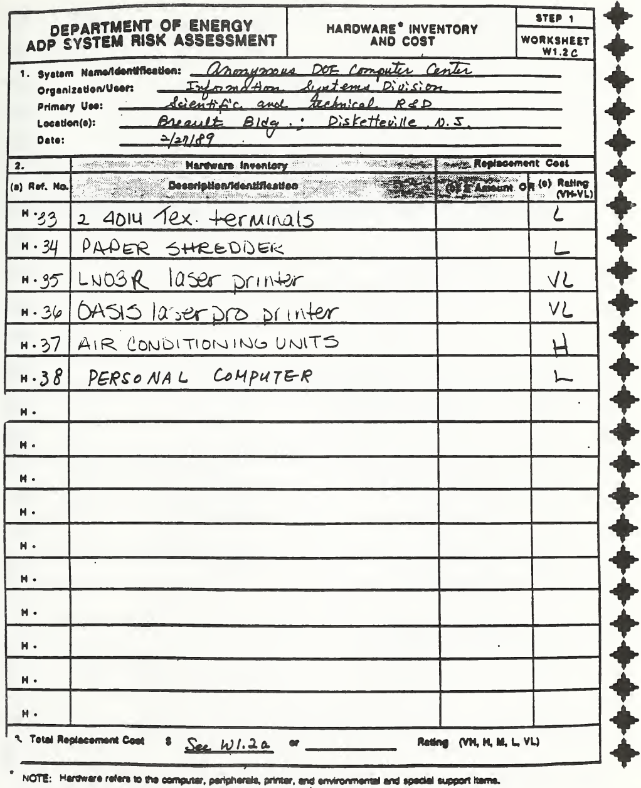
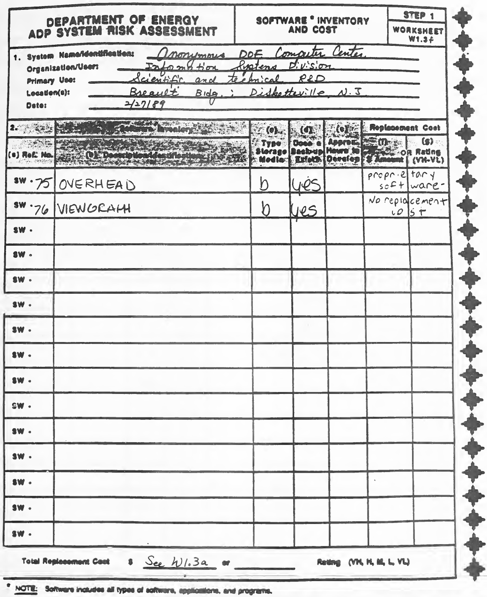
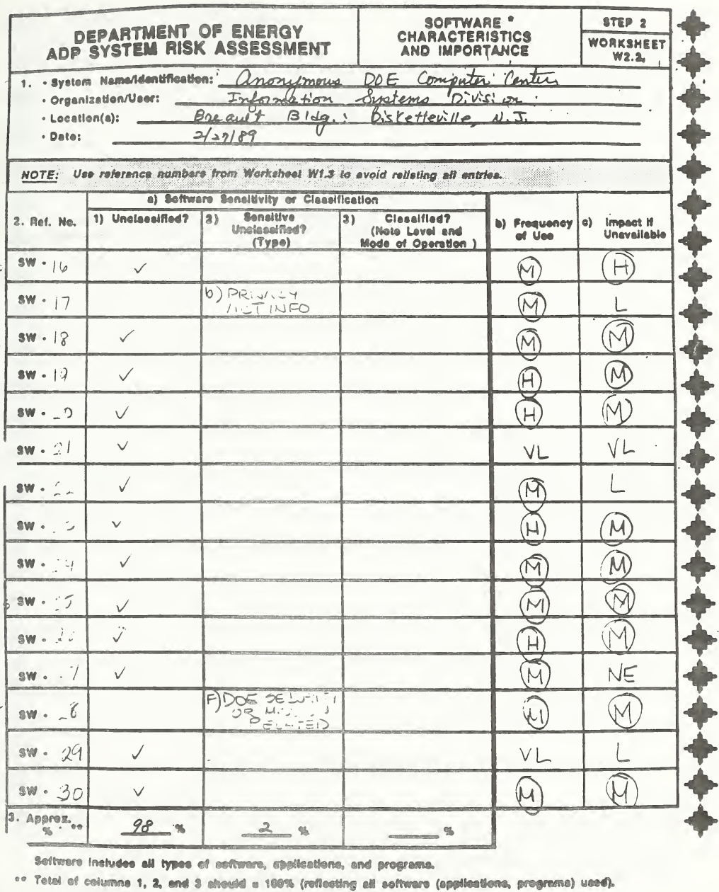
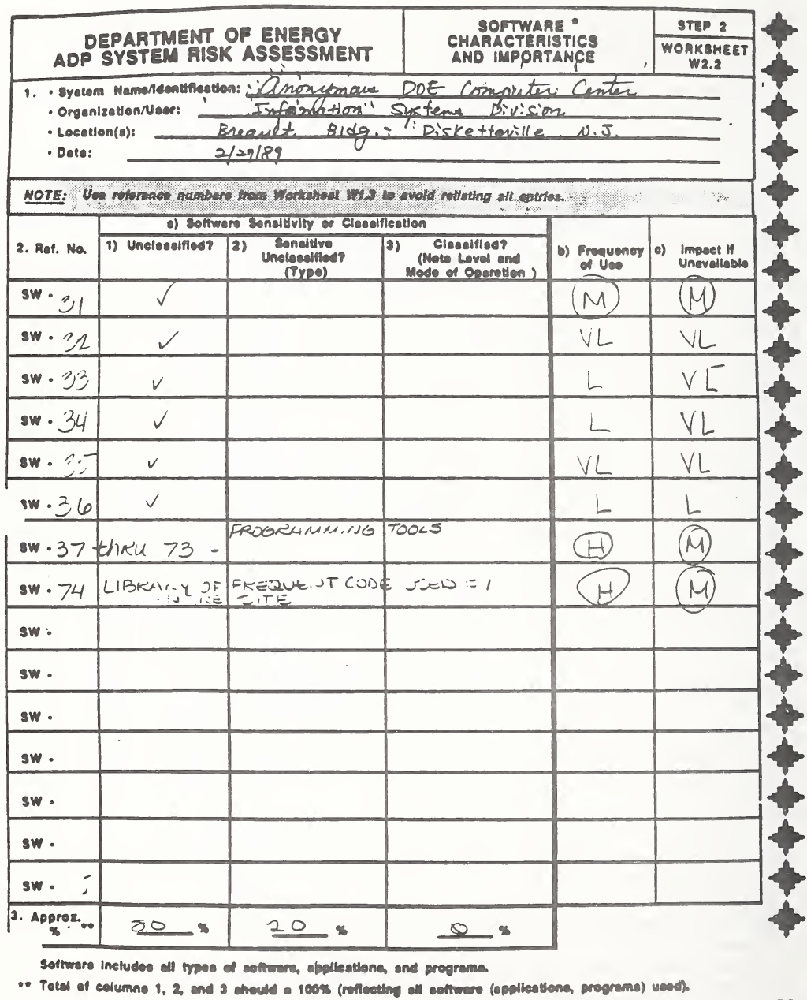
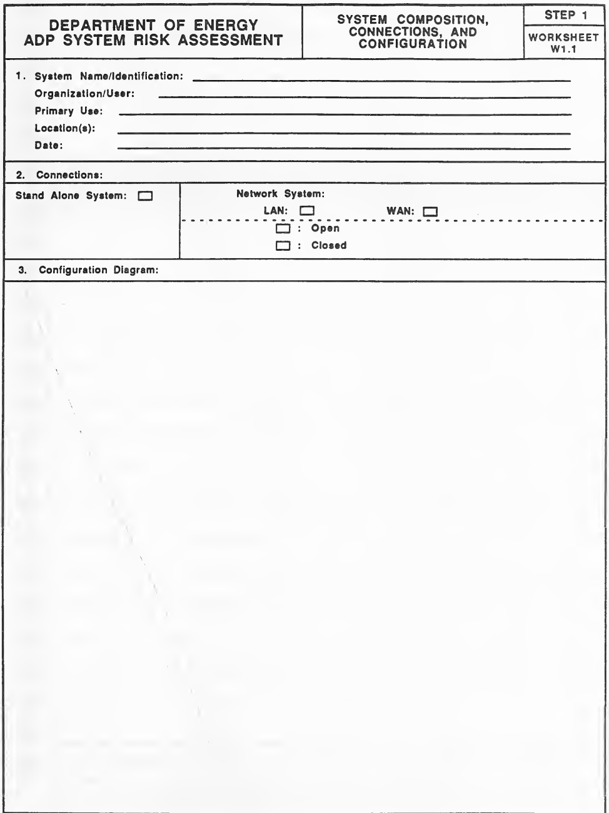
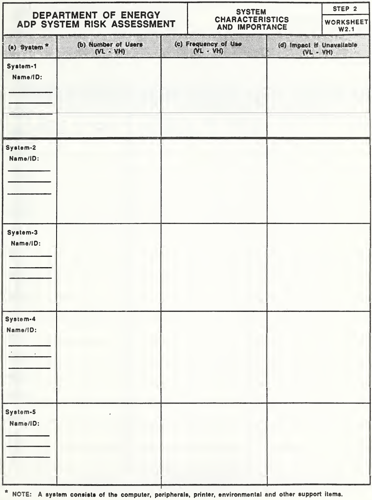
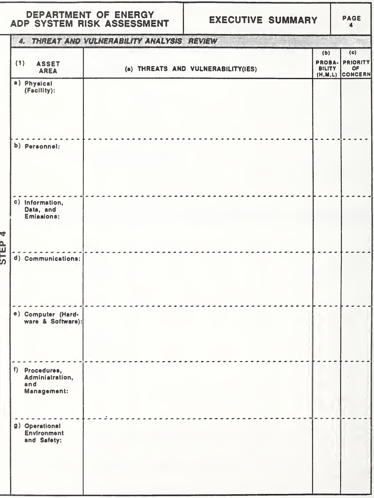
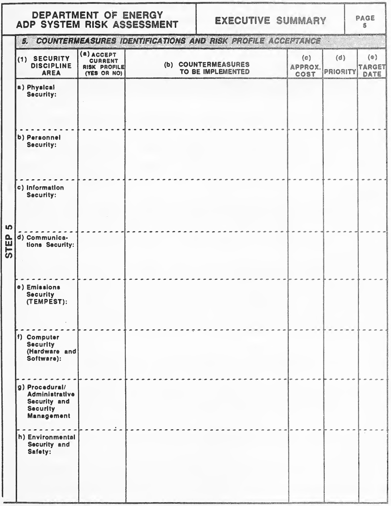

NIST IR 4325 日本語訳
英語タイトル : U.S. Department of Energy Risk Assessment Methodology日本語タイトル : 米国エネルギー省のリスクアセスメント手法
公開日 : 1990-05-01
原文URL : https://csrc.nist.gov/pubs/ir/4325/final
原本 PDF : https://doi.org/10.6028/NIST.IR.4325
訳文 : 有志による非公式の日本語訳（AI による翻訳とレビュー）。全 1244 段落を翻訳済み（原文取得日 : 2026-10-31）
[要約] NIST IR 4325 は、米国エネルギー省（DOE）が開発したリスクアセスメント手法を示す報告書です。第 I 巻は DOE リスクアセスメントガイドラインの手順、資源表および完成見本、第 II 巻は DOE リスクアセスメントワークシートで、本文中で参照される用語集と参考文献は第 II 巻の後に続きます。第 I 巻のガイドラインは、システムの定義、システム・ソフトウェア・データの特性の明確化、ベースラインセキュリティ要件（BLSR）の確認とそれを満たさない、または一部しか満たさない項目の特定などのステップを追って進める構成で、各ステップのワークシートの手順に資源表が添えられています。本文中にはディスケットへの言及がありますが、本報告書に添えて配布するためのディスケットは複製されていません。
NISTIR 4325
NISTIR 4325
NEW NIST PUBLICATION
October 1990
NIST の新刊
1990 年 10 月
U.S. Department of Energy Risk Assessment Methodology
米国エネルギー省のリスクアセスメント手法
Volume I: DOE Risk Assessment Guideline Instructions, Resource Table, and Completed Sample
第 I 巻: DOE リスクアセスメントガイドラインの手順、資源表および完成見本
Volume II: DOE Risk Assessment Worksheets
第 II 巻: DOE リスクアセスメントワークシート
Edward Roback
NIST Coordinator
Edward Roback
NIST 担当調整官
U.S. DEPARTMENT OF COMMERCE
National Institute of Standards and Technology
Gaithersburg, MD 20899
米国商務省
国立標準技術研究所（National Institute of Standards and Technology）
Gaithersburg, MD 20899
U.S. DEPARTMENT OF COMMERCE
Robert A. Mosbacher, Secretary
National Institute of Standards and Technology
John W. Lyons, Director
米国商務省
Robert A. Mosbacher 長官
国立標準技術研究所（National Institute of Standards and Technology）
John W. Lyons 所長
NISTIR 4325
NISTIR 4325
U.S. DEPARTMENT OF ENERGY RISK ASSESSMENT METHODOLOGY
米国エネルギー省のリスクアセスメント手法
Volume I: DOE Risk Assessment Guideline Instructions, Resource Table, and Completed Sample
第 I 巻: DOE リスクアセスメントガイドラインの手順、資源表および完成見本
Volume II: DOE Risk Assessment Worksheets
第 II 巻: DOE リスクアセスメントワークシート
Edward Roback
NIST Coordinator
Edward Roback
NIST 担当調整官
U.S. DEPARTMENT OF COMMERCE
National Institute of Standards and Technology
Gaithersburg, MD 20899
米国商務省
国立標準技術研究所（National Institute of Standards and Technology）
Gaithersburg, MD 20899
MAY 1990
1990 年 5 月
U.S. DEPARTMENT OF COMMERCE
Robert A. Mosbacher, Secretary
National Institute of Standards and Technology
John W. Lyons, Director
米国商務省
Robert A. Mosbacher 長官
国立標準技術研究所（National Institute of Standards and Technology）
John W. Lyons 所長
Preface
序文
This National Institute of Standards and Technology Interagency Report (NISTIR) presents a risk assessment methodology developed by the U.S. Department of Energy. This NISTIR contains Volume I: DOE Risk Assessment Guideline Instructions, Resource Table, and Completed Sample and Volume II: DOE Risk Assessment Worksheets. The glossary and bibliography which are referenced in the text follow Volume II. Although there are references to a diskette in the text, no diskette has been reproduced for distribution with this NISTIR.
この国立標準技術研究所省庁間報告書（NISTIR）は、米国エネルギー省が開発したリスクアセスメント手法を紹介するものです。本 NISTIR には、第 I 巻: DOE リスクアセスメントガイドラインの手順、資源表および完成見本と、第 II 巻: DOE リスクアセスメントワークシートが含まれます。本文中で参照されている用語集と参考文献は、第 II 巻の後に続きます。本文中にはディスケットへの言及がありますが、本 NISTIR に添えて配布するためのディスケットは複製されていません。
The National Institute of Standards and Technology (NIST) makes no claim or endorsement of this methodology. However, as this material may be of use to other organizations, the report is being reprinted by NIST to make it publicly available and to provide for broad dissemination of this federally sponsored work. This publication is part of a continuing NIST effort to assist federal agencies in accordance with NIST's mandate under the Computer Security Act of 1987.
国立標準技術研究所（NIST）は、この手法について何らの主張も推奨も行いません。ただし、この資料は他の組織にも役立つ可能性があるため、連邦政府が後援したこの成果を広く公開し普及させる目的で、NIST が再刊するものです。本書は、1987 年コンピューターセキュリティ法（Computer Security Act of 1987）に基づく NIST の権限に沿って連邦機関を支援する、NIST の継続的な取り組みの一部です。
NIST expresses its appreciation to the U.S. Department of Energy for their permission to publish this report.
NIST は、本報告書の公表を許可した米国エネルギー省に謝意を表します。
Questions regarding this publication should be addressed to the Associate Director for Computer Security, National Computer Systems Laboratory, Building 225, Room B154, National Institute of Standards and Technology, Gaithersburg, MD, 20899.
本書に関するお問い合わせは、Associate Director for Computer Security, National Computer Systems Laboratory, Building 225, Room B154, National Institute of Standards and Technology, Gaithersburg, MD, 20899 までお寄せください。
Additional copies of this publication may be purchased through the National Technical Information Service, Springfield, VA, 22161, telephone: (703) 487-4650.
本書の追加部数は、National Technical Information Service, Springfield, VA, 22161（電話: (703) 487-4650）を通じて購入できます。
DOE/MA-365
DOE/MA-365
DEPARTMENT OF ENERGY — VOLUME I
エネルギー省 — 第 I 巻
DOE RISK ASSESSMENT GUIDELINE INSTRUCTIONS, RESOURCE TABLE, AND COMPLETED SAMPLE
DOE リスクアセスメントガイドラインの手順、資源表および完成見本
-- A Structured Approach --
-- 構造化されたアプローチ --
September, 1989
1989 年 9 月
TABLE OF CONTENTS
目次
VOLUME I: DOE RISK ASSESSMENT INSTRUCTIONS, RESOURCE TABLES AND COMPLETED SAMPLE (BIBLIOGRAPHY AND GLOSSARY ON DISKETTES)
第 I 巻: DOE リスクアセスメントの手順、資源表および完成見本（参考文献と用語集はディスケットに収録）
INTRODUCTION — 1
序論 — 1
1. Background — 1
1. 背景 — 1
2. Objectives of the Guideline — 2
2. ガイドラインの目的 — 2
3. Organization of the Guideline — 3
3. ガイドラインの構成 — 3
4. Description of the Guideline's Mechanics — 4
4. ガイドラインの仕組みの説明 — 4
STEP 1 DEFINE YOUR SYSTEM — 12
ステップ 1 システムを定義する — 12
R1.2A Small/Simple System — 17
R1.2A 小規模・単純なシステム — 17
R1.2B Large/Complex System — 18
R1.2B 大規模・複雑なシステム — 18
R1.3 Software: Types, Uses, Storage Media Software and Data Cost Guidance — 20
R1.3 ソフトウェア: 種類、用途、記憶媒体、ソフトウェアおよびデータのコストに関する指針 — 20
STEP 2 CHARACTERIZE YOUR SYSTEM, SOFTWARE, AND DATA — 22
ステップ 2 システム、ソフトウェア、データの特性を明らかにする — 22
R2.1 Rating the Importance of a System, Its Software and Data — 24
R2.1 システム、そのソフトウェアおよびデータの重要度の評価 — 24
R2.2a Types and Examples of Sensitive Unclassified Data and Software — 26
R2.2a 機微な非機密データおよびソフトウェアの種類と例 — 26
R2.2b Types of Classified Data and Software; Modes of Operation — 27
R2.2b 機密データおよびソフトウェアの種類、動作モード — 27
STEP 3 REVIEW BASELINE SECURITY REQUIREMENTS (BLSRs) AND IDENTIFY THOSE NOT MET OR PARTIALLY MET — 29
ステップ 3 ベースラインセキュリティ要件（BLSR）を確認し、満たされていないもの、または一部しか満たされていないものを特定する — 29
R3 Master List of DOE Baseline Security Requirements — 34
R3 DOE ベースラインセキュリティ要件の総括リスト — 34
STEP 4 REVIEW THREATS AND VULNERABILITIES AND IDENTIFY ANY WHICH AFFECT YOUR SYSTEM — 37
ステップ 4 脅威と脆弱性を確認し、システムに影響するものを特定する — 37
R4.1 Sample Impacts of Threats to and Vulnerabilities of the Physical Facility — 41
R4.1 物理的施設に対する脅威と脆弱性の影響の例 — 41
R4.2 Sample Impacts of Threats to and Vulnerabilities of Personnel — 42
R4.2 要員に対する脅威と脆弱性の影響の例 — 42
R4.3 Sample Impacts of Threats to and Vulnerabilities of Information, Data, and Emissions — 43
R4.3 情報、データおよび電磁波放射に対する脅威と脆弱性の影響の例 — 43
TABLE OF CONTENTS (Continued)
目次（続き）
R4.4 Sample Impacts of Threats to and Vulnerabilities of Communications — 44
R4.4 通信に対する脅威と脆弱性の影響の例 — 44
R4.5a Sample Impacts of Threats to and Vulnerabilities of Computer Hardware — 45
R4.5a コンピューターハードウェアに対する脅威と脆弱性の影響の例 — 45
R4.5b Sample Impacts of Threats to and Vulnerabilities of Computer Software — 46
R4.5b コンピューターソフトウェアに対する脅威と脆弱性の影響の例 — 46
R4.6 Sample Impacts of Threats to and Vulnerabilities of ADP System procedures, Administration and Management — 47
R4.6 ADP システムの手順、管理および運営に対する脅威と脆弱性の影響の例 — 47
R4.7a Environmental Threats: Data on U.S. Earthquake Activity — 48
R4.7a 環境上の脅威: 米国の地震活動のデータ — 48
R4.7b Environmental Threats: Data on U.S. Tornado Activity — 49
R4.7b 環境上の脅威: 米国の竜巻活動のデータ — 49
R4.7c Environmental Threats: Data on U.S. Thunderstorm Activity — 50
R4.7c 環境上の脅威: 米国の雷雨活動のデータ — 50
R4.7d Map of DOE Facilities in the U.S. — 51
R4.7d 米国内の DOE 施設の地図 — 51
STEP 5 REVIEW AND SELECT COUNTERMEASURES OR ACCEPT CURRENT RISK PROFILE — 53
ステップ 5 対策を検討して選定する、または現在のリスクプロファイルを受容する — 53
R5.1a Countermeasures Guidance: Physical Security — 57
R5.1a 対策の手引き: 物理的セキュリティ — 57
R5.1b Countermeasures Guidance: Personnel Security — 58
R5.1b 対策の手引き: 要員セキュリティ — 58
R5.1c Countermeasures Guidance: Information Security — 59
R5.1c 対策の手引き: 情報セキュリティ — 59
R5.1d Countermeasures Guidance: Communications Security — 60
R5.1d 対策の手引き: 通信セキュリティ — 60
R5.1e Countermeasures Guidance: Emissions Security (TEMPEST) — 61
R5.1e 対策の手引き: 電磁波放射セキュリティ（TEMPEST） — 61
R5.1f Countermeasures Guidance: Computer Security — 62
R5.1f 対策の手引き: コンピューターセキュリティ — 62
R5.1g Countermeasures Guidance: Administrative/Procedural Security and Security Management — 63
R5.1g 対策の手引き: 管理・手続上のセキュリティおよびセキュリティマネジメント — 63
TABLE OF CONTENTS (Continued)
目次（続き）
R5.1h Countermeasures Guidance: Environmental Security and Safety — 64
R5.1h 対策の手引き: 環境セキュリティと安全 — 64
R5.1i Guidance for Determining Costs for Countermeasures — 65
R5.1i 対策のコストを求めるための手引き — 65
STEP 6 OBTAIN ACCOUNTABILITY — 66
ステップ 6 説明責任を確立する — 66
COMPLETED SAMPLE
完成見本
Executive Summary — CS-3
エグゼクティブサマリー — CS-3
Worksheets — CS-10
ワークシート — CS-10
ANNOTATED BIBLIOGRAPHY (ON FLOPPY)
注釈付き参考文献（フロッピーに収録）
1. Risk Assessment: General
1. リスクアセスメント: 全般
2. Risk Assessment: Computer Based Tools
2. リスクアセスメント: コンピューターを用いたツール
3. Threats and Vulnerabilities
3. 脅威と脆弱性
4. Countermeasures: Equipment and Technologies
4. 対策: 機器と技術
5. Countermeasures: Procedures
5. 対策: 手順
6. Networks
6. ネットワーク
7. Viruses and Other Related Threats
7. ウイルスおよびその他の関連する脅威
8. Risk Management
8. リスクマネジメント
9. Certification and Accreditation
9. 認証と認定
10. Other U.S. Government Computer Security Publications
10. その他の米国政府のコンピューターセキュリティ刊行物
GLOSSARY (ON FLOPPY)
用語集（フロッピーに収録）
INTRODUCTION
序論
INTRODUCTION
序論
1. BACKGROUND
1. 背景
The DOE Risk Assessment Instructions, Resource Tables, and Completed Sample -- A Structured Approach is the result of a joint program sponsored by the Department of Energy's (DOE) Office of ADP Management (MA-24) and the Computer and Technical Security Branch (DP-343.2). It was developed for the Department under contract by Booz, Allen & Hamilton Inc. The program grew out of a concern shared by both the Unclassified and Classified Computer Security Programs at DOE that the risk assessment process needed to be simplified and streamlined in order to allow ADP managers and end users to quickly understand and accomplish risk assessments in a more effective and expeditious fashion. The Guideline provides DOE with a systematic approach. There is documentation for each step performed as well as Executive Summary pages from which management can make cost-effective decisions on safeguard initiatives.
「DOE リスクアセスメントの手順、資源表および完成見本 -- 構造化されたアプローチ」は、エネルギー省（DOE）の ADP 管理室（MA-24）とコンピューター・技術セキュリティ課（DP-343.2）が共同で後援したプログラムの成果です。この文書は、Booz, Allen & Hamilton Inc. が同省との契約に基づいて作成しました。このプログラムは、DOE の非機密および機密のコンピューターセキュリティプログラムのどちらにも共通する、リスクアセスメントのプロセスを簡素化・合理化し、ADP の管理者とエンドユーザーが、より効果的かつ迅速にリスクアセスメントを理解し実施できるようにする必要がある、という懸念から生まれました。本ガイドラインは、DOE に体系的なアプローチを提供します。実施した各ステップについて文書が作成され、管理者が安全対策の取り組みについて費用対効果の高い判断を下せるようなエグゼクティブサマリーのページも備えています。
The need to develop such an approach was given impetus with the publication of OMB Circular A-130, "Management of Federal Information Resources," which placed additional emphasis on conducting risk assessments of all types of Government computer systems. Appendix III of A-130 underscored that such assessments are to provide the basis for making informed management decisions related to accepting identified risks or for implementing appropriate cost-effective countermeasures. It also allowed for varied approaches to fulfill the risk assessment requirement: risk assessments may vary from "an informal review of a microcomputer installation to a formal, fully quantified risk analysis of a large scale computer system."
このようなアプローチを開発する必要性は、OMB Circular A-130「Management of Federal Information Resources」の公表によって高まりました。この通達は、政府のあらゆる種類のコンピューターシステムに対するリスクアセスメントの実施をいっそう重視したものです。A-130 の Appendix III は、そうしたアセスメントが、特定されたリスクを受容するか、適切で費用対効果の高い対策を実施するかについて、情報に基づく経営上の判断を下す根拠を提供するものでなければならないと強調しました。また、リスクアセスメントの要件を満たすための多様なアプローチも認めており、リスクアセスメントは「マイクロコンピューター設備の非公式な点検から、大規模コンピューターシステムの正式かつ完全に定量化されたリスク分析まで」さまざまでよいとしています。
The Department's 1988 publication of DOE Order 1360.2A, Unclassified Computer Security Program, and DOE Order 5637.1, Classified Computer Security Program, also reflect the need to use the risk assessment process as an effective management tool for properly allocating security resources. In fact, the DOE Unclassified Computer Security Program urges those conducting risk assessments to carefully select the risk assessment approach that is best suited to their particular needs: "When used inappropriately (i.e., selecting an inappropriate methodology just to satisfy a general policy requirement), risk assessments can be costly and ineffective for all involved."* The use of a structured approach can expedite the risk assessment process.
同省が 1988 年に公表した DOE Order 1360.2A, Unclassified Computer Security Program と DOE Order 5637.1, Classified Computer Security Program も、セキュリティ資源を適切に配分するための効果的な管理ツールとしてリスクアセスメントのプロセスを用いる必要性を反映しています。実際、DOE の非機密コンピューターセキュリティプログラムは、リスクアセスメントを実施する者に対し、自らのニーズに最もよく合うリスクアセスメントのアプローチを慎重に選ぶよう促しています。「不適切に用いられた場合（すなわち、一般的な方針要件を満たすためだけに不適切な手法を選んだ場合）、リスクアセスメントは関係者全員にとって費用がかさむうえに効果のないものになりかねない。」* 構造化されたアプローチを用いることで、リスクアセスメントのプロセスを迅速に進められます。
The use of this Risk Assessment Guideline is not mandatory. It has proven to be an effective tool through DOE field tests and will be matured as user experience is gained.
このリスクアセスメントガイドラインの使用は義務ではありません。DOE の現場試験を通じて有効なツールであることが実証されており、利用者の経験が積み重なるにつれて成熟していきます。
2. OBJECTIVES OF THE GUIDELINE
2. ガイドラインの目的
The concept for the Guideline was developed after a thorough review of current approaches to and views on risk assessment was completed. Security professionals in both Government and commercial circles were interviewed to identify what "worked" and what didn't "work" with respect to risk assessment. Consensus among the interviewees was strong that risk assessment was NOT beneficial if it was:
このガイドラインの構想は、リスクアセスメントに関する現行のアプローチと見解を徹底的に調べたうえで作成されました。政府と民間の両方のセキュリティ専門家に聞き取りを行い、リスクアセスメントについて何が「うまくいく」か、何が「うまくいかない」かを明らかにしました。聞き取りの対象者の間では、リスクアセスメントが次のような場合には NOT beneficial（有益でない）という点で、強い合意がありました。
•Excessively detailed and lengthy -- making it a paper exercise rather than a beneficial management and security awareness process
•過度に詳細で長大であり、管理とセキュリティ意識向上のための有益なプロセスではなく、書類上の作業になってしまう
•Overly quantitative in approach, thus resulting in an end-product that is difficult to interpret (if not useless)
•アプローチが過度に定量的で、その結果、成果物の解釈が難しい（あるいは役に立たない）
•Not oriented towards the true "bottom-line": "What is it going to cost to fix the problems identified?"
•真の「結論」である「特定された問題を修正するのにいくらかかるのか」に向けられていない
A thorough review of the DOE's computer security culture, environment, and unique ADP applications was also undertaken. Again, views regarding the utility of risk assessment underscored many of the same concerns as were expressed above. Risk assessment had become a paper process divorced from the management decision-making process with which it must be integrated in order to achieve accountability for accepting a system's current risk profile and/or for allocating additional security resources.
DOE のコンピューターセキュリティの文化、環境、固有の ADP アプリケーションについても、徹底した調査が行われました。ここでもリスクアセスメントの有用性に関する見解は、上記と同じ懸念の多くを裏づけるものでした。リスクアセスメントは、経営上の意思決定のプロセスから切り離された書類上のプロセスになっていました。システムの現在のリスクプロファイルの受容や追加のセキュリティ資源の配分について説明責任を果たすには、リスクアセスメントをそのプロセスと統合する必要があります。
Discussions and correspondence with several DOE computer security professionals indicated other areas of the risk assessment process were of concern. There was an indication that it was difficult to determine the scope of a risk assessment and the necessary amount of documentation was undefined. Some aspects of cost evaluation that related to intangible or subjective assets was difficult to perform.
DOE の複数のコンピューターセキュリティ専門家との議論や書簡のやり取りから、リスクアセスメントのプロセスにはほかにも懸念される点があることがわかりました。リスクアセスメントの範囲を決めるのが難しいこと、必要な文書化の量が定まっていないことが指摘されました。無形資産や主観的な資産に関するコスト評価の一部には、実施が困難なものもありました。
Upon completion of the community wide interviews and DOE survey and review, a set of comprehensive objectives were established for the Guideline. The Guideline should be:
コミュニティ全体への聞き取りと DOE の調査・見直しが完了すると、ガイドラインのための包括的な目的が定められました。ガイドラインは次のようなものであるべきです。
•Simple to understand and use
•理解しやすく、使いやすい
•Generally consistent with and useful for both unclassified and classified environments
•非機密環境と機密環境の両方に概ね整合し、どちらにも役立つ
•Cost-effective
•費用対効果が高い
•Self-contained for ease of utilization
•使いやすさのために自己完結している
•Appropriate for use by most sites
•ほとんどの拠点で使うのに適している
•An information source
•情報源となる
•Non-labor or time intensive for the user
•利用者にとって労力を要さず、時間もかからない
•Capable of providing accountability
•説明責任を果たせる
•Adaptable for use/integration with currently used risk assessment methodologies
•現在使われているリスクアセスメント手法と併用・統合できるよう、適応させられる
•Flexibly structured to permit use of existing computer security documentation as input into the risk assessment framework
•既存のコンピューターセキュリティ文書をリスクアセスメントの枠組みへの入力として使えるよう、柔軟に構成されている
•Useful in providing assessments and recommendations of value to managers responsible for accepting risks or planning and funding computer security improvements.
•リスクを受容する、またはコンピューターセキュリティの改善を計画し資金を手当てする責任を負う管理者にとって価値のある、評価と勧告を提供するのに役立ちます。
The approach to conducting risk assessments presented in this Guideline was developed with these objectives firmly in mind. The Guideline's structured approach fully meets the risk assessment requirements imposed on the Department's ADP systems by Federal and Department computer security policy, while eliminating numerous "wheel-spinning" problem areas that have consistently complicated risk assessment efforts in the past.
本ガイドラインで示すリスクアセスメントの実施方法は、これらの目的を強く意識して開発されました。このガイドラインの構造化されたアプローチは、連邦および同省のコンピューターセキュリティ方針が同省の ADP システムに課すリスクアセスメントの要件を十分に満たすとともに、これまでリスクアセスメントの取り組みを一貫して複雑にしてきた、数多くの「空回り」の問題領域を排除します。
3. ORGANIZATION OF THE GUIDELINE
3. ガイドラインの構成
The Guideline is organized into two major parts which are divided into two separate volumes. Volume I, the main body of the Guideline includes general introductions and references. Volume I also consists of instructions for Steps 1 through 6 and a completed sample. Also included are a Bibliography, and a Glossary on 5 1/4" floppy diskettes. Volume II consists of the Worksheets for each step for completing the Guideline.
このガイドラインは二つの主要な部分から成り、それぞれ別の巻に分かれています。ガイドラインの本体である第 I 巻には、全般的な紹介と参照事項が含まれます。第 I 巻には、ステップ 1 から 6 までの手順と完成見本も含まれます。さらに、参考文献と用語集が 5 1/4 インチのフロッピーディスケットに収められています。第 II 巻は、ガイドラインを完了するための各ステップのワークシートで構成されます。
In order to effectively use the Guideline, working copies of Volume II, the Worksheets and Executive Summary, need to be made. Second, as you read Volume I instructions, open Volume II to the appropriate worksheet. The worksheet copies are not included in Volume I. Notice there are individual instructions for the worksheets. A resource table is included with the instructions where appropriate. This organization necessitates that both volumes be open to the same step in the risk assessment process.
ガイドラインを効果的に使うには、第 II 巻のワークシートとエグゼクティブサマリーの作業用コピーを作成する必要があります。次に、第 I 巻の手順を読みながら、第 II 巻の該当するワークシートを開いてください。ワークシートのコピーは第 I 巻には含まれていません。ワークシートには個別の手順があることに注意してください。必要に応じて、手順に資源表が添えられています。この構成のため、リスクアセスメントのプロセスの同じステップについて、両方の巻を開いておく必要があります。
Table of Contents are in Volume I. The contents and purpose of each of the Guideline's elements are as follows:
目次は第 I 巻にあります。ガイドラインの各要素の内容と目的は次のとおりです。
(1) Volume I of the Guideline:
(1) ガイドラインの第 I 巻:
•INTRODUCTION: The introduction describes the Guideline's background, its underlying philosophy and objectives, and the mechanics involved in using the Guideline. It also provides general instructions for Guideline use.
•序論: 序論では、ガイドラインの背景、その根底にある考え方と目的、およびガイドラインを使う際の仕組みを説明します。ガイドラインを使うための一般的な手順も示します。
•6 STEP APPROACH: The 6 steps provide the structured approach for conducting the risk assessment. Each step has a particular area of concern; Worksheets provide the necessary data sets and an organized format to address each of the areas of concern. Exhibit 1 presents an overview of the 6 steps and their main area of concern. It also lists the worksheets and resources tables that are used to support each step. A detailed discussion of how the process works -- its mechanics -- is presented in Section 4 below.
•6 ステップのアプローチ: 6 つのステップは、リスクアセスメントを実施するための構造化されたアプローチを提供します。各ステップには特定の関心領域があり、ワークシートが、それぞれの関心領域に対処するために必要なデータセットと整理された書式を提供します。図表 1 は、6 つのステップとそれぞれの主な関心領域の概要を示しています。各ステップを支援するために使うワークシートと資源表も一覧にしています。このプロセスがどのように機能するか、つまりその仕組みの詳細な説明は、後述の第 4 節で示します。
•COMPLETED SAMPLE: The completed sample illustrates how the worksheets and Executive Summary are to be completed. A description of an ADP system/installation is provided, and then the Guideline's approach is used to conduct a risk assessment of this sample system/installation.
•完成見本: 完成見本は、ワークシートとエグゼクティブサマリーをどのように記入するかを示します。ADP システム・設備の説明を示し、続いて、この見本のシステム・設備に対し、ガイドラインのアプローチを使ってリスクアセスメントを実施します。
•ANNOTATED BIBLIOGRAPHY: The annotated bibliography, covering the period 1983 - 1988, consists of ten main topical sections on key areas of concern to those conducting risk assessments, from threat and vulnerability-related articles to literature on specific countermeasures for coping with various types of threats. Special interest sections on viruses and networks are also included. In addition, the bibliography contains references to numerous U.S. Government computer security guidance documents.
•注釈付き参考文献: 注釈付き参考文献は 1983 年から 1988 年の期間を対象とし、リスクアセスメントを実施する人々にとっての主要な関心領域を扱う 10 の主題別の節で構成されます。脅威と脆弱性に関する論文から、さまざまな種類の脅威に対処するための個別の対策に関する文献まで、幅広く含まれます。ウイルスとネットワークに関する特別な関心事項の節もあります。さらに、この参考文献には、米国政府の数多くのコンピューターセキュリティ指針文書への参照も含まれます。
•GLOSSARY: The glossary provides a useful compendium of terms common to the risk assessment process. Three DOE sources were used as a starting point for developing the glossary. These were then edited to suit the needs of the Guideline and additional terms were added to ensure coverage of all key terms mentioned herein.
•用語集: 用語集は、リスクアセスメントのプロセスに共通する用語を役立つ形にまとめたものです。用語集の作成は、DOE の三つの資料を出発点としました。これらを、ガイドラインのニーズに合わせて編集し、本書で触れる主要な用語をすべて網羅するよう、用語を追加しました。
(2) Volume II of the Guideline:
(2) ガイドラインの第 II 巻:
•WORKSHEETS: The Worksheets provide the necessary documentation to complete the 6 STEP APPROACH as detailed in Volume I.
•ワークシート: ワークシートは、第 I 巻で詳しく説明した 6 ステップのアプローチを完了するために必要な文書を提供します。
•EXECUTIVE SUMMARY: The Executive Summary is the final worksheet which provides a 6 page set of summary sheets for use in recording the results of each step of the risk assessment, and for obtaining management sign-off for the end-results and any resulting recommendations.
•エグゼクティブサマリー: エグゼクティブサマリーは最後のワークシートであり、リスクアセスメントの各ステップの結果を記録し、最終結果とそこから導かれる勧告について経営層の承認を得るために使う、6 ページ構成の要約シートです。
4. DESCRIPTION OF THE GUIDELINE'S MECHANICS
4. ガイドラインの仕組みの説明
The Guideline provides a systematic, structured approach to the various evaluations and decision making processes that comprise a risk assessment. The intent is to provide an approach that allows you -- whether your system is in an unclassified or classified environment or whether it is a PC on large system -- to readily identify and, wherever possible, have available in one package, all information necessary to conduct a risk assessment. The risk assessment provides for a "short form" and a "long form". The "short form" is adequate for microcomputers, standalone systems, and systems that process unclassified or sensitive information. The "long form" is primarily used for evaluating large systems, systems used primarily for classified processing, and network systems.
このガイドラインは、リスクアセスメントを構成するさまざまな評価と意思決定のプロセスに対して、体系的で構造化されたアプローチを提供します。その意図は、システムが非機密環境にあるか機密環境にあるか、また大型システム上の PC であるかを問わず、リスクアセスメントの実施に必要なすべての情報を容易に特定でき、可能な限り一つにまとめて入手できるアプローチを提供することです。リスクアセスメントには「短縮版」と「完全版」があります。「短縮版」は、マイクロコンピューター、スタンドアロンシステム、および非機密情報または機微な情報を処理するシステムに適しています。「完全版」は主に、大規模システム、主として機密情報の処理に使われるシステム、およびネットワークシステムの評価に使います。
Through use of the Guideline, a useful end-product (e.g., the Executive Summary) results. Results are enhanced when the knowledge of security professionals within the organization is used. Further, the structure of the Guideline allows you to go "off-line," if desired, and use a risk assessment tool that has proven useful in the past, and to enter the results of these "off-line" analyses on the appropriate section of the Guideline's Executive Summary. The Guideline can be tailored for use in a specific setting by allowing the assessor to conclude the assessment at the end of Step 3 when further analysis is not deemed necessary. Likewise, the Guideline allows the assessor to complete the Executive Summary, and provide the necessary input for the risk assessment process. Care should be taken while compiling and storing the results of the risk assessment. These results will be sensitive or classified since they address system specific threats and vulnerabilities.
ガイドラインを使うことで、有用な成果物（たとえばエグゼクティブサマリー）が得られます。組織内のセキュリティ専門家の知見を活用すると、結果はより良いものになります。さらに、ガイドラインの構造により、希望すればガイドライン外で作業し、過去に有用であると実証されたリスクアセスメントツールを使って、その分析結果をガイドラインのエグゼクティブサマリーの該当する部分に記入することができます。さらなる分析が必要ないと判断される場合には、評価者がステップ 3 の終了時点でアセスメントを終えられるため、ガイドラインを特定の環境に合わせて調整して使うことができます。同様に、ガイドラインでは、評価者がエグゼクティブサマリーを完成させ、リスクアセスメントのプロセスに必要な入力を提供することもできます。リスクアセスメントの結果をまとめ、保管する際には注意すべきです。結果はシステム固有の脅威と脆弱性を扱うため、機微な情報、または機密情報になります。
A series of informational Resource Tables accompanies each step. The Worksheets are organized to collect specific types of information needed to support the risk assessment process. Their structure is simple and logical, and they are explained by step-by-step instructions to maximize their utility and minimize wheel-spinning. The Resource Tables provide the majority of data and information necessary to complete the Worksheets for each type of system that is assessed. Data sets, as required, were also tailored to meet DOE-specific requirements.
各ステップには、一連の情報提供用の資源表が添えられています。ワークシートは、リスクアセスメントのプロセスを支えるために必要な特定の種類の情報を収集するように構成されています。その構造は単純で論理的であり、有用性を最大にし、空回りを最小にするため、ステップごとの手順で説明されています。資源表は、評価する各種のシステムについて、ワークシートを完成させるために必要なデータと情報の大部分を提供します。データセットも、必要に応じて、DOE 固有の要件に合わせて調整されています。
The contents of Volume II should be copied in its entirety. It contains the Worksheets and Executive Summary sheets. Remember, the guide may be used any number of times and Volume II must maintained. Also, there is a numbering system to help you quickly identify how the Worksheets and Resource Tables are correlated.
第 II 巻の内容は、全体をコピーすべきです。第 II 巻にはワークシートとエグゼクティブサマリーのシートが含まれます。ガイドは何度でも使える点に留意し、第 II 巻を保管しておかなければなりません。また、ワークシートと資源表がどのように対応しているかをすぐに把握できるよう、番号体系が用意されています。
NUMBERING SYSTEM FOR WORKSHEETS AND RESOURCE TABLES
ワークシートと資源表の番号体系

Also, there is a special graphic border in the right hand margin to help identify the Worksheets.
また、ワークシートを識別しやすくするため、右余白に特別な図柄の枠があります。
You are also encouraged to draw upon existing documentation to augment the data sets that are provided in the Guideline. Documents of potential use from the Unclassified Computer Security Program include: inventory information developed for the ADP Long Range Plan, the Computer Protection Plan, results of compliance and management reviews, audit reports, incident reports, and certification documentation. Documentation from the Classified Computer Security Program of potential use include: the Statement of Threat, Computer Security Plan, Long Range Plan, System Test and Evaluation results, inspection results, and accreditation documentation. The remainder of this section provides additional detail on each of the 6 steps and their inter-relationship. The overall decision making process involved in using this approach is depicted in the Exhibit 2 at the end of this section.
ガイドラインで提供されるデータセットを補うため、既存の文書も活用することが推奨されます。非機密コンピューターセキュリティプログラムで活用できる可能性のある文書には、ADP 長期計画のために作成された目録情報、コンピューター保護計画、準拠性審査と管理審査の結果、監査報告書、インシデント報告書、認証文書があります。機密コンピューターセキュリティプログラムで活用できる可能性のある文書には、脅威に関する声明、コンピューターセキュリティ計画、長期計画、システムの試験・評価の結果、検査結果、認定文書があります。この節の残りでは、6 つのステップそれぞれの詳細と、その相互関係を説明します。このアプローチを用いる際の意思決定プロセス全体は、この節の末尾にある図表 2 に示します。
(1) STEP 1: DEFINE YOUR SYSTEM. The purpose of Step 1 is to produce a general definition of your system by looking at several key system features: composition, connections, size, cost(s), and back-ups. First, the current configuration of your system is established to ensure that you have fully identified all major system components and connections. Use of a system configuration diagram provides you a visual opportunity to record and review your system's current configuration. It also allows you to visualize potential vulnerabilities that may exist as a result of your system's connections and data flows. Second, Step 1 helps you in developing a general cost estimate for your system so that you are able to appreciate how much it would cost to replace it in its entirety. It is also important to have a general appreciation for the cost of your system in order to decide which countermeasures, if any, are justified based on the cost of your system. Step 1 also reviews the type of software and data used by your system, with the objective of understanding approximately how much labor went into the development of each and whether back-ups are available and necessary.
(1) ステップ 1: システムを定義します。ステップ 1 の目的は、構成、接続、規模、コスト、バックアップという、システムの主要ないくつかの特徴を見て、システムの全般的な定義を作成することです。まず、システムの現在の構成を確定し、主要なシステム構成要素と接続をすべて洗い出せていることを確認します。システム構成図を使うと、システムの現在の構成を視覚的に記録して確認できます。また、システムの接続やデータの流れによって存在しうる潜在的な脆弱性を、視覚的に把握することもできます。次に、ステップ 1 は、システム全体を置き換えるのにどれだけの費用がかかるかを把握できるよう、システムの全般的なコスト見積りの作成を助けます。どの対策が、あるとすれば、システムのコストに照らして妥当であるかを判断するためにも、システムのコストを大まかに把握しておくことが重要です。ステップ 1 では、システムが使うソフトウェアとデータの種類も確認し、それぞれの開発にどの程度の労力がかかったか、およびバックアップが利用でき、かつ必要かどうかを把握することを目的とします。
The end products from Step 1 are: (1) A system configuration diagram which depicts your system's major components and connections, (2) a current listing of your system's major components, and (3) rough cost estimates for replacing your system's hardware, software and data.
ステップ 1 の最終成果物は、(1) システムの主要な構成要素と接続を示すシステム構成図、(2) システムの主要な構成要素の最新の一覧、(3) システムのハードウェア、ソフトウェアおよびデータを置き換えるための大まかなコスト見積りです。
(2) STEP 2: CHARACTERIZE YOUR SYSTEM, SOFTWARE, AND DATA. The purpose of Step 2 is to characterize your total system in terms of several key characteristics. Questions in two primary areas are answered in this Step: (1) Does your system process any classified information or sensitive unclassified information? If so, what types/levels? Responses to these questions provide the basis for selecting what type(s) of security precautions are required for your system, software and data; and (2) How important is your system, its operations, software and data to its users and their organization? Responses to this second question will help you determine the relative importance of the system, software, and data, and provide the basis for determining or validating your contingency planning needs.
(2) ステップ 2: システム、ソフトウェア、データの特性を明らかにします。ステップ 2 の目的は、システム全体をいくつかの主要な特性の観点から特徴づけることです。このステップでは、二つの主要な領域の問いに答えます。(1) システムは機密情報または機微な非機密情報を処理していますか。処理している場合、その種類・レベルは何ですか。これらの問いへの回答は、システム、ソフトウェアおよびデータにどの種類のセキュリティ上の予防措置が必要かを選ぶ基礎になります。(2) システム、その運用、ソフトウェアおよびデータは、利用者とその組織にとってどれほど重要ですか。この二つ目の問いへの回答は、システム、ソフトウェアおよびデータの相対的な重要度を判断するのに役立ち、不測事態対応計画の必要性を判断または検証する基礎になります。
The end-products produced in Step 2 are: (1) An assessment of the relative importance of your system, software, and data to their users and organization; and (2) an identification of what types of information you are processing (e.g., unclassified, sensitive unclassified, or classified).
ステップ 2 で得られる最終成果物は、(1) システム、ソフトウェアおよびデータの、利用者とその組織にとっての相対的な重要度の評価、(2) 処理している情報の種類（たとえば、非機密、機微な非機密、または機密）の特定です。
(3) STEP 3: REVIEW BASELINE SECURITY REQUIREMENTS (BLSRs) AND IDENTIFY THOSE NOT MET OR PARTIALLY MET. The purpose of Step 3 is to determine whether your system's hardware, software, and data -- as they exist today in their current operating environment and utilized by you and your organization -- meet the minimum Baseline Security Requirements (BLSRs) set forth in all applicable DOE Orders. The Baseline Security Requirements as used in this guideline encompass DOE Orders 1360.2A, 5637.1, and all relevant guidelines, orders, laws, etc. In the previous step you identified whether your system was involved in sensitive unclassified or classified processing. In this step, you are asked to review brief lists of security countermeasures (baseline security requirements) that MUST be in place, per the applicable DOE orders.
(3) ステップ 3: ベースラインセキュリティ要件（BLSR）を確認し、満たされていないもの、または一部しか満たされていないものを特定します。ステップ 3 の目的は、システムのハードウェア、ソフトウェアおよびデータが、現在の運用環境で、利用者とその組織によって使われている現状のままで、該当するすべての DOE Order に定められた最低限のベースラインセキュリティ要件（BLSR）を満たしているかどうかを判断することです。このガイドラインで使うベースラインセキュリティ要件は、DOE Order 1360.2A、5637.1、および関連するすべてのガイドライン、命令、法律などを包含します。前のステップで、システムが機微な非機密情報または機密情報の処理に関与しているかどうかを特定しました。このステップでは、該当する DOE Order に従い、実施されていなければならない（MUST）セキュリティ対策（ベースラインセキュリティ要件）の短い一覧を確認します。
Step 3 will result in an assessment of your current security profile in terms of: (1) whether you currently have met the DOE's minimum baseline security requirements that apply to sensitive unclassified and classified ADP processing; (2) a list of any noted deficiencies that must be corrected; and (3) target dates for correcting them. It also allows you to note any areas where you desire to supplement the countermeasures currently in-place if you feel it is justified based on Step 1 and Step 2 results.
ステップ 3 によって、現在のセキュリティプロファイルについて、次の観点で評価が得られます。(1) 機微な非機密および機密の ADP 処理に適用される DOE の最低限のベースラインセキュリティ要件を現時点で満たしているかどうか、(2) 指摘された不備のうち是正しなければならないものの一覧、(3) その是正の目標日。ステップ 1 と 2 の結果に照らして妥当だと考える場合には、現在実施されている対策を補強したい領域を記録することもできます。
Further, for the majority of small/simple systems (as defined in Step 1 of this process), the Step 3 results provide an adequate assessment of the current risks to your system. Therefore, Step 3 also documents the decisions made to accept or upgrade your current risk profile, and provides the basis for obtaining management sign-off for these decisions. For these systems, the risk assessment process is complete.
さらに、（このプロセスのステップ 1 で定義される）小規模・単純なシステムの大半では、ステップ 3 の結果が、システムに対する現在のリスクの十分な評価になります。したがって、ステップ 3 は、現在のリスクプロファイルを受容するか、強化するかについてなされた判断も記録し、その判断について経営層の承認を得るための根拠を提供します。こうしたシステムでは、リスクアセスメントのプロセスはここで完了します。
(4) STEP 4: REVIEW THREATS AND VULNERABILITIES AND IDENTIFY ANY WHICH AFFECT YOUR SYSTEM. The purpose of Step 4 is to conduct a more extensive review of the threats that might affect your system's hardware, software and data through exploitation of specific vulnerabilities in your system and its operating environment. In this step, you are asked to record which specific threats could impact your system due to existing deficiencies in your security profile. Further, the Step also addresses the probability that a given threat could arise at your site or in your locality. (An uncomplicated probability scheme is provided for your use in order to accomplish this.) Finally, the Step also allows you to specify the priority in which the identified threat(s) should be treated.
(4) ステップ 4: 脅威と脆弱性を確認し、システムに影響するものを特定します。ステップ 4 の目的は、システムとその運用環境の特定の脆弱性が悪用されることで、システムのハードウェア、ソフトウェアおよびデータに影響しうる脅威について、より広範な確認を行うことです。このステップでは、セキュリティプロファイルに既存の不備があることにより、どの特定の脅威がシステムに影響しうるかを記録します。さらに、このステップでは、ある脅威が拠点またはその地域で発生する確率も扱います。（そのために、簡素な確率の枠組みが用意されています。）最後に、このステップでは、特定された脅威に対処する優先順位を指定することもできます。
The end-products that result from Step 4 are: (1) a threat and vulnerability analysis of your system, facility, and its assets within its operating environment. It will also (2) allow you to identify which of the applicable threats are: very likely to occur, likely to occur, or unlikely to occur. Finally, Step 4 will provide the basis for determining which vulnerabilities should be corrected, and in what order, based on the simple probabilities identified for threat occurrence.
ステップ 4 で得られる最終成果物は、(1) 運用環境の中にあるシステム、施設およびその資産に対する脅威と脆弱性の分析です。また、(2) 該当する脅威のうち、発生する可能性が非常に高いもの、高いもの、低いものを特定できるようにもなります。最後に、ステップ 4 は、脅威の発生について特定された簡素な確率に基づき、どの脆弱性をどの順序で是正すべきかを判断する根拠を提供します。
(5) STEP 5: REVIEW AND SELECT COUNTERMEASURES OR ACCEPT CURRENT RISK PROFILE. The purpose of Step 5 is two-fold. It provides an opportunity to review available countermeasures in each of the security discipline areas and decide which ones are appropriate for implementation to counter the threat impacts identified in Step 4. However, if your review of the threat impacts does not result in the identification of any new concerns, and confirms that your security program fully treats all possible threat scenarios for your system and site, then Step 5 also allows you to acknowledge this by accepting your current risk profile.
(5) ステップ 5: 対策を検討して選定する、または現在のリスクプロファイルを受容します。ステップ 5 の目的は二つあります。一つは、各セキュリティ分野で利用可能な対策を検討し、ステップ 4 で特定された脅威の影響に対抗するために、どれを実施するのが適切かを決める機会を提供することです。ただし、脅威の影響の検討から新たな懸念が特定されず、セキュリティプログラムがシステムと拠点に関して起こりうるすべての脅威シナリオに十分に対処していることが確認された場合、ステップ 5 では、現在のリスクプロファイルを受容することでそれを認めることもできます。
Step 5 results in (1) a prioritized list of countermeasures for implementation in each of the security discipline areas; OR (2) a formal acceptance of your current risk profile made based on a documented review and analysis of possible threat impacts to your system.
ステップ 5 の結果は、(1) 各セキュリティ分野で実施する対策の優先順位付きの一覧、または (2) システムに対して起こりうる脅威の影響について、文書化された検討と分析に基づく、現在のリスクプロファイルの正式な受容のいずれかです。
(6) STEP 6: OBTAIN ACCOUNTABILITY: MANAGEMENT UNDERSTANDING OF YOUR RISK PROFILE AND COUNTERMEASURES REQUIRED. Step 6 is the last and final step in the risk assessment process. It is a highly critical step, one that is often overlooked or neglected. The purpose of Step 6 is to obtain management accountability for the decisions and choices made throughout the risk assessment process. It provides a mechanism for briefing, reviewing, and discussing the risk assessment results with management and planning resources required for implementing the countermeasures identified.
(6) ステップ 6: 説明責任を確立する: 経営層によるリスクプロファイルと必要な対策の理解。ステップ 6 は、リスクアセスメントのプロセスの最後のステップです。見過ごされたり、おろそかにされたりしがちですが、きわめて重要なステップです。ステップ 6 の目的は、リスクアセスメントのプロセス全体を通じてなされた判断と選択について、経営層の説明責任を確立することです。特定された対策の実施に必要な資源を計画しながら、リスクアセスメントの結果を経営層に説明し、検討し、議論するための仕組みを提供します。
The Executive Summary Block for Step 6, Obtain Accountability: Management Understanding of Your Risk Profile and Countermeasures Required, provides a sign-off area for management to review the results of the risk assessment, and accept the current risk profile. This sign-off is the final end-product.
ステップ 6「説明責任を確立する: 経営層がリスクプロファイルと必要な対策を理解する」のエグゼクティブサマリーのブロックには、経営層がリスクアセスメントの結果を確認し、現在のリスクプロファイルを受容するための承認欄があります。この承認が最後の最終成果物です。
It is important to maintain the results of the risk assessment for use in subsequent assessments.
リスクアセスメントの結果は、その後のアセスメントで使うために保管しておくことが重要です。
| STEPS | AREAS COVERED BY STEP | REQUIRED WORKSHEETS AND RESOURCE TABLES FOR EACH STEP | |
|---|---|---|---|
| WORKSHEET | RESOURCE TABLE | ||
| 1 DEFINE YOUR SYSTEM | • SYSTEM: - CONFIGURATION - CONNECTIONS - SIZE - COST(S) • SOFTWARE AND DATA - COSTS - BACK-UPS | W1.1 SYSTEM COMPOSITION, CONNECTIONS, AND CONFIGURATION W1.2 HARDWARE INVENTORY AND COST W1.3 SOFTWARE INVENTORY AND COST W1.4 DATA INVENTORY AND COST | R1.1 SMALL/SIMPLE SYSTEM • DEFINITION • COST GUIDANCE • COMPONENTS R1.2 LARGE/COMPLEX SYSTEM • DEFINITION • COST GUIDANCE • COMPONENTS R1.3 • SOFTWARE: TYPES, USES, STORAGE MEDIA • SOFTWARE AND DATA COST GUIDANCE |
| 2 CHARACTERIZE YOUR SYSTEM, SOFTWARE, AND DATA | • DATA SENSITIVITY OR CLASSIFICATION • NUMBER OF USERS • FREQUENCY OF USE • IMPACT IF UNAVAILABLE | W2.1 SYSTEM CHARACTERISTICS AND IMPORTANCE W2.2 SOFTWARE CHARACTERISTICS AND IMPORTANCE W2.3 DATA CHARACTERISTICS AND IMPORTANCE | R2.1 RATING THE IMPORTANCE OF A SYSTEM, ITS SOFTWARE AND DATA R2.2a TYPES AND EXAMPLES OF SENSITIVE UNCLASSIFIED DATA AND SOFTWARE R2.2b TYPES OF CLASSIFIED DATA AND SOFTWARE, AND MODES OF OPERATION |
| 3 REVIEW BASELINE SECURITY REQUIREMENTS (BLSRs) AND IDENTIFY THOSE NOT MET OR PARTIALLY MET (IDENTIFY SUPPLEMENTAL UPGRADES IF DESIRED.) | • BLSRs BY SECURITY DISCIPLINE: - PHYSICAL - PERSONNEL - INFORMATION - COMPUTER - COMMUNICATIONS - EMISSIONS - PROCEDURAL/ - ENVIRONMENTAL/SAFETY | REVIEW OF BASELINE SECURITY REQUIREMENTS (BLSRS) FOR W3.1a&b PHYSICAL SECURITY W3.2 PERSONNEL SECURITY W3.3 INFORMATION SECURITY W3.4 COMMUNICATIONS SECURITY (COMSEC) W3.5 EMISSIONS SECURITY (TEMPEST) W3.6a&b COMPUTER SECURITY W3.7 ADMINISTRATIVE/ W3.8a&b ENVIRONMENTAL SECURITY AND SAFETY | R3 MASTER LIST OF DOCUMENTS FOR BASELINE SECURITY REQUIREMENTS (BLSRs) |
| 4 REVIEW THREATS AND VULNERABILITIES AND IDENTIFY ANY WHICH AFFECT YOUR SYSTEM | • THREATS AND VULNERABILITIES - BY IMPACT: -- DENIAL -- DESTRUCTION -- DISCLOSURE -- DAMAGE - BY PROBABILITY - BY PRIORITY OF CONCERN | W4 THREAT AND VULNERABILITY REVIEW | THREAT AND VULNERABILITY GUIDANCE (BY ASSET): R4.1a&b PHYSICAL (FACILITY) R4.2a&b PERSONNEL R4.3a&b INFORMATION, DATA, AND EMISSIONS R4.4a&b COMMUNICATIONS R4.5a-d COMPUTER (HARDWARE AND SOFTWARE) R4.6a&b PROCEDURES, ADMINISTRATION, AND MANAGEMENT R4.7a-d ENVIRONMENTAL |
| 5 REVIEW AND SELECT COUNTERMEASURES OR ACCEPT CURRENT RISK PROFILE | • COUNTERMEASURES BY SECURITY DISCIPLINE AND TYPE: - EQUIPMENT OR PROCEDURAL - COST - PRIORITY OF FIX - TARGET DATE | W5 COUNTERMEASURES IDENTIFICATION AND RISK PROFILE ACCEPTANCE | R5.1 COUNTERMEASURES GUIDANCE: R5.1a PHYSICAL SECURITY R5.1b PERSONNEL SECURITY R5.1c INFORMATION SECURITY R5.1d COMMUNICATIONS SECURITY R5.1e EMISSIONS SECURITY (TEMPEST) R5.1f COMPUTER SECURITY R5.1g ADMINISTRATIVE/ R5.1h ENVIRONMENTAL SECURITY AND SAFETY R5.1i GUIDANCE FOR DETERMINING COST(s) OF COUNTERMEASURES |
| 6 OBTAIN MANAGEMENT REVIEW, PARTICIPATION AND ACCOUNTABILITY | • ACCEPTANCE OF RISK(S) • COMMENTS/EXCEPTIONS • UPGRADES REQUIRED - BUDGET NEEDS - PLAN OF ACTION | • MANAGEMENT BRIEFING DEVELOPED USING THE EXECUTIVE SUMMARY • EXECUTIVE SUMMARY • SUPPORTING DOCUMENTATION | |
| ステップ | ステップが扱う領域 | 各ステップで必要なワークシートと資源表 | |
|---|---|---|---|
| ワークシート | 資源表 | ||
| 1 システムを定義する | • システム: - 構成 - 接続 - 規模 - コスト • ソフトウェアとデータ - コスト - バックアップ | W1.1 システムの構成、接続および設定 W1.2 ハードウェアの目録とコスト W1.3 ソフトウェアの目録とコスト W1.4 データの目録とコスト | R1.1 小規模・単純なシステム • 定義 • コストの手引き • 構成要素 R1.2 大規模・複雑なシステム • 定義 • コストの手引き • 構成要素 R1.3 • ソフトウェア: 種類、用途、記憶媒体 • ソフトウェアおよびデータのコストの手引き |
| 2 システム、ソフトウェア、データの特性を明らかにする | • データの機微性または機密区分 • 利用者数 • 利用頻度 • 利用できない場合の影響 | W2.1 システムの特性と重要度 W2.2 ソフトウェアの特性と重要度 W2.3 データの特性と重要度 | R2.1 システム、そのソフトウェアおよびデータの重要度の評価 R2.2a 機微な非機密データおよびソフトウェアの種類と例 R2.2b 機密データおよびソフトウェアの種類、動作モード |
| 3 ベースラインセキュリティ要件（BLSR）を確認し、満たされていないもの、または一部しか満たされていないものを特定する（希望する場合は補足的な強化を特定します。） | • セキュリティ分野別の BLSR: - 物理 - 要員 - 情報 - コンピューター - 通信 - 放射 - 手続・管理・マネジメント - 環境・安全 | 次に関するベースラインセキュリティ要件（BLSR）の確認 W3.1a&b 物理的セキュリティ W3.2 要員セキュリティ W3.3 情報セキュリティ W3.4 通信セキュリティ（COMSEC） W3.5 放射セキュリティ（TEMPEST） W3.6a&b コンピューターセキュリティ W3.7 管理・手続上のセキュリティおよびセキュリティマネジメント W3.8a&b 環境セキュリティと安全 | R3 ベースラインセキュリティ要件（BLSR）の文書の総括リスト |
| 4 脅威と脆弱性を確認し、システムに影響するものを特定する | • 脅威と脆弱性 - 影響別: -- 拒否 -- 破壊 -- 開示 -- 損傷 - 確率別 - 懸念の優先度別 | W4 脅威と脆弱性の確認 | 脅威と脆弱性の手引き（資産別）: R4.1a&b 物理（施設） R4.2a&b 要員 R4.3a&b 情報、データおよび放射 R4.4a&b 通信 R4.5a-d コンピューター（ハードウェアとソフトウェア） R4.6a&b 手順、管理およびマネジメント R4.7a-d 環境 |
| 5 対策を検討して選定する、または現在のリスクプロファイルを受容する | • セキュリティ分野と種類別の対策: - 機器または手順 - コスト - 是正の優先度 - 目標日 | W5 対策の特定とリスクプロファイルの受容 | R5.1 対策の手引き: R5.1a 物理的セキュリティ R5.1b 要員セキュリティ R5.1c 情報セキュリティ R5.1d 通信セキュリティ R5.1e 放射セキュリティ（TEMPEST） R5.1f コンピューターセキュリティ R5.1g 管理・手続上のセキュリティおよびセキュリティマネジメント R5.1h 環境セキュリティと安全 R5.1i 対策のコストを求めるための手引き |
| 6 経営層によるレビュー、参画および説明責任を確立する | • リスクの受容 • コメント・例外 • 必要な強化 - 予算の必要額 - 行動計画 | • エグゼクティブサマリーを使って作成する経営層向け説明 • エグゼクティブサマリー • 裏づけ文書 | |
EXHIBIT 1
An Overview of the DOE's Structured Approach to Risk Assessment
図表 1
DOE のリスクアセスメントへの構造化されたアプローチの概要
![Flowchart of Steps 1 to 3. STEP 1 DEFINE YOUR SYSTEM leads down to the decision "IS YOUR SYSTEM FULLY DEFINED IN TERMS OF: CONFIGURATION, CONNECTIONS, SIZE, COST(S), BACK-UPS". NO leads down to a USE box (STEP 1 WORKSHEETS W1.1, W1.2, W1.3, W1.4; STEP 1 RESOURCE TABLES R1.1, R1.2, R1.3), from which a line joins the YES branch; YES leads up to "DOCUMENT IN STEP 1 OF EXECUTIVE SUMMARY / ATTACH SUPPORTING DOCUMENTATION" and on to STEP 2 CHARACTERIZE YOUR SYSTEM. The decision "IS YOUR SYSTEM FULLY CHARACTERIZED IN TERMS OF: DATA SENSITIVITY OR CLASSIFICATION, NUMBER OF USERS, FREQUENCY OF USE, IMPACT IF UNAVAILABLE" has NO to a USE box (STEP 2 WORKSHEETS W2.1, W2.2, W2.3; STEP 2 RESOURCE TABLES R2.1, R2.2a, R2.2b) that joins the YES branch, and YES to "DOCUMENT IN STEP 2 OF EXECUTIVE SUMMARY / ATTACH SUPPORTING DOCUMENTATION" and on to STEP 3 REVIEW DOE BASELINE SECURITY REQUIREMENTS (BLSR) THAT APPLY TO YOUR SYSTEM. The decision "DOES YOUR SYSTEM FULLY MEET DOE BASELINE SECURITY REQUIREMENTS IN THE FOLLOWING AREAS: PHYSICAL, PERSONNEL, INFORMATION, COMPUTER, COMMUNICATIONS, EMISSIONS, PROCEDURAL/ADMINISTRATIVE, ENVIRONMENTAL/SAFETY" carries the box "IN ORDER TO ANSWER THIS QUESTION: USE STEP 3 WORKSHEETS W3, STEP 3 RESOURCE TABLES R3". NO leads to CORRECT ALL IDENTIFIED DEFICIENCIES, which returns to the YES branch; YES leads to the decision "DOES SYSTEM DEFINITION (STEP 1 RESULTS) OR SYSTEM CHARACTERISTICS (STEP 2 RESULTS) JUSTIFY SECURITY UPGRADES BEYOND BLSRs?". Its YES leads to USE STEP 4 AND 5 TO IDENTIFY SUPPLEMENTAL UPGRADES, which joins its NO branch; both go up to "DOCUMENT IN STEP 3 OF EXECUTIVE SUMMARY / ATTACH SUPPORTING DOCUMENTATION" and on to the "DECISION POINT: IS FURTHER ASSESSMENT OF YOUR SYSTEM MERITED BASED ON RESULTS OF STEPS 1, 2, AND 3?". YES goes to the connector X; NO goes to "DOCUMENT DECISION IN STEP 3 (COMMENT SECTION) OF EXECUTIVE SUMMARY", then GO TO STEP 6, then END.](assets/ir-4325/p0024-figure-01.png)
EXHIBIT 2
Decision Flow Diagram Depicting the 6-Step Process in the DOE Risk Assessment Guideline
図表 2
DOE リスクアセスメントガイドラインの 6 ステップのプロセスを示す意思決定フロー図
![Flowchart of Steps 4 to 6, continuing from connector X. X leads to STEP 4 IDENTIFY THREATS AND VULNERABILITIES AFFECTING YOUR SYSTEM and down to the decision "HAS A RECENT THREAT AND VULNERABILITY ASSESSMENT BEEN COMPLETED FOR YOUR SYSTEM THAT ADDRESSES IMPACTS TO YOUR SYSTEM IN THE FOLLOWING AREAS: DENIAL, DESTRUCTION, DISCLOSURE, DAMAGE". NO leads to a USE box (STEP 4 WORKSHEETS W4; STEP 4 RESOURCE TABLES R4) that joins the YES branch; YES leads up to "DOCUMENT IN STEP 4 OF EXECUTIVE SUMMARY: PROBABILITY, PRIORITY OF CONCERN / ATTACH SUPPORTING DOCUMENTATION" and on to STEP 5 REVIEW AND SELECT NECESSARY COUNTERMEASURES BASED ON RESULTS OF STEP 4 - OR - ACCEPT CURRENT RISK PROFILE. The decision "ARE COUNTER-MEASURES CURRENTLY IN PLACE TO COUNTER IDENTIFIED THREATS AND TO OFFSET VULNERABILITIES IN THE FOLLOWING AREAS: PHYSICAL, PERSONNEL, INFORMATION, COMPUTER, COMMUNICATIONS, EMISSIONS, PROCEDURAL/ADMINISTRATIVE, ENVIRONMENTAL/SAFETY" has NO down to a USE box (STEP 5 WORKSHEETS W5; STEP 5 RESOURCE TABLES R5); its other branch goes to the decision "COULD EXISTING COUNTERMEASURES BE IMPROVED?", whose YES goes to the same USE box and whose NO joins the line from the USE box up to "DOCUMENT IN STEP 5 OF EXECUTIVE SUMMARY: PRIORITY, COST / ATTACH SUPPORTING DOCUMENTATION", leading to STEP 6 OBTAIN ACCOUNTABILITY FOR RISK ASSESSMENT RESULTS AND DECISIONS REGARDING ANY UPGRADES. The decision "IS YOUR SYSTEM'S CURRENT RISK PROFILE ACCEPTABLE?" has NO down to DEVELOP A RECOMMENDED UPGRADE PROGRAM BASED ON STEP 5 RESULTS AND RECOMMENDATIONS, which joins the YES branch; YES leads up through DOCUMENT IN EXECUTIVE SUMMARY, BRIEF MANAGEMENT and OBTAIN MANAGEMENT INVOLVEMENT AND SIGN-OFF to END.](assets/ir-4325/p0025-figure-01.png)
EXHIBIT 2 (CONT'D)
Decision Flow Diagram Depicting the 6-Step Process in the DOE Risk Assessment Guideline
図表 2（続き）
DOE リスクアセスメントガイドラインの 6 ステップのプロセスを示す意思決定フロー図
STEP 1
ステップ 1
DEFINE YOUR SYSTEM — STEP 1
システムを定義する — ステップ 1
GENERAL PURPOSE OF STEP 1: The purpose of Step 1 is to develop a general definition of your system. The definition is developed by looking at several key system features: composition, connections, size, cost(s), and back-ups. First, the current configuration of your system is established to ensure that you have fully identifed all system components and connections. Use of a diagram provides a visual record of your current system configuration. It also allows you to visualize potential vulnerabilities that may exist as a result of your system's connections and data flows. Second, Step 1 helps you in developing a general cost estimate for your system so that you are able to appreciate how much it would cost to replace it in its entirety. It is also important to have a general appreciation for the cost of your system in order to decide which, if any, countermeasures are justified based on the cost of your system. Step 1 also reviews the type of software and data used by your system, with the objective of understanding how much labor went into the development of each and whether back-ups are available and necessary.
ステップ 1 の一般的な目的: ステップ 1 の目的は、システムの全般的な定義を作成することです。定義は、構成、接続、規模、コスト、バックアップという、システムの主要ないくつかの特徴を見て作成します。まず、システムの現在の構成を確定し、システムの構成要素と接続をすべて洗い出せていることを確認します。図を使うと、現在のシステム構成を視覚的に記録できます。また、システムの接続やデータの流れによって存在しうる潜在的な脆弱性を、視覚的に把握することもできます。次に、ステップ 1 は、システム全体を置き換えるのにどれだけの費用がかかるかを把握できるよう、システムの全般的なコスト見積りの作成を助けます。どの対策が、あるとすれば、システムのコストに照らして妥当であるかを判断するためにも、システムのコストを大まかに把握しておくことが重要です。ステップ 1 では、システムが使うソフトウェアとデータの種類も確認し、それぞれの開発にどれだけの労力がかかったか、およびバックアップが利用でき、かつ必要かどうかを把握することを目的とします。
STEP 1 END-PRODUCTS: (1) A system configuration diagram which depicts your system's major components and connections, (2) a current listing of your system's major components, and (3) cost estimates for replacing your system's hardware, software and data.
ステップ 1 の最終成果物: (1) システムの主要な構成要素と接続を示すシステム構成図、(2) システムの主要な構成要素の最新の一覧、(3) システムのハードウェア、ソフトウェアおよびデータを置き換えるためのコスト見積り。
NOTE: It is important to realize that a site may facilitate multiple ADP systems. Each system requires an individual risk assessment in order to accurately analyze the existing state of each system.
注: 一つの拠点が複数の ADP システムを運用している場合があることを理解しておくことが重要です。各システムの現状を正確に分析するには、システムごとに個別のリスクアセスメントが必要です。
IT IS RECOMMENDED THAT YOU REVIEW STEP 1 IN ITS ENTIRETY BEFORE STARTING. IF YOU ALREADY HAVE INFORMATION THAT FULFILLS THE OBJECTIVES OF STEP 1, AND/OR PREFER TO DEVELOP IT USING AN ALTERNATE RISK ASSESSMENT METHOD, YOU MAY PROCEED TO THE EXECUTIVE SUMMARY AND COMPLETE THE BLOCK FOR STEP 1. BE SURE TO NOTE WHAT SOURCES AND/OR METHODS WERE USED TO DEVELOP THIS INFORMATION. ATTACH COPIES OF ANY SUPPORTING DOCUMENTATION TO ENSURE THAT THE INFORMATION ENTERED ON YOUR EXECUTIVE SUMMARY IS FULLY SUPPORTED.
開始する前に、ステップ 1 全体に目を通すことを推奨します。ステップ 1 の目的を満たす情報がすでにある場合、または別のリスクアセスメント手法でその情報を作成したい場合は、エグゼクティブサマリーに進み、ステップ 1 の欄に記入してもかまいません。この情報の作成に用いた情報源や手法を必ず記録してください。エグゼクティブサマリーに記入した情報が十分に裏付けられるよう、裏付け文書の写しを添付してください。
GETTING STARTED
作業の開始
1.Make copies of all the Worksheets and the Executive Summary so that your originals may be preserved and reused for subsequent assessments: a full set of the Worksheets and the 5 page Executive Summary are located in Volume II, Worksheets and Executive Summary.
1.原本を保存して以後のアセスメントで再利用できるよう、ワークシートとエグゼクティブサマリーのすべてのコピーを作成します。ワークシート一式と 5 ページのエグゼクティブサマリーは、第 II 巻「ワークシートとエグゼクティブサマリー」にあります。
2.Open to your copy of the Executive Summary and the Step 1 Worksheets in Volume II and review them. (Step 1 Worksheets are located at the Step 1 Worksheet tab in Volume II.)
2.第 II 巻にあるエグゼクティブサマリーとステップ 1 のワークシートのコピーを開いて確認します。（ステップ 1 のワークシートは、第 II 巻の「ステップ 1 ワークシート」のタブにあります。）
3.Resource Tables are located in this Chapter following the appropriate instructions. Spread them out before you and fully familiarize yourself with them.
3.資源表は、この章の該当する手順の後にあります。手元に広げ、内容を十分に把握してください。
4.Obtain any materials that already exist which may be helpful in completing Step 1 and which might also be used as supporting documentation for attachment to the Executive Summary. Helpful materials include:
4.ステップ 1 を完成させるのに役立つ、既存の資料を入手します。エグゼクティブサマリーに添付する裏づけ文書としても使える資料です。役立つ資料には次のものがあります。
•Basic system configuration diagram depicting system components and interfaces: Possible sources include your Computer Protection Plan, Computer Security Plan, accreditation or certification documentation, configuration management plans, system diagrams, and your organization's computer support group.
•システム構成要素とインターフェースを示す基本的なシステム構成図: 入手元としては、コンピューター保護計画、コンピューターセキュリティ計画、認定または認証の文書、構成管理計画、システム図、および組織のコンピューター支援部門が考えられます。
•Existing inventories: Possible sources include your Computer Protection Plan, Computer Security Plan, accreditation or certification documentation, and/or inputs developed for the ADP Long Range Plan or the Computer Security Long Range Plan.
•既存の目録: 入手元としては、コンピューター保護計画、コンピューターセキュリティ計画、認定または認証の文書、および／または ADP 長期計画またはコンピューターセキュリティ長期計画のために作成された入力情報が考えられます。
•General cost information: Possible sources include computer catalogs and advertisements, procurement organizations, and vendor price lists. Your organization's computer support group can also provide general cost information if necessary.
•全般的なコスト情報: 入手元としては、コンピューターのカタログと広告、調達部門、ベンダーの価格表が考えられます。必要であれば、組織のコンピューター支援部門からも全般的なコスト情報が得られます。
5.Proceed with Step 1 instructions.
5.ステップ 1 の手順に進みます。
INSTRUCTIONS FOR WORKSHEET W1.1, SYSTEM CONFIGURATION AND CONNECTIONS
ワークシート W1.1「システムの構成と接続」の手順
GENERAL PURPOSE OF WORKSHEET W1.1: The general purpose of this worksheet is to provide a current understanding of your system's components, configuration and interfaces. By reviewing (and updating if necessary) the configuration of your system, you can visually identify all major components of your system, its current interfaces, and any external connections. This understanding is critical in developing an appreciation for the number and type of components that would have to be replaced should your system be damaged, destroyed, or stolen, as well as for identifying potential system (and network) vulnerabilities (useful for addressing Step 4 later on in this process).
ワークシート W1.1 の一般的な目的: このワークシートの一般的な目的は、システムの構成要素、構成およびインターフェースを現時点で把握することです。システムの構成を確認し（必要なら更新し）、システムの主要な構成要素、現在のインターフェース、および外部との接続をすべて視覚的に特定できます。この把握は、システムが損傷、破壊または盗難に遭った場合に置き換えなければならない構成要素の数と種類を理解するうえで、また、潜在的なシステム（およびネットワーク）の脆弱性を特定するうえで（このプロセスの後のステップ 4 に取り組む際に役立ちます）、重要です。
1.Complete Block 1 of the worksheet with your system's name/identification, primary organization/user, primary system use, location, and the date(s) that the risk assessment is being conducted. You may wish to devise an abbreviated form for the information requested in Block 1 of the worksheet that you can use on subsequent worksheets since all worksheets ask for identifying information. (It is important that at least some shortened form of system identification appear on each worksheet since the worksheets provide important back-up documentation for the risk assessment.)
1.ワークシートのブロック 1 に、システムの名称・識別、主たる組織・利用者、システムの主な用途、所在地、およびリスクアセスメントを実施する日付を記入します。すべてのワークシートで識別情報の記入を求められるため、ブロック 1 で求められる情報の省略形を決めておき、以後のワークシートで使うとよいでしょう。（ワークシートはリスクアセスメントの重要な裏づけ文書になるため、各ワークシートに、少なくとも何らかの短縮形のシステム識別を記載することが重要です。）
2.Determine what type of connections your system has, if any, and check the appropriate box in Block 2 of the worksheet. The following definitions should be used in describing the type and characteristics of your system's connections:
2.システムにどのような種類の接続があるか（ある場合）を判断し、ワークシートのブロック 2 の該当する欄にチェックを付けます。システムの接続の種類と特性を説明する際は、次の定義を使うべきです。
•Local Area Network (LAN): A LAN is typically confined to a single building or may span several buildings (such as with a university campus or a multi-building laboratory community). The typical LAN radius is approximately 6-8 kilometers.
•ローカルエリアネットワーク（LAN）: LAN は通常、一つの建物内に限られるか、複数の建物にまたがります（大学のキャンパスや、複数の建物にある研究所群など）。典型的な LAN の半径は約 6〜8 キロメートルです。
•Wide Area Network (WAN): Networks that cover a larger geographic area than that described above for a LAN are considered a wide area network (WAN).
•広域ネットワーク（WAN）: 上記の LAN の説明よりも広い地理的範囲をカバーするネットワークは、広域ネットワーク（WAN）とみなします。
•Closed Network: network where all access to the network is from network components located in a controlled access area or access to the network from outside of the controlled access area is via encrypted links or a protected distribution system.
•クローズドネットワーク: ネットワークへのすべてのアクセスが、立入管理区域内にあるネットワーク構成要素からのものであるか、立入管理区域外からのネットワークへのアクセスが暗号化されたリンクまたは保護された配線経路を経由するネットワーク。
•Open Network: A network with the capability to communicate with devices outside of the network's controlled access area, where all network communications outside of controlled access areas are not encrypted or protected by a protected distribution system.
•オープンネットワーク: ネットワークの立入管理区域外の機器と通信できる機能を持ち、立入管理区域外へのネットワーク通信が、暗号化も保護された配線経路による保護もされていないネットワーク。
3.Attach a system configuration diagram to the worksheet in Block 3 if one is available. If a diagram does not exist, develop a simple one. The diagram should indicate all major system components, their interfaces, and all external connections. The system manager or your organization's computer support group can provide assistance in developing the diagram if you are unsure about connections or specific system components. In addition, prepare a short (1/2 - 1 page) written description of your site and what is being included as the scope of your risk assessment (i.e., which systems, basic site security program, etc.).
3.システム構成図がある場合は、ワークシートのブロック 3 に添付します。図がない場合は、簡単なものを作成します。図には、システムの主要な構成要素、そのインターフェース、およびすべての外部接続を示すべきです。接続や特定のシステム構成要素に確信が持てない場合は、システム管理者または組織のコンピューター支援部門が図の作成を支援できます。さらに、拠点の短い（半ページから 1 ページの）説明と、リスクアセスメントの範囲として何を含めるか（すなわち、どのシステム、拠点の基本的なセキュリティプログラムなど）を文書にまとめます。
4.Enter the information developed for this worksheet in the Step 1 block of the Executive Summary, Sections 1a, 1b, and 1c.
4.このワークシートのために作成した情報を、エグゼクティブサマリーのステップ 1 のブロック、第 1a、1b、1c 項に記入します。
5.Proceed to Worksheet W1.2, Hardware Inventory and Cost.
5.ワークシート W1.2「ハードウェアの目録とコスト」に進みます。
INSTRUCTIONS FOR WORKSHEET W1.2, HARDWARE INVENTORY AND COST
ワークシート W1.2「ハードウェアの目録とコスト」の手順
GENERAL PURPOSE OF WORKSHEET W1.2: The general purpose of this worksheet is to define the size of your system and to provide a general cost estimate for your system's components. The cost estimate is important because it provides a way to determine how much it would cost to replace your system, and also provides a figure for use in selecting the most appropriate security countermeasures for your system based on its value (useful in Steps 3 and 5 later in the process).
ワークシート W1.2 の一般的な目的: このワークシートの一般的な目的は、システムの規模を定め、システムの構成要素について全般的なコスト見積りを示すことです。コスト見積りは、システムを置き換えるのにどれだけの費用がかかるかを判断する手段になるとともに、システムの価値に基づいて最も適切なセキュリティ対策を選ぶ際に使う金額も与えるため、重要です（このプロセスの後のステップ 3 と 5 で役立ちます）。
1.Complete Block 1 of the worksheet identifying your system.
1.ワークシートのブロック 1 にシステムを識別する情報を記入します。
2.Review Resource Table R1.2A (Small/Simple System) and Resource Table R1.2B (Large/Complex System), Sections a and b, to define your system's size/type. Section a of each Resource Table provides a general definition of the two system size/types. Section b of each Resource Table provides a list of generic computer types and hardware components that are characteristic of the system size/type. Note that system components include the computer, printer, peripherals, environmental products, and special support items.
2.資源表 R1.2A（小規模・単純なシステム）と資源表 R1.2B（大規模・複雑なシステム）の a 項と b 項を確認し、システムの規模・種別を定めます。各資源表の a 項は、二つのシステム規模・種別の一般的な定義を示します。各資源表の b 項は、そのシステム規模・種別に特徴的な、一般的なコンピューターの種類とハードウェア構成要素の一覧を示します。システムの構成要素には、コンピューター、プリンター、周辺機器、環境関連製品および特別な支援品目が含まれることに注意してください。
3.Turn to your Executive Summary and in Section 1d, mark the box for your system's size/type, and select which generic type of system you have.
3.エグゼクティブサマリーを開き、第 1d 項で、システムの規模・種別の欄にチェックを付け、システムの一般的な種類を選びます。
4.Locate a recent inventory of your system and its components for attachment here. If an inventory does not exist, briefly list* the major hardware components of your system in Block 2, Hardware Inventory. Note that it is perfectly acceptable to group common components together when listing your system's components (e.g., 12 tape drives, 2 printers, etc.) Refer again to Resource Tables R1.2A and R1.2B, Section b, for a listing of generic computer types and hardware components for your consideration to ensure that all major components are noted. If cost information readily exists for the components of your system, you may list the actual dollar amounts for them. However, it is perfectly acceptable to review Section c of the Resource Table R1.2A or R1.2B, estimate the total cost for your system's components, and select a cost rating (VL - VH) for your system's hardware. Remember, the objective here is to develop an estimate of your system's cost -- NOT a down to the dollar figure on an item by item basis.
4.システムとその構成要素の最新の目録を探し、ここに添付します。目録がない場合は、ブロック 2「ハードウェアの目録」に、システムの主要なハードウェア構成要素を簡潔に列挙*します。システムの構成要素を列挙する際、共通の構成要素をまとめて記載してかまわないことに注意してください（たとえば、テープドライブ 12 台、プリンター 2 台など）。主要な構成要素をもれなく記載するため、検討の参考として、資源表 R1.2A と R1.2B の b 項にある一般的なコンピューターの種類とハードウェア構成要素の一覧を再度参照してください。システムの構成要素のコスト情報がすぐに得られる場合は、実際の金額を記載してもかまいません。ただし、資源表 R1.2A または R1.2B の c 項を確認し、システムの構成要素の総コストを見積もって、システムのハードウェアについてコスト評価（VL〜VH）を選んでもまったくかまいません。ここでの目的はシステムのコストを見積もることであり、品目ごとにドル単位まで正確な金額を算出することではありません。
5.Complete Block 3 of Worksheet W1.2, Total Replacement Cost, by providing a total APPROXIMATE replacement cost figure for your system's hardware; -OR- Select a cost rating from the cost rating scheme (VL -VH) that best reflects the total cost of replacing your hardware. The primary (main) assets (vs. peripherals or other support equipment) should drive the overall rating chosen (e.g., CPU = H, printer = VH, auxiliary printer = VH; the overvall rating = H).
5.ワークシート W1.2 のブロック 3「置換コストの合計」に、ハードウェアの置換コストの概算合計額を記入して完成させます。または、ハードウェアの置換にかかる総コストを最もよく反映するコスト評価を、コスト評価の区分（VL〜VH）から選びます。選ぶ全体の評価は、周辺機器やその他の支援機器ではなく、主要な資産によって決めるべきです（たとえば、CPU = H、プリンター = VH、補助プリンター = VH の場合、全体の評価 = H）。
6.Go to Block 1e of the Executive Summary, Summary of System Replacement Costs, and mark the box of the cost rating (VL - VH) that most closely depicts the replacement cost for your hardware.
6.エグゼクティブサマリーのブロック 1e「システム置換コストの概要」に進み、ハードウェアの置換コストを最もよく表すコスト評価（VL〜VH）の欄にチェックを付けます。
7.Proceed to Worksheet W1.3, Software Inventory and Cost.
7.ワークシート W1.3「ソフトウェアの目録とコスト」に進みます。
RESOURCE TABLE R1.2A — SMALL/SIMPLE SYSTEM: DEFINITION, COMPONENTS, COST GUIDANCE
資源表 R1.2A — 小規模・単純なシステム: 定義、構成要素、コストの手引き
a. DEFINITION OF A SMALL/SIMPLE SYSTEM:
a. 小規模・単純なシステムの定義:
A SMALL/SIMPLE COMPUTER DESIGNED PRIMARILY TO SUPPORT A SINGLE USER AT A TIME. DISK DRIVES, PRINTERS, AND OTHER EQUIPMENT ASSOCIATED WITH THE COMPUTER AND ITS USE ARE CONSIDERED PART OF THE SYSTEM.
主として、一度に一人の利用者を支援するよう設計された、小規模・単純なコンピューター。ディスクドライブ、プリンター、およびコンピューターとその利用に付随するその他の機器は、システムの一部とみなします。
b. TYPICAL COMPUTER TYPES AND COMPONENTS OF A SMALL/SIMPLE SYSTEM
b. 小規模・単純なシステムに典型的なコンピューターの種類と構成要素
Computer Types
コンピューターの種類
•Memory Typewriter
- Basic
- Advanced
•メモリ付きタイプライター
- 基本型
- 高機能型
•Word Processor
- Basic
- Advanced
•ワードプロセッサー
- 基本型
- 高機能型
•Personal Computer
- Basic
- Advanced
•パーソナルコンピューター
- 基本型
- 高機能型
•CAD/CAM/Graphics Workstation
- Basic
- Intermediate
- Advanced
•CAD/CAM/グラフィックスワークステーション
- 基本型
- 中間型
- 高機能型
Hardware Components
ハードウェア構成要素
•Monitors
•モニター
•Storage Devices
- Disk Drives
- Tape Drives
•記憶装置
- ディスクドライブ
- テープドライブ
•Central Processing Unit
•中央処理装置
•Peripherals
- Switch Boxes
- Plotters
- Digitizers
•周辺機器
- 切替器
- プロッター
- デジタイザ
•Printers
•プリンター
•Communications Support Equipment
•通信支援機器
•Special Support Items
- Surge Suppressors
- Computer and Equipment Stands, Tables, etc.
- Special Purpose Tables
- Environmental Control Equipment
•特別な支援品目
- サージ抑制器
- コンピューターおよび機器の台、テーブルなど
- 特殊用途のテーブル
- 環境制御機器
c. COST GUIDANCE FOR A SMALL/SIMPLE SYSTEM*
c. 小規模・単純なシステムのコストの手引き*
| APPROXIMATE COST RANGE: | $0 - $5,000 | $5,001 - $10,000 | $10,001 - $25,000 | $25,001 - $50,000 | $50,000+ |
|---|---|---|---|---|---|
| COMPUTER TYPES: | • BASIC MEMORY TYPEWRITER • BASIC WORD PROCESSOR • BASIC PERSONAL COMPUTER | • ADVANCED MEMORY TYPEWRITER • ADVANCED WORD PROCESSOR • ADVANCED PERSONAL COMPUTER • BASIC CAD/CAM/GRAPHICS WORKSTATION | • ADVANCED PERSONAL COMPUTER • INTERMEDIATE CAD/CAM/GRAPHICS WORKSTATION - CPU SYSTEM | • INTERMEDIATE-ADVANCED CAD/CAM/GRAPHICS WORKSTATION - CPU SYSTEM | • ADVANCED CAD/CAM/GRAPHICS WORKSTATION - CPU SYSTEM - MINI-COMPUTER CAPABILITIES - PERIPHERAL DEVICES FOR MEMORY |
| -- PLUS ALL OTHER COMPONENTS OF THE SYSTEM -- | |||||
| COST RATING: | VERY LOW (VL) | LOW (L) | MEDIUM (M) | HIGH (H) | VERY HIGH (VH) |
| おおよそのコスト範囲: | $0 - $5,000 | $5,001 - $10,000 | $10,001 - $25,000 | $25,001 - $50,000 | $50,000+ |
|---|---|---|---|---|---|
| コンピューターの種類: | • 基本型メモリ付きタイプライター • 基本型ワードプロセッサー • 基本型パーソナルコンピューター | • 高機能型メモリ付きタイプライター • 高機能型ワードプロセッサー • 高機能型パーソナルコンピューター • 基本型 CAD/CAM/グラフィックスワークステーション | • 高機能型パーソナルコンピューター • 中間型 CAD/CAM/グラフィックスワークステーション - CPU システム | • 中間〜高機能型 CAD/CAM/グラフィックスワークステーション - CPU システム | • 高機能型 CAD/CAM/グラフィックスワークステーション - CPU システム - ミニコンピューターの機能 - メモリ用周辺機器 |
| -- システムのその他すべての構成要素を加える -- | |||||
| コスト評価: | 非常に低い（VL） | 低い（L） | 中程度（M） | 高い（H） | 非常に高い（VH） |
* NOTE: A system's cost rating should reflect the sum of all system components: computer, printer, peripherals, and support items.
* 注: システムのコスト評価は、コンピューター、プリンター、周辺機器および支援品目というすべてのシステム構成要素の合計を反映すべきです。
RESOURCE TABLE R1.2B — LARGE/COMPLEX SYSTEM: DEFINITION, COMPONENTS, COST GUIDANCE
資源表 R1.2B — 大規模・複雑なシステム: 定義、構成要素、コストの手引き
a. DEFINITION OF A LARGE/COMPLEX SYSTEM:
a. 大規模・複雑なシステムの定義:
A COMPUTER SYSTEM WHICH USES ITS RESOURCES, INCLUDING I/O DEVICES, STORAGE, CENTRAL PROCESSORS, CONTROL UNITS, AND SOFTWARE PROCESSING CAPABILITIES TO ENABLE ONE OR MORE USERS TO MANIPULATE DATA AND PROCESS PROGRAMS IN AN APPARENTLY SIMULTANEOUS MANNER. SUCH SYSTEMS HAVE ONE OR MORE OF THE CAPABILITIES KNOWN AS TIME-SHARING, MULTI-PROGRAMMING, MULTI-ACCESSING, MULTI-PROCESSING, OR CONCURRENT PROCESSING.
入出力装置、記憶装置、中央処理装置、制御装置、およびソフトウェア処理機能を含む資源を使用し、一人または複数の利用者が見かけ上同時にデータを操作し、プログラムを処理できるようにするコンピューターシステムです。こうしたシステムは、タイムシェアリング、マルチプログラミング、マルチアクセス、マルチプロセッシング、または並行処理として知られる機能のうち、一つ以上を備えます。
b. TYPICAL COMPUTER TYPES AND COMPONENTS OF A LARGE/COMPLEX SYSTEM
b. 大規模・複雑なシステムに典型的なコンピューターの種類と構成要素
Computer Types
コンピューターの種類
•CAD/CAM/Graphics Workstation
- Advanced
•CAD/CAM/グラフィックスワークステーション
- 高機能型
•Mini-Computer
•ミニコンピューター
•Mainframe Computer
•メインフレームコンピューター
•Super-Computer
•スーパーコンピューター
Hardware Components
ハードウェア構成要素
•Terminals/Monitors
- Smart
- Dumb
- Graphics
- Other
•端末・モニター
- スマート
- ダム
- グラフィックス
- その他
•Consoles
•コンソール
•Storage Devices
- Arrays
- Disk Drives
- Tape Drives
- Cartridge Tape Drives
- Storage Servers
- Storage Controllers
•記憶装置
- アレイ
- ディスクドライブ
- テープドライブ
- カートリッジテープドライブ
- ストレージサーバー
- ストレージコントローラー
•Central Processing Unit
•中央処理装置
•I/O Processors
•入出力プロセッサー
•Printers
- Dot Matrix
- Laser
- Line Printer
- Letter Printer
- System Printer
•プリンター
- ドットマトリクス
- レーザー
- ラインプリンター
- レタープリンター
- システムプリンター
•Other Peripherals
- Color Plotters
- Digitizer
- Table Plotters
- Drum Plotters
•その他の周辺機器
- カラープロッター
- デジタイザ
- テーブルプロッター
- ドラムプロッター
•Communications Equipment
•通信機器
•Environmental Products
- Power Conditioners
- Power Distribution Systems
- Transient Voltage Suppressors
- Uninterrupted Power Systems
- A/C and Other Environmental Control Equipment
•環境関連製品
- 電源調整装置
- 配電システム
- 過渡電圧抑制器
- 無停電電源システム
- 空調およびその他の環境制御機器
•Special Support Items
- Special Stands and Tables
- Partitions
- Storage Cabinets
- Tables, etc.
•特別な支援品目
- 特殊な台とテーブル
- 間仕切り
- 保管キャビネット
- テーブルなど
c. COST GUIDANCE FOR A LARGE/COMPLEX SYSTEM*
c. 大規模・複雑なシステムのコストの手引き*
| APPROXIMATE COST RANGE: | $50,000 - $250,000 | $250,001 - $750,000 | $750,001 - $2.5 M** | $2.5 M - $8.0 M | $8.0 M+ |
|---|---|---|---|---|---|
| COMPUTER TYPES: | • ADVANCED CAD/CAM/CASE WORKSTATION - CPU SYSTEM - PERIPHERAL STORAGE DEVICES - SINGLE PROCESSOR • MINI-COMPUTER | • MINI-COMPUTER - PROCESSOR - INCREASED MEMORY STORAGE | • MINI-COMPUTER • MAINFRAME COMPUTER - EXTENSIVE MASS-STORAGE CAPACITY | • MAINFRAME COMPUTER - EXTENSIVE MASS-STORAGE CAPACITY - MULTIPLE COMMUNICATIONS LINE CAPACITY - REQUIRES CONTROLLED OPERATING ENVIRONMENT (COMPUTER ROOM) | • LARGE MAINFRAME COMPUTER • SUPER-COMPUTER - SUPERIOR MASS-STORAGE CAPACITY - REQUIRE CONTROLLED OPERATING ENVIRONMENT (COMPUTER ROOM - MULTIPLE COMMUNICATIONS LINE CAPACITY - STATE-OF-THE-ART PROCESSING CAPACITY |
| -- PLUS ALL OTHER COMPONENTS OF THE SYSTEM -- | |||||
| COST RATING: | VERY LOW (VL) | LOW (L) | MEDIUM (M) | HIGH (H) | VERY HIGH (VH) |
| おおよそのコスト範囲: | $50,000 - $250,000 | $250,001 - $750,000 | $750,001 - $2.5 M** | $2.5 M - $8.0 M | $8.0 M+ |
|---|---|---|---|---|---|
| コンピューターの種類: | • 高機能型 CAD/CAM/CASE ワークステーション - CPU システム - 周辺記憶装置 - 単一プロセッサー • ミニコンピューター | • ミニコンピューター - プロセッサー - 増設メモリ記憶 | • ミニコンピューター • メインフレームコンピューター - 大容量の外部記憶 | • メインフレームコンピューター - 大容量の外部記憶 - 複数の通信回線を扱える容量 - 管理された運用環境（コンピューター室）が必要 | • 大型メインフレームコンピューター • スーパーコンピューター - 卓越した大容量外部記憶 - 管理された運用環境（コンピューター室）が必要 - 複数の通信回線を扱える容量 - 最先端の処理能力 |
| -- システムのその他すべての構成要素を加える -- | |||||
| コスト評価: | 非常に低い（VL） | 低い（L） | 中程度（M） | 高い（H） | 非常に高い（VH） |
* NOTE: A system's cost rating should reflect the sum of all system components: computer, printer, peripherals, and support items.
* 注: システムのコスト評価は、コンピューター、プリンター、周辺機器および支援品目というすべてのシステム構成要素の合計を反映すべきです。
** M = Million
** M = 百万
INSTRUCTIONS FOR WORKSHEET W1.3, SOFTWARE INVENTORY AND COST
ワークシート W1.3「ソフトウェアの目録とコスト」の手順
GENERAL PURPOSE OF WORKSHEET W1.3: The general purpose of this worksheet is four-fold. First, it will help you develop an accurate and up-to-date appreciation of the various software (applications, programs) used on or by your system. Second, it will allow you to develop a rough estimate of the cost of replacing your software. This is important in determining which security measures may be merited for the protection of your software based on its value. Third, the worksheet focuses on whether back-ups exist for your system's software, and whether they should be instituted. Finally, the worksheet allows you to identify the type of storage media your software uses which will be of use in selecting the proper measures to protect it.
ワークシート W1.3 の一般的な目的: このワークシートには四つの主な目的があります。第一に、システム上で、またはシステムによって使用されるさまざまなソフトウェア（アプリケーション、プログラム）を正確かつ最新の状態で把握するのに役立ちます。第二に、ソフトウェアを置き換えるコストを大まかに見積もることができます。これは、ソフトウェアの価値に基づいて、その保護にどのセキュリティ対策が妥当かを判断するうえで重要です。第三に、このワークシートでは、システムのソフトウェアにバックアップがあるか、またバックアップを導入すべきかに焦点を当てます。最後に、このワークシートではソフトウェアが使用する記憶媒体の種類を特定できます。これは、ソフトウェアを保護する適切な対策を選ぶ際に役立ちます。
1.Complete Block 1 of Worksheet W1.3, identifying your system.
1.ワークシート W1.3 のブロック 1 にシステムを識別する情報を記入します。
2.Review Sections a and b of Resource Table R1.3 to recall and list the various types of software your system uses. If you do not have a software inventory, list your software (applications, programs) in Block 2 (columns a and b) of the Software Inventory and Cost Worksheet.
2.資源表 R1.3 の a 項と b 項を確認し、システムが使うさまざまな種類のソフトウェアを思い出して列挙します。ソフトウェアの目録がない場合は、「ソフトウェアの目録とコスト」ワークシートのブロック 2（a 列と b 列）に、ソフトウェア（アプリケーション、プログラム）を列挙します。
3.Review Section c of Resource Table R1.3 to note the various types of storage media that your system may utilize. After reviewing this list, complete column 2 (c) (Type Storage Media) and 2 (d) (Does a Back-Up Exist?) on the Software Inventory and Cost Worksheet.
3.資源表 R1.3 の c 項を確認し、システムが利用する可能性のあるさまざまな種類の記憶媒体を把握します。この一覧を確認した後、「ソフトウェアの目録とコスト」ワークシートの 2 (c)（記憶媒体の種類）と 2 (d)（バックアップはあるか）に記入します。
4.Review Sections d and e of Resource Table R1.3 to understand the cost guidance provided for use in estimating the cost of replacing your software. If your software is "off-the-shelf," approximate its cost and either enter the $ amount in column (f) of the Worksheet ($ Amount) AND/OR enter the appropriate cost rating (VL - VH) that reflects an approximate off-the-shelf cost for your software. To do this, use the guidance provided in Section d of the Resource Table. If the software is not commercially available, approximate the total amount of hours that would be required to replace (redevelop) the software. Enter this number in column (e) of the Worksheet (Approx. Hours to Develop). Then calculate the replacement cost using the guidance provided in section (e) of Resource Table R1.3 (Guidance for Calculating Software Replacement Costs). If you would prefer to use actual labor rates, you may consult the sources identified in this section of the worksheet. It should be noted that software replacement costs should only be calculated in cases where there is not a back-up copy stored in an off-site location. Therefore, labor costs to recreate lost data would only be for the period of development not yet protected by back-ups. Enter the $ amount for replacing the software in the Worksheet column (f) ($ Amount) AND/OR enter the appropriate cost rating (VL - VH) in column (g) (Rating). Again, remember, the objective here is NOT to develop down to the dollar replacement costs. Approximates are the goal.
4.資源表 R1.3 の d 項と e 項を確認し、ソフトウェアの置換コストを見積もるためのコストの手引きを理解します。ソフトウェアが「市販品」の場合は、そのコストを概算し、ワークシートの列 (f)（金額 $）に金額を記入し、または適切なコスト評価（VL〜VH）を記入し、あるいはその両方を記入します。評価は、ソフトウェアのおおよその市販価格を反映するものです。その際は、資源表の d 項の手引きを使用します。ソフトウェアが市販されていない場合は、ソフトウェアを置き換える（再開発する）のに必要な総時間数を概算し、この数値をワークシートの列 (e)（開発に必要なおおよその時間）に記入します。次に、資源表 R1.3 の e 項（ソフトウェア置換コストの計算に関する手引き）に従って置換コストを計算します。実際の人件費単価を使いたい場合は、ワークシートのこの項に示された情報源を参照してもかまいません。ソフトウェアの置換コストを計算すべきなのは、外部の場所に保管されたバックアップコピーがない場合に限ることに注意してください。したがって、失われたデータを再作成するための人件費は、バックアップでまだ保護されていない開発期間分のみとなります。ソフトウェアの置換にかかる金額をワークシートの列 (f)（金額 $）に記入し、または適切なコスト評価（VL〜VH）を列 (g)（評価）に記入し、あるいはその両方を記入します。繰り返しますが、ここでの目的は置換コストをドル単位まで正確に算出することではありません。目標は概算です。
5.Complete Block 3 of Worksheet W1.3 with the total replacement cost for all of your system's software with EITHER a $ estimate or the appropriate cost rating (VL-VH).
5.ワークシート W1.3 のブロック 3 に、システムのすべてのソフトウェアの置換コスト合計を、ドルでの見積りまたは適切なコスト評価（VL～VH）のどちらか一方で記入して完成させます。
6.Review your list of software groups, the status of their back-ups, and the cost rating you assigned for their replacement cost. Place a star (*) in the margin next to any entry that (a) does not have a back-up AND (b) was assigned a cost rating of Medium, High, or Very High. You now can readily identify any software for which back-ups should be immediately developed. Those with a Very High rating, should be considered for off-site storage.
6.ソフトウェアグループの一覧、各グループのバックアップ状況、および置換コストに付けたコスト評価を確認します。(a) バックアップがなく、かつ (b) コスト評価が中程度、高い、または非常に高い項目の余白に、星印（*）を付けます。これで、バックアップを直ちに作成すべきソフトウェアを容易に特定できます。評価が非常に高いものは、オフサイトでの保管を検討すべきです。
7.Complete Block 1e on the Executive Summary indicating the cost rating chosen for replacing all of the software used by your system. Complete Block 1f on the Executive Summary indicating the status of back-ups for your system's software.
7.エグゼクティブサマリーのブロック 1e に、システムが使うすべてのソフトウェアの置換について選んだコスト評価を記入します。エグゼクティブサマリーのブロック 1f に、システムのソフトウェアのバックアップの状況を記入します。
8.Proceed to Worksheet W1.4 Software Inventory and Cost.
8.ワークシート W1.4「ソフトウェアの目録とコスト」に進みます。
RESOURCE TABLE R1.3 — SOFTWARE: TYPES, USES, STORAGE MEDIA; SOFTWARE AND DATA COST GUIDANCE
資源表 R1.3 — ソフトウェア: 種類、用途、記憶媒体、ソフトウェアおよびデータのコストの手引き
a. TYPES OF SOFTWARE TO CONSIDER FOR SOFTWARE INVENTORY:
a. ソフトウェアの目録で検討すべきソフトウェアの種類:
•Off-the-Shelf Software
- Word Processing
- DBMS
- Graphics
•市販ソフトウェア
- ワードプロセッシング
- DBMS
- グラフィックス
•Applications Software
•アプリケーションソフトウェア
•Encryption Software
•暗号ソフトウェア
•Operating Software
•オペレーティングソフトウェア
•Security Related Software
•セキュリティ関連ソフトウェア
•Utilities Software
•ユーティリティソフトウェア
•Communications Software
•通信ソフトウェア
b. SAMPLE SUBJECT AND FUNCTION AREAS FOR SOFTWARE AND DATA USE:
b. ソフトウェアとデータの用途となる主題・機能領域の例:
•Accounting/Financial
•会計・財務
•Administration
•管理
•Contract Management/Administration
•契約の管理・運営
•Engineering/Scientic
•工学・科学
•Personnel Management
•人事管理
•Manufacturing/Control
•製造・制御
•Mathematics/Statistical
•数学・統計
•Security
•セキュリティ
•Training
•訓練
c. SAMPLE TYPES OF STORAGE MEDIA:
c. 記憶媒体の種類の例:
a.TAPES
a.テープ
b.DISKS
b.ディスク
c.DRUMS
c.ドラム
d.CARTRIDGES
d.カートリッジ
e.CYLINDERS
e.シリンダー
f.CARDS
f.カード
g.MASS MEMORY STORAGE UNIT (REMOVABLE/NON-REMOVABLE)
g.大容量記憶装置（取り外し可能・不可能）
h.HARD COPY OUTPUT
h.ハードコピー出力
i.OPTICAL DISCS
i.光ディスク
d. COST GUIDANCE FOR SOFTWARE AND DATA:
d. ソフトウェアとデータのコストの手引き:
| COST RATING | VERY LOW (VL) | LOW (L) | MEDIUM (M) | HIGH (H) | VERY HIGH (VH) |
|---|---|---|---|---|---|
| CURRENT PURCHASE PRICE OR DEVELOPMENT COST | $0 - 5,000 | $5,001 - 10,000 | $10,001 - 25,000 | $25,001 - 50,000 | $50,000+ |
| コスト評価 | 非常に低い（VL） | 低い（L） | 中程度（M） | 高い（H） | 非常に高い（VH） |
|---|---|---|---|---|---|
| 現在の購入価格または開発コスト | $0 - 5,000 | $5,001 - 10,000 | $10,001 - 25,000 | $25,001 - 50,000 | $50,000+ |
e. GUIDANCE FOR CALCULATING SOFTWARE AND DATA REPLACEMENT COSTS:
e. ソフトウェアとデータの置換コストの計算の手引き:
| • For "Off-the-Shelf" Software Prices: | - Consult computer catalogs and advertisements, as well as government price schedules and local vendor price lists available from your organization's computer support group or Procurement Office |
| • For Software and Data Development Costs: | - Consult contract labor cost rates available from the Procurement Office or the contract's COTR OR - Develop the total cost by multiplying approx. hours spent times average labor cost per hour. Accepted labor costs for your use are provided: •• Clercial: $5-10/hr. •• Junior Professional or Programmer: $15-20/hr. •• Senior Professional or Programmer: $20-30/hr. |
| • Approximate No. of work hours per: (Holidays and weekends are not included) | - 1 Year: 2,080 - 6 Months: 1,040 - 1 Month: 170 |
| • 「市販」ソフトウェアの価格について: | - コンピューターのカタログと広告、政府の価格表、および組織のコンピューター支援部門または調達部門から入手できる地元ベンダーの価格表を参照する |
| • ソフトウェアとデータの開発コストについて: | - 調達部門または契約の COTR から入手できる契約人件費単価を参照する または - おおよその作業時間数に平均時間単価を掛けて、総コストを算出します。使用できる標準的な人件費は次のとおりです: •• 事務職: $5-10/時 •• 初級専門職またはプログラマー: $15-20/時 •• 上級専門職またはプログラマー: $20-30/時 |
| • おおよその作業時間数（休日と週末は含まない）: | - 1 年: 2,080 - 6 か月: 1,040 - 1 か月: 170 |
INSTRUCTIONS FOR WORKSHEET W1.4, DATA INVENTORY AND COST
ワークシート W1.4「データの目録とコスト」の手順
GENERAL PURPOSE OF WORKSHEET W1.4: The purpose of this worksheet is to identify all data used by your system. It is important to understand which data your system utilizes for several reasons. It allows you to understand the overall value of these data in terms of approximately how many hours it took to develop it and would take to replace it. This worksheet also focuses on whether back-up data exist, and whether those that exist are sufficient.
ワークシート W1.4 の一般的な目的: このワークシートの目的は、システムが使用するすべてのデータを特定することです。システムがどのデータを利用しているかを理解することは、いくつかの理由から重要です。データの開発におよそ何時間かかったか、また置換に何時間かかるかという観点から、これらのデータの全体的な価値を理解できます。また、このワークシートでは、データのバックアップが存在するか、存在するバックアップが十分かどうかにも着目します。
1.Complete Block 1 of Worksheet W1.4, identifying your system.
1.ワークシート W1.4 のブロック 1 にシステムを識別する情報を記入します。
2.Determine whether an inventory exists for the types or categories of data you use in conjunction with your system. If one exists, obtain it for use in completing columns (b) - (f) of the Worksheet. If no inventory or an incomplete inventory exists, list the major types or categories of data used by your system in column (a) of the Worksheet. Again, remember that it is perfectly acceptable to group data by categories (e.g., Salary-related, Equal Employment Opportunity-related, Medical Benefits, etc.) Assign a sequential number to each entry (D-1, D-2, and so on). Again, if additional room is required for the list, make additional copies of this worksheet.
2.システムに関連して使用するデータの種類または分類について、目録が存在するかどうかを確認します。目録が存在する場合は、ワークシートの列 (b)〜(f) の記入に使用するため、それを入手します。目録が存在しない場合、または不完全な場合は、システムが使用する主要なデータの種類または分類を、ワークシートの列 (a) に列挙します。繰り返しますが、データを分類（たとえば、給与関連、雇用機会均等関連、医療給付など）ごとにまとめてもまったくかまいません。各項目に連番（D-1、D-2 など）を付けます。ここでも、一覧に追加の余地が必要な場合は、このワークシートのコピーを追加で作成します。
3.Turn to column (c) on the Worksheet, and for each data category listed on the inventory, estimate approximately how many hours it would take to recreate it if it had to be replaced. In addition, note in column (d) whether back-up copies of these data exist.
3.ワークシートの列 (c) に進み、目録に挙げた各データ分類について、置き換えが必要になった場合に再作成するのにおおよそ何時間かかるかを見積もります。さらに、これらのデータのバックアップコピーがあるかどうかを列 (d) に記録します。
4.To determine the replacement cost for these data, approximate the number of hours that would be required to recreate it and multiply this number by the labor cost figures provided in Section e of Resource Table R1.3. Again, precise down to the dollar amounts are not necessary; estimates are perfectly acceptable and use of the cost rating scheme (VL - VH) instead of replacement costs is encouraged.
4.これらのデータの置換コストを求めるには、再作成に必要な時間数を概算し、その数値に、資源表 R1.3 の e 項にある人件費の数値を掛けます。繰り返しますが、金額をドル単位まで正確に算出する必要はありません。概算でまったくかまいませんし、置換コストの代わりにコスト評価の区分（VL〜VH）を使うことを推奨します。
5.Complete Block 3 of Worksheet W1.4 with the total cost, either a $ estimate or a cost rating (VL to VH), for replacing the data used by your system.
5.ワークシート W1.4 のブロック 3 に、システムが使うデータの置換にかかる総コストを、ドルでの見積り、またはコスト評価（VL〜VH）で記入して完成させます。
6.Review your data inventory list (column b), the status of their back-up copies (column d), and the cost rating you assigned for their replacement cost (column f). Place a star (*) in the margin next to any entry that (1) did not have a back-up and (2) was assigned a cost rating of Medium, High, or Very High. You have now identified data for which back-up copies are strongly recommended.
6.データの目録の一覧（列 (b)）、そのバックアップコピーの状況（列 (d)）、置換コストについて付けたコスト評価（列 (f)）を確認します。(1) バックアップがなく、かつ (2) コスト評価が中程度、高い、または非常に高いとされた項目の余白に、星印（*）を付けます。これで、バックアップコピーの作成を強く推奨するデータを特定したことになります。
7.Turn to the Executive Summary, Step 1, and complete Block 1f indicating the cost rating (VL-VH) that reflects the cost of replacing all data used by your system.
7.エグゼクティブサマリーのステップ 1 に進み、システムが使うすべてのデータの置換コストを反映するコスト評価（VL〜VH）を示して、ブロック 1f を記入します。
8.Complete Block 1f of the Executive Summary, Step 1, indicating the status of back-up copies for your data.
8.エグゼクティブサマリーのステップ 1 のブロック 1f に、データのバックアップコピーの状況を記入して完成させます。
9.Proceed to Step 2, Characterize Your System, Software, and Data.
9.ステップ 2「システム、ソフトウェア、データの特性を明らかにする」に進みます。
STEP 2
ステップ 2
CHARACTERIZE YOUR SYSTEM, SOFTWARE, AND DATA — STEP 2
システム、ソフトウェア、データの特性を明らかにする — ステップ 2
GENERAL PURPOSE OF STEP 2: The purpose of Step 2 is to characterize your total system in terms of several key characteristics. Step 2 worksheets ask questions in two primary areas:
ステップ 2 の一般的な目的: ステップ 2 の目的は、システム全体をいくつかの主要な特性の観点から特徴づけることです。ステップ 2 のワークシートでは、主に二つの領域について質問します。
1.Does your system process any classified information or sensitive unclassified information? If so, what types/levels? Responses to these questions provide the basis for selecting what type(s) of security precautions are required for your system, software and data.
1.システムは機密情報または機微な非機密情報を処理していますか。処理している場合、その種類・レベルは何ですか。これらの問いへの回答は、システム、ソフトウェアおよびデータにどの種類のセキュリティ上の予防措置が必要かを選ぶ基礎になります。
2.How important is your system, its operations, software and data to its users and their organization? Responses to this question will help you to determine the relative importance of the system, software, and data, and provide the basis for determining or validating your contingency planning needs.
2.システム、その運用、ソフトウェアおよびデータは、利用者とその組織にとってどれほど重要ですか。この問いへの回答は、システム、ソフトウェアおよびデータの相対的な重要度を判断するのに役立ち、不測事態対応計画の必要性を判断または検証する基礎になります。
STEP 2 END-PRODUCTS: (1) An assessment of the relative importance of your system, software, and data to their users and organization; and (2) an identification of what types of information you are processing (e.g., unclassified, sensitive unclassified, or classified).
ステップ 2 の最終成果物: (1) システム、ソフトウェアおよびデータの、利用者とその組織にとっての相対的な重要度の評価、(2) 処理している情報の種類（たとえば、非機密、機微な非機密、または機密）の特定。
IT IS RECOMMENDED THAT YOU REVIEW STEP 2 IN ITS ENTIRETY BEFORE STARTING. IF YOU ALREADY HAVE INFORMATION THAT FULFILLS THE OBJECTIVES OF STEP 2, AND/OR PREFER TO DEVELOP IT USING AN ALTERNATE RISK ASSESSMENT METHOD, YOU MAY PROCEED TO THE EXECUTIVE SUMMARY AND COMPLETE THE BLOCK FOR STEP 2. BE SURE TO NOTE WHAT SOURCES AND/OR METHODS WERE USED TO DEVELOP THIS INFORMATION. ATTACH COPIES OF ANY SUPPORTING DOCUMENTATION TO ENSURE THAT THE INFORMATION ENTERED ON YOUR EXECUTIVE SUMMARY IS FULLY SUPPORTED.
開始する前に、ステップ 2 全体に目を通すことを推奨します。ステップ 2 の目的を満たす情報がすでにある場合、または別のリスクアセスメント手法でその情報を作成したい場合は、エグゼクティブサマリーに進み、ステップ 2 の欄に記入してもかまいません。この情報の作成に用いた情報源や手法を必ず記録してください。エグゼクティブサマリーに記入した情報が十分に裏付けられるよう、裏付け文書の写しを添付してください。
GETTING STARTED
作業の開始
1.Open to your copy of the Executive Summary and the Step 2 Worksheets and review them. (Step 2 Worksheets are located at the Step 2 Worksheet tab in Volume II.)
1.エグゼクティブサマリーとステップ 2 のワークシートを開いて確認します。（ステップ 2 のワークシートは、第 II 巻の「ステップ 2 ワークシート」タブにあります。）
2.Step 2 Resource Tables are located with the Step 2 instructions. It is recommended that you familiarize yourself with the information provided on them before starting Step 2.
2.ステップ 2 の資源表は、ステップ 2 の手順とともにあります。ステップ 2 を始める前に、そこに示された情報に慣れておくことを推奨します。
3.Obtain any materials that already exist which may be helpful in completing Step 2 and which might also be used as supporting documentation for attachment to the Executive Summary. Useful existing materials include: results of prior efforts to identify the sensitivity or classification of the software (applications/programs) and data used on or by your system; and existing contingency plans which provide an analysis of why a particular system merits a contingency program/plan.
3.ステップ 2 の完了に役立ち、エグゼクティブサマリーに添付する裏付け文書としても使用できる既存の資料を入手します。役立つ資料には、システムで、またはシステムによって使用されるソフトウェア（アプリケーション／プログラム）とデータの機微性または機密区分を特定した過去の取り組みの結果、および、特定のシステムに不測事態対応プログラム／計画が必要な理由を分析した既存の不測事態対応計画があります。
4.Please read the NOTE on the Step 2 Worksheets W2.2 (Software Characteristics and Importance) and W2.3 (Data Characteristics and Importance). These worksheets allow you to list the software and data that were inventoried in Step 1 by their reference number, thereby avoiding relisting all these entries.
4.ステップ 2 のワークシート W2.2（ソフトウェアの特性と重要度）と W2.3（データの特性と重要度）にある注を読んでください。これらのワークシートでは、ステップ 1 で目録に載せたソフトウェアとデータを参照番号で挙げられるため、それらの項目をすべて書き直す必要がありません。
5.Proceed with Step 2 instructions.
5.ステップ 2 の手順に進みます。
INSTRUCTIONS FOR WORKSHEET W2.1, SYSTEM CHARACTERISTICS AND IMPORTANCE
ワークシート W2.1「システムの特性と重要度」の手順
GENERAL PURPOSE OF WORKSHEET W2.1: The general purpose of this worksheet is to determine the importance of your system. Importance here is measured in terms of: the number of users that utilize (and depend on) the system; the frequency with which the system is used; and the impact on you and your organization if the system were not available for use/operation. This simple review will allow you to readily identify the overall importance of your system to you and your organization, and whether the development and use of a contingency plan and procedures is adviseable. If several systems have been grouped together for the purpose of this assessment, the Worksheet provides space for each system to be reviewed on an individual basis.
ワークシート W2.1 の一般的な目的: このワークシートの一般的な目的は、システムの重要度を判断することです。ここでの重要度は、システムを利用する（そしてシステムに依存する）利用者の数、システムが使用される頻度、システムを利用・運用できない場合に利用者とその組織に及ぶ影響によって測ります。この簡単な確認により、システムが利用者とその組織にとってどれほど重要かを容易に特定でき、不測事態対応計画と手順を作成して使用すべきかどうかを判断できます。このアセスメントのために複数のシステムをまとめている場合、ワークシートには各システムを個別に確認するための欄があります。
1.Review Resource Table R2.1 (Rating the Importance of A System, its Software and Data). Three separate "mini-tables" appear on this Resource Table: (a) Number of Users, (b) Frequency of Use, and (c) Impact if Unavailable. Be sure to read the explanations included with each mini-table to fully understand the rating schemes (VL - VH) provided for each mini-table.
1.資源表 R2.1（システム、そのソフトウェアおよびデータの重要度の評価）を確認します。この資源表には、(a) 利用者数、(b) 利用頻度、(c) 利用できない場合の影響という、三つの別個の「小表」があります。各小表に示された評価の区分（VL〜VH）を十分に理解するため、各小表に付された説明を必ず読んでください。
2.If several systems were addressed on this worksheet because a single risk assessment is being conducted on them as a group, and the ratings for each system differ, then separate recommendations should be developed regarding system contingency planning needs and additional security measures.
2.複数のシステムをまとめて単一のリスクアセスメントの対象としているためにこのワークシートで扱い、システムごとの評価が異なる場合は、システムの不測事態対応計画の必要性と追加のセキュリティ対策について、別々の勧告を作成すべきです。
3.Determine the appropriate rating for your system (Very Low to Very High) using Section a (Number of Users). Record your answer in column (b) of Worksheet W2.1. (Note that two rating schemes are provided: one for small/simple systems and one for large/complex systems. Select the rating appropriate for the size/type of system that you are assessing, based on your Step 1 results.)
3.a 項（利用者数）を使って、システムに適切な評価（非常に低いから非常に高いまで）を判断します。回答をワークシート W2.1 の列 (b) に記録します。（評価の方式は小規模・単純なシステム用と大規模・複雑なシステム用の二つが用意されていることに注意してください。ステップ 1 の結果に基づき、評価するシステムの規模・種別に適した評価を選びます。）
4.Turn to Section (b) of the Resource Table (Frequency of Use) and determine the appropriate rating for your system (VL - VH) for your system. Enter the rating on your worksheet in column (c) Frequency of Use.
4.資源表の b 項（利用頻度）に進み、システムに適切な評価（VL〜VH）を判断します。評価をワークシートの列 (c)「利用頻度」に記入します。
5.Turn to section (c) of the Resource Table (Impact if Unavailable) and determine the appropriate rating for your system (VL - VH). Enter the rating under column (d) of the worksheet.
5.資源表の c 項（利用できない場合の影響）に進み、システムに適切な評価（VL〜VH）を判断します。評価をワークシートの列 (d) に記入します。
6.If any of your ratings are Medium, High, or Very High, circle them. Ratings in the mid to high range point out a moderate to critical need for the development and use of a system contingency plan and procedures, and the implementation of more stringent security measures.
6.評価のいずれかが中程度、高い、または非常に高い場合は、丸で囲みます。中程度から高い範囲の評価は、システムの不測事態対応計画と手順を作成して使用する必要性、およびより厳格なセキュリティ対策を実施する必要性が、中程度から重大であることを示します。
7.Summarize the results of this review in Step 2 of the Executive Summary, Block 2.b.1 (System) by checking the box with the ratings your selected (VL - VH) for each area of concern: Number of Users, Frequency of Use, and Impact if Unavailable.
7.この確認の結果を、エグゼクティブサマリーのステップ 2、ブロック 2.b.1（システム）に要約します。懸念される各領域（利用者数、利用頻度、利用できない場合の影響）について、選択した評価（VL〜VH）の欄にチェックを付けます。
8.Proceed to Worksheet W2.2, Software Characteristics and Importance.
8.ワークシート W2.2「ソフトウェアの特性と重要度」に進みます。
RESOURCE TABLE R2.1 — RATING THE IMPORTANCE OF A SYSTEM, ITS SOFTWARE AND DATA
資源表 R2.1 — システム、そのソフトウェアおよびデータの重要度の評価
a. NUMBER OF USERS (SYSTEM AND CORRESPONDING RATING):
a. 利用者数（システムと対応する評価）:
| Small/Simple System: | 1 | 2 | 3-4 | 5 | 6+ |
|---|---|---|---|---|---|
| Large/Complex System: | 1-5 | 6-15 | 16-35 | 36-75 | 75+ |
| Rating: | Very Low (VL) | Low (L) | Medium (M) | High (H) | Very High (VH) |
| 小規模・単純なシステム: | 1 | 2 | 3-4 | 5 | 6+ |
|---|---|---|---|---|---|
| 大規模・複雑なシステム: | 1-5 | 6-15 | 16-35 | 36-75 | 75+ |
| 評価: | 非常に低い（VL） | 低い（L） | 中程度（M） | 高い（H） | 非常に高い（VH） |
b. FREQUENCY OF USE (SYSTEM, SOFTWARE AND DATA):
b. 利用頻度（システム、ソフトウェアおよびデータ）:
| Usage: | Periodic | Monthly | Weekly | Daily | Continuous |
|---|---|---|---|---|---|
| Rating: | Very Low (VL) | Low (L) | Medium (M) | High (H) | Very High (VH) |
| 利用: | 定期的 | 月次 | 週次 | 日次 | 連続 |
|---|---|---|---|---|---|
| 評価: | 非常に低い（VL） | 低い（L） | 中程度（M） | 高い（H） | 非常に高い（VH） |
EXPLANATIONS:
Periodic Usage = Occassional use during month
Monthly Usage = Regular use during month
Weekly Usage = Regular use during week
Daily Usage = Regular use during day
Continuous Usage = Continuous use during workday (8 hrs.) or use round-the-clock
説明:
定期的な利用 = 1か月の間に時々使用する
月次の利用 = 1か月の間に定期的に使用する
週次の利用 = 1週間の間に定期的に使用する
日次の利用 = 1日の間に定期的に使用する
連続的な利用 = 就業日（8時間）の間ずっと使用する、または24時間連続で使用する
c. IMPACT IF UNAVAILABLE (SYSTEM, SOFTWARE AND DATA):
c. 利用できない場合の影響（システム、ソフトウェアおよびデータ）:
| Importance to Organization or Operations: | Routine | Moderately Important | Important | Highly-Important | Vital |
|---|---|---|---|---|---|
| Rating: | Very Low (VL) | Low (L) | Medium (M) | High (H) | Very High (VH) |
| 組織または業務にとっての重要度: | 日常的 | やや重要 | 重要 | 非常に重要 | 不可欠 |
|---|---|---|---|---|---|
| 評価: | 非常に低い（VL） | 低い（L） | 中程度（M） | 高い（H） | 非常に高い（VH） |
EXPLANATIONS:
Routine = No impact on organization/capability
Moderately Important = Month until impact on organization/capability
Important = Week until impact on organization/capability
Highly Important = Two days until impact on organization/capability
Vital = Immediate impact on organization/capability
説明:
日常的 = 組織・能力に影響なし
やや重要 = 組織・能力に影響が出るまで 1 か月
重要 = 組織・能力に影響が出るまで 1 週間
非常に重要 = 組織・能力に影響が出るまで 2 日
不可欠 = 組織・能力に即時に影響
INSTRUCTIONS FOR WORKSHEET W2.2, SOFTWARE CHARACTERISTICS AND IMPORTANCE
ワークシート W2.2「ソフトウェアの特性と重要度」の手順
GENERAL PURPOSE OF WORKSHEET W2.2: The purpose of this worksheet is two-fold: First, it is used to determine whether your software (applications, programs) are involved in any sensitive unclassified or classified processing. This determination is accomplished through review of the categories provided on Step 2 Resource Tables R2.2a (Types and Examples of Sensitive Unclassified Data and Software) and R2.2b (Types of Classified Data and Software). Second, the worksheet determines the overall importance of your software (applications, programs) to its user(s) and their organization. Importance is defined in terms of: the frequency with which a given software (application, program) is used, and the impact on you (and your organization and its mission) if a given software (application, program) were unavailable. The impacts of unavailability might include a significant production delay, a missed payroll, or the inability to continue a high-cost experiment involving numerous other participants and high-cost equipment. Note: If a software package (application, program) retains data, then it must also be evaluated based upon the importance, value and classification of that data.
ワークシート W2.2 の一般的な目的: このワークシートの目的は二つあります。第一に、ソフトウェア（アプリケーション、プログラム）が、機微な非機密処理または機密処理に関与しているかどうかを判断することです。この判断は、ステップ 2 の資源表 R2.2a（機微な非機密データおよびソフトウェアの種類と例）と R2.2b（機密データおよびソフトウェアの種類）に示された分類を確認することで行います。第二に、このワークシートは、ソフトウェア（アプリケーション、プログラム）の、その利用者とその組織にとっての全体的な重要度を判断します。重要度は、あるソフトウェア（アプリケーション、プログラム）が使われる頻度と、それが利用できなくなった場合の、自身（および組織とその任務）への影響によって定義します。利用できなくなった場合の影響には、生産の大幅な遅延、給与支払いの遅れ、多数の他の参加者と高額の機器が関わる高コストの実験を続行できなくなることなどがあります。注: ソフトウェアパッケージ（アプリケーション、プログラム）がデータを保持する場合、そのデータの重要度、価値および機密区分にも基づいて評価しなければなりません。
1.Complete Block 1 of the worksheet identifying your system.
1.ワークシートのブロック 1 にシステムを識別する情報を記入します。
2.Review Resource Tables R2.2a (Types and Examples of Sensitive Unclassified Software and Data) and R2.2b (Types of Classified Data and Software).
2.資源表 R2.2a（機微な非機密ソフトウェアおよびデータの種類と例）と R2.2b（機密データおよびソフトウェアの種類）を確認します。
3.List the reference numbers of your software in column (2) of the worksheet. (You probably want to leave your copy of the Step 1 Worksheet W1.3 (Software Inventory and Costs) in plain view so that you can rapidly identify each item and its corresponding reference number.) Then, using Resource Tables R2.2a and R2.2b for guidance, review the software (applications, programs) used on your system. If your system is not involved in any classified or sensitive unclassified processing, place a mark in column (a.1 - unclassified). If your software (applications, programs) conducts sensitive unclassified processing, place a mark in column a.2 - sensitive unclassified); if applicable, check the box(es) indicating the type. If classified processing is involved, place a check in the final column (a.3 - classified) and indicate the highest classification level involved, and the mode of operation. In Block 3 of the worksheet, Approximate % Split, provide a rough estimate of the split between the 3 types of processing conducted (e.g., unclassified, sensitive unclassified, and classified). Use increments of 10 --10%, 20%, 30% up to 100%.
3.ワークシートの列 (2) に、ソフトウェアの参照番号を列挙します。（各項目とそれに対応する参照番号をすばやく特定できるよう、ステップ 1 のワークシート W1.3（ソフトウェアの目録とコスト）のコピーを見える場所に置いておくとよいでしょう。）次に、資源表 R2.2a と R2.2b を手引きとして、システムで使われているソフトウェア（アプリケーション、プログラム）を確認します。システムが機密処理にも機微な非機密処理にも関与していない場合は、列 (a.1 - 非機密) に印を付けます。ソフトウェア（アプリケーション、プログラム）が機微な非機密処理を行う場合は、列 (a.2 - 機微な非機密) に印を付け、該当する場合は、その種類を示す欄にチェックを付けます。機密処理が関与する場合は、最後の列 (a.3 - 機密) にチェックを付け、関与する最高の機密区分レベルと動作モードを記入します。ワークシートのブロック 3「おおよその割合」に、行われている 3 種類の処理（たとえば、非機密、機微な非機密、機密）の割合の概算を記入します。10 刻み、すなわち 10%、20%、30% から 100% までを使います。
4.Now turn back to Resource Table R2.1 (Rating the Importance of A System, its Software, and Data). Using the rating schemes provided for Frequency of Use (Section b) and Impact if Unavailable (Section c), provide a rating (Very Low to Very High) for each of the Software entries on the Worksheet in column b (Frequency of Use) and column c (Impact if Unavailable).
4.次に、資源表 R2.1（システム、そのソフトウェアおよびデータの重要度の評価）に戻ります。利用頻度（b 項）と利用できない場合の影響（c 項）に示された評価の区分を使って、ワークシートのソフトウェアの各項目について、列 b（利用頻度）と列 c（利用できない場合の影響）に評価（非常に低いから非常に高いまで）を記入します。
5.If any of your ratings are Medium, High, or Very High, circle them. Such ratings provide additional rationale for the use of back-ups, the development of procedures for contingency situations, and the possible application of additional security measures.
5.評価のいずれかが中程度、高い、または非常に高い場合は、丸で囲みます。こうした評価は、バックアップの使用、不測事態に備えた手順の策定、および追加のセキュリティ対策を適用する可能性について、さらなる根拠となります。
6.Summarize the results of this review in Step 2 of the Executive Summary, Block 2a.1 and 2b.2.
6.この確認の結果を、エグゼクティブサマリーのステップ 2、ブロック 2a.1 と 2b.2 に要約します。
7.Proceed to Worksheet W2.3, Data Characteristics and Importance.
7.ワークシート W2.3「データの特性と重要度」に進みます。
RESOURCE TABLE R2.2a — TYPES AND EXAMPLES OF SENSITIVE UNCLASSIFIED DATA AND SOFTWARE
資源表 R2.2a — 機微な非機密データおよびソフトウェアの種類と例
| TYPE | EXPLANATION | EXAMPLE(S) |
|---|---|---|
| a. VITAL RECORDS | • RECORDS ESSENTIAL FOR MAINTAINING CONTINUITY OF GOVERNMENT ACTIVITIES DURING A NATIONAL EMERGENCY | • EMERGENCY OPERATIONS RECORDS - GENERAL MANAGEMENT RECORDS - EMERGENCY MISSION RECORDS - OTHER • RIGHTS AND INTERESTS RECORDS - LEGAL RIGHTS RECORDS - FISCAL RECORDS • OTHER |
| b. PRIVACY ACT INFORMATION | • RECORDS MAINTAINED ON AN INDIVIDUAL THAT CONTAINS A NAME, IDENTIFYING NUMBER OR SYMBOL, OR PARTICULARS ASSIGNED TO AN INDIVIDUAL | • PAY AND RETIREMENT BENEFITS RECORDS • MEDICAL AND PSYCHOLOGICAL RECORDS • EDUCATIONAL ACHIEVEMENT RECORDS • FINANCIAL TRANSACTIONS • OTHER |
| c. UNCLASSIFIED CONTROLLED NUCLEAR INFORMATION (UCNI) | • CERTAIN UNCLASSIFIED GOVERNMENT INFORMATION PROHIBITED FROM UNAUTHORIZED DISSEMINATION | • ATOMIC ENERGY DEFENSE PROGRAMS INFORMATION • PRODUCTION OR UTILIZATION FACILITIES DESIGN • SECURITY MEASURES ON SNM - PRODUCTION OR UTILIZATION FACILITIES - IN STORAGE - IN TRANSIT • FORMERLY RESTRICTED DATA ON - DESIGN, MANUFACTURE, UTILIZATION OF NUCLEAR WEAPONS OR COMPONENTS • OTHER |
| d. OFFICIAL USE ONLY (OUO)* | • UNCLASSIFIED INFORMATION WHICH MAY BE EXEMPT FROM PUBLIC RELEASE UNDER THE FREEDOM OF INFORMATION ACT. | • DOE INTERNAL CORRESPONDENCE • WORKING PAPERS ON DEFENSE PROGRAMS • OTHER |
| e. NATIONAL SECURITY RELATED (BUT UNCLASSIFIED) | • UNCLASSIFIED INFORMATION WHICH, ALONE OR IN THE AGGREGATE, REVEALS INFORMATION REGARDING A HIGH-VALUE U.S. PROGRAM OR INITIATIVE. • UNCLASSIFIED INFORMATION DEVELOPED AND STORED REGARDING DOE MISSION(S) | • INTERNATIONAL TRAFFIC IN ARMS CONTROL • UNCLASSIFIED INTELLIGENCE INFORMATION • CONTROLLED SCIENTIFIC AND TECHNICAL INFORMATION - NUCLEAR NON-PROLIFERATION ACT RELATED - NAVAL NUCLEAR REACTOR PROGRAM RELATED - STRATEGIC DEFENSE INITIATIVE RELATED - MILITARY CRITICAL TECHNOLOGIES LIST • FOREIGN EXCHANGE INFORMATION • OTHER |
| f. DOE SECURITY OR MISSION RELATED | • UNCLASSIFIED INFORMATION DEVELOPED AND STORED TO ADMINISTER AND ENSURE COMPLIANCE WITH DOE SECURITY PROGRAMS • UNCLASSIFIED INFORMATION DEVELOPED AND STORED REGARDING DOE MISSION(S) | • LIFE ESSENTIAL • MISSION ESSENTIAL • IRRECOVERABLE INFORMATION • LIMITED ACCESS INFORMATION • SECURITY/INTERNAL AUDIT INFORMATION • INVESTIGATION/LAW EXPERIEMENT INFORMATION • LEGAL INFORMATION • AUDIT INFORMATION • CONTRACT AND PROPRIETARY INFORMATION • AUTOMATED DECISION-MAKING INFORMATION • OTHER |
| g. GOVERNMENT COMMERCIAL CONFIDENTIAL INFORMATION | • SENSITIVE COMMERCIAL INFORMATION NOT INCLUDING RESTRICTED DATA GENERATED BY THE GOVERNMENT, THE RELEASE OF WHICH COULD PUT THE GOVERNMENT AT A COMPETITIVE DISADVANTAGE IN PROVIDING ENRICHMENT SERVICES | • PROGRAM-SPECIFIC INFORMATION • R&D BREAKTHROUGHS • OTHER |
| h. INDIVIDUALLY IDENTIFIABLE ENERGY INFORMATION | • THIS IS AN EIA DESIGNATION AND REFERS TO COMPANY SPECIFIC INFORMATION THAT CAN BE READILY ATTRIBUTED TO THAT COMPANY | • OIL PRODUCTION AND COST DATA • SPOT MARKET PRICES PAID |
| 種類 | 説明 | 例 |
|---|---|---|
| a. 重要記録（VITAL RECORDS） | • 国家緊急事態の間に政府活動の継続性を維持するために不可欠な記録 | • 緊急時運用記録 - 一般管理記録 - 緊急任務記録 - その他 • 権利・利益記録 - 法的権利記録 - 財務記録 • その他 |
| b. プライバシー法（PRIVACY ACT）の対象情報 | • 個人について保持される記録で、氏名、識別番号もしくは識別記号、または個人に割り当てられた詳細事項を含むもの | • 給与・退職給付の記録 • 医療・心理の記録 • 学業成績の記録 • 金融取引 • その他 |
| c. 非機密管理核情報（UCNI） | • 無許可の配布が禁止されている、特定の非機密の政府情報 | • 原子力防衛プログラムの情報 • 生産施設または利用施設の設計 • SNM に関するセキュリティ対策 - 生産施設または利用施設 - 保管中 - 輸送中 • 次に関する旧制限データ（FORMERLY RESTRICTED DATA） - 核兵器またはその構成部品の設計、製造、利用 • その他 |
| d. 公用限定（OUO）* | • 情報公開法（FREEDOM OF INFORMATION ACT）に基づき公開の対象から除外される場合がある（MAY）非機密情報。 | • DOE の内部通信文 • 防衛プログラムに関する作業文書 • その他 |
| e. 国家安全保障に関連する（ただし非機密の）情報 | • 単独で、または集積されることで、米国の高価値のプログラムまたはイニシアチブに関する情報を明らかにする非機密情報。 • DOE の任務に関して作成され保管される非機密情報 | • 国際武器取引規制 • 非機密の諜報情報 • 管理対象の科学技術情報 - 核不拡散法（NUCLEAR NON-PROLIFERATION ACT）関連 - 海軍原子炉プログラム関連 - 戦略防衛構想関連 - 軍事上重要な技術のリスト（MILITARY CRITICAL TECHNOLOGIES LIST） • 外国為替情報 • その他 |
| f. DOE のセキュリティまたは任務に関連する情報 | • DOE のセキュリティプログラムを運営し、その遵守を確保するために作成され保管される非機密情報 • DOE の任務に関して作成され保管される非機密情報 | • 生命に不可欠な情報 • 任務に不可欠な情報 • 回復不能な情報 • アクセスが制限された情報 • セキュリティ・内部監査の情報 • 調査・法の実験（LAW EXPERIEMENT）の情報 • 法務情報 • 監査情報 • 契約・専有情報 • 自動化された意思決定の情報 • その他 |
| g. 政府の商業上の秘密情報 | • 政府が作成した制限データ（RESTRICTED DATA）を含まない機微な商業情報で、その公開によって、濃縮役務の提供において政府が競争上不利になるおそれがあるもの | • プログラム固有の情報 • 研究開発上の画期的成果（R&D BREAKTHROUGHS） • その他 |
| h. 個別に特定可能なエネルギー情報 | • これは EIA による指定であり、その企業に容易に帰属させることができる（CAN）企業固有の情報を指す | • 石油の生産量とコストのデータ • 支払われたスポット市場価格 |
* POSSIBLE FUTURE CATEGORY
* 将来追加される可能性のある区分
RESOURCE TABLE R2.2b — TYPES OF CLASSIFIED DATA AND SOFTWARE; MODES OF OPERATION
資源表 R2.2b — 機密データおよびソフトウェアの種類、動作モード
a. EXPLANATION OF MARKINGS
a. 表示の説明
| Classifications - Symbol | Categories - Symbol | Comments |
|---|---|---|
| Top Secret - TS Secret - S Confidential - C | Restricted Data - RD Formerly Restricted Data - FRD National Security Information - NSI | Both a classification and category are required on all DOE matter. |
| Classifications - Symbol | Categories - Symbol | Comments |
|---|---|---|
| Top Secret - TS Secret - S Confidential - C | Restricted Data - RD Formerly Restricted Data - FRD National Security Information - NSI | DOE のすべての事項には、機密区分とカテゴリの両方が必要です。 |
b. MARKINGS AND RELATIONSHIPS TO DOE CLEARANCES AND ACCESS AUTHORIZATION
b. 表示と、DOE の適格性認定およびアクセス許可との関係
| Classification | Category | Access Authorization (Clearance) | DOE Badge Indicator |
|---|---|---|---|
| TS | RD | Q | 1, 2 |
| FRD | Q, TS | 1, 2, 3 | |
| NSI | Q, TS | 1, 2, 3 | |
| S | RD | Q | 1, 2 |
| FRD | Q, TS, S, L | 1, 2, 3, 4, 5 | |
| NSI | Q, TS, S, L | 1, 2, 3, 4, 5, 6 | |
| C | RD | Q, L | 1, 2, 5 |
| FRD | Q, TS, S, L | 1, 2, 3, 4, 5, 6 | |
| NSI | Q, TS, S, L | 1, 2, 3, 4, 5, 6 |
| Classification | Category | Access Authorization (Clearance) | DOE Badge Indicator |
|---|---|---|---|
| TS | RD | Q | 1, 2 |
| FRD | Q, TS | 1, 2, 3 | |
| NSI | Q, TS | 1, 2, 3 | |
| S | RD | Q | 1, 2 |
| FRD | Q, TS, S, L | 1, 2, 3, 4, 5 | |
| NSI | Q, TS, S, L | 1, 2, 3, 4, 5, 6 | |
| C | RD | Q, L | 1, 2, 5 |
| FRD | Q, TS, S, L | 1, 2, 3, 4, 5, 6 | |
| NSI | Q, TS, S, L | 1, 2, 3, 4, 5, 6 |
c. SPECIAL MARKINGS:
c. 特別な表示:
| Information Marking | Explanation of Marking | Examples |
|---|---|---|
| PARD | Protect As Restricted Data | DOE Nuclear Weapons Program computations and material associated with a weapons code |
| CRYPTO | Cryptographic data | Classified or Unclassified information on cryptographic equipment, techniques or materials |
| WNINTEL | "Warning Notice - Intelligence Sources and Methods Involved." | Classified intelligence related data, sources, or methods |
| WD | Weapons data | Self-explanatory |
| Production Data | Weapon or material production data | Self-explanatory |
| CNWDI | Critical nuclear weapon design information | Self-Explanatory |
| COMSEC | Communications security | Telecommunications equipment, techniques or security information |
| NOFORN or NFD | No foreign dissemination | Information not to be released to foreign or third-country nationals |
| SRD, CRD SNSI, CNSI, etc. | Electronic transmissions abbreviations | Self-explanatory |
| Information Marking | Explanation of Marking | Examples |
|---|---|---|
| PARD | 制限データとして保護（Protect As Restricted Data） | DOE の核兵器プログラムの計算、および兵器コードに関連する資料 |
| CRYPTO | 暗号データ | 暗号機器、技術または資材に関する、機密または非機密の情報 |
| WNINTEL | 「警告通知 - 情報源・情報収集手法に関わる（Warning Notice - Intelligence Sources and Methods Involved）」 | 機密の、情報収集に関連するデータ、情報源または手法 |
| WD | 兵器データ | Self-explanatory |
| Production Data | 兵器または資材の製造データ | Self-explanatory |
| CNWDI | 核兵器の重要設計情報 | Self-Explanatory |
| COMSEC | 通信セキュリティ | 電気通信機器、技術またはセキュリティ情報 |
| NOFORN or NFD | 外国への提供禁止 | 外国人または第三国の国民に公開してはならない情報 |
| SRD, CRD SNSI, CNSI, etc. | 電子伝送用の略語 | Self-explanatory |
d. MODES OF OPERATION:
d. 動作モード:
| MODE | EXPLANATION |
|---|---|
| SYSTEM HIGH SECURITY MODE | All system users in this environment must possess clearances and authorizations for all information contained in the system, and all system output must be clearly marked with the highest classification and all system caveats, until the information has been reviewed manually by an authorized individual to ensure appropriate classifications and caveats have been affixed. |
| DEDICATED SECURITY MODE | The mode of operation in which the system is specifically and exclusively dedicated to and controlled for the processing of one particular type or classification of information, either for full-time operation or for a specified period of time. |
| MULTILEVEL SECURITY MODE | The mode of operation which allows two or more classification levels of information to be processed simultaneously within the same system when some users are not cleared for all levels of information present. |
| COMPARTMENTED SECURITY MODE | The mode of operation which allows the system to process two or more types of compartmented information or any one type of compartmented information with other than compartmented information. All system users need not be cleared for all types of compartmented information processed, but must be fully cleared for at least TOP SECRET information for unescorted access to the computer. |
| MODE | EXPLANATION |
|---|---|
| SYSTEM HIGH SECURITY MODE | この環境のすべてのシステム利用者は、システムに含まれるすべての情報について適格性認定とアクセス許可を持っていなければなりません。また、権限のある者が手作業で情報を確認し、適切な機密区分とすべての注意事項が付されていることを確かめるまで、システムのすべての出力には、最高の機密区分とすべての注意事項を明確に表示しなければなりません。 |
| DEDICATED SECURITY MODE | 常時、または指定された期間、特定の種類または機密区分の情報を処理するために、システムが特別かつ排他的に専用化され、管理される動作モードです。 |
| MULTILEVEL SECURITY MODE | 存在するすべてのレベルの情報について適格性認定を受けていない利用者がいる場合に、同じシステム内で、二つ以上の機密区分レベルの情報を同時に処理できる動作モードです。 |
| COMPARTMENTED SECURITY MODE | システムが、二種類以上のコンパートメント化情報、または一種類のコンパートメント化情報とコンパートメント化されていない情報を処理できる動作モードです。すべてのシステム利用者が、処理されるすべての種類のコンパートメント化情報について適格性認定を受けている必要はありませんが、コンピューターに付き添いなしでアクセスするには、少なくとも TOP SECRET 情報を扱うための完全な適格性認定を受けていなければなりません。 |
INSTRUCTIONS FOR WORKSHEET W2.3 DATA CHARACTERISTICS AND IMPORTANCE
ワークシート W2.3「データの特性と重要度」の手順
GENERAL PURPOSE OF WORKSHEET W2.3: The purpose of this worksheet is two-fold: First, it is used to determine whether the data used as input to or results from processing are sensitive unclassified or classified. This determination is accomplished through review of the categories provided on Step 2 Resource Tables R2.2a (Types and Examples of Sensitive Unclassified Data and Software) and R2.2b (Types of Classified Data and Software). Second, the worksheet determines the overall importance of these data sets to their user(s) and their organization. Importance is defined here in terms of: the frequency with which specific data sets are used, and the impact on you (and your organization and its mission) if certain data were unavailable. The impacts of unavailability might include a significant production delay, a missed payroll, or the inability to continue a high-cost experiment involving numerous other participants and high-cost equipment.
ワークシート W2.3 の一般的な目的: このワークシートの目的は二つあります。第一に、処理への入力として使われる、または処理の結果として得られるデータが、機微な非機密か機密かを判断することです。この判断は、ステップ 2 の資源表 R2.2a（機微な非機密データおよびソフトウェアの種類と例）と R2.2b（機密データおよびソフトウェアの種類）に示された分類を確認することで行います。第二に、このワークシートは、これらのデータセットの、その利用者とその組織にとっての全体的な重要度を判断します。ここでの重要度は、特定のデータセットが使われる頻度と、あるデータが利用できなくなった場合の、自身（および組織とその任務）への影響によって定義します。利用できなくなった場合の影響には、生産の大幅な遅延、給与支払いの遅れ、多数の他の参加者と高額の機器が関わる高コストの実験を続行できなくなることなどがあります。
1.Complete Block 1 of the worksheet identifying your system.
1.ワークシートのブロック 1 にシステムを識別する情報を記入します。
2.Review Resource Tables R2.2a (Types and Examples of Sensitive Unclassified Software and Data) and R2.2b (Types of Classified Data and Software).
2.資源表 R2.2a（機微な非機密ソフトウェアおよびデータの種類と例）と R2.2b（機密データおよびソフトウェアの種類）を確認します。
3.List the reference numbers of your data in column (2) of the worksheet. (You probably want to leave your copy of the Step 1 Worksheet W1.4 (Data Inventory and Costs) in plain view so that you can rapidly identify each item and its corresponding reference number.) Then, using Resource Tables R2.2a and R2.2b for guidance, review the data entries. If your system does not use any classified or sensitive unclassified data in processing, place a mark in column a.1 (unclassified). If your system uses sensitive unclassified data for processing, place a mark in column a.2 (sensitive unclassified); if applicable, check the box(es) indicating the type. If classified processing is involved, place a check in the final column a.3 (classified) and indicate the highest classification level of the data involved, and the mode of operation used by the system. In Block 3 of the worksheet, Approximate % Split, provide a rough estimate of the split between the 3 types of data processed by your system (e.g., unclassified, sensitive unclassified, and classified). Use increments of 10 --10%, 20%, 30% up to 100%.
3.ワークシートの列 (2) に、データの参照番号を列挙します。（各項目とそれに対応する参照番号をすばやく特定できるよう、ステップ 1 のワークシート W1.4（データの目録とコスト）のコピーを見える場所に置いておくとよいでしょう。）次に、資源表 R2.2a と R2.2b を手引きとして、データの項目を確認します。システムが処理で機密データも機微な非機密データも使っていない場合は、列 a.1（非機密）に印を付けます。システムが処理で機微な非機密データを使っている場合は、列 a.2（機微な非機密）に印を付け、該当する場合は、その種類を示す欄にチェックを付けます。機密処理が関与する場合は、最後の列 a.3（機密）にチェックを付け、関与するデータの最高の機密区分レベルと、システムが使う動作モードを記入します。ワークシートのブロック 3「おおよその割合」に、システムが処理する 3 種類のデータ（たとえば、非機密、機微な非機密、機密）の割合の概算を記入します。10 刻み、すなわち 10%、20%、30% から 100% までを使います。
4.Now turn to Resource Table R2.1 (Rating the Importance of A System, its Software, and Data). Using the rating schemes provided for Frequency of Use (Section b) and Impact if Unavailable (Section c), provide a rating (Very Low to Very High) for each of the Software entries on the Worksheet in column b (Frequency of Use) and column c (Impact if Unavailable).
4.次に、資源表 R2.1（システム、そのソフトウェアおよびデータの重要度の評価）に進みます。利用頻度（b 項）と利用できない場合の影響（c 項）に示された評価区分を使って、ワークシートの各ソフトウェア項目について、列 b（利用頻度）と列 c（利用できない場合の影響）に評価（非常に低いから非常に高いまで）を記入します。
5.If any of your ratings are Medium, High, or Very High, circle them. Such ratings provide additional rationale for the use of back-up copies, the development of procedures for contingency situations, and the possible application of additional security measures. Cross-check whether the entries meriting back-ups (e.g., those rated M, H, or VH) actually DO have back-ups. Refer to your answers regarding back-ups on the Step 1 Worksheets W1.3 and W1.4 to conduct this cross-check.
5.評価のいずれかが中程度、高い、または非常に高い場合は、丸で囲みます。こうした評価は、バックアップコピーの使用、不測事態に備えた手順の策定、および追加のセキュリティ対策を適用する可能性について、さらなる根拠を提供します。バックアップが必要な項目（たとえば、M、H または VH と評価されたもの）に、実際にバックアップがあるかを突き合わせて確認します。この確認には、ステップ 1 のワークシート W1.3 と W1.4 のバックアップに関する回答を参照します。
6.Summarize the results of this review in Step 2 of the Executive Summary, Block 2a.2 and 2b.3.
6.この確認の結果を、エグゼクティブサマリーのステップ 2、ブロック 2a.2 と 2b.3 に要約します。
7.Proceed to Step 3, Review Baseline Security Requirements (BLSRs) and Identify Those Not Met or Partially Met.
7.ステップ 3「ベースラインセキュリティ要件（BLSR）を確認し、満たされていないもの、または一部しか満たされていないものを特定する」に進みます。
STEP 3
ステップ 3
REVIEW BASELINE SECURITY REQUIREMENTS (BLSRs) AND IDENTIFY THOSE NOT MET OR PARITALLY MET — STEP 3
ベースラインセキュリティ要件（BLSR）を確認し、満たされていないもの、または一部しか満たされていないものを特定する — ステップ 3
GENERAL PURPOSE OF STEP 3: The purpose of Step 3 is to determine whether your system's hardware, software, and data -- as they exist today in their current operating environment and utilized by you and your organization -- meet the minimum Baseline Security Requirements (BLSRs) set forth in applicable DOE Orders. In the previous step you identified whether your system was involved in sensitive unclassified or classified processing. In this step, you are asked to review brief lists of security countermeasures (requirements) that MUST be in place, per DOE order, to protect such processing. For the majority of small/simple systems and stand alone large/complex systems (as defined in Step 1 of the Guideline) that are involved in sensitive unclassified processing, Step 3 will provide an adequate assessment of the current risks to your system. Therefore, upon completion of the BLSR, you will have conducted sufficient assessment of your risks to document the decisions made, accept or upgrade your current risk profile, and obtain management sign-off. During this step of the risk assessment, it may become obvious that the system's risk posture has been sufficiently assessed, evaluated, and accommodated. If it is found that all necessary BLSRs are satisfied you need only enter the appropriate information on the Executive Summary.
ステップ 3 の一般的な目的: ステップ 3 の目的は、現在の運用環境において利用者とその組織が使用している現状のシステムのハードウェア、ソフトウェアおよびデータが、該当する DOE Order に定められた最低限のベースラインセキュリティ要件（BLSR）を満たしているかどうかを判断することです。前のステップでは、システムが機微な非機密処理または機密処理に関与しているかどうかを特定しました。このステップでは、そうした処理を保護するために DOE Order に従って実施されていなければならない（MUST）セキュリティ対策（要件）の短い一覧を確認します。機微な非機密処理に関与する小規模・単純なシステムの大半と、スタンドアロンの大規模・複雑なシステム（ガイドラインのステップ 1 で定義）では、ステップ 3 によってシステムに対する現在のリスクを十分に評価できます。したがって、BLSR の確認を完了すれば、判断を文書化し、現在のリスクプロファイルを受容するか引き上げるかを決め、経営層の承認を得るために十分なリスク評価を実施したことになります。リスクアセスメントのこのステップで、システムのリスクの状況が十分に評価され、検討され、対処されていることが明らかになる場合があります。必要な BLSR がすべて満たされていることが判明した場合は、エグゼクティブサマリーに適切な情報を記入するだけで済みます。
STEP 3 END-PRODUCTS: This Step will result in an assessment of your current security profile in terms of (1) whether you currently have met all of DOE's minimum baseline security requirements that apply to sensitive unclassified and classified ADP processing; (2) a list of any noted deficiencies; (3) a list of upgrades that are recommended to correct any noted deficiencies; and (4) target dates for correcting the noted deficiencies. Further, for the majority of small/simple systems (as defined in Step 1 of this process), the Step 3 results provide an adequate assessment of the current risks to your system. Therefore, Step 3 also documents the decisions made to accept or upgrade your current risk profile, and provides the basis for obtaining management sign-off for these decisions.
ステップ 3 の最終成果物: このステップでは、現在のセキュリティプロファイルについて、次の観点で評価が得られます。(1) 機微な非機密および機密の ADP 処理に適用される DOE の最低限のベースラインセキュリティ要件をすべて現時点で満たしているかどうか、(2) 指摘された不備の一覧、(3) 指摘された不備を是正するために推奨される強化策の一覧、(4) 指摘された不備を是正する目標日。さらに、（このプロセスのステップ 1 で定義される）小規模・単純なシステムの大半では、ステップ 3 の結果が、システムに対する現在のリスクの十分な評価になります。したがって、ステップ 3 は、現在のリスクプロファイルを受容するか、強化するかについてなされた判断も記録し、その判断について経営層の承認を得るための根拠を提供します。
IT IS RECOMMENDED THAT YOU REVIEW STEP 3 IN ITS ENTIRETY BEFORE STARTING. IF YOU ALREADY HAVE INFORMATION THAT FULFILLS THE OBJECTIVES OF STEP 3, AND/OR PREFER TO DEVELOP IT USING AN ALTERNATE RISK ASSESSMENT METHOD, YOU MAY PROCEED TO THE EXECUTIVE SUMMARY AND COMPLETE THE BLOCK FOR STEP 3. BE SURE TO NOTE WHAT SOURCES AND/OR METHODS WERE USED TO DEVELOP THIS INFORMATION. ATTACH COPIES OF ANY SUPPORTING DOCUMENTATION TO ENSURE THAT THE INFORMATION ENTERED ON YOUR EXECUTIVE SUMMARY IS FULLY SUPPORTED.
開始する前に、ステップ 3 全体に目を通すことを推奨します。ステップ 3 の目的を満たす情報がすでにある場合、または別のリスクアセスメント手法でその情報を作成したい場合は、エグゼクティブサマリーに進み、ステップ 3 の欄に記入してもかまいません。この情報の作成に用いた情報源や手法を必ず記録してください。エグゼクティブサマリーに記入した情報が十分に裏付けられるよう、裏付け文書の写しを添付してください。
GETTING STARTED
作業の開始
1.Open to your copy of the Executive Summary and the Step 3 worksheet. (The Step 3 Worksheets W3.1a - W3.8b, Review of Baseline Security Requirements are located at the Step 3 Worksheet tab in Volume II).
1.エグゼクティブサマリーとステップ 3 のワークシートを開きます。（ステップ 3 のワークシート W3.1a - W3.8b「ベースラインセキュリティ要件の確認」は、第 II 巻のステップ 3 ワークシートのタブにあります。）
2.Turn to the Step 3 Resource Tables (located with the Step 3 directions) which provides the Master List of DOE Baseline Security Requirements (Resource Tables R3, pages 1 and 2). First note the titles of the Orders listed; these orders are all relevant to the security of DOE computer: facilities, personnel, documentation, systems, software, data, telecommunications, emissions, program administration and management, and operating environment. Note that column (a) in the left-hand column of the Master List contains an alphabetic code for each Order cited. These letter codes appear at the end of each requirement listed on Worksheets W3.1 - W3.8.
2.ステップ 3 の資源表（ステップ 3 の指示とともにあります）に進みます。ここには DOE ベースラインセキュリティ要件の総括リスト（資源表 R3、1 ページと 2 ページ）があります。まず、挙げられている Order の題名に注目してください。これらの Order はすべて、DOE のコンピューター施設、要員、文書、システム、ソフトウェア、データ、電気通信、放射、プログラム運営および管理、ならびに運用環境のセキュリティに関連しています。総括リストの左端の列 (a) に、引用された各 Order の英字コードがあることに注意してください。これらの英字コードは、ワークシート W3.1〜W3.8 に挙げた各要件の末尾に記載されています。
Turn to W3.1 for example and note that each entry is followed by a parentheses () containing a CAPITAL or lower-case letter. This letter designates the DOE document in which the particular requirement was stated so that if you need further clarification of a requirement, you may locate the appropriate Order.
たとえば W3.1 に進み、各項目の後に大文字または小文字が入った括弧 () があることに注目してください。この文字は、その要件が記載された DOE 文書を示します。そのため、要件についてさらに説明が必要な場合は、該当する Order を探すことができます。
The CAPITAL letter code is used for orders published by the unclassified computer security program and/or pertaining to the protection of sensitive unclassified information. The lower-case letter code is used for orders promulgated by the classified computer security program and/or pertaining to the protection of classified information. It should be noted, however, that there are a number of exceptions where a document applies to BOTH programs. These documents are marked with an (*). The Worksheets are also organized to reflect this: BLSRs are listed under one of the following categories: "Sensitive Unclassified;" "Classified;" or "Both."
大文字のコードは、非機密コンピューターセキュリティプログラムが発行した Orders、または機微な非機密情報の保護に関する Orders に使われます。小文字のコードは、機密コンピューターセキュリティプログラムが公布した Orders、または機密情報の保護に関する Orders に使われます。ただし、文書が両方（BOTH）のプログラムに適用される例外も数多くありますので、留意すべきです。これらの文書には (*) が付いています。ワークシートもこれを反映するように構成されています。BLSR は「Sensitive Unclassified」「Classified」「Both」のいずれかの区分の下に挙げられています。
3.Now look at the series of 8 Worksheets, each of which lists the minimum Baseline Security Requirements (BLSRs) for a specific security discipline area. The 8 security discipline areas covered in this Step, along with the assets with which they are concerned, are listed below. As you review each discipline area, keep in mind your system (hardware, software, data); personnel; hard-copy information; operating environment; physical facility; communications interfaces; etc. Any stated applicable requirement that you cannot answer in the affirmative is a deficiency.
3.次に、8 つのワークシートの一連の表を見ます。各ワークシートは、特定のセキュリティ分野について、最低限のベースラインセキュリティ要件（BLSR）を挙げています。このステップで扱う 8 つのセキュリティ分野を、それぞれが関わる資産とともに以下に示します。各分野を確認する際は、システム（ハードウェア、ソフトウェア、データ）、要員、ハードコピーの情報、運用環境、物理的施設、通信インターフェースなどを念頭に置いてください。記載された該当する要件のうち、肯定的に答えられないものは不備です。
•Worksheet W3.1a and W3.1b, Review of BLSRs for Physical Security: This table sets forth minimum requirements for controlling access to and protecting the physical building, computing area/room, computing resources, support items, storage areas, and all human resources.
•ワークシート W3.1a と W3.1b「物理的セキュリティに関する BLSR の確認」: この表は、建物、コンピューティング区域・室、コンピューティング資源、支援品目、保管場所およびすべての人的資源へのアクセスを管理し、これらを保護するための最低限の要件を定めています。
•Worksheet W3.2, Review of BLSRs for Personnel Security: This table sets forth minimum requirements for ensuring that personnel access to and use of computing resources (hardware, software, data) is properly controlled.
•ワークシート W3.2「要員セキュリティに関する BLSR の確認」: この表は、要員によるコンピューティング資源（ハードウェア、ソフトウェア、データ）へのアクセスと利用が適切に管理されるようにするための最低限の要件を定めています。
•Worksheet W3.3, Review of BLSRs for Information Security: This table sets forth minimum requirements for the protection of all hard-copy (non-electronic) information.
•ワークシート W3.3「情報セキュリティに関する BLSR の確認」: この表は、すべてのハードコピー（非電子）の情報の保護のための最低限の要件を定めています。
•Worksheet W3.4, Review of BLSRs for Communications: This table sets forth minimum requirements for the protection of all communications equipment, interfaces (wires, cables, lines, etc.), and the data transmitted on/by them in support of ADP processing/operations.
•ワークシート W3.4「通信に関する BLSR の確認」: この表は、ADP の処理・運用を支援するすべての通信機器、インターフェース（電線、ケーブル、回線など）、およびそれらを介して、またはそれらによって伝送されるデータを保護するための最低限の要件を定めています。
•Worksheet W3.5, Review of BLSRs for Emissions Security (TEMPEST): This table sets forth minimum requirements for the protection (from interception) of any emissions (signals, data) produced by electronic (ADP) systems.
•ワークシート W3.5「放射セキュリティ（TEMPEST）に関する BLSR の確認」: この表は、電子（ADP）システムが生じさせるあらゆる放射（信号、データ）を、傍受から保護するための最低限の要件を定めています。
•Worksheet W3.6a and W3.6b, Review of BLSRs for Computer Security: This table sets forth minimum requirements for the protection of the total ADP system (hardware, software, and electronically stored/processed data).
•ワークシート W3.6a と W3.6b「コンピューターセキュリティに関する BLSR の確認」: この表は、ADP システム全体（ハードウェア、ソフトウェア、および電子的に保存・処理されるデータ）を保護するための最低限の要件を定めています。
•Worksheet W3.7, Review of BLSRs for an organization's Adminisrative/ Procedural Security or Security Management: This table sets forth minimum requirements for the establishment and management of a security organization and program necessary to support day-to-day operations while meeting security procedural requirements. (It should be noted that procedures specific to a security discipline area, such as procedures for configuration management or system testing, are set forth under the appropriate security discipline (e.g., computer security in this example).
•ワークシート W3.7「組織の管理・手続上のセキュリティまたはセキュリティマネジメントに関する BLSR の確認」: この表は、セキュリティの手続上の要件を満たしながら日々の運用を支えるために必要な、セキュリティ組織とプログラムの確立と管理のための最低限の要件を定めています。（構成管理やシステム試験の手順のように、特定のセキュリティ分野に固有の手順は、該当するセキュリティ分野（この例ではコンピューターセキュリティ）の下に定められていることに留意すべきです。）
•Worksheet W3.8a and W3.8b, Review of BLSRs for Environmental Security and Safety: This table sets forth minimum requirements for ensuring that all ADP resources and personnel are protected from all environmental accidents, incidents, malfunctions, etc.
•ワークシート W3.8a と W3.8b「環境セキュリティと安全に関する BLSR の確認」: この表は、すべての ADP 資源と要員が、あらゆる環境上の事故、インシデント、故障などから保護されるようにするための最低限の要件を定めています。
By reviewing the Baseline Security Requirements (BLSRs) in each category, you will be able to identify whether you have fully or partially met them, and whether major deficiencies exist in your security program.
各区分のベースラインセキュリティ要件（BLSR）を確認することで、それらを完全に満たしているか、一部しか満たしていないか、またセキュリティプログラムに重大な不備があるかを特定できます。
4.Finally, obtain any materials that already exist which may be helpful in completing this BLSR review and/or which you may desire to use as supporting documentation for attachment to the Executive Summary. Helpful materials include results from prior: Compliance Reviews, audit results, security test and evaluation results, reports documenting the results of formal inspections and evaluations, internal site/facility/system procedural documentation, Computer Security Program Reviews, and Management Reviews. These materials should contain selected data regarding those areas where your system did not meet stated DOE requirements, along with recommendations regarding how the noted deficiencies were (to be) corrected. Should any of these materials partially or fully meet the objectives of Step 3, document this on the Executive Summary and reference or append this documentation.
4.最後に、この BLSR の確認を完成させるのに役立つ、および／またはエグゼクティブサマリーに添付する裏づけ文書として使いたい、既存の資料を入手します。役立つ資料には、過去の準拠性審査、監査結果、セキュリティの試験・評価の結果、正式な検査と評価の結果を記録した報告書、拠点・施設・システムの内部の手続文書、コンピューターセキュリティプログラム審査、および管理審査の結果があります。これらの資料には、システムが DOE の定める要件を満たさなかった領域に関する選択されたデータと、指摘された不備をどのように是正した（する）かに関する勧告が含まれているはずです。これらの資料のいずれかがステップ 3 の目的を部分的または完全に満たす場合は、そのことをエグゼクティブサマリーに記録し、その文書を参照または添付します。
5.Proceed to Step 3, Worksheets W3.1a - W3.1b, Baseline Security Requirements Review.
5.ステップ 3、ワークシート W3.1a〜W3.1b「ベースラインセキュリティ要件の確認」に進みます。
NOTE: It should be noted that the BLSRs set forth in these Resource Tables have been carefully cross-checked with the areas of inquiry set forth in the Safeguards and Security Standards and Criteria (Document "a") to ensure all standards and criteria are addressed in the Baseline Security Requirements provided here.
注: これらの資源表に定めた BLSR は、ここに示すベースラインセキュリティ要件にすべての基準が確実に反映されるよう、「保護・セキュリティの標準と基準」（文書「a」）に定められた調査領域と慎重に突き合わせてあることに留意すべきです。
INSTRUCTIONS FOR WORKSHEETS W3.1 - W3.8, BASELINE SECURITY REQUIREMENTS (BLSRs) REVIEW
ワークシート W3.1〜W3.8「ベースラインセキュリティ要件（BLSR）の確認」の手順
GENERAL PURPOSE OF WORKSHEETS W3.1 - W3.8: The general purpose of this series of worksheets is to provide a way to easily identify whether your system has fully met the requirements established for it (its operating environment and its users) as specified in all applicable DOE Orders. By reviewing the Baseline Security Requirements (BLSRs) in each category, you will be able to identify whether you have fully met the BLSRs, partially met them, whether major deficiencies exist, or whether it is not applicable. This worksheet also directs you to a list of countermeasures for your review from which you may select appropriate countermeasures to eliminate any noted deficiencies.
ワークシート W3.1〜W3.8 の一般的な目的: この一連のワークシートの一般的な目的は、該当するすべての DOE Order で規定された、システム（その運用環境と利用者）に課された要件を、システムが完全に満たしているかどうかを容易に特定できるようにすることです。各区分のベースラインセキュリティ要件（BLSR）を確認することで、BLSR を完全に満たしているか、一部しか満たしていないか、重大な不備があるか、または該当しないかを特定できます。このワークシートは、指摘された不備を解消するための適切な対策を選べる、確認用の対策一覧も案内します。
1.Begin your review of the BLSRs provided in the Worksheets. Use the following key to indicate in the box next to each stated requirement whether you have: Met the requirement (Y), Not Met The Requirement (NO), Only Partially fulfilled, or have met on paper but Do Not practice/use routinely (P). If a BLSR is not applicable, place N/A in the box. If you are unsure about a specific BLSR and its applicability to your system, refer back to the Master List in Resource Table R3 to identify from which Order the requirement was extracted. If you are still unsure, you may wish to consult the specific order cited. You may also wish to review the lists of BLSRs with appropriate representatives from physical security, personnel security, technical security, document control, and Health and Safety.
1.ワークシートに示された BLSR の確認を始めます。次の凡例を使って、記載された各要件の横の欄に、要件を満たしている（Y）、要件を満たしていない（NO）、一部しか満たしていない、または文書上は満たしているが日常的に実践・使用していない（P）のいずれかを記入します。BLSR が該当しない場合は、欄に N/A と記入します。特定の BLSR と、それがシステムに該当するかどうかが不明な場合は、資源表 R3 の総括リストに戻り、その要件がどの Order から抽出されたかを確認します。それでも不明な場合は、引用されている個別の Order を参照するとよいでしょう。物理的セキュリティ、要員セキュリティ、技術的セキュリティ、文書管理、保健・安全の適切な担当者とともに、BLSR の一覧を確認してもよいです。
2.As you complete your review of the requirements stated for each security discipline area, record the results on the Executive Summary in the Step 3 Block under column (1a) (All Requirements Met) (Yes or No) or under column (1b) (Noted Deficiencies). If any deficiencies were identified, state in column (1c) (Will Do By) the date (month/year) by which the noted deficiency will be corrected. An identified deficiency is corrected by implementing the specific BLSR that has not, to date, been met. If your particular site/system is exempted from meeting a given BLSR, cannot comply with a specific BLSR, or a BLSR is not applicable to your system, so note this on Step 3 of the Executive Summary under column (d) (Comments and/or Supplemental Upgrades).
2.各セキュリティ分野について記載された要件の確認が終わったら、エグゼクティブサマリーのステップ 3 のブロックの、列 (1a)（すべての要件を満たしている）（はい・いいえ）または列 (1b)（指摘された不備）に結果を記録します。不備が特定された場合は、列 (1c)（実施期限）に、指摘された不備を是正する日付（月／年）を記入します。特定された不備は、これまでに満たされていない特定の BLSR を実施することで是正されます。特定の拠点・システムが特定の BLSR を満たすことを免除されている場合、特定の BLSR に準拠できない場合、または BLSR がシステムに該当しない場合は、エグゼクティブサマリーのステップ 3 の列 (d)（コメントおよび／または補足的な強化策）にそのことを記録します。
3.If no deficiencies were found in a given discipline area, you have met all the stated requirements. Turn to Block 2 at the bottom of the Executive Summary, Step 3. This Block asks you whether the results that you developed in Steps 1 and 2 regarding the overall value and importance of your hardware, software and data are significant enough to warrant upgrades of these security measures that already exist and fulfill the BLSRs.
3.ある分野で不備が見つからなかった場合は、記載された要件をすべて満たしています。エグゼクティブサマリーのステップ 3 の下部にあるブロック 2 に進みます。このブロックでは、ハードウェア、ソフトウェアおよびデータの全体的な価値と重要度について、ステップ 1 と 2 で得た結果が、すでに存在して BLSR を満たしているこれらのセキュリティ対策を強化するのを正当化するほど重大であるかを問います。
4.If no supplemental countermeasures are merited, you may conclude the assessment here (unless your system, as defined in Steps 1 and 2, dictates use of Steps 4 and 5).
4.補足的な対策が妥当でない場合は、ここでアセスメントを終えてもよいです（ステップ 1 と 2 で定義したシステムが、ステップ 4 と 5 の使用を必要とする場合を除きます）。
5.If, in your review, you met all the BLSRs but have decided that you would like to implement supplemental countermeasures in certain areas due to your Step 1 and 2 results, you should now consult the Resource Tables provided in Step 5. These tables (Countermeasures Guidance, Resource Tables R5.1a - R5.1h) provide lists of countermeasures also organized by security discipline area. Locate the discipline area(s) where you desire upgrades and review the countermeasures listed there. Note selected entries have a check mark next to them in the left hand margin. These check marks indicate that the particular countermeasure is generally easy to implement at a fairly low cost. Select the countermeasure(s) necessary to supplement your existing program. Note any selection(s) in column (d), Comments and/or supplemental upgrades and enter the date you intend to complete the upgrade(s) in column (c), Will Do By.
5.確認の結果、BLSR をすべて満たしているものの、ステップ 1 と 2 の結果を受けて、特定の領域で補足的な対策を実施したいと決めた場合は、ここでステップ 5 に示された資源表を参照すべきです。これらの表（対策の手引き、資源表 R5.1a〜R5.1h）は、同じくセキュリティ分野別に整理された対策の一覧を提供します。強化したい分野を探し、そこに挙げられた対策を確認します。選択された項目は、左余白にチェックマークが付いていることに注意してください。このチェックマークは、その対策が一般にかなり低いコストで容易に実施できることを示します。既存のプログラムを補うために必要な対策を選びます。選んだ内容を列 (d)「コメントおよび／または補足的な強化策」に記録し、強化策を完了する予定日を列 (c)「実施期限」に記入します。
6.If use of Steps 4 and 5 is not necessary, proceed to Step 6 and obtain the necessary sign-off from management indicating acceptance of your system's risk profile. If further assessment is necessary or desired based on the overall value and importance of your system, software and data, proceed to Step 4.
6.ステップ 4 と 5 の使用が必要でない場合は、ステップ 6 に進み、システムのリスクプロファイルを受容することを示す、経営層の必要な承認を得ます。システム、ソフトウェアおよびデータの全体的な価値と重要度に基づき、さらなるアセスメントが必要または望ましい場合は、ステップ 4 に進みます。
Finally, the worksheet allows you to end the risk assessment after completion of Step 3 if appropriate. You are asked to decide whether the value and importance of your system's hardware, software (applications, programs) and data support further, more detailed assessment. For the majority of small/simple systems (as defined in Step 1 of the Guideline), continuation will not be necessary.
最後に、このワークシートでは、適切であれば、ステップ 3 の完了後にリスクアセスメントを終えることができます。システムのハードウェア、ソフトウェア（アプリケーション、プログラム）およびデータの価値と重要度が、さらに詳細なアセスメントを裏づけるかどうかを判断します。（ガイドラインのステップ 1 で定義される）小規模・単純なシステムの大半では、継続の必要はありません。
RESOURCE TABLE R3 — MASTER LIST OF DOE SECURITY REQUIREMENTS
資源表 R3 — DOE セキュリティ要件の総括リスト
| (a) BASELINE REQUIREMENT CODE* | (b) DOE DOCUMENT TITLE (As of September 1989) | (c) DOE DOCUMENT NUMBER** |
|---|---|---|
| A. | ESSENTIAL AND VITAL RECORDS PROTECTION PROGRAM | DOE 5500.7A |
| B. | PROTECTION OF UNCLASSIFIED CONTROLLED NUCLEAR INFORMATION (UCNI) | DOE 5635.4 |
| (*) C. | MANAGEMENT OF AUTOMATED INFORMATION SYSTEMS AND DATA RESOURCES | DOE 1330.1B |
| (*) D. | ACQUISITION AND MANAGEMENT OF COMPUTING RESOURCES | DOE 1360.1A |
| E. | UNCLASSIFIED COMPUTER SECURITY PROGRAM | DOE 1360.2A |
| F. | SCIENTIFIC AND TECHNICAL INFORMATION PROGRAM | DOE 1430.2A |
| G. | POLICY FOR THE DISSEMINATION OF AND ACCESS TO DEPARTMENTAL UNCLASSIFIED SCIENTIFIC AND TECHNICAL INFORMATION | DOE 1430.3 |
| H. | PRIVACY ACT | DOE 1800.1A |
| I. | MANAGING SCIENTIFIC AND TECHNICAL INFORMATION | DOE 1430.1A |
| J. | SCIENTIFIC AND TECHNICAL COMPUTER SOFTWARE | DOE 1360.4A |
| K. | INTERNAL CONTROL SYSTEMS | DOE 1000.3B |
| L. | USE OF TERMINALS AND MICROCOMPUTERS/WORD PROCESSORS OFF-SITE AS WELL AS PRIVATELY-OWNED ONES ON- OR OFF-SITE | DOE 1360.7 |
| a. | SAFEGUARDS AND SECURITY STANDARDS AND CRITERIA | N/A |
| (*) b. | TELECOMMUNICATIONS: EMISSION SECURITY (TEMPEST) | DOE 5300.2B |
| (*) c. | TELECOMMUNICATIONS: COMMUNICATIONS SECURITY | DOE 5300.3B |
| (*) d. | TELECOMMUNICATIONS: PROTECTED DISTRIBUTION SYSTEM | DOE 5300.4B |
| (*) e. | FIRE PROTECTION | DOE 5480.7 |
| (*) f. | STANDARD FOR FIRE PROTECTION OF DOE ELECTRONIC COMPUTER/DATA PROCESSING SYSTEMS | DOE/EP-0108 |
| (*) g. | PERSONNEL SECURITY PROGRAM | DOE 5631.2B |
| h. | SAFEGUARDING OF NAVAL NUCLEAR PROPULSION INFORMATION | DOE 5630.8 |
| (*) i | VIOLATION OF LAWS, LOSSES, INCIDENTS OF SECURITY CONCERN | DOE 5631.5 |
| (*) j. | PROTECTION PROGRAM OPERATIONS | DOE 5632.1A |
| k. | OPERATIONS SECURITY | DOE 5632.3B |
| (*) l. | PHYSICAL PROTECTION OF SPECIAL NUCLEAR MATERIAL AND VITAL EQUIPMENT | DOE 5632.2A |
| m. | SECURITY SURVEYS, NUCLEAR MATERIALS SURVEYS AND FACILITY APPROVALS | DOE 5634.1A |
| n. | CONTROL OF CLASSIFIED DOCUMENTS AND INFORMATION | DOE 5635.1A |
| o. | TECHNICAL SURVEILLANCE COUNTERMEASURES PROGRAM | DOE 5636.3A |
| p. | CLASSIFIED COMPUTER SECURITY PROGRAM | DOE 5637.1 |
| q. | PHYSICAL PROTECTION OF CLASSIFIED MATTER | DOE 5632.5 |
| (*) r. | PHYSICAL PROTECTION OF DOE PROPERTY AND UNCLASSIFIED FACILITIES | DOE 5632.6 |
| (*) s. | PROTECTIVE FORCES | DOE 5632.7 |
| (*) t. | PROTECTION PROGRAM OPERATIONS: SYSTEM PERFORMANCE TESTS | DOE 5632.8 |
| (*) u. | ISSUANCE, CONTROL, AND USE OF BADGES, PASSES AND CREDENTIALS | DOE 5632.9 |
| v. | CONTROL OF WEAPON DATA | DOE 5610.2 |
| w. | MASTER SAFEGUARDS AND SECURITY AGREEMENTS | DOE 5630.13 |
| x. | MANAGEMENT AND CONTROL OF FOREIGN INTELLIGENCE | DOE 5670.1 |
| (a) ベースライン要件コード* | (b) DOE 文書の題名（1989 年 9 月時点） | (c) DOE 文書番号** |
|---|---|---|
| A. | 重要記録・不可欠記録の保護プログラム | DOE 5500.7A |
| B. | 非機密管理対象核情報（UCNI）の保護 | DOE 5635.4 |
| (*) C. | 自動化情報システムおよびデータ資源の管理 | DOE 1330.1B |
| (*) D. | コンピューティング資源の取得と管理 | DOE 1360.1A |
| E. | 非機密コンピューターセキュリティプログラム | DOE 1360.2A |
| F. | 科学技術情報プログラム | DOE 1430.2A |
| G. | 同省の非機密の科学技術情報の流布とアクセスに関する方針 | DOE 1430.3 |
| H. | プライバシー法 | DOE 1800.1A |
| I. | 科学技術情報の管理 | DOE 1430.1A |
| J. | 科学技術用コンピューターソフトウェア | DOE 1360.4A |
| K. | 内部統制システム | DOE 1000.3B |
| L. | 端末およびマイクロコンピューター・ワードプロセッサーの構外での使用、ならびに私有のものの構内・構外での使用 | DOE 1360.7 |
| a. | 保護・セキュリティの標準と基準 | N/A |
| (*) b. | 電気通信: 放射セキュリティ（TEMPEST） | DOE 5300.2B |
| (*) c. | 電気通信: 通信セキュリティ | DOE 5300.3B |
| (*) d. | 電気通信: 保護された配線経路システム | DOE 5300.4B |
| (*) e. | 火災防護 | DOE 5480.7 |
| (*) f. | DOE の電子計算機・データ処理システムの火災防護標準 | DOE/EP-0108 |
| (*) g. | 要員セキュリティプログラム | DOE 5631.2B |
| h. | 海軍の原子力推進情報の保護 | DOE 5630.8 |
| (*) i | 法令違反、損失、セキュリティ上の懸念のあるインシデント | DOE 5631.5 |
| (*) j. | 防護プログラムの運用 | DOE 5632.1A |
| k. | 運用セキュリティ | DOE 5632.3B |
| (*) l. | 特殊核物質および重要設備の物理的防護 | DOE 5632.2A |
| m. | セキュリティ調査、核物質調査および施設承認 | DOE 5634.1A |
| n. | 機密文書および情報の管理 | DOE 5635.1A |
| o. | 技術的監視への対抗措置プログラム | DOE 5636.3A |
| p. | 機密コンピューターセキュリティプログラム | DOE 5637.1 |
| q. | 機密事項の物理的防護 | DOE 5632.5 |
| (*) r. | DOE の財産と非機密施設の物理的防護 | DOE 5632.6 |
| (*) s. | 防護部隊 | DOE 5632.7 |
| (*) t. | 防護プログラムの運用: システム性能試験 | DOE 5632.8 |
| (*) u. | バッジ、通行証および身分証明書の発行、管理および使用 | DOE 5632.9 |
| v. | 兵器データの管理 | DOE 5610.2 |
| w. | 保護・セキュリティの基本協定 | DOE 5630.13 |
| x. | 外国情報の管理と統制 | DOE 5670.1 |
* NOTE: The code uses capital letters to specify Orders pertaining to the Unclassified Computer Security Program. Small case letters refer to Orders developed for the Classified Computer Security Program. However, it should be noted that selected Orders apply to both programs and are marked with an (*).
* 注: コードは、大文字で非機密コンピューターセキュリティプログラムに関する Order を示します。小文字は、機密コンピューターセキュリティプログラム向けに作成された Order を指します。ただし、一部の Order は両方のプログラムに適用され、(*) が付いていることに留意すべきです。
** NOTE: See Cross Reference List for numerical listing of Orders.
** 注: Order の番号順の一覧は、相互参照リストを参照してください。
RESOURCE TABLE R3 (Page 3) — CROSS REFERENCE NUMERIC LISTING OF DOE ORDERS USED TO DEVELOP SECURITY REQUIREMENTS
資源表 R3（3 ページ）— セキュリティ要件の作成に使った DOE Order の相互参照用番号順一覧
| DOE DOCUMENT NUMBER | DOE DOCUMENT TITLE (As of September 1989) | BASELINE REQUIREMENT CODE |
|---|---|---|
| 1000.3B | INTERNAL CONTROL SYSTEMS | K. |
| 1330.1B | MANAGEMENT OF AUTOMATED INFORMATION SYSTEMS AND DATA RESOURCES | C. |
| 1360.1A | ACQUISITION AND MANAGEMENT OF COMPUTING RESOURCES | D. |
| 1360.2A | UNCLASSIFIED COMPUTER SECURITY PROGRAM | E. |
| 1360.4A | SCIENTIFIC AND TECHNICAL COMPUTER SOFTWARE | J. |
| 1360.7 | USE OF TERMINALS AND MICROCOMPUTERS/WORD PROCESSORS OFF-SITE AS WELL AS PRIVATELY-OWNED ONES ON- OR OFF-SITE | L. |
| 1430.1A | MANAGING SCIENTIFIC AND TECHNICAL INFORMATION | I. |
| 1430.2A | SCIENTIFIC AND TECHNICAL INFORMATION PROGRAM | F. |
| 1430.3 | POLICY FOR THE DISSEMINATION OF AND ACCESS TO DEPARTMENTAL UNCLASSIFIED SCIENTIFIC AND TECHNICAL INFORMATION | G. |
| 1800.1A | PRIVACY ACT | H. |
| 5300.2B | TELECOMMUNICATIONS: EMISSION SECURITY (TEMPEST) | b. |
| 5300.3B | TELECOMMUNICATIONS: COMMUNICATIONS SECURITY | c. |
| 5300.4B | TELECOMMUNICATIONS: PROTECTED DISTRIBUTION SYSTEM | d. |
| 5480.7 | FIRE PROTECTION | e. |
| 5500.7A | ESSENTIAL AND VITAL RECORDS PROTECTION PROGRAM | A. |
| 5610.2 | CONTROL OF WEAPON DATA | v. |
| 5630.8 | SAFEGUARDING OF NAVAL NUCLEAR PROPULSION INFORMATION | h. |
| 5630.13 | MASTER SAFEGUARDS AND SECURITY AGREEMENTS | w. |
| * 5631.1A | SECURITY EDUCATION PROGRAM | |
| 5631.2B | PERSONNEL SECURITY PROGRAM | g. |
| 5631.5 | VIOLATION OF LAWS, LOSSES, INCIDENTS OF SECURITY CONCERN | i. |
| 5632.1A | PROTECTION PROGRAM OPERATIONS | j. |
| 5632.2A | PHYSICAL PROTECTION OF SPECIAL NUCLEAR MATERIAL AND VITAL EQUIPMENT | l. |
| 5632.3B | OPERATIONS SECURITY | k. |
| 5632.5 | PHYSICAL PROTECTION OF CLASSIFIED MATTER | q. |
| 5632.6 | PHYSICAL PROTECTION OF DOE PROPERTY AND UNCLASSIFIED FACILITIES | r. |
| 5632.7 | PROTECTIVE FORCES | s. |
| 5632.8 | PROTECTION PROGRAM OPERATIONS: SYSTEM PERFORMANCE TESTS | t. |
| 5632.9 | ISSUANCE, CONTROL, AND USE OF BADGES, PASSES AND CREDENTIALS | u. |
| 5634.1A | SECURITY SURVEYS, NUCLEAR MATERIALS SURVEYS AND FACILITY APPROVALS | m. |
| 5635.1A | CONTROL OF CLASSIFIED DOCUMENTS AND INFORMATION | n. |
| 5635.4 | PROTECTION OF UNCLASSIFIED CONTROLLED NUCLEAR INFORMATION (UCNI) | B. |
| 5636.3A | TECHNICAL SURVEILLANCE COUNTERMEASURES PROGRAM | o. |
| 5637.1 | CLASSIFIED COMPUTER SECURITY PROGRAM | p. |
| 5670.1 | MANAGEMENT AND CONTROL OF FOREIGN INTELLIGENCE | x. |
| DOE-EP-0108 | STANDARD FOR FIRE PROTECTION OF DOE ELECTRONIC COMPUTER/DATA PROCESSING SYSTEMS | f. |
| N/A | SAFEGUARDS AND SECURITY STANDARDS AND CRITERIA | a. |
| DOE 文書番号 | DOE 文書の題名（1989 年 9 月時点） | ベースライン要件コード |
|---|---|---|
| 1000.3B | 内部統制システム | K. |
| 1330.1B | 自動化情報システムおよびデータ資源の管理 | C. |
| 1360.1A | コンピューティング資源の取得と管理 | D. |
| 1360.2A | 非機密コンピューターセキュリティプログラム | E. |
| 1360.4A | 科学技術用コンピューターソフトウェア | J. |
| 1360.7 | 端末およびマイクロコンピューター・ワードプロセッサーの構外での使用、ならびに私有のものの構内・構外での使用 | L. |
| 1430.1A | 科学技術情報の管理 | I. |
| 1430.2A | 科学技術情報プログラム | F. |
| 1430.3 | 同省の非機密の科学技術情報の流布とアクセスに関する方針 | G. |
| 1800.1A | プライバシー法 | H. |
| 5300.2B | 電気通信: 放射セキュリティ（TEMPEST） | b. |
| 5300.3B | 電気通信: 通信セキュリティ | c. |
| 5300.4B | 電気通信: 保護された配線経路システム | d. |
| 5480.7 | 火災防護 | e. |
| 5500.7A | 重要記録・不可欠記録の保護プログラム | A. |
| 5610.2 | 兵器データの管理 | v. |
| 5630.8 | 海軍の原子力推進情報の保護 | h. |
| 5630.13 | 保護・セキュリティの基本協定 | w. |
| * 5631.1A | セキュリティ教育プログラム | |
| 5631.2B | 要員セキュリティプログラム | g. |
| 5631.5 | 法令違反、損失、セキュリティ上の懸念のあるインシデント | i. |
| 5632.1A | 防護プログラムの運用 | j. |
| 5632.2A | 特殊核物質および重要設備の物理的防護 | l. |
| 5632.3B | 運用セキュリティ | k. |
| 5632.5 | 機密事項の物理的防護 | q. |
| 5632.6 | DOE の財産と非機密施設の物理的防護 | r. |
| 5632.7 | 防護部隊 | s. |
| 5632.8 | 防護プログラムの運用: システム性能試験 | t. |
| 5632.9 | バッジ、通行証および身分証明書の発行、管理および使用 | u. |
| 5634.1A | セキュリティ調査、核物質調査および施設承認 | m. |
| 5635.1A | 機密文書および情報の管理 | n. |
| 5635.4 | 非機密管理対象核情報（UCNI）の保護 | B. |
| 5636.3A | 技術的監視への対抗措置プログラム | o. |
| 5637.1 | 機密コンピューターセキュリティプログラム | p. |
| 5670.1 | 外国情報の管理と統制 | x. |
| DOE-EP-0108 | DOE の電子計算機・データ処理システムの火災防護標準 | f. |
| N/A | 保護・セキュリティの標準と基準 | a. |
* NOT ON MASTERLIST
* 総括リストに載っていない
STEP 4
ステップ 4
REVIEW THREATS AND VULNERABILITIES AND IDENTIFY ANY WHICH AFFECT YOUR SYSTEM — STEP 4
脅威と脆弱性を確認し、システムに影響するものを特定する — ステップ 4
GENERAL PURPOSE OF STEP 4: The purpose of Step 4 is to conduct a review of the threats that might affect your system because of existing weaknesses or vulnerabilities in your system that could be exploited and cause a threat occurrence.
ステップ 4 の一般的な目的: ステップ 4 の目的は、システムに存在する弱点または脆弱性が悪用されて脅威が発生しうるために、システムに影響する可能性のある脅威を確認することです。
The Step 4 worksheet is organized to allow for the identification of threats to specific assets of your system and operating environment. It is completed using the Step 4 Resource Tables, (R4.1 - R4.7), which are organized as follows.
ステップ 4 のワークシートは、システムとその運用環境の特定の資産に対する脅威を特定できるように構成されています。記入にはステップ 4 の資源表（R4.1〜R4.7）を使います。資源表は次のように構成されています。
Four major threat categories are presented on each of the Step 4 Resource Tables:
ステップ 4 の各資源表には、四つの主要な脅威の区分が示されています。
•Natural Threats
•自然の脅威
•Intentional Human Threats (both insider and outsider)
•人間による意図的な脅威（内部者・外部者の両方）
•Unintentional Human Threats (both insider and outsider)
•人間による意図しない脅威（内部者・外部者の両方）
•Environmental Threats.
•環境上の脅威。
A resource table has been developed for each of the primary assets of the system and its operating environment. These assets include the:
システムとその運用環境の主要な資産ごとに、資源表が作成されています。これらの資産は次のとおりです。
•Physical facility (building, computer room, supporting utilities, non-ADP equipment, supplies, etc.)
•物理的施設（建物、コンピューター室、支援用ユーティリティ、ADP 以外の機器、消耗品など）
•Personnel (computer operator(s), system manager, computer security official, data base administrator, etc.)
•要員（コンピューターオペレーター、システム管理者、コンピューターセキュリティ責任者、データベース管理者など）
•Information (hard-copy and electronically stored data, and electronic emissions)
•情報（ハードコピーと電子的に保存されたデータ、および電子的な放射）
•Communications (lines, networks, COMSEC security devices, protected distribution systems, phones, modems, etc.)
•通信（回線、ネットワーク、COMSEC セキュリティ装置、保護された配線経路システム、電話、モデムなど）
•Computer Hardware (CPU, peripherals, controllers, etc.)
•コンピューターハードウェア（CPU、周辺機器、コントローラーなど）
•Computer Software (operating system software, utilities software, applications software, etc.)
•コンピューターソフトウェア（オペレーティングシステムソフトウェア、ユーティリティソフトウェア、アプリケーションソフトウェアなど）
•Procedures/Administation/Management (all procedural, administrative, and organizational functions, documentation, and general business practices that are necessary to effectively operate and use the system.)
•手順・管理・マネジメント（システムを効果的に運用し使用するために必要な、すべての手続上、管理上、組織上の機能、文書、および一般的な業務慣行。）
Resource Table R4.1-4.6, Sample Impact of Threats to and Vulnerabiltiies of the Physical Facility, presents specific, real-world examples of these threats as they may affect the given asset. This two page set will help you think through various threat situations, combinations, and scenarios in order to postulate your specific threat situation(s).
資源表 R4.1〜4.6「物理的施設に対する脅威と脆弱性の影響の例」は、これらの脅威が当該資産に影響しうる具体的な、現実の例を示します。この 2 ページ一組の表は、特定の脅威の状況を想定するために、さまざまな脅威の状況、組み合わせおよびシナリオを順に考えるのに役立ちます。
As you review the Resource Tables in Step 4, also keep in mind the definitions for the four key impact areas: damage, destruction, disclosure, and denial.
ステップ 4 の資源表を確認する際は、四つの主要な影響領域である損傷、破壊、開示、拒否の定義にも留意してください。
•Damage: This state exists when any asset, unintentionally or intentionally, suffers damage as a consequence of the threat, making the asset unusable until repairs/fixes can be made. Damage includes alteration and modification to data.
•損傷: 意図的か否かを問わず、脅威の結果としていずれかの資産が損傷を受け、修理・修正ができるまで資産が使えなくなっている状態を指します。損傷には、データの改変や変更が含まれます。
•Destruction: This state exists when any asset, unintentionally or intentionally, is declared irreparable and irrecoverable due to threat induced destruction.
•破壊: 意図的か否かを問わず、脅威による破壊のために、いずれかの資産が修復不能かつ回復不能と判定された状態を指します。
•Disclosure: This state exists when unauthorized access to an asset occurs, causing information or data to be accessed by or released to someone without a clearance or a need to know. This includes the misuse of any data by someone with authorized access.
•開示: 資産への不正アクセスが発生し、適格性認定を持たない者、または知る必要のない者が情報やデータにアクセスした、またはそうした者に情報やデータが公開された状態を指します。これには、正当なアクセス権を持つ者によるデータの不正使用も含まれます。
•Denial (of Service): This state exists when computer services cannot be performed or made available within an acceptable period of time.
•拒否（サービスの拒否）: コンピューターサービスが、許容できる時間内に実行できない、または提供できない状態を指します。
Keep in mind as you review the resource tables that these are only examples of the different threats and how they might impact a specific asset. To use the resource tables, think through whether or not a particular threat could occur because of existing system vulnerabilities. If the answer is yes, ask yourself what the impact might be if the threat occurred - damage of the asset, destruction of the asset, denial of use of the asset or unauthorized disclosure of information.
資源表を確認する際は、これらがさまざまな脅威と、それが特定の資産にどのように影響しうるかの例にすぎないことに留意してください。資源表を使うには、既存のシステムの脆弱性が原因で、特定の脅威が発生しうるかどうかを順に考えます。答えが「はい」の場合は、その脅威が発生したときの影響、すなわち資産の損傷、資産の破壊、資産の使用の拒否、または情報の不正な開示が何であるかを自問します。
STEP 4 END-PRODUCTS: This Step will result in (1) a threat and vulnerability analysis of your system, facility, and its assets within its operating environment. It will also (2) allow you to identify which of the applicable threats are: very likely to occur, likely to occur, or unlikely to occur. Finally, Step 4 will provide the basis for determining which vulnerabilities should be corrected, and in what order, based on the simple probabilities identified for threat occurence.
ステップ 4 の最終成果物: このステップでは、(1) 運用環境におけるシステム、施設およびその資産の脅威と脆弱性の分析が得られます。また、(2) 該当する脅威のうち、発生する可能性が非常に高いもの、高いもの、低いものを特定できます。最後に、脅威の発生確率に基づき、どの脆弱性をどの順序で是正すべきかを判断する根拠が得られます。
IT IS RECOMMENDED THAT YOU REVIEW STEP 4 IN ITS ENTIRETY BEFORE STARTING. IF YOU ALREADY HAVE INFORMATION THAT FULFILLS THE OBJECTIVES OF STEP 4, AND/OR PREFER TO DEVELOP IT USING AN ALTERNATE RISK ASSESSMENT METHOD, YOU MAY PROCEED TO THE EXECUTIVE SUMMARY AND COMPLETE THE BLOCK FOR STEP 4. BE SURE TO NOTE WHAT SOURCES AND/OR METHODS WERE USED TO DEVELOP THIS INFORMATION. ATTACH COPIES OF ANY SUPPORTING DOCUMENTATION TO ENSURE THAT THE INFORMATION ENTERED ON YOUR EXECUTIVE SUMMARY IS FULLY SUPPORTED.
開始する前に、ステップ 4 全体に目を通すことを推奨します。ステップ 4 の目的を満たす情報がすでにある場合、または別のリスクアセスメント手法でその情報を作成したい場合は、エグゼクティブサマリーに進み、ステップ 4 の欄に記入してもかまいません。この情報の作成に用いた情報源や手法を必ず記録してください。エグゼクティブサマリーに記入した情報が十分に裏付けられるよう、裏付け文書の写しを添付してください。
GETTING STARTED
作業の開始
1.Open to your copies of the Executive Summary and the Step 4 Worksheet in Volume II. (Step 4 Resource Tables are included with Step 4 instructions.)
1.第 II 巻のエグゼクティブサマリーとステップ 4 のワークシートを用意します。（ステップ 4 の資源表は、ステップ 4 の手順に含まれています。）
2.Familiarize yourself with the Step 4 Resource Tables. The Worksheets provide an overview of threat impacts. The Resource Tables provide specific real-world illustrations of how a particular threat could affect an asset in terms of destruction, damage, disclosure and denial of service. Also note that environmental threats are treated a little differently. Resource Table R4.7d is an acetate entitled "Map of DOE Facilities in the U.S" (located at the very back of Step 4). A key is also included that provides full facility titles for use in clarifying the acronym's used on the map. The acetate is for your use as an overlay when reviewing Resource Tables R4.7a - R4.7c that deal with the environmental threats of earthquakes, tornadoes, and thunderstorms in the continental United States.
2.ステップ 4 の資源表に慣れておきます。ワークシートは、脅威の影響の概要を示します。資源表は、特定の脅威が資産に、破壊、損傷、開示およびサービス拒否の観点からどのように影響しうるかについて、具体的な実例を示します。また、環境上の脅威は少し異なる扱いになっていることに注意してください。資源表 R4.7d は、「米国内の DOE 施設の地図」と題した透明シートです（ステップ 4 の最後にあります）。地図で使われている略語を明らかにするため、各施設の正式名称を示す凡例も含まれています。この透明シートは、米国本土の地震、竜巻、雷雨という環境上の脅威を扱う資源表 R4.7a〜R4.7c を確認する際に、これらの資源表に重ねて使うものです。
3.Obtain any materials that already exist which may be helpful in completing Step 4 and/or which you may desire to use as supporting documentation for attachment to the Executive Summary. Helpful materials include your most recent Statement of Threat (where applicable), recent incident reports and historical records of security incidents for the last 5-10 years, any regionalized threat information developed to support threat and vulnerability assessments in your locality, and current/past Security Test Plans and results. If the existing materials meet the objectives of Step 4, document this in Step 4 of the Executive Summary, and reference or append this documentation.
3.ステップ 4 を完成させるのに役立つ、またはエグゼクティブサマリーに添付する裏づけ文書として使いたい、既存の資料を入手します。役立つ資料には、最新の脅威声明（該当する場合）、最近のインシデント報告書と過去 5〜10 年間のセキュリティインシデントの履歴記録、その地域での脅威と脆弱性の評価を支援するために作成された地域別の脅威情報、および現在・過去のセキュリティ試験計画と結果があります。既存の資料がステップ 4 の目的を満たす場合は、そのことをエグゼクティブサマリーのステップ 4 に記録し、その文書を参照または添付します。
If regionalized threat materials are not current or available, it is often worthwhile to contact your organization's security office for help in obtaining current crime statistics. Also note that the Annotated Bibliography, located on a floppy diskette which is included with this Guideline, provides a listing of current articles on threats and vulnerabilities for your use if you desire supplemental materials.
地域別の脅威に関する資料が最新でない、または入手できない場合は、組織のセキュリティ担当部門に連絡し、最新の犯罪統計の入手を支援してもらうと有益なことが多くあります。また、補足的な資料が必要な場合は、このガイドラインに添えられたフロッピーディスケットに収められた注釈付き参考文献が、脅威と脆弱性に関する最新の論文の一覧を提供することにも留意してください。
4.Proceed to Worksheet W4.1, Threats and Vulnerabilities of the Physical Facility.
4.ワークシート W4.1「物理的施設の脅威と脆弱性」に進みます。
INSTRUCTIONS FOR WORKSHEET W4.1-W4.6, THREAT AND VULNERABILITY REVIEW
ワークシート W4.1〜W4.6「脅威と脆弱性の確認」の手順
GENERAL PURPOSE OF WORKSHEET W4.1-W4.6: The purpose of these Worksheets is to record which specific threats could impact your system, software, data, and operating environment due to existing deficiencies in your security profile. Further, these Worksheets also address the probability that a given threat could arise at your site or in your locality. (An uncomplicated probablility scheme is provided for your use in the Note at the bottom of the Worksheet.) Step 4 of Executive Summary allows you to specify the priority in which the identified threat(s) should be treated.
ワークシート W4.1〜W4.6 の一般的な目的: これらのワークシートの目的は、セキュリティプロファイルに既存の不備があることにより、どの特定の脅威がシステム、ソフトウェア、データおよび運用環境に影響しうるかを記録することです。さらに、これらのワークシートは、ある脅威が拠点またはその地域で発生する確率も扱います。（ワークシート下部の注に、簡素な確率の枠組みが用意されています。）エグゼクティブサマリーのステップ 4 では、特定された脅威に対処する優先順位を指定できます。
1.Review the Step 4 Resource Tables (R4.1 - R4.7) and Worksheets (W4.1-W4.6) and think through how each specific threat could impact your assets. Using the Worksheets W4.1-W4.6, place a star next to any of the threats of concern; then circle the appropriate check mark(s) to indicate which impacts are the most worrisome. For your review of Resource Tables R4.7 (Environmental Threats), remove the acetate overlay from the binder and place it on top of each incident map to determine whether your locality is in a high risk area. Note any threats of concern and annotate all the other Resource Tables (under "Natural Threats") based on how the environmental threats impact your assets.
1.ステップ 4 の資源表（R4.1〜R4.7）とワークシート（W4.1〜W4.6）を確認し、個々の脅威が資産にどのように影響しうるかを順に考えます。ワークシート W4.1〜W4.6 を使って、懸念される脅威の横に星印を付けます。次に、適切なチェックマークを丸で囲み、どの影響が最も気がかりかを示します。資源表 R4.7（環境上の脅威）を確認する際は、バインダーから透明シートを取り出し、各インシデントマップの上に重ねて、その地域が高リスク地域に当たるかどうかを判断します。懸念される脅威を記録し、環境上の脅威が資産にどのように影響するかに基づいて、ほかのすべての資源表（「自然の脅威」の欄）に注記します。
2.Summarize the threat impacts of greatest concern by asset area on Executive Summary Part 4, column (a). Provide a brief explanation, if needed, to clarify why and how a particular threat could impact your system.
2.資産の領域ごとに、最も懸念される脅威の影響を、エグゼクティブサマリーの第 4 部、列 (a) に要約します。特定の脅威がシステムになぜ、どのように影響しうるかを明らかにするため、必要であれば簡単な説明を付けます。
3.Using the probability key provided here and at the bottom of Executive Summary Part 4, enter a High (H), Medium (M), or Low (L) probability rating in column (b) for the threat impacts you have listed on the Worksheet. These ratings will help you decide which threats and their impacts should be addressed as serious concerns, and in what specific order upgrades should be implemented.
3.ここに示す確率の凡例と、エグゼクティブサマリー第 4 部の下部にある凡例を使って、ワークシートに挙げた脅威の影響について、列 (b) に高（H）、中（M）、低（L）のいずれかの確率評価を記入します。これらの評価は、どの脅威とその影響を深刻な懸念として扱うべきか、また強化策をどのような順序で実施するかを決めるのに役立ちます。
Probability Key:
High (H) = Threat is very likely to occur (more than once within a year).
Medium (M) = Threat is likely to occur (only once every 5 years).
Low (L) = Threat is unlikely to occur (only once every 10 years or less frequently).
確率の凡例:
高（H）= 脅威が発生する可能性が非常に高い（1 年に 2 回以上）。
中（M）= 脅威が発生する可能性が高い（5 年に 1 回のみ）。
低（L）= 脅威が発生する可能性が低い（10 年に 1 回のみ、またはそれより少ない頻度）。
4.Based on the probability ratings you provide, prioritize the order in which the upgrades that you recommend for dealing with these threat impacts should be implemented. You may sequentially rank the order in which these threats should be addressed (e.g., 1st, 2nd, 3rd, etc.) or you may wish to use the following scheme:
4.記入した確率評価に基づき、これらの脅威の影響に対処するために推奨する強化策を実施する順序に優先順位を付けます。これらの脅威に対処する順序は、順位（1 番目、2 番目、3 番目など）で付けてもよいですし、次の方式を使ってもよいです。
•(1) = Fix immediately
•(1) = ただちに是正する
•(2) = Fix within the next 6-12 months
•(2) = 今後 6〜12 か月以内に是正する
•(3) = Fix if and when resources are available.
•(3) = 資源が利用可能になった時点で是正する
5.After you have completed your review of all Step 4 Resource Tables and have entered the results on the Step 4 Executive Summary, it is suggested that you convene a meeting of colleagues who are knowledgeable about the system being assessed and who are conversant with security matters. Suggested team members include representatives from physical security, personnel security, technical security, document control, and Health and Safety. This informal meeting is suggested as a "sanity checkpoint" to discuss the results of your review in order to ensure completeness and provide different perspectives on possible threat scenarios and probabilities.
5.ステップ 4 のすべての資源表の確認を終え、結果をステップ 4 のエグゼクティブサマリーに記入した後は、評価対象のシステムに詳しく、セキュリティの問題にも通じた同僚を集めて会議を開くことが提案されています。参加者としては、物理的セキュリティ、要員セキュリティ、技術的セキュリティ、文書管理、保健・安全の担当者が考えられます。この非公式の会議は、確認の結果を議論して漏れがないことを確かめ、起こりうる脅威のシナリオと確率について異なる視点を得るための「妥当性の確認の場」として提案されています。
6.Proceed to Step 5, Countermeasures Review and Identification.
6.ステップ 5「対策の確認と特定」に進みます。
RESOURCE TABLE R4.1 — SAMPLE IMPACTS OF THREATS TO AND VULNERABILITIES OF THE PHYSICAL FACILITY
資源表 R4.1 — 物理的施設に対する脅威と脆弱性の影響の例
a. IMPACTS FROM NATURAL THREATS:
a. 自然の脅威による影響:
•Building is destroyed by fire.
•建物が火災で破壊されます。
•Computer facility is flooded by heavy rain and flood waters.
•大雨と洪水によってコンピューター施設が浸水します。
•Computer facility is inaccessible because of sustained damages.
•受けた損傷のため、コンピューター施設に立ち入れません。
•Sensitive information is disclosed to emergency personnel involved in facility evaluation during emergency.
•緊急時に、施設の評価に当たった緊急対応要員に、機微な情報が開示されます。
b. IMPACTS FROM INTENTIONAL HUMAN THREATS:
b. 人間による意図的な脅威による影響:
•Computer facility is destroyed by terrorist bombing.
•テロリストの爆破によってコンピューター施設が破壊されます。
•Use of computer facility denied because of civil disorder outside facility.
•施設の外での市民の騒乱のため、コンピューター施設が使えなくなります。
•Sensitive information disclosed because of unauthorized access to computer facility
•コンピューター施設への不正アクセスにより、機微な情報が開示されます。
•Computer supplies damaged by vandals.
•破壊者によってコンピューター用の消耗品が損傷します。
c. IMPACTS FROM UNINTENTIONAL HUMAN THREATS:
c. 人間による意図しない脅威による影響:
•Sensitive information disclosed when computer operator forgets to lock the computer facility at end of the day.
•コンピューターオペレーターが就業終了時にコンピューター施設の施錠を忘れ、機微な情報が開示されます。
•Computer supplies destroyed when employee stores them in a damp area.
•従業員が湿気の多い場所に保管したため、コンピューター用の消耗品が破壊されます。
•Computer facility damaged when maintenance personnel accidentally set off Halon fire suppression system.
•保守要員が誤ってハロン消火システムを作動させ、コンピューター施設が損傷します。
•Building becomes inaccessible when a toxic gas is released.
•有毒ガスが放出され、建物に立ち入れなくなります。
d. IMPACTS FROM ENVIRONMENTAL THREATS:
d. 環境上の脅威による影響:
•Computer facility becomes inaccessible because of failed heating system.
•暖房システムの故障により、コンピューター施設に立ち入れなくなります。
•Building is destroyed after being condemned for structural failures.
•構造上の欠陥により使用禁止とされた後、建物が破壊されます。
•Sensitive information is disclosed and computer facility damaged when support column for computer facility wall collapses.
•コンピューター施設の壁を支える支柱が倒壊し、機微な情報が開示され、コンピューター施設が損傷します。
RESOURCE TABLE R4.2 — SAMPLE IMPACTS OF THREATS TO AND VULNERABILITIES OF PERSONNEL
資源表 R4.2 — 要員に対する脅威と要員の脆弱性による影響の例
a. IMPACTS FROM NATURAL THREATS:
a. 自然の脅威による影響:
•Personnel are killed during an earthquake.
•地震の際に要員が死亡します。
•Personnel are injured in a fire.
•火災で要員が負傷します。
•Computer operators are unavailable because of injuries sustained during a tornado.
•竜巻で負傷したため、コンピューターオペレーターが業務に就けなくなります。
b. IMPACTS FROM INTENTIONAL HUMAN THREATS:
b. 人間による意図的な脅威による影響:
•Key personnel are taken hostage by terrorists.
•主要な要員がテロリストに人質に取られます。
•Key personnel are injured when assaulted by striking workers.
•主要な要員がストライキ中の労働者に襲われて負傷します。
•Personnel are murdered when a bomb explodes.
•爆弾が爆発して要員が殺害されます。
•Sensitive information is disclosed by personnel when they are kidnapped and threatened.
•要員が誘拐され脅迫されて、機微な情報を開示します。
c. IMPACTS FROM UNINTENTIONAL HUMAN THREATS:
c. 人間による意図しない脅威による影響:
•Computer operator is injured when moving some computer supplies.
•コンピューターオペレーターが、コンピューター用の消耗品を運ぶ際に負傷します。
•Systems manager dies after suffering heart attack.
•システム管理者が心臓発作で死亡します。
•Data processing manager inadvertently discloses sensitive information to unauthorized individuals during meeting.
•データ処理の管理者が、会議中に、権限のない者に誤って機微な情報を開示します。
d. IMPACTS FROM ENVIRONMENTAL THREATS:
d. 環境上の脅威による影響:
•Employee suffers heat exhuastion because of failed cooling system.
•冷房システムの故障により、従業員が熱中症になります。
•Ceiling collapse causes the death of an employee.
•天井の崩落により、従業員が死亡します。
RESOURCE TABLE R4.3 — SAMPLE IMPACTS OF THREATS TO AND VULNERABILITIES OF INFORMATION, DATA, AND EMISSIONS
資源表 R4.3 — 情報、データおよび放射に対する脅威と脆弱性による影響の例
a. IMPACTS FROM NATURAL THREATS:
a. 自然の脅威による影響:
•Data use denied because facility is inaccessible due to power failure.
•停電のため施設に立ち入れず、データが使えなくなります。
•Data is destroyed by fire.
•データが火災で破壊されます。
•Data base integrity damaged by effects of lightning.
•雷の影響でデータベースの完全性が損なわれます。
•Sensitive data disclosed because tornado scatters storage media and hardcopy outputs throughout uncontrolled access area.
•竜巻が記憶媒体とハードコピーの出力物を立入管理のない区域全体に散乱させ、機微なデータが開示されます。
b. IMPACTS FROM INTENTIONAL HUMAN THREATS:
b. 人間による意図的な脅威による影響:
•Data base is destroyed through sabotage by authorized user who enters incorrect or false data.
•正当な利用者が誤ったデータまたは偽のデータを入力する妨害行為により、データベースが破壊されます。
•Data base damaged by a virus that alters selected files.
•特定のファイルを改変するウイルスによって、データベースが損傷します。
•Data base use denied because of theft by vandals.
•破壊者による盗難のため、データベースが使えなくなります。
•Classified or sensitive data disclosed through the interception of emissions.
•放射の傍受によって、機密データまたは機微なデータが開示されます。
c. IMPACTS FROM UNINTENTIONAL HUMAN THREATS:
c. 人間による意図しない脅威による影響:
•Data damaged by exposure to an electro-magnetic field.
•電磁界にさらされたことで、データが損傷します。
•Data base destroyed by emotionally distraught employee.
•精神的に追い詰められた従業員によって、データベースが破壊されます。
•Data base unavailable bacause of errors in the DBMS software.
•DBMS ソフトウェアの誤りのため、データベースが利用できなくなります。
•Sensitive data disclosed because operator incorrectly patched output device.
•オペレーターが出力装置を誤って接続したため、機微なデータが開示されます。
d. IMPACTS FROM ENVIRONMENTAL THREATS:
d. 環境上の脅威による影響:
•Data base destroyed by power surge.
•電源サージによってデータベースが破壊されます。
•Data base damaged by exposing storage media to extreme humidity.
•記憶媒体が極端な湿気にさらされ、データベースが損傷します。
•Data base unavailable because air conditioning failure has shut system down.
•空調の故障でシステムが停止し、データベースが利用できなくなります。
•Sensitive data disclosed because power fluctuation caused a change in the security label of message thereby allowing its transmission to unauthorized sites.
•電力の変動によりメッセージのセキュリティラベルが変わり、権限のない拠点への送信が可能になったため、機微なデータが開示されます。
RESOURCE TABLE R4.4 — SAMPLE IMPACTS OF THREATS TO AND VULNERABILITIES OF COMMUNICATIONS
資源表 R4.4 — 通信に対する脅威と脆弱性の影響の例
a. IMPACTS FROM NATURAL THREATS:
a. 自然の脅威による影響:
•Communication lines destroyed by earthquake
•地震によって通信回線が破壊される
•Communication lines damaged by fallen tree during storm
•暴風雨の際に倒れた木によって通信回線が損傷する
•System use denied because of downed communication lines
•通信回線が断線して、システムが使えなくなる
•Sensitive material disclosed because cryptographic devices are found by unauthorized personnel
•権限のない要員に暗号装置が発見され、機微な資料が開示される
b. IMPACTS FROM INTENTIONAL HUMAN THREATS:
b. 人間による意図的な脅威による影響:
•Communication lines are destroyed by bomb explosion
•爆弾の爆発によって通信回線が破壊される
•Communication lines are damaged by rioters
•暴徒によって通信回線が損傷する
•Use of communication lines denied because a saboteur has cut the lines
•妨害工作者が回線を切断したため、通信回線が使えなくなる
•Sensitive information disclosed as a result of wiretaps
•盗聴の結果、機微な情報が開示される
c. IMPACTS FROM UNINTENTIONAL HUMAN THREATS:
c. 人間による意図しない脅威による影響:
•Communication lines damaged by worker neglect when performing facility repairs
•施設の修理を行う作業員の不注意により、通信回線が損傷する
•Communication equipment destroyed by employee spilling a cleaning agent on equipment
•従業員が機器に洗浄剤をこぼし、通信機器が破壊される
•Use of communications equipment denied because communications security equipment is improperly keyed
•通信セキュリティ機器の鍵の設定が不適切なため、通信機器が使えなくなる
•Sensitive data disclosed because crypto keying material was left in an opened security container.
•暗号鍵素材が開いたセキュリティ容器の中に放置されていたため、機微なデータが開示されます。
d. IMPACTS FROM ENVIRONMENTAL THREATS:
d. 環境上の脅威による影響:
•Communications equipment destroyed by water from overhead sprinkler system
•頭上のスプリンクラーシステムの水によって、通信機器が破壊される
•Communications equipment damaged by excessive humidity
•過度の湿気によって通信機器が損傷する
•Use of communications equipment denied because facility becomes inaccessible due to structural problems
•構造上の問題で施設に立ち入れなくなり、通信機器が使えなくなる
•Sensitive data disclosed because emergency personnel must clear the area after roof collapses.
•屋根が崩落した後、緊急対応要員が区域に立ち入る必要があるため、機微なデータが開示されます。
RESOURCE TABLE R4.5a — SAMPLE IMPACTS OF THREATS TO AND VULNERABILITIES OF COMPUTER HARDWARE
資源表 R4.5a — コンピューターハードウェアに対する脅威と脆弱性の影響の例
a. IMPACTS FROM NATURAL THREATS:
a. 自然の脅威による影響:
•Central processing unit, peripherals, storage media damaged from exposure to water, debris, pollutants
•水、がれき、汚染物質にさらされたことで、中央処理装置、周辺機器、記憶媒体が損傷する
•Magnetic media destroyed by fire
•磁気媒体が火災で破壊される
•Sensitive information disclosed because storage media is scattered throughout uncontrolled access areas
•記憶媒体が立入管理のない区域全体に散乱し、機微な情報が開示される
•System use denied because of damaged hardware, destroyed magnetic media, and inaccessible computer facility.
•ハードウェアの損傷、磁気媒体の破壊、およびコンピューター施設に立ち入れないことにより、システムが使えなくなります。
b. IMPACTS FROM INTENTIONAL HUMAN THREATS:
b. 人間による意図的な脅威による影響:
•System use denied because equipment was stolen and computer center was vandalized
•機器が盗まれ、コンピューターセンターが破壊行為を受けたため、システムが使えなくなる
•Hardware and computer center destroyed by arsonist attack
•放火犯の攻撃により、ハードウェアとコンピューターセンターが破壊される
•Storage media damaged through negligent handling
•不注意な取扱いにより、記憶媒体が損傷する
•Sensitive information disclosed by unauthorized access.
•不正アクセスにより、機微な情報が開示されます。
c. IMPACTS FROM UNINTENTIONAL HUMAN THREATS:
c. 人間による意図しない脅威による影響:
•Peripheral equipment damaged by disk head crash
•ディスクヘッドクラッシュによって周辺機器が損傷する
•Storage media destroyed by accidentally spilling coffee on the media
•記憶媒体にうっかりコーヒーをこぼし、媒体が破壊される
•Classified information disclosed through release of malfunctioning storage media to maintenance personnel prior to degaussing
•消磁する前に、故障した記憶媒体を保守要員に渡したため、機密情報が開示される
•Use of hardware denied because operator failed to follow proper start-up procedures.
•オペレーターが適切な起動手順に従わなかったため、ハードウェアが使えなくなります。
d. IMPACTS FROM ENVIRONMENTAL THREATS:
d. 環境上の脅威による影響:
•Use of hardware denied because of overheating problems caused by failure of cooling system
•冷却システムの故障による過熱の問題のため、ハードウェアが使えなくなる
•Hardware destroyed from water exposure caused by a break in an overhead water pipe
•頭上の水道管の破損による浸水で、ハードウェアが破壊される
•Some peripheral equipment damaged by collapsing ceiling tiles
•天井パネルの崩落によって、一部の周辺機器が損傷する
•Sensitive information disclosed because computer center is evacuated because of imminent structural failure and access by emergency personnel.
•構造上の破損が差し迫ったためコンピューターセンターから退避し、緊急要員が立ち入ったことで、機微な情報が開示されます。
RESOURCE TABLE R4.5b — SAMPLE IMPACTS OF THREATS TO AND VULNERABILITIES OF COMPUTER SOFTWARE
資源表 R4.5b — コンピューターソフトウェアに対する脅威と脆弱性の影響の例
a. IMPACTS FROM NATURAL THREATS:
a. 自然の脅威による影響:
•Software documentation and storage media destroyed by fire
•ソフトウェアの文書と記憶媒体が火災で破壊される
•Software damaged from water and debris
•水やがれきによってソフトウェアが損傷する
•Sensitive information disclosed because sensitive software media is scattered throughout uncontrolled access areas
•機微なソフトウェアの媒体が立入管理のない区域全体に散乱し、機微な情報が開示される
•Use of software denied because operational copies of software are damaged by water debris.
•ソフトウェアの運用コピーが水とがれきで損傷したため、ソフトウェアが使えなくなります。
b. IMPACTS FROM INTENTIONAL HUMAN THREATS:
b. 人間による意図的な脅威による影響:
•Software is destroyed because of a trap door that was undetected because of poor configuration management procedures
•構成管理の手順が不十分で、トラップドアが検知されなかったため、ソフトウェアが破壊される
•Software is damaged through neglect in handling and storage
•取扱いと保管での不注意により、ソフトウェアが損傷する
•Software use denied because a virus caused erasure
•ウイルスによって消去されたため、ソフトウェアが使えなくなる
•Sensitive information disclosed because an unauthorized user masqueraded as a legitimate user.
•権限のない利用者が正当な利用者になりすましたため、機微な情報が開示されます。
c. IMPACTS FROM UNINTENTIONAL HUMAN THREATS:
c. 人間による意図しない脅威による影響:
•Software is damaged because operator failed to write protect media
•オペレーターが媒体の書込み保護を怠ったため、ソフトウェアが損傷する
•Software is destroyed by accidently deleting the program
•プログラムを誤って削除し、ソフトウェアが破壊される
•Sensitive information disclosed as a result of programming error which causes sensitive data to be misrouted to unauthorized output device.
•プログラミングの誤りにより、機微なデータが権限のない出力装置に誤って送られ、機微な情報が開示されます。
•Software use denied because of program loading problems.
•プログラムのロードの問題のため、ソフトウェアが使えなくなります。
d. IMPACTS FROM ENVIRONMENTAL THREATS:
d. 環境上の脅威による影響:
•Use of software denied because of power outage
•停電のため、ソフトウェアが使えなくなる
•Software destroyed by water as a result of a break in an overhead water pipe
•頭上の水道管の破損の結果、ソフトウェアが水で破壊される
•Software damaged by surge in power
•電力のサージによって、ソフトウェアが損傷する
•Sensitive information disclosed because software was accessible by unauthorized personnel repairing structural defects.
•構造上の欠陥を修理する権限のない要員がソフトウェアにアクセスできたため、機微な情報が開示されます。
RESOURCE TABLE R4.6 — SAMPLE IMPACTS OF THREATS TO AND VULNERABILITIES OF ADP SYSTEM PROCEDURES, ADMINISTRATION AND MANAGEMENT
資源表 R4.6 — ADP システムの手順、管理および運営に対する脅威と脆弱性の影響の例
a. IMPACTS FROM NATURAL THREATS:
a. 自然の脅威による影響:
•ADP center's contingency plan has never been tested, so recovery from destruction caused by a major flood is very slow.
•ADP センターの不測事態対応計画が一度も試験されていないため、大規模な洪水による破壊からの復旧がきわめて遅くなります。
•Absence of life-cycle configuration documentation hampers the task of rebuilding the damaged system.
•ライフサイクルの構成文書がないため、損傷したシステムを再構築する作業が妨げられます。
•Sensitive information disclosed because tornado has scattered material throughout uncontrolled access area.
•竜巻が資料を立入管理のない区域全体に散乱させたため、機微な情報が開示されます。
b. IMPACTS FROM INTENTIONAL HUMAN THREATS:
b. 人間による意図的な脅威による影響:
•System documentation is destroyed by arsonist attack.
•放火犯の攻撃によって、システムの文書が破壊されます。
•System documentation is damaged because vandals have maliciously shredded all manuals.
•破壊者がすべてのマニュアルを悪意で細断したため、システムの文書が損傷します。
•Carelessness in protecting recent security test and evaluation results lead to their theft by campus hackers.
•最近のセキュリティ試験および評価の結果を保護する際の不注意により、それらが大学キャンパスのハッカーに盗まれます。
c. IMPACTS FROM UNINTENTIONAL HUMAN THREATS:
c. 人間による意図しない脅威による影響:
•Inattention to basic housekeeping procedures leads to serious system malfunction caused by dust and debris entering the system.
•基本的な整理整頓の手順を怠った結果、ほこりやごみがシステムに入り込み、システムの重大な誤作動を招きます。
d. IMPACTS FROM ENVIRONMENTAL THREATS:
d. 環境上の脅威による影響:
•Documentation is damaged because of extreme humidity.
•極端な湿気のため、文書が損傷します。
•Routine maintenance checks of sprinkler system are neglected after staff reductions occur, leading to a costly repair.
•人員削減の後、スプリンクラーシステムの定期保守点検が怠られ、多額の修理費用が生じます。
RESOURCE TABLE R4.7a — ENVIRONMENTAL THREATS: DATA ON U.S. EARTHQUAKE ACTIVITY
資源表 R4.7a — 環境上の脅威: 米国の地震活動のデータ
![Resource Table R4.7a, "Environmental Threats: Data on U.S. Earthquake Activity" (Step 4), printed sideways: a "SEISMIC RISK MAP OF THE UNITED STATES" dividing the country into seismic zones 0 to 3 (dark areas are Zone 3), with the acronyms and symbols of DOE facilities (e.g., HEADQUARTERS, AL, SNLA, LANL, INEL, RL, OR, SR, SPRO) overlaid on the map. Legend: "ZONE 0 - No damage"; "ZONE 1 - Minor damage; distant earthquakes may cause damage to structures with fundamental periods greater than 1.0 seconds; corresponds to intensities V and VI of the M.M.* Scale"; "ZONE 2 - Moderate damage; corresponds to intensity VII of the M.M.* Scale."; "ZONE 3 - Major damage; corresponds to intensity VIII and higher of the M.M.* Scale." Note: "This map is based on the known distribution of damaging earthquakes and the M.M.* intensities associated with these earthquakes; evidence of strain release; and consideration of major geologic structures and provinces believed to be associated with earthquake activity. The probable frequency of occurrence of damaging earthquakes in each zone was not considered in assigning ratings to the various zones." Footnote: "*Modified Mercalli Intensity Scale of 1931".](assets/ir-4325/p0073-figure-01.png)
RESOURCE TABLE R4.7b — ENVIRONMENTAL THREATS: DATA ON U.S. TORNADO ACTIVITY
資源表 R4.7b — 環境上の脅威: 米国の竜巻活動のデータ

NOTE: AS OF MAY 1989, THIS WAS THE MOST UP-TO-DATE MAP AVAILABLE OF U.S. TORNADO ACTIVITY.
注: 1989 年 5 月現在、これが米国の竜巻活動について入手できる最新の地図でした。
RESOURCE TABLE R4.7c — ENVIRONMENTAL THREATS: DATA ON U.S. THUNDERSTORM ACTIVITY
資源表 R4.7c — 環境上の脅威: 米国の雷雨活動のデータ
![Resource Table R4.7c, "Environmental Threats: Data on U.S. Thunderstorm Activity" (Step 4), printed sideways: a shaded U.S. map of "THUNDERSTORM DAYS" with a scale from 0 to 100 days in steps of 10 (darker shading means more days; the highest values are along the Gulf coast and in Florida), with the acronyms and symbols of DOE facilities overlaid. Text beside the map: "Lightning is the attendant of thunderstorms. The map at left shows the incidence of thunderstorm days—days on which thunderstorms are observed—for the United States." Note below the map: "Alaska and Hawaii are less than 10."](assets/ir-4325/p0075-figure-01.png)
RESOURCE TABLE R4.7d (Page 2) — LEGEND FOR MAP OF DOE FACILITIES IN THE U.S.
資源表 R4.7d（2 ページ）— 米国内の DOE 施設の地図の凡例
HEADQUARTERS:
本部:
•CSTM — Computer Services and Telecommunications Management
•CSTM — コンピューターサービス・電気通信管理部門（Computer Services and Telecommunications Management）
•EIA — Energy Information Administration
•EIA — エネルギー情報局（Energy Information Administration）
•OCRWM — Office of Civilian Radioactive Waste Management
•OCRWM — 民間放射性廃棄物管理局（Office of Civilian Radioactive Waste Management）
OPERATIONS OFFICES:
運営事務所:
•AL — Albuquerque
•AL — アルバカーキ
•CH — Chicago
•CH — シカゴ
•ID — Idaho
•ID — アイダホ
•NV — Nevada
•NV — ネバダ
•OR — Oak Ridge
•OR — オークリッジ
•RL — Richland
•RL — リッチランド
•SAN — San Francisco
•SAN — サンフランシスコ
•SR — Savannah River
•SR — サバンナリバー
ENERGY TECHNOLOGY CENTERS:
エネルギー技術センター:
•METC — Morgantown
•METC — モーガンタウン
•PETC — Pittsburgh
•PETC — ピッツバーグ
POWER ADMINISTRATIONS:
電力管理局:
•APA — Alaska
•APA — アラスカ
•BPA — Bonneville
•BPA — ボンネビル
•SEPA — Southeastern
•SEPA — 南東部
•SWPA — Southwestern
•SWPA — 南西部
•WAPA — Western Area
•WAPA — 西部地域
COMPLEXES:
複合施設:
(Generally, a complex includes an operations office and one or more research, test, and/or production facilities that are government-owned and contractor-operated.)
（一般に、複合施設には、運営事務所と、政府所有・請負業者運営の研究、試験、および／または生産施設が 1 つ以上含まれます。）
•HAN — Hanford
•HAN — ハンフォード
•NVC — Nevada
•NVC — ネバダ
•ORC — Oak Ridge
•ORC — オークリッジ
•SRC — Savannah River
•SRC — サバンナリバー
PRODUCTION FACILITIES:
生産施設:
•KCD — Kansas City Plant
•KCD — Kansas City Plant
•MF — Mound Facility
•MF — Mound Facility
•PX — Pantex Plant
•PX — Pantex Plant
•PIA — Pinellas Plant
•PIA — Pinellas Plant
•PORTS — Portsmouth Ohio Enrichment Facility
•PORTS — Portsmouth Ohio Enrichment Facility
•RFP — Rocky Flats Plant
•RFP — Rocky Flats Plant
•WMCO — Westinghouse Materials Company of Ohio
•WMCO — Westinghouse Materials Company of Ohio
RESEARCH AND DEVELOPMENT FACILITIES
研究開発施設
•AMES — Ames Laboratory
•AMES — Ames Laboratory
•ANL — Argonne National Laboratory
•ANL — Argonne National Laboratory
•BAPL — Bettis Atomic Power Laboratory
•BAPL — Bettis Atomic Power Laboratory
•BNL — Brookhaven National Laboratory
•BNL — Brookhaven National Laboratory
•FNAL — Fermi National Accelerator Laboratory
•FNAL — Fermi National Accelerator Laboratory
•GA — GA Technologies, Inc.
•GA — GA Technologies, Inc.
•GJPO — Grand Junction Project Office
•GJPO — Grand Junction Project Office
•INEL — Idaho National Engineering Laboratory
•INEL — Idaho National Engineering Laboratory
•ITRI — Inhalation Toxicology Research Institute
•ITRI — Inhalation Toxicology Research Institute
•KAPL — Knolls Atomic Power Laboratory
•KAPL — Knolls Atomic Power Laboratory
•LBL — Lawrence Berkeley Laboratory
•LBL — Lawrence Berkeley Laboratory
•LLNL — Lawrence Livermore National Laboratory
•LLNL — Lawrence Livermore National Laboratory
•LANL — Los Alamos National Laboratory
•LANL — Los Alamos National Laboratory
•MIT-LNS — Massachusetts Institute of Technology - Laboratory for Nuclear Science
•MIT-LNS — Massachusetts Institute of Technology - Laboratory for Nuclear Science
•NMFECC — National Magnetic Fusion Energy Computing Center
•NMFECC — National Magnetic Fusion Energy Computing Center
•ORAU — Oak Ridge Associated Universities
•ORAU — Oak Ridge Associated Universities
•PPPL — Princeton Plasma Physics Laboratory
•PPPL — Princeton Plasma Physics Laboratory
•SNLA — Sandia National Laboratories, Albuquerque
•SNLA — Sandia National Laboratories, Albuquerque
•SNLL — Sandia National Laboratories, Livermore
•SNLL — Sandia National Laboratories, Livermore
•SERI — Solar Energy Research Institute
•SERI — Solar Energy Research Institute
•SLAC — Stanford Linear Accelerator Center
•SLAC — Stanford Linear Accelerator Center
•WIPP — Waste Isolation Pilot Plant
•WIPP — Waste Isolation Pilot Plant
OTHER DEPARTMENTAL COMPONENTS:
その他の同省の組織:
•NPOSR-CUW — Naval Petroleum and Oil Shale Reserves in Colorado, Utah, and Wyoming
•NPOSR-CUW — Naval Petroleum and Oil Shale Reserves in Colorado, Utah, and Wyoming
•NPRC — Naval Petroleum Reserves in California
•NPRC — Naval Petroleum Reserves in California
•OSTI — Office of Scientific and Technical Information
•OSTI — Office of Scientific and Technical Information
•SPRO — Strategic Petroleum Reserve Project Management Office
•SPRO — Strategic Petroleum Reserve Project Management Office
STEP 5
ステップ 5
REVIEW AND SELECT COUNTERMEASURES OR ACCEPT CURRENT RISK PROFILE — STEP 5
対策を検討して選定する、または現在のリスクプロファイルを受容する — ステップ 5
GENERAL PURPOSE OF STEP 5: The purpose of Step 5 is two-fold. It provides an opportunity to review available countermeasures in each of the security discipline areas and decide which ones are appropriate for implementation to counter the threat impacts identifed in Step 4. However, if your review of threat impacts does not result in the identification of any new concerns, and confirms that your security program fully address the possible threats for your system and site, then Step 5 also allows you to acknowledge this by accepting your current risk profile in each or all of the security discipline areas.
ステップ 5 の一般的な目的: ステップ 5 の目的は二つあります。一つは、各セキュリティ分野で利用可能な対策を検討し、ステップ 4 で特定された脅威の影響に対抗するために、どの対策を実施するのが適切かを決める機会を提供することです。ただし、脅威の影響を検討した結果、新たな懸念が特定されず、システムと拠点に対する起こりうる脅威にセキュリティプログラムが十分に対処することが確認された場合、ステップ 5 では、各セキュリティ分野のいずれか、またはすべての分野について、現在のリスクプロファイルを受容することで、そのことを認めることもできます。
STEP 5 END-PRODUCTS: This step will result in (1) a prioritized list of countermeasures for implementation in each of the security discipline areas; OR (2) a formal acceptance of your current risk profile made based on a documented review and analysis of possible threat impacts to your system.
ステップ 5 の最終成果物: このステップの結果は、(1) 各セキュリティ分野で実施する対策の優先順位付き一覧、または (2) システムに対する起こりうる脅威の影響について、文書化された検討と分析に基づく現在のリスクプロファイルの正式な受容のいずれかです。
IT IS RECOMMENDED THAT YOU REVIEW STEP 5 IN ITS ENTIRETY BEFORE STARTING. IF YOU ALREADY HAVE INFORMATION THAT FULFILLS THE OBJECTIVES OF STEP 5, AND/OR PREFER TO DEVELOP IT USING AN ALTERNATE RISK ASSESSMENT METHOD, YOU MAY PROCEED TO THE EXECUTIVE SUMMARY AND COMPLETE THE BLOCK FOR STEP 5. BE SURE TO NOTE WHAT SOURCES AND/OR METHODS WERE USED TO DEVELOP THIS INFORMATION. ATTACH COPIES OF ANY SUPPORTING DOCUMENTATION TO ENSURE THAT THE INFORMATION ENTERED ON YOUR EXECUTIVE SUMMARY IS FULLY SUPPORTED.
開始する前に、ステップ 5 全体に目を通すことを推奨します。ステップ 5 の目的を満たす情報がすでにある場合、または別のリスクアセスメント手法でその情報を作成したい場合は、エグゼクティブサマリーに進み、ステップ 5 の欄に記入してもかまいません。この情報の作成に用いた情報源や手法を必ず記録してください。エグゼクティブサマリーに記入した情報が十分に裏付けられるよう、裏付け文書の写しを添付してください。
GETTING STARTED
作業の開始
1.Open to your copy of the Executive Summary and the Step 5 Worksheet in Volume II. The Step 5 Worksheet is located at the Step 5 Worksheet tab. Note the similarities between the Executive Summary, Step 5 Block and the Step 5 Worksheet. If you would like to record the results of your countermeasures review directly on the Executive Summary, Step 5 Block, you may. Otherwise, use the Worksheet provided as a strawman, first-cut version.
1.第 II 巻にあるエグゼクティブサマリーとステップ 5 のワークシートのコピーを開きます。ステップ 5 のワークシートは、「ステップ 5 ワークシート」のタブにあります。エグゼクティブサマリーのステップ 5 のブロックと、ステップ 5 のワークシートが似ていることに注意してください。対策の確認の結果をエグゼクティブサマリーのステップ 5 のブロックに直接記録してもかまいません。そうでなければ、用意されたワークシートを、たたき台となる最初の版として使います。
2.Familiarize yourself with the Step 5 Resource Tables R5.1a - R5.1h, Countermeasures Guidance. Note that there is a Resource Table that provides countermeasures guidance for each of the 8 security discipline areas listed in column (a) of the Step 5 Worksheet. A brief review of these 8 Resource Tables by individual discipline area is provided below:
2.ステップ 5 の資源表 R5.1a〜R5.1h「対策の手引き」に慣れておきます。ステップ 5 のワークシートの列 (a) に挙げた 8 つのセキュリティ分野それぞれについて、対策の手引きを示す資源表があることに注意してください。この 8 つの資源表を分野別に簡単に確認すると、次のとおりです。
•Resource Table R5.1a, Countermeasures Guidance for Physical Security: This table provides countermeasures for controlling access to and protecting the physical building, computing area/room, computing resources, support items, storage areas, and all human resources.
•資源表 R5.1a「物理的セキュリティの対策の手引き」: この表は、建物、コンピューティング区域・室、コンピューティング資源、支援品目、保管場所およびすべての人的資源へのアクセスを管理し、これらを保護するための対策を示します。
•Resource Table R5.1b, Countermeasures Guidance for Personnel Security: This table provides countermeasures for ensuring that personnel access to and use of computing resources (hardware, software, data) is properly controlled.
•資源表 R5.1b「要員セキュリティの対策の手引き」: この表は、要員によるコンピューティング資源（ハードウェア、ソフトウェア、データ）へのアクセスと利用が適切に管理されるようにするための対策を示します。
•Resource Table R5.1c, Countermeasures Guidance for Information Security: This table provides countermeasures for the protection of all hard-copy (non-electronic) information.
•資源表 R5.1c「情報セキュリティの対策の手引き」: この表は、すべてのハードコピー（非電子）の情報を保護するための対策を示します。
•Resource Table R5.1d, Countermeasures Guidance for Communications: This table provides countermeasures for the protection of all communications equipment, interfaces (wires, cables, lines, etc.), and the data transmitted on/by them in support of ADP processing/operations.
•資源表 R5.1d「通信の対策の手引き」: この表は、ADP の処理・運用を支援するすべての通信機器、インターフェース（電線、ケーブル、回線など）、およびそれらを介して、またはそれらによって伝送されるデータを保護するための対策を示します。
•Resource Table R5.1e, Countermeasures for Emissions Security (TEMPEST): This table provides countermeasures for the protection (from interception) of any emissions (signals, data) produced by electronic (ADP) systems.
•資源表 R5.1e「放射セキュリティ（TEMPEST）の対策」: この表は、電子（ADP）システムが生じさせるあらゆる放射（信号、データ）を、傍受から保護するための対策を示します。
•Resource Table R5.1f, Countermeasures for Computer Security: This table provides countermeasures for the protection of the total ADP system (hardware, software, and data).
•資源表 R5.1f「コンピューターセキュリティの対策」: この表は、ADP システム全体（ハードウェア、ソフトウェア、データ）を保護するための対策を示します。
•Resource Table R5.1g, Countermeasures for Adminisrative/Procedural Security and Security Management: This table provides countermeasures dealing with the establishment and management of a security organization and program necessary to support day-to-day operations while meeting security procedural requirements. (It should be noted that procedures specific to a security discipline area, such as procedures for configuration management or system testing, are set forth under the appropriate discipline (Computer Security in this example).
•資源表 R5.1g「管理・手続上のセキュリティおよびセキュリティマネジメントの対策」: この表は、セキュリティの手続上の要件を満たしながら日々の運用を支えるために必要な、セキュリティ組織とプログラムの確立と管理に関する対策を示します。（構成管理やシステム試験の手順のように、特定のセキュリティ分野に固有の手順は、該当する分野（この例ではコンピューターセキュリティ）の下に定められていることに留意すべきです。）
•Resource Table R5.1h, Countermeasures for Environmental Security and Safety: This table provides countermeasures for ensuring that ADP resources and personnel are protected from environmental accidents, incidents, malfunctions, etc.
•資源表 R5.1h「環境セキュリティと安全の対策」: この表は、ADP 資源と要員が、環境上の事故、インシデント、故障などから保護されるようにするための対策を示します。
The countermeasures listed in the Step 5 Resource Tables are not intended to be all inclusive. The lists provide a fairly comprehensive treatment of the most prevalently used countermeasures in a specific security discipline area. Additional countermeasures guidance can be found by consulting the Guideline's Annotated Bibliography, Sections 5 and 6.
ステップ 5 の資源表に挙げた対策は、すべてを網羅することを意図したものではありません。一覧は、特定のセキュリティ分野で最も広く使われている対策を、かなり包括的に扱っています。対策に関する追加の手引きは、ガイドラインの注釈付き参考文献の第 5 節と第 6 節を参照すると見つかります。
3.Keep in mind that countermeasures in one discipline area may actually protect assets in more than one area. For example, an administrative countermeasure may provide protection to communications assets, personnel, and the physical facility. Therefore, you should review all the countermeasures tables, not just the one in which you identified a vulnerability in Step 4.
3.ある分野の対策が、実際には複数の分野の資産を保護する場合があることに留意してください。たとえば、管理上の対策が、通信資産、要員および物理的施設を保護する場合があります。したがって、ステップ 4 で脆弱性を特定した分野の表だけでなく、すべての対策の表を確認すべきです。
4.The countermeasures listed in the Step 5 Resource Tables are organized, whenever possible, into common groupings (e.g., equipment-related, procedures, etc.). Note also that selected entries have a check mark next to them in the left hand margin. These check marks indicate that the particular countermeasure is generally easy to implement at a fairly low cost.
4.ステップ 5 の資源表に挙げた対策は、可能な限り、共通のグループ（たとえば、機器関連、手順など）に整理されています。また、選択された項目は、左余白にチェックマークが付いていることに注意してください。このチェックマークは、その対策が一般にかなり低いコストで容易に実施できることを示します。
5.If any of the countermeasures listed in the Step 5 Resource Tables are unfamiliar, consult the Guideline's Glossary for clarification.
5.ステップ 5 の資源表に挙げた対策のうち、なじみのないものがある場合は、ガイドラインの用語集を参照して確認します。
6.Finally, obtain any materials that already exist which may be helpful in completing this countermeasures review and selection, and/or which you may desire to use as supporting documentation for attachment to the Executive Summary. Helpful materials include countermeasures recommendations made in prior: Compliance Reviews, audits, security test and evaluation results, reports documenting the results of formal inspections and evaluations, Computer Security Program Reviews, and Management Reviews. Should any of these materials partially or fully meet the objectives of Step 5, document this on the Executive Summary and reference or append this documentation.
6.最後に、この対策の確認と選定を完了するのに役立つ資料、またはエグゼクティブサマリーに添付する裏付け文書として使いたい資料がすでにあれば、それらを入手します。役立つ資料には、過去の Compliance Reviews、監査、セキュリティ試験・評価の結果、正式な検査と評価の結果を記録した報告書、Computer Security Program Reviews、および Management Reviews で示された対策の勧告があります。これらの資料のいずれかがステップ 5 の目的を部分的または完全に満たす場合は、そのことをエグゼクティブサマリーに記録し、該当資料を参照するか、添付します。
7.You may also find it useful to refer Resource Table R5.1i, Guidance for Determining Costs of Countermeasures, and to current issues of security-related product magazines and literature in order to develop approximate cost estimates for countermeasures. Your local security organization will most likely be able to provide you with product related information and associated cost estimates.
7.対策のおおよそのコスト見積りを作成するため、資源表 R5.1i「対策のコストを求めるための手引き」や、セキュリティ関連製品の雑誌・文献の最新号を参照するのも有用です。現地のセキュリティ部門であれば、製品に関する情報と、それに伴うコスト見積りを提供してくれる可能性が高いでしょう。
8.Proceed to Step 5, Worksheet W5, Countermeasures Review and Identification.
8.ステップ 5、ワークシート W5「対策の確認と特定」に進みます。
INSTRUCTIONS FOR WORKSHEET W5, COUNTERMEASURES REVIEW AND IDENTIFICATION
ワークシート W5「対策の確認と特定」の手順
GENERAL PURPOSE OF WORKSHEET W5: The purpose of this worksheet is to identify and select countermeasures appropriate for your system that are useful in countering or precluding the threat impacts identified in the previous Step. Further, it allows you to record the priority in which selected countermeasures should be implemented, to identify alternate approaches if such exist, and to provide an approximate cost for implementing the countermeasure (either a $ estimate or an approximate amount of labor time required).
ワークシート W5 の一般的な目的: このワークシートの目的は、前のステップで特定された脅威の影響に対抗する、または未然に防ぐのに役立つ、システムに適した対策を特定して選定することです。さらに、選んだ対策を実施する優先順位を記録し、代替の方法があればそれを特定し、対策を実施するおおよそのコスト（ドルでの見積り、または必要なおおよその労働時間）を記入できます。
1.Complete Block 1 of the worksheet identifying your system.
1.ワークシートのブロック 1 にシステムを識別する情報を記入します。
2.Review the Step 5 Resource Tables (a - h) and place an "x" next to the countermeasures that would be useful in offsetting the threat impacts to a specific asset that you identified in Step 4. If you have determined that your current risk profile in each of the security discipline areas is acceptable and you choose not to implement further countermeasures, note "NONE" under column (a). Note also that in some cases, selected threats may persist regardless of the fact that perfectly appropriate countermeasures have already been implemented (e.g., accidents). For these cases, the response "NONE BEYOND THOSE IN-PLACE" should be recorded. For those discipline areas that you have identified necessary countermeasures to protect one or more assets, summarize your selections in the appropriate sections of the Countermeasures Review and Identification Worksheet, column (a). If there are several options available for countering a threat impact, or if a countermeasure provides benefits to more than one asset, note this on your worksheet as well.
2.ステップ 5 の資源表（a〜h）を確認し、ステップ 4 で特定した資産に対する脅威の影響を相殺するのに役立つ対策の横に「x」を付けます。各セキュリティ分野で現在のリスクプロファイルが許容できると判断し、さらなる対策を実施しないことを選ぶ場合は、列 (a) に「NONE」と記入します。また、まったく適切な対策がすでに実施されているにもかかわらず、特定の脅威が残る場合（たとえば事故）があることにも留意してください。こうした場合は、「NONE BEYOND THOSE IN-PLACE」と記録します。一つ以上の資産を保護するために必要な対策を特定した分野については、選んだ内容を、対策の確認と特定のワークシートの列 (a) の該当する欄に要約します。脅威の影響に対抗する選択肢が複数ある場合や、ある対策が複数の資産に便益をもたらす場合は、そのこともワークシートに記録します。
3.After you have completed your countermeasures selection, develop approximate ("ballpark") costs for implementing the chosen countermeasures. The estimate may either be an approximate $ amount or may reflect the approximate amount of labor time that would be required to implement the measure. Resource Table R5.1i provides general guidance on labor costs for your use in marking these estimates. For specific equipment items, refer to the security product literature to develop rough approximate costs. Enter the estimates in column (c), Approximate Cost.
3.対策の選定が終わったら、選んだ対策を実施するための概算コストを算出します。見積りは、おおよそのドル金額でもよいですし、その対策の実施に必要なおおよその労働時間を反映したものでもよいです。資源表 R5.1i は、これらの見積りを行う際に使う、人件費に関する一般的な手引きを提供します。特定の機器については、セキュリティ製品の文献を参照して概算コストを算出します。見積りは列 (c)「おおよそのコスト」に記入します。
When estimating the cost of countermeasures, keep in mind that if it was determined that the asset requires additional countermeasures, then the cost of the countermeasures does not have to be very precise for these purposes. The countermeasure cost has to be at least a reasonable amount LESS than the total estimated value of the asset. For example, an approximate $1,000 expense to back-up a critical $10,000 data base would be justified. It should be noted that the maximum acceptable cost of any countermeasure should be limited by the size of the expected losses which would be mitigated by that countermeasure.
対策のコストを見積もる際は、資産に追加の対策が必要だと判断された場合、この目的では対策のコストがそれほど正確である必要はないことに留意してください。対策のコストは、資産の見積り総額より、少なくとも妥当な額だけ少なくなければなりません。たとえば、1 万ドルの重要なデータベースのバックアップに約 1,000 ドルを費やすことは正当化されます。どのような対策でも、許容できる最大コストは、その対策によって軽減される予想損失の大きさによって制限されるべきです。
4.After you have developed these general cost estimates, determine the priority order in which the countermeasures should be implemented. (Refer to the prioritization that you made in the Step 4, Threat and Vulnerability Review as guidance here to be sure the prioritization reflects your order of concern for the threat impacts that are identified there.) You may sequentially rank the order in which these countermeasures should be implemented (e.g., 1st, 2nd, 3rd, etc.) or you may again wish to use the following scheme:
4.これらの全般的なコスト見積りを作成した後、対策を実施する優先順位を決めます。（ステップ 4「脅威と脆弱性の確認」で付けた優先順位を手引きとして参照し、そこで特定された脅威の影響に対する懸念の順序が優先順位に反映されていることを確かめてください。）これらの対策を実施する順序は、順位（1 番目、2 番目、3 番目など）で付けてもよいですし、ここでも次の方式を使ってもよいです。
•(1) = Fix immediately
•(1) = ただちに是正する
•(2) = Fix within the next 6-12 months
•(2) = 今後 6〜12 か月以内に是正する
•(3) = Fix if and when resources become available.
•(3) = 資源が利用可能になった時点で是正する
Enter your priorities in column (d) of the Worksheet and note the Target Date that each countermeasure should be in place in column (e).
優先順位をワークシートの列 (d) に記入し、各対策を実施済みにしておくべき目標日を列 (e) に記入します。
5.After you have completed your countermeasures review and identificaton, it is again suggested that you convene a meeting of colleagues who are knowledgeable about the system and conversant with security matters. This informal meeting is suggested as a "sanity checkpoint" to discuss the results of your review in order to ensure completeness and provide different perspectives on the countermeasure selections made. (This type of meeting was also utilized in Step 4 to review and make final decisions regarding threat impacts. If desired, you may wish to review and select your countermeasures during this same forum.)
5.対策の確認と特定が終わったら、ここでもシステムに詳しく、セキュリティの問題にも通じた同僚を集めて会議を開くことが提案されています。この非公式の会議は、確認の結果を議論して漏れがないことを確かめ、選定した対策について異なる視点を得るための「妥当性確認の場」として提案されています。（この種の会議は、ステップ 4 でも脅威の影響を確認し最終判断を下すために使いました。希望する場合は、同じ場で対策を確認し選定することを検討してもよいです。）
6.Summarize the results of Step 5 in the Step 5 Block of the Executive Summary. In column (a) note: whether you accept the current risk profile without implementation of any additional countermeasures (answer "Yes"); whether you accept the risk profile only with implementation of the countermeasures identified (answer "Yes IF"). If you still do not believe it is wise to accept the current risk profile for your system even WITH implementation of the countermeasures you identifed, answer "NO" in column (a) of the Step 5 Block of the Executive Summary and explain why this is the case. Summarize the rest of your Worksheet's final results in columns (b), (c), (d), and (e).
6.ステップ 5 の結果を、エグゼクティブサマリーのステップ 5 のブロックに要約します。列 (a) には、追加の対策を実施せずに現在のリスクプロファイルを受容するか（「Yes」と回答）、特定した対策を実施する場合に限りリスクプロファイルを受容するか（「Yes IF」と回答）を記入します。特定した対策を実施した場合であっても、システムの現在のリスクプロファイルを受容するのは賢明でないと考える場合は、エグゼクティブサマリーのステップ 5 のブロックの列 (a) に「NO」と回答し、その理由を説明します。ワークシートの最終結果の残りすべてを列 (b)、(c)、(d)、(e) に要約します。
7.Proceed to final Step 6 of the Guideline, Obtain Accountability: Management Understanding of Your Risk Profile and Countermeasures Required.
7.ガイドラインの最後のステップ 6「説明責任を確立する: 経営層がリスクプロファイルと必要な対策を理解する」に進みます。
RESOURCE TABLE R5.1a — COUNTERMEASURES GUIDANCE: PHYSICAL SECURITY
資源表 R5.1a — 対策の手引き: 物理的セキュリティ
ACCESS CONTROL
アクセス制御
•√ Card entry system
•√ カード入室システム
•√ Badging system
•√ バッジシステム
•√ Locks
- Padlocks
- Cyphers (electronic; mechanical)
- Combination
- Key
•√ 錠
- 南京錠
- 暗号錠（電子式、機械式）
- ダイヤル錠
- 鍵
•Fingerprint system
•指紋システム
•Retinal scan system
•網膜スキャンシステム
•Voice print system
•声紋システム
•Hand-geometry system
•手形状システム
•√ Restricted area sign
•√ 立入制限区域の標識
•√ Access control lists
•√ アクセス制御リスト
•Guard forces
•警備部隊
INTRUSION DETECTION
侵入検知
•CCTV
•CCTV
•Alarms
√ - Balanced magnetic switches
- Motion
- Volumetric
- Infrared
•警報
√ - バランス型磁気スイッチ
- 動体検知
- 空間検知
- 赤外線
BARRIERS
障壁
•Perimeter fences
•周辺フェンス
•Vehicle barricades
•車両用バリケード
•√ Security containers
•√ セキュリティ容器
•Vent/duct man barriers
•換気口・ダクトの人の侵入防止障壁
•Brazed hinge pins
•ろう付けした蝶番ピン
•√ Facility construction (solid wood or metal doors; solid and slab-to-slab construction or equivalent walls; opening >96 square inches secured)
•√ 施設の構造（無垢の木製または金属製のドア、床スラブ間まで通した堅牢な構造またはそれと同等の壁、96平方インチを超える開口部の保護）
PROCEDURES
手順
•√ Visitor (includes delivery, maintenance personnel) access controls
- Logs
- Authorizations
- Supervision (escorts)
•√ 来訪者（配達・保守要員を含む）のアクセス管理
- 記録簿
- 許可
- 監督（付き添い）
•√ Lock up procedures
•√ 施錠手順
•√ After duty hour access controls
•√ 勤務時間外のアクセス管理
•√ Emergency response procedures
•√ 緊急時対応手順
•√ Access control procedures
•√ アクセス管理手順
•√ Security container use
•√ セキュリティ容器の使用
•√ Inventory, accountability, safeguarding keys, locks, badges, etc.
•√ 鍵、錠、バッジなどの目録作成、管理状況の追跡、保護
•√ Security violation reporting
•√ セキュリティ違反の報告
•√ Security Officer
•√ セキュリティ責任者
•√ Security awareness education and training
•√ セキュリティ意識向上の教育とトレーニング
•√ Searches and inspections
•√ 捜索と検査
RESOURCE TABLE R5.1b — COUNTERMEASURES GUIDANCE: PERSONNEL SECURITY
資源表 R5.1b — 対策の手引き: 要員セキュリティ
•√ Initial and continued screening and evaluation
•√ 当初および継続的な審査と評価
•Training
√ - Operational
√ - Security awareness
√ - Cross training
•トレーニング
√ - 運用
√ - セキュリティ意識向上
√ - 相互の業務訓練
•Security clearance
•適格性認定
•√ Separation of duties
•√ 職務の分離
•√ Open-door policy
•√ オープンドア方針
RESOURCE TABLE R5.1c — COUNTERMEASURES GUIDANCE: INFORMATION SECURITY
資源表 R5.1c — 対策の手引き: 情報セキュリティ
•Procedures for:
- Identifying sensitive data/information
- Assigning sensitivity levels
- Marking and labeling data/information
- Handling and storing data/information (i.e., a closed storage policy)
- Dissemination data/information
- Destroying data/information (to include all non-clearable media)
- Limiting access to back-up files
- Preparing contingency plan for loss of back-up data
- Verifying accuracy of information
•次に関する手順:
- 機微なデータ・情報の識別
- 機微性レベルの割当て
- データ・情報の表示とラベル付け
- データ・情報の取扱いと保管（すなわち、クローズドストレージ方針）
- データ・情報の配布
- データ・情報の破棄（消去できないすべての媒体を含む）
- バックアップファイルへのアクセスの制限
- バックアップデータ喪失に備えた不測事態対応計画の作成
- 情報の正確性の検証
•Classification Guides
•機密区分の指針
•Access Controls
- Security containers
- File cabinets
- Cover sheets
•アクセス制御
- セキュリティ容器
- ファイルキャビネット
- カバーシート
RESOURCE TABLE R5.1d — COUNTERMEASURES GUIDANCE: COMMUNICATIONS SECURITY
資源表 R5.1d — 対策の手引き: 通信セキュリティ
•Protected distribution system
•保護された配線経路システム
•End-to-End encryption
•エンドツーエンド暗号化
•Link encryption
•リンク暗号化
•Key management
•鍵管理
•√ Error detection and recovery
- Parity checks or checksums
- Error correcting codes
•√ 誤りの検出と回復
- パリティチェックまたはチェックサム
- 誤り訂正符号
•√ Event handling and recovery
•√ イベントの処理と回復
•√ Backup and redundancy
•√ バックアップと冗長性
•Dial-back modems
•コールバック式モデム
•√ Configuration management
•√ 構成管理
•√ Patching procedures
•√ パッチ適用手順
•Handshaking
•ハンドシェイク
•Liveness checks
•生存確認
•Noise filters
•ノイズフィルター
•Synchronized clocks
•同期されたクロック
•Trusted network interface
•信頼されるネットワークインターフェース
•Timestamping
•タイムスタンプ
•Traffic padding
•トラヒックパディング
•Choke packets
•チョークパケット
•Community of interest separation
•関心共同体の分離
•Crosscheck or summary reconciliation
•照合または集計結果の突合せ
•√ Fault detection, isolation and tolerance
•√ 障害の検出、隔離および耐性
•√ Flow/routing control
•√ フロー・経路制御
•Digital signatures
•デジタル署名
•Notarization
•公証
•Priority indicator
•優先度指標
•Security guard mechanism
•セキュリティガード機構
•Sequence numbering
•シーケンス番号付け
NOTE: See the Glossary for explanation of countermeasures.
注: 対策の説明は用語集を参照してください。
RESOURCE TABLE R5.1e — COUNTERMEASURES GUIDANCE: EMISSIONS SECURITY (TEMPEST)
資源表 R5.1e — 対策の手引き: 放射セキュリティ（TEMPEST）
•TEMPEST Certified Equipment
•TEMPEST 認証済み機器
•Physical Control Zone
•物理的管理区域
•RED/BLACK Engineering
√ - Separation of lines
√ - Separation of equipment
•RED/BLACK 設計
√ - 回線の分離
√ - 機器の分離
•TEMPEST Tests and Inspections
•TEMPEST の試験と検査
•Filters
•フィルター
•Fiber Optic Cabling
•光ファイバケーブル
•Shielding
- Building
- Equipment
- Cables
- Room
•シールド
- 建物
- 機器
- ケーブル
- 室
RESOURCE TABLE R5.1f — COUNTERMEASURES GUIDANCE: COMPUTER SECURITY
資源表 R5.1f — 対策の手引き: コンピューターセキュリティ
SOFTWARE
ソフトウェア
•√ Security policy
•√ セキュリティ方針
•Identification and authentication
√ - Log on identification
√ - Passwords
- Smart cards
- Retinal scans
- Hand geometry scans
- Keys
- Voice prints
- Digital signatures
- Encryption
- Access control lists
•識別と認証
√ - ログオン時の識別
√ - パスワード
- スマートカード
- 網膜スキャン
- 手形状スキャン
- 鍵
- 声紋
- デジタル署名
- 暗号化
- アクセス制御リスト
•Accountability of equipment, software and data
•機器、ソフトウェアおよびデータの管理責任
•√ Log-on attempts restricted
•√ ログオン試行の制限
•Automatic terminal time-outs
•端末の自動タイムアウト
•√ Audit trail records and reviews
•√ 監査証跡の記録とレビュー
•Security software packages
•セキュリティソフトウェアパッケージ
•Security labels
•セキュリティラベル
•Memory and data/file/program storage protection
- Base and bounds registers
- Magnet detecting equipment
√ - Locks and keys
- Tagged memory
√ - Declassification and clearing
- Degausser
√ - Backup
√ - Backup storage on and off site
√ - Secure storage for master copies
- Data validation and integrity checks
- Encrypt files
√ - File access restrictions
•メモリとデータ・ファイル・プログラムの保存領域の保護
- ベースレジスターとバウンドレジスター
- 磁気検知機器
√ - 錠と鍵
- タグ付きメモリ
√ - 機密解除と消去
- 消磁器
√ - バックアップ
√ - 構内および構外でのバックアップの保管
√ - マスターコピーの安全な保管
- データ検証と完全性チェック
- ファイルの暗号化
√ - ファイルへのアクセス制限
•Configuration Management
√ - Software change authorization process
√ - Structured design and programming
√ - Software evaluation and testing of new and modified software
•構成管理
√ - ソフトウェア変更の承認プロセス
√ - 構造化設計とプログラミング
√ - 新規および変更されたソフトウェアの評価と試験
•System alarms
•システム警報
•Access Controls
√ - Programs
√ - Data
√ - Documentation
•アクセス制御
√ - プログラム
√ - データ
√ - 文書
•Domain isolation
•ドメイン分離
•Penetration analysis and testing
•侵入分析と試験
•√ Recovery management
•√ 復旧管理
•Test and production software and data separation
•試験用と本番用のソフトウェアおよびデータの分離
•Security kernel
•セキュリティカーネル
•Procedures
√ - Backup
√ - Declassifying and clearing
√ - Destruction of classified material
√ - Media marking, accountability, inventorying, handling, storing
√ - Input and output controls
√ - Certification
√ - Software documentation
√ - Password management/password changes
√ - Tape and disk cleaning
√ - Smoking, eating and drinking restrictions
•手順
√ - バックアップ
√ - 機密解除と消去
√ - 機密資料の破棄
√ - 媒体の表示、管理責任、目録作成、取扱い、保管
√ - 入出力の管理
√ - 認証
√ - ソフトウェア文書
√ - パスワード管理・パスワード変更
√ - テープとディスクのクリーニング
√ - 喫煙、飲食の制限
HARDWARE
ハードウェア
•Chain of custody controls
•保管・取扱い履歴の管理
•Device identification
•装置の識別
•√ Backup and redundancy
•√ バックアップと冗長性
•√ Configuration management
•√ 構成管理
•√ Contingency planning
•√ 不測事態対応計画
•√ Console log
•√ コンソールログ
•√ Interrupt handling
•√ 割込み処理
•Lock-down devices
•ロックダウン用デバイス
•√ Access controls
•√ アクセス制御
•√ Grounding
•√ 接地
•√ Recovery management
•√ 復旧管理
•√ Fault detection, isolation tolerance
•√ 障害の検出、分離、耐障害性
•Hardware protocol verification
•ハードウェアプロトコルの検証
•√ Execution domains
•√ 実行ドメイン
•Procedures
√ - Shutdown and restart procedures
√ - Preventive maintenance
√ - Reconfiguration
•手順
√ - 停止と再起動の手順
√ - 予防保守
√ - 再構成
RESOURCE TABLE R5.1g — COUNTERMEASURES GUIDANCE: ADMINISTRATIVE PROCEDURAL SECURITY AND SECURITY MANAGEMENT
資源表 R5.1g — 対策の手引き: 管理・手続上のセキュリティおよびセキュリティマネジメント
•√ Separation of duties
•√ 職務の分離
•Standard operating procedures
√ - Security incidents
√ - Facility and system access controls
√ - System operation
√ - Backup
√ - Emergency response
√ - Housekeeping
•標準作業手順
√ - セキュリティインシデント
√ - 施設とシステムのアクセス管理
√ - システムの運用
√ - バックアップ
√ - 緊急時対応
√ - 整理整頓
•√ Risk management
•√ リスクマネジメント
•√ Contingency planning
•√ 不測事態対応計画
•√ Security tests and evaluations
•√ セキュリティの試験と評価
•Certification
•認証
•Accreditation
•認定
•√ Open door policy
•√ オープンドア方針
•Establishment of computer security organization
•コンピューターセキュリティ組織の設置
•Designation of officials with specific duties and responsibilities
•特定の任務と責任を持つ責任者の指名
•Recovery management
•復旧管理
RESOURCE TABLE R5.1h — COUNTERMEASURES GUIDANCE: ENVIRONMENTAL SECURITY AND SAFETY
資源表 R5.1h — 対策の手引き: 環境セキュリティと安全
•Power protectors
√ - Uninterrupted power supply
√ - Surge protectors
√ - Power plant physical security
√ - Emergency lighting
√ - Grounding (equipment and floor mats)
√ - Power off control switch
•電源保護
√ - 無停電電源装置
√ - サージ保護装置
√ - 発電設備の物理的セキュリティ
√ - 非常用照明
√ - 接地（機器と床マット）
√ - 電源遮断用スイッチ
•Fire protection
√ - Fire detectors
√ - Fire suppression system
√ - Portable fire extinguishers
√ - Fire dampers in duct work
√ - Fire rated walls and partitions
√ - Noncombustible construction materials and furnishings
√ - Smoke exhaust systems
√ - Fire fighting teams
•火災防護
√ - 火災検知器
√ - 消火システム
√ - 可搬式消火器
√ - ダクト内の防火ダンパー
√ - 耐火性の壁と間仕切り
√ - 不燃性の建築材料と備品
√ - 排煙システム
√ - 消防隊
•Water protection
√ - Water drains
√ - Water sensors
√ - Humidity recording device and sensors
√ - Plastic sheeting for equipment
•水害対策
√ - 排水口
√ - 水センサー
√ - 湿度の記録装置とセンサー
√ - 機器用のビニールシート
•Procedural
√ - Good housekeeping
√ - Emergency evacuation
√ - Environmental system preventative maintenance
•手順
√ - 整理整頓
√ - 緊急退避
√ - 環境システムの予防保守
•√ Temperature recording device and sensors
•√ 温度の記録装置とセンサー
•Anti-static carpeting
•帯電防止カーペット
•Dust covers and filters
•防塵カバーとフィルター
•√ Building code compliance
•√ 建築基準法規への準拠
RESOURCE TABLE R5.1i — GUIDANCE FOR DETERMINING COSTS FOR COUNTERMEATURES
資源表 R5.1i — 対策コスト算定の手引き
| For Prices of "Off-the-Shelf" Security Products: | Consult security products catalogs and advertisements, as well as government price schedules and local vendor price lists available from your organization's Procurement and/or Security Office |
| For Labor Costs: | Develop the total cost by multiplying approx. hours spent times labor cost per hour. Accepted labor costs for your use are provided: Clercial: $5-10/hr. Junior Professional or Programmer: $15-20/hr. Senior Professional or Programmer: $20-30/hr. |
| Approximate no. of work hours per: (Holidays and weekends are not included) | 1 Year: 2,080 6 Months: 1,040 1 Month: 170 |
| 「市販」セキュリティ製品の価格: | セキュリティ製品のカタログや広告、政府の価格表、および組織の調達部門またはセキュリティ部門から入手できる地元ベンダーの価格表を参照します |
| 人件費: | おおよその作業時間数に時間当たりの人件費を掛けて総コストを算出します。使用する人件費の目安は次のとおりです: 事務職: $5-10/時 初級の専門職またはプログラマー: $15-20/時 上級の専門職またはプログラマー: $20-30/時 |
| 期間ごとのおおよその作業時間数（休日および週末を含みません）: | 1 年: 2,080 6 か月: 1,040 1 か月: 170 |
STEP 6
ステップ 6
OBTAIN ACCOUNTABILITY: MANAGEMENT UNDERSTANDING OF RISK PROFILE AND COUNTERMEASURES REQUIRED — STEP 6
説明責任を確立する: 経営層がリスクプロファイルと必要な対策を理解する — ステップ 6
GENERAL PURPOSE OF STEP 6: Step 6 is the final step in the risk assessment process. It is a highly critical step, one that is often overlooked or neglected. The purpose of Step 6 is to provide management with an understanding of and obtain their accountability for the decisions and choices made throughout the risk assessment process. It provides a mechanism for reviewing the risk assessment results with management and discussing resource requirements for implementing the countermeasures identifed.
ステップ 6 の一般的な目的: ステップ 6 は、リスクアセスメントのプロセスの最後のステップです。見過ごされたり、おろそかにされたりしがちですが、きわめて重要なステップです。ステップ 6 の目的は、リスクアセスメントのプロセス全体を通じてなされた判断と選択について、経営層に理解してもらい、その説明責任を確立することです。リスクアセスメントの結果を経営層とともに検討し、特定された対策を実施するために必要な資源について議論するための仕組みを提供します。
STEP 6 END-PRODUCTS: There are no worksheets for final Step 6. The Executive Summary Block for Step 6, Management Understanding of Risk and Countermeasures Required, provides a sign-off area for your management to review the results of the risk assessment, and accept the current risk profile. This sign-off is the final end-product.
ステップ 6 の最終成果物: 最後のステップ 6 にはワークシートがありません。ステップ 6「リスクと必要な対策についての経営層の理解」のエグゼクティブサマリー欄には、経営層がリスクアセスメントの結果を確認し、現在のリスクプロファイルを受け入れるための承認欄があります。この承認が最終成果物です。
1.Enter your name on the line provided in the text of the Block 6 paragraph (at "Your Name") indicating that you performed the risk assessment, and enter the system for which the risk assessment was performed (at "system").
1.ブロック 6 の段落の本文中にある所定の行（「Your Name」の箇所）に自分の氏名を記入して、自分がリスクアセスメントを実施したことを示し、リスクアセスメントを実施したシステムを（「system」の箇所に）記入します。
2.Present the results of the risk assessment to your management, using the Executive Summary pages to streamline the review and sign-off process. Use the Executive Summary pages to develop a management briefing to describe risks, to present upgrade recommendations, and to reach consensus on dollar requirements and implementation timetables.
2.エグゼクティブサマリーのページを使って確認と承認のプロセスを効率化し、リスクアセスメントの結果を経営層に提示します。エグゼクティブサマリーのページを使って、リスクを説明し、強化策の勧告を提示し、必要な金額と実施時期について合意に至るための、経営層向けの説明を作成します。
3.Upon completion of the management review, obtain the required sign-off signatures. For the Unclassified Computer Security Program, sign-off is required by the Computer Protection Program Manager. For the Classified Computer Security Program, sign-off is required by the Computer Security Site Manager and, as appropriate, the Computer Security Operations Manager.
3.経営層による確認が完了したら、必要な承認の署名を得ます。非機密コンピューターセキュリティプログラムでは、コンピューター保護プログラム管理者の承認が必要です。機密コンピューターセキュリティプログラムでは、コンピューターセキュリティ拠点管理者の承認と、必要に応じて、コンピューターセキュリティ運用管理者の承認が必要です。
COMPLETED SAMPLE
完成見本
RISK ASSESSMENT OF AN ANONYMOUS DOE COMPUTER CENTER
匿名の DOE コンピューターセンターのリスクアセスメント
GENERAL INFORMATION
一般情報
The Center is located in a one story cement building inside a fenced compound. The compound itself has a guard at the main entrance of the south parking lot. All visitors are required to register with the receptionist located in the main lobby. Information on all visitors is entered into a database. A visitor is given a badge and is escorted from one building to another by assigned personnel. Upon leaving, the visitor must sign out and return the badge.
このセンターは、フェンスで囲まれた敷地内にある、平屋のコンクリート造の建物にあります。敷地自体には、南側駐車場の正面入口に警備員がいます。すべての来訪者は、メインロビーにいる受付係に登録しなければなりません。来訪者の情報はすべてデータベースに入力されます。来訪者にはバッジが渡され、指定された要員が建物から建物へ付き添って案内します。退出時には、来訪者は退出の記録を行い、バッジを返却しなければなりません。
Access to the computer room itself is limited to the operators, system managers who are employed by the site contractor, and several individuals from the Information Systems Management Division. All janitorial services to the computer room are performed during the work day when an operator is on duty. To enter the computer room, authorized personnel must go through a card access system. Authorization for entry into the computer room is controlled by DOE personnel.
コンピューター室自体へのアクセスは、オペレーター、拠点の請負業者に雇用されたシステム管理者、および情報システム管理部門の数名に限られます。コンピューター室の清掃業務はすべて、オペレーターが勤務中の平日に行われます。コンピューター室に入るには、許可された要員はカード入室システムを通らなければなりません。コンピューター室への入室許可は、DOE の要員が管理しています。
There is one major user entrance to the computing facility. All users have free access to the user's area 24 hours a day. The computer room is manned five days a week from 7:30 a.m. till 4:30 p.m. Security personnel monitor the computer room during periods when the computer room is not manned.
コンピューティング施設には、利用者用の主要な入口が一つあります。すべての利用者は、24 時間いつでも利用者区域に自由に出入りできます。コンピューター室には、週 5 日、午前 7 時 30 分から午後 4 時 30 分まで要員が配置されます。コンピューター室に要員がいない時間帯は、警備要員がコンピューター室を監視します。
The facility processes sensitive/unclassified data. The creation and use of classified software and data is not authorized on any computer.
この施設は、機微なデータおよび非機密データを処理します。機密のソフトウェアとデータの作成および使用は、どのコンピューターでも許可されていません。
EXECUTIVE SUMMARY
エグゼクティブサマリー
![Completed sample of the DOE ADP System Risk Assessment "Executive Summary", Page 1 (Step 1). The form has the sections 1a. Geographic and Administrative Information (system name/identification, organization/user, DOE facility name, site/location, facility address, and the CSSO or person performing the risk assessment with name, organization, location and phone number), 1b. Primary System Use, 1c. System Connectivity (stand alone or network system: LAN/WAN, open/closed), 1d. Type of System (Small/Simple or Large/Complex, with system types), 1e. Summary of System Replacement Costs (hardware, software, data and total system cost, each rated Very Low to Very High) and 1f. Status of System Back-ups. In the sample, typed entries name the "Anonymous DOE Computer Center" of the Information Systems Division (Sibert Labs Inc., Breault Building, Disketteville, New Jersey) and the assessor "Roger Risk" (Communication's ADP Center, AI Laboratory, phone (000) xxx-0000), and check marks select Administration Management, WAN, Large/Complex System – Mini-Computer, High for all four replacement costs, and "All Needed Back-ups Exist" for software and data.](assets/ir-4325/p0103-figure-01.png)
![Completed sample of the "Executive Summary", Page 2 (Step 2). Section 2a. Sensitivity or Classification of Software and Data has, for (1) software and (2) data, the columns Unclassified, Sensitive Unclassified (with the checkboxes Vital Records, UCNI, Privacy Act, OUO* and Other) and Classified (highest level, applicable categories (RD, FRD, NSI, PARD), mode of operation), each with a percentage box; section 2b. Overall Importance of a System, Software, and Data rates 1. System (number of users, frequency of use, impact if unavailable), 2. Software and 3. Data (frequency of use, impact if unavailable) from Very Low to Very High, with lines for additional back-up requirements; the footnote reads "* Possible future category." In the sample, software is 80% unclassified and 20% sensitive unclassified (Privacy Act and Other checked), data is 60% and 40% (Privacy Act and Other checked), classified is 0% for both; the system is rated High on all three factors, software High for frequency of use and Medium for impact, and data Medium for both.](assets/ir-4325/p0104-figure-01.png)
![Completed sample of the "Executive Summary", Page 3 (Step 3), section 3. Baseline Security Requirements Review. A table lists (1) BLSR by security discipline (a) Physical, b) Personnel, c) Information, d) Communications, e) Emissions (TEMPEST), f) Computer (Hardware and Software), g) Procedural/Administrative Security and Security Management, h) Environmental Security and Safety) with the columns (a) All Rqmts. Met, (b) Noted Deficiency(ies), (c) Will Do By and (d) Comments and/or Supplementary Upgrades; item (2) asks whether the measures in place are sufficient given hardware and software cost(s) and system software and data characteristics and importance, and item (3) provides lines for comments. In the sample, all disciplines are marked "Yes" except Emissions ("N/A") and Environmental Security and Safety ("No"), for which four deficiencies are typed (walls don't meet fire rating standards; value of equipment exceeds limitation; cables are bundled in too large a group; paper supplies not in metal container) with dates and comments such as "Accepting risk", "When new room is available", "Scheduled for correction" and "Purchase required"; both questions in (2) are checked "Yes".](assets/ir-4325/p0105-figure-01.png)
![Completed sample of the "Executive Summary", Page 4 (Step 4), section 4. Threat and Vulnerability Analysis Review. A table lists the (1) asset areas a) Physical (Facility), b) Personnel, c) Information, Data, and Emissions, d) Communications, e) Computer (Hardware & Software), f) Procedures, Administration, and Management and g) Environmental Security and Safety, with the columns (a) Threats and Vulnerability(ies), (b) Probability (H,M,L) and (c) Priority of Concern. In the sample, typed entries include Storms (physical; H, 1), Accidents, "Emotional, mental, health problem" and Sensitive data disclosure (personnel), "Lighting" and Power Fluctuations (information), Sabotage, Unauthorized access and Accidents (communications), "Lighting" and All environmental threats (computer), Storms and All environmental threats (procedures), and Storms and Fire (environmental), each with a probability and a priority.](assets/ir-4325/p0106-figure-01.png)
![Completed sample of the "Executive Summary", Page 5 (Step 5), section 5. Countermeasures Identifications and Risk Profile Acceptance. A table lists the (1) security discipline areas a) Physical Security to h) Environmental Security and Safety, with the columns (a) Accept Current Risk Profile (Yes or No), (b) Countermeasures to be Implemented, (c) Priority, (d) Approx. Cost and (e) Target Date. In the sample, most areas are typed "Yes" with "None beyond those in place"; Personnel Security is "No" with "Establish procedures to notify supervisors of individual's clearance status" (target date 10/89), and Environmental Security and Safety is "No" with three countermeasures: move equipment to new computer room ($500, 12/89), acquire metal containers for paper storage ($350, 11/89) and reduce bundle size of cables ($900, 2/90), each with a priority.](assets/ir-4325/p0107-figure-01.png)
![Completed sample of the "Executive Summary", Page 6 (Step 6), section 6. Management Understanding of Risk Profile and Countermeasures Required. The printed statement reads: "I/We have carefully assessed the risk(s) to the ___ system, its associated peripherals, (if applicable) its remote processing terminals, and telecommunications links. Based upon the assessment conducted by ___ (your name), the implemented security measures and/or planned corrective measures are/will be sufficient to manage the risks identified for this system." It is followed by Name, Signed, Title and Date lines for two persons and a ruled Comments area. In the sample, the blanks are typed "Anonymous DOE Computer Center" and "Roger Risk", the signers are "Roger Risk" (AI Lab Prog. Mgr., 2/27/89) and "Sam Supervisor" (AI Lab Chief, 2/29/89) with handwritten signatures, and the comments area is empty.](assets/ir-4325/p0108-figure-01.png)
WORKSHEETS
ワークシート
![Completed sample of Worksheet W1.1, System Composition, Connections, and Configuration (Step 1). The form has 1. system name/identification, organization/user, primary use, location(s) and date; 2. Connections (stand alone system, or network system: LAN/WAN, open/closed); and 3. Configuration Diagram, with the worksheet's ornamental border down the right edge. In the sample, typed entries give "Anonymous DOE Computer Center", "Information Systems Division", "Scientific and technical R&D", "Breault Bldg.; Disketteville, N.J." and "2/27/89" (no connection boxes are checked), and the diagram area holds a floor plan titled "CENTRAL COMPUTER FACILITY" showing the gridded raised floor of the computer room with equipment cabinets and units (labelled e.g. 8650, UNI, PDU, LPS40, ZETA), HVAC units, cabinets (CAB), desks, a counter, a table and the entrance doors.](assets/ir-4325/p0111-figure-01.png)
![Completed sample's "Computing Facility Configuration Diagram", printed sideways on the page. Five computers are shown as boxes with their attached equipment: VAX 8650 (3 Sync ports, 24 Async ports, 2 Printers), VAX 8650 (Electrostatic Plotter, Hasp Comboard, 5 Sync ports, 136 Async ports, 2 Printers), VAX 8350 (32 Async ports, 1 Printer), VAX 8250 (1 Disk Drive 850 MB, FPS M64/60C) and VAX 11/780 (Color copier, Pen Plotter, Hasp Box, 4 Sync ports, 88 Async ports, 11 Disk Drives 3120 MB, 3 Tape Drives). All five connect to a Cluster Coupler, which connects to two HSC 50 controllers (each with 3 Tape Drives) and an HSC 70, all three linked to a "Disk Pool, 28 Disk Drives - 12718 MB".](assets/ir-4325/p0112-figure-01.png)
![Completed sample of Worksheet W1.2a, Hardware* Inventory and Cost (Step 1). The form has 1. system name/identification, organization/user, primary use, location(s) and date; 2. a hardware inventory table with the columns (a) Ref. No. (H-1, H-2, …), (b) Description/Identification and Replacement Cost as (b) $ Amount or (c) Rating (VH-VL); a total replacement cost line ($ amount or rating VH, H, M, L, VL); and the note "* NOTE: Hardware refers to the computer, peripherals, printer, and environmental and special support items." In the sample, the header and items H-1 to H-16 are handwritten (e.g. 2 VAX 8650's, VAX 8350, VAX 8250, VAX 11/780, FPS M64/60C, laser and line printers, plotter, disk drives, Gandalf, HSC 50's and HSC 70, tape drives, DECwriter display terminals, a color graphics copier), each rated VH, H or L with no dollar amounts, and the total is rated VH.](assets/ir-4325/p0113-figure-01.png)
![Completed sample of Worksheet W1.2b, Hardware* Inventory and Cost (Step 1), a continuation sheet with the same layout as W1.2a (system information, inventory table with Ref. No., Description/Identification, $ Amount or Rating (VH-VL), total replacement cost line and the hardware note). In the sample, items H-17 to H-32 are handwritten (e.g. graphics tablet, HASP box, VT220 terminals, LA75 printer, tape cleaner verifier, terminal servers DESRVB 200, communications equipment, modems, multiplexor, a control system, tape drives, disk drives, Zeta plotter, low speed modems, line analyzer, hard copy units), each rated from VH to VL, and the total refers to "See W1.2a".](assets/ir-4325/p0114-figure-01.png)

![Completed sample of Worksheet W1.3a, Software* Inventory and Cost (Step 1). The form has 1. system name/identification, organization/user, primary use, location(s) and date; 2. a software inventory table with the columns (a) Ref. No. (SW-1, SW-2, …), (b) Description/Identification, (c) Type Storage Media, (d) Does a Back-up Exist, (e) Approx. Hours to Develop, and Replacement Cost as (f) $ Amount or (g) Rating (VH-VL); a total replacement cost line; and the note "* NOTE: Software includes all types of software, applications, and programs." In the sample, applications SW-1 to SW-15 are handwritten (e.g. mailing labels, drafting/drawing control system, travel plan system, security data system, employee query system, visitors registration, in-house payroll, personnel reporting, medical data system), each with storage media "b", back-up "yes", hours to develop and a rating, and the total is rated M.](assets/ir-4325/p0116-figure-01.png)
![Completed sample of Worksheet W1.3b, Software* Inventory and Cost (Step 1), a continuation sheet with the same layout as W1.3a. In the sample, applications SW-16 to SW-29 are handwritten (e.g. contract report receipt tracking, applicant data base, contract closeouts, storeroom inventory, maintenance management, RIPA (old and new), conference registration, on-site and off-site property management systems, procurement forms, phone tracking system, CADAS, meeting & conference monitoring), each with storage media "b", back-up "yes", hours to develop and a rating; the total refers to "See W1.3a".](assets/ir-4325/p0117-figure-01.png)
![Completed sample of Worksheet W1.3c, Software* Inventory and Cost (Step 1), a continuation sheet with the same layout as W1.3a. In the sample, items SW-30 to SW-44 are handwritten: applications (e.g. library journal catalog, travel plan (old), vehicle maintenance, software inventory system, supplies & materials, correspondence & action item, ORAU forms) with hours to develop and ratings, followed by purchased software and languages (e.g. 20/20 spreadsheet, communications software, Ada, BASIC, C, COBOL, CMS) for which a handwritten vertical note in the rating column reads "proprietary software - no replacement cost"; all have storage media "b" and back-up "yes", and the total refers to "See W1.3a".](assets/ir-4325/p0118-figure-01.png)
![Completed sample of Worksheet W1.3d, Software* Inventory and Cost (Step 1), a continuation sheet with the same layout as W1.3a. In the sample, items SW-45 to SW-59 are handwritten software products and languages (e.g. CDD, DRS, Datatrieve, DataPlot, DECnet, encryption software, FMS, FORTRAN-77, FORTRAN-LINT, HASP communications, IMSL, language sensitive editor, LISP, MMS), each with storage media "b" and back-up "yes", and a handwritten vertical note in the rating column reads "proprietary software - no replacement cost"; the total refers to "See W1.3a".](assets/ir-4325/p0119-figure-01.png)


![Completed sample of Worksheet W1.4, Data* Inventory and Cost (Step 1). The form has 1. system name/identification, organization/user, primary use, location(s) and date; 2. a data inventory table with the columns (a) Ref. No. (D-1, D-2, …), (b) Description/Identification, (c) Approx. Hrs. to Develop, (d) Does a Back-up Exist? and Replacement Cost as (e) $ Amount or (f) Rating (VH-VL); a total replacement cost line; and the note "* NOTE: Data refers to data sets used as input for processing or that result from processing." In the sample, D-1 to D-8 are handwritten (personnel, financial, system, inventory, tracking, planning and procurement data, and projects), each with back-up "yes" and rated VH or H; the total is rated "H*", with a handwritten note below the form reading "* - Based on no backups existing".](assets/ir-4325/p0122-figure-01.png)
![Completed sample of Worksheet W2.1, System Characteristics and Importance (Step 2). The form has five rows (System-1 to System-5, each with a Name/ID) and the columns (a) System*, (b) Number of Users (VL - VH), (c) Frequency of Use (VL - VH) and (d) Impact if Unavailable (VL - VH), with the note "*NOTE: A system consists of the computer, peripherals, printer, environmental and other support items." In the sample, two systems are handwritten: "VAX Cluster" (75+/VH users; "H to VH - The cluster is used 24 hrs. a day, either interactively or through batch jobs"; impact H) and "Office Automation PC" (5 = VL users; "H - daily"; impact H); the other rows are blank.](assets/ir-4325/p0123-figure-01.png)
![Completed sample of Worksheet W2.2, Software* Characteristics and Importance (Step 2). The form has 1. system name/identification, organization/user, location(s) and date; the note "Use reference numbers from Worksheet W1.3 to avoid relisting all entries."; a table with 2. Ref. No. (SW-), a) Software Sensitivity or Classification (1) Unclassified?, 2) Sensitive Unclassified? (Type), 3) Classified? (Note Level and Mode of Operation)), b) Frequency of Use and c) Impact if Unavailable; 3. Approx. % for each sensitivity column; and the footnotes "* Software includes all types of software, applications, and programs." and "** Total of columns 1, 2, and 3 should = 100% (reflecting all software (applications, programs) used)." In the sample, SW-1 to SW-15 are handwritten: most are checked unclassified, SW-9, SW-14 and SW-15 are "b) Privacy Act info" and SW-10 "f) DOE security or mission related", with circled frequency and impact ratings (VL to H); the percentages are 95% unclassified and 5% sensitive unclassified.](assets/ir-4325/p0124-figure-01.png)


![Completed sample of Worksheet W2.3, Data* Characteristics and Importance (Step 2). The form has 1. system name/identification, organization/user, location(s) and date; the note "Use reference numbers from Worksheet W1.4 to avoid relisting all entries."; a table with 2. Ref. No. (D-), (a) Data Sensitivity or Classification (1) Unclassified?, 2) Sensitive Unclassified? (Note Type), 3) Classified? (Note Level)), b) Frequency of Use and c) Impact if Unavailable; 3. Approx. %; and the footnotes "* Data refers to specific data sets used as input for processing or that result from processing." and "** Total of columns 1, 2, and 3 should = 100% of all data used." In the sample, D-1 to D-8 are handwritten: D-1 is "b) Privacy Act info", D-7 and D-8 are "f)" DOE security or mission related, the others are checked unclassified, with circled frequency and impact ratings (mostly M, some H, one L); the percentages are 60%, 40% and 0%.](assets/ir-4325/p0127-figure-01.png)
![Completed sample of Worksheet W3.1a, Review of Baseline Security Requirements for: Physical Security (Step 3). Under the system name/identification, the form lists the printed baseline security requirements in the groups "Sensitive Unclassified" (2 requirements on storing information/data) and "Both" (21 requirements, from defining physical security requirements at the onset of a program to designing electronic alarms that meet DOE alarm requirements), each followed by a letter in parentheses identifying the DOE order, with a column on the left for the answer; a key (Yes = Y, No = N, Not Applicable = N/A, Partially = P) and a note explain that each letter refers to a specific DOE order listed in the Master List, Resource Table R3. In the sample, the system name "Anonymous DOE Computer Center" is handwritten and every requirement is marked "Y".](assets/ir-4325/p0128-figure-01.png)

![Completed sample of Worksheet W3.2, Review of Baseline Security Requirements for: Personnel Security (Step 3), with the same layout as W3.1a. It lists 3 printed requirements under "Sensitive Unclassified" (limiting personnel access via dissemination and access controls, screening personnel involved with sensitive data, requiring proof of identity to receipt for information) and 6 under "Classified", with the key and the note on DOE order letters. In the sample, the three sensitive unclassified requirements are marked "Y", and under "Classified" a handwritten note reads "N/A - No classified data on computer system".](assets/ir-4325/p0130-figure-01.png)
![Completed sample of Worksheet W3.3, Review of Baseline Security Requirements for: Information Security (Step 3), with the same layout as W3.1a. It lists printed requirements under "Sensitive Unclassified" (12, e.g. maintaining an inventory of stored information, UCNI markings and storage, shredding media, OPSEC, prohibiting duplication of software for personal use), "Both" (5, e.g. identifying all sensitive data, marking and storing sensitive and classified material) and "Classified" (5), with the key and the note on DOE order letters. In the sample, the sensitive unclassified items and the first three "Both" items are marked "Y", the two marking/storage items are marked "N/A" (in the last, "or classified" is struck through and "Locked file cabinets" is written), and under "Classified" a handwritten note reads "N/A - No classified information on computer system".](assets/ir-4325/p0131-figure-01.png)
![Completed sample of Worksheet W3.4, Review of Baseline Security Requirements for: Communications Security (COMSEC) (Step 3), with the same layout as W3.1a. It lists printed requirements under "Sensitive Unclassified" ("As appropriate:" use of privacy devices and of DES to protect unclassified information), "Both" (3, e.g. procuring crypto gear, designing and installing PDS) and "Classified" (4), with the key and three notes: additional PDS guidance in the DOE PDS Procedural Guide (Confidential), additional COMSEC guidance on the CRYPTO custodian in the DOE COMSEC Procedural Guide (Confidential), and the note on DOE order letters. In the sample, the sensitive unclassified and "Both" items are marked "Y", and under "Classified" a handwritten note reads "N/A - No classified material is on computer system".](assets/ir-4325/p0132-figure-01.png)
![Completed sample of Worksheet W3.5, Review of Baseline Security Requirements for: Emissions Security (TEMPEST) (Step 3), with the same layout as W3.1a. Under "Both Sensitive Unclassified/Classified", "As appropriate:", it lists 5 printed requirements (appoint TEMPEST coordinator, perform TEMPEST surveys, zone test every 3 years, maintain TEMPEST file for each facility, comply with emissions security requirements), with the key and two notes: additional TEMPEST guidance in the DOE TEMPEST Procedural Guide (Confidential), which as of May 1989 was undergoing a major update/revision, and the note on DOE order letters. In the sample, all five items are marked "N/A".](assets/ir-4325/p0133-figure-01.png)
![Completed sample of Worksheet W3.6a, Review of Baseline Security Requirements for: Computer Security* (Step 3), with the same layout as W3.1a. It lists 19 printed requirements under "Sensitive Unclassified" (from defining operating and application software security needs at the onset of a program to requiring written authorization to use computer equipment for off-site work), with the key, the footnote "* Covers Hardware, Software, and Computer Security Related Procedures." and the note on DOE order letters. In the sample, every requirement is marked "Y".](assets/ir-4325/p0134-figure-01.png)
![Completed sample of Worksheet W3.6b, Review of Baseline Security Requirements for: Computer Security* (Step 3), with the same layout as W3.1a. It lists 6 printed requirements under "Both" (e.g. configuration management controls, certifying design of new or changed hardware/software, auditing the system, contingency plans) and 19 under "Classified" (from preparing an ADP security plan to storing and labeling classified media properly), with the key, the footnote on hardware, software and procedures, and the note on DOE order letters. In the sample, the "Both" items are marked "Y", and under "Classified" a handwritten note reads "N/A no classified data on computer system".](assets/ir-4325/p0135-figure-01.png)
![Completed sample of Worksheet W3.7, Review of Baseline Security Requirements for: Procedures, Administration, and Security Management (Step 3), with the same layout as W3.1a. It lists 16 printed requirements under "Sensitive Unclassified" (e.g. training and awareness, incident reporting, handling of scientific and technical computer software, management and internal control systems), 1 under "Both" (establishing program management organization/positions) and 2 under "Classified", with the key and two notes (the note on DOE order letters, and that administrative procedures for a specific security discipline are listed under that discipline area). In the sample, the sensitive unclassified and "Both" items are marked "Y" and "N/A" is written next to the classified items.](assets/ir-4325/p0136-figure-01.png)
![Completed sample of Worksheet W3.8a, Review of Baseline Security Requirements for: Environmental Security/Safety (Step 3), with the same layout as W3.1a. It lists 25 printed fire-protection and safety requirements under "Both" (e.g. design review for fire prevention, hazardous material storage, fire protection systems, sprinklers, metal furnishings, prohibiting smoking, cable trays, limiting computer equipment in one room to $1,000,000 value, avoiding bundling cables in large groups, storing paper supplies in metal containers), with the key and the note on DOE order letters. In the sample, most items are marked "Y" and three are marked "N" (limiting equipment value per room, avoiding bundling cables in large groups, and storing paper supplies in metal containers).](assets/ir-4325/p0137-figure-01.png)
![Completed sample of Worksheet W3.8b, Review of Baseline Security Requirements: Environmental Security/Safety (Step 3), with the same layout as W3.1a. It lists 4 printed requirements under "Both (Continued)" (sprinkler and detection systems in storage rooms/vaults, raised flooring, siting computer facilities in mobile buildings at least 50 feet from adjoining structures, assigning responsibility for fire prevention and detection needs) and 1 under "Classified" (prohibit unauthorized storage of special nuclear material), with the key and the note on DOE order letters. In the sample, the four "Both" items are marked "Y" and "N/A" is written next to the classified item.](assets/ir-4325/p0138-figure-01.png)
![Completed sample of Worksheet W4, Threat and Vulnerability Review (Step 4). Under 1. system name/identification, a table lists 2. assets (a. Physical (Facility), b. Personnel, c. Information/Data, and Emissions, d. Communications, e. Computer (Hardware & Software), f. Procedures/Administration/Management, g. Environmental Security and Safety) with the columns (a) Threats/Vulnerability(ies), (b) Probability* and (c) Priority for Upgrade; the probability key defines High (H) as very likely to occur (one or more times a year), Medium (M) as likely to occur (once every 5 years) and Low (L) as unlikely to occur (once every 10 years or less frequently). In the sample, typed entries name the "Anonymous DOE Computer Center" and three threats: DOE employees not yet cleared may have access to unclassified but sensitive data because supervisors are not advised of clearance status (personnel; H, 1); walls do not meet firerating standards causing rapid spread of fire (environmental; L, 3); and paper supplies not stored in metal container creating a fire hazard (environmental; L, 2).](assets/ir-4325/p0139-figure-01.png)
![Resource Table R4.1a, Threats to and Vulnerabilities of the Physical Facility (Step 4), as marked up in the completed sample. The table lists threats to the physical facility in four groups (natural threats such as storms, earthquakes, fire, flood, hurricane and tornado; intentional human threats such as terrorist incident, bombing, sabotage, arson, vandalism, theft and unauthorized access; unintentional human threats such as accidents, operational/procedural errors and hardware failure/malfunction; and environmental threats such as heating/cooling system failure, power fluctuations/outage and structural failure) against the impact areas Damage, Destruction, Disclosure and Denial, with printed check marks for the applicable impacts. In the sample, the assessor has circled the check marks that apply to the system (e.g. for storms, vandalism, unauthorized access, operational/procedural errors and hardware failure) and put asterisks in the left margin beside the selected threats.](assets/ir-4325/p0140-figure-01.png)
![Resource Table R4.2a, Threats to and Vulnerabilities of Personnel (Step 4), as marked up in the completed sample. The table lists threats to personnel in four groups (natural threats such as storms, earthquakes, fire, flood, hurricane, pollution, tornado and lightning; intentional human threats such as terrorist incident, bombing, riot/civil disorder, strikes, kidnapping, assault and murder; unintentional human threats: accidents, operational/procedural errors and emotional, mental, health problems; and environmental threats: heating/cooling system failure, power outage and structural failure) against the impact areas Damage, Destruction, Disclosure and Denial, with printed check marks. In the sample, the check marks that apply (e.g. storms, the unintentional human threats, heating/cooling failure and power outage) are circled or bracketed by hand and marked with ticks in the left margin.](assets/ir-4325/p0141-figure-01.png)
![Resource Table R4.3a, Threats to and Vulnerabilities of Information, Data, and (Data) Emissions (Step 4), as marked up in the completed sample. The table lists threats to information and data in four groups (natural threats such as storms, fire, flood, tornado and lightning; intentional human threats such as terrorist incident, sabotage, arson, theft, unauthorized access, wiretapping/eavesdropping, virus, trap door, Trojan horse, masquerade, erasure, emission interception and strikes; unintentional human threats such as accidents, operational/procedural errors, hardware failure/malfunction, software errors, erasure, negligence and emotional, mental, health problems; and environmental threats such as heating/cooling system failure, power fluctuations/outage and structural failure) against the impact areas Damage, Destruction, Disclosure and Denial, with printed check marks. In the sample, many check marks are circled by hand (e.g. lightning, unauthorized access, virus, the unintentional human threats and power fluctuations) and the selected threats are marked in the left margin.](assets/ir-4325/p0142-figure-01.png)
![Resource Table R4.4a, Threats to and Vulnerabilities of Communications (Step 4), as marked up in the completed sample. The table lists threats to communications in four groups (natural threats such as storms, earthquakes, fire, flood, hurricane, tornado and lightning; intentional human threats such as terrorist incident, bombing, riot/civil disorder, sabotage, arson, vandalism, theft, unauthorized access, misappropriation, wiretapping/eavesdropping, neglect and strikes; unintentional human threats: accidents, operational/procedural errors, hardware failure/malfunction and neglect; and environmental threats: heating/cooling system failure, power fluctuations/outage, temperature/humidity fluctuations and structural failure) against the impact areas Damage, Destruction, Disclosure and Denial, with printed check marks, and the note "Communications includes all communication capabilities and equipment: lines, networks, COMSEC security devices, protected distribution systems, phones, modems, etc." In the sample, many check marks are circled by hand (e.g. storms, lightning, sabotage, arson, unauthorized access, the unintentional human threats and the environmental threats).](assets/ir-4325/p0143-figure-01.png)
![Resource Table R4.5a, Threats to and Vulnerabilities of Computer Hardware (Step 4), as marked up in the completed sample. The table lists threats to computer hardware in four groups (natural threats such as storms, earthquakes, fire, flood, hurricane, pollution, tornado and lightning; intentional human threats such as terrorist incident, bombing, riot/civil disorder, sabotage, arson, vandalism, theft, unauthorized access, misappropriation, virus, trap door, Trojan horse, neglect and strikes; unintentional human threats: accidents, operational/procedural errors, hardware failure/malfunction and negligence; and environmental threats: heating/cooling system failure, power fluctuations/outage, temperature/humidity fluctuations and structural failure) against the impact areas Damage, Destruction, Disclosure and Denial, with printed check marks. In the sample, the check marks that apply (e.g. storms, lightning, vandalism, theft, virus, trap door, accidents, hardware failure and the environmental threats) are circled by hand and the selected threats are marked in the left margin.](assets/ir-4325/p0144-figure-01.png)
![Resource Table R4.6a, Threats to and Vulnerabilities of ADP System Procedures, Administration and Management (Step 4), as marked up in the completed sample. The table lists threats in four groups (natural threats: storms, earthquakes, fire, flood, hurricane and tornado; intentional human threats: terrorist incident, bombing, riot/civil disorder, sabotage, arson, vandalism, theft, unauthorized access and neglect; unintentional human threats: accidents, operational/procedural errors, neglect and "emotional, memtal, health problems"; and environmental threats: power outage, temperature/humidity fluctuations and structural failure) against the impact areas Damage, Destruction, Disclosure and Denial, with printed check marks. In the sample, a few check marks are circled by hand (damage from storms and from the unintentional human threats, and denial from power outage).](assets/ir-4325/p0145-figure-01.png)
![Completed sample of Worksheet W5, Countermeasures Identification and Risk Profile Acceptance (Step 5). Under 1. system name/identification, a table lists 2. security discipline areas (a. Physical Security to h. Environmental Security and Safety) with the columns (a) Accept Current Risk Profile (Yes or No), (b) Countermeasures to be Implemented, (c) Approx. Cost, (d) Priority and (e) Target Date. In the sample, typed entries name the "Anonymous DOE Computer Center"; most areas are "Yes" with "None beyond those in place"; Personnel Security is "No" with "Establish procedures to notify supervisors of individual's clearance status" (cost 0, priority 1, 10/89); and Environmental Security and Safety is "No" with move equipment to new computer room ($500, 2, 12/89), acquire metal containers for paper storage ($350, 1, 11/89) and reduce bundle size of cables ($900, 3, 2/90).](assets/ir-4325/p0146-figure-01.png)
DOE/MA-365
DOE/MA-365
DEPARTMENT OF ENERGY — VOLUME II
エネルギー省 — 第 II 巻
DOE RISK ASSESSMENT WORKSHEETS
DOE リスクアセスメントワークシート
-- A Structured Approach --
-- 構造化されたアプローチ --
September, 1989
1989 年 9 月
STEP 1 WORKSHEETS
ステップ 1 のワークシート

![Blank form "Worksheet W1.2, Hardware Inventory and Cost (Step 1)". Section 1 has fill-in lines for System Name/Identification, Organization/User, Primary Use, Location(s) and Date. Section 2 is a table with columns (a) Ref. No. (rows pre-labeled "H -"), Hardware Inventory Description/Identification, and Replacement Cost as (b) $ Amount or (c) Rating (VH-VL); section 3 is "Total Replacement Cost $ ___ or ___ Rating (VH, H, M, L, VL)". A note below says hardware refers to the computer, peripherals, printer, and environmental and special support items.](assets/ir-4325/p0152-figure-01.png)
![Blank form "Worksheet W1.3, Software Inventory and Cost (Step 1)". Section 1 has fill-in lines for System Name/Identification, Organization/User, Primary Use, Location(s) and Date. Section 2 is a table with columns (a) Ref. No. (rows pre-labeled "SW -"), (b) Description/Identification, (c) Type Storage Media, (d) Does a Back-up Exist?, (e) Approx. Hours to Develop, and Replacement Cost as (f) $ Amount or (g) Rating (VH-VL); section 3 is "Total Replacement Cost $ ___ or ___ Rating (VH, H, M, L, VL)". A note below says software includes all types of software, applications, and programs.](assets/ir-4325/p0153-figure-01.png)
![Blank form "Worksheet W1.4, Data Inventory and Cost (Step 1)". Section 1 has fill-in lines for System Name/Identification, Organization/User, Primary Use, Location(s) and Date. Section 2 is a table with columns (a) Ref. No. (rows pre-labeled "D -"), (b) Description/Identification, (c) Approx. Hrs. to Develop, (d) Does a Back-up Exist?, and Replacement Cost as (e) $ Amount or (f) Rating (VH-VL); section 3 is "Total Replacement Cost $ ___ or ___ Rating (VH, H, M, L, VL)". A note below says data refers to data sets used as input for processing or that result from processing.](assets/ir-4325/p0154-figure-01.png)
STEP 2 WORKSHEETS
ステップ 2 ワークシート

![Blank form "Worksheet W2.2, Software Characteristics and Importance (Step 2)". Section 1 has fill-in lines for System Name/Identification, Organization/User, Location(s) and Date, followed by the note "Use reference numbers from Worksheet W1.3 to avoid relisting all entries." Section 2 is a table with columns Ref. No. (rows pre-labeled "SW -"), a) Software Sensitivity or Classification (1) Unclassified?, 2) Sensitive Unclassified? (Type), 3) Classified? (Note Level and Mode of Operation)), b) Frequency of Use and c) Impact if Unavailable; row 3 gives "Approx. %" for columns 1 to 3. Footnotes say software includes all types of software, applications, and programs, and that columns 1, 2, and 3 should total 100%.](assets/ir-4325/p0158-figure-01.png)
![Blank form "Worksheet W2.3, Data Characteristics and Importance (Step 2)". Section 1 has fill-in lines for System Name/Identification, Organization/User, Location(s) and Date, followed by the note "Use reference numbers from Worksheet W1.4 to avoid relisting all entries." Section 2 is a table with columns Ref. No. (rows pre-labeled "D -"), (a) Data Sensitivity or Classification (1) Unclassified?, 2) Sensitive Unclassified? (Note Type), 3) Classified? (Note Level)), b) Frequency of Use and c) Impact if Unavailable; row 3 gives "Approx. %" for columns 1 to 3. Footnotes say data refers to specific data sets used as input for processing or that result from processing, and that columns 1, 2, and 3 should total 100% of all data used.](assets/ir-4325/p0159-figure-01.png)
STEP 3 WORKSHEETS
ステップ 3 ワークシート
![Blank form "Worksheet W3.1a, Review of Baseline Security Requirements for: Physical Security (Step 3)", with a System Name/Identification line and a blank answer column to the left of each printed requirement. Under "Sensitive Unclassified" are two requirements on storing information/data in files, desks or locked repositories; under "Both" are about 20 requirements such as defining physical security requirements at the onset of a program, personnel identification and badge control, visitor logs, trespassing signs, vehicle inspection, barriers, locks and key control, intrusion detection and alarm systems, and emergency plans. Each item ends with a letter in parentheses (e.g., (B), (q), (r), (u)) identifying the DOE order. Below are the key "YES = Y, NO = N, NOT APPLICABLE = N/A, PARTIALLY = P" and a note that each letter refers to a specific DOE order listed in the Master List, Resource Table R3.](assets/ir-4325/p0163-figure-01.png)
![Blank form "Worksheet W3.1b, Review of Baseline Security Requirements for: Physical Security (Step 3)", with a System Name/Identification line and a blank answer column beside each printed requirement. Under "Classified" are eight requirements: detecting and deterring unauthorized access to ADP centers, establishing security areas, safeguarding unused badges and credentials, identifying security importance ratings of secure facilities, limiting access to cleared personnel, a TSCM program, reporting physical security deficiencies, and conducting security surveys; each ends with a letter in parentheses for the DOE order. Below are the key "YES = Y, NO = N, NOT APPLICABLE = N/A, PARTIALLY = P" and a note referring to the Master List, Resource Table R3.](assets/ir-4325/p0164-figure-01.png)
![Blank form "Worksheet W3.2, Review of Baseline Security Requirements for: Personnel Security (Step 3)", with a System Name/Identification line and a blank answer column beside each printed requirement. Under "Sensitive Unclassified" are three requirements (limiting personnel access via dissemination and access controls, screening personnel involved with sensitive data, requiring proof of identity); under "Classified" are six requirements (limiting access to authorized personnel, weapons data, foreign intelligence information, safeguarding classified documents, visitor access authorizations for NNPI facilities, and appropriate clearances). Each ends with a letter in parentheses for the DOE order. Below are the key "YES = Y, NO = N, NOT APPLICABLE = N/A, PARTIALLY = P" and a note referring to the Master List, Resource Table R3.](assets/ir-4325/p0165-figure-01.png)
![Blank form "Worksheet W3.3, Review of Baseline Security Requirements for: Information Security (Step 3)", with a System Name/Identification line and a blank answer column beside each printed requirement. Under "Sensitive Unclassified" are 12 requirements (e.g., inventory of stored information, cover sheets and storage for UCNI, destroying media, marking software documentation, OPSEC measures, prohibiting duplication for personal use); under "Both" are five (identifying sensitive data, defining needs, reviewing compliance, marking material, security containers); under "Classified" are five (accountability, classification markings, approved containers, annual review of Top Secret documents, NNPI markings). Each ends with a letter in parentheses for the DOE order. Below are the key "YES = Y, NO = N, NOT APPLICABLE = N/A, PARTIALLY = P" and a note referring to the Master List, Resource Table R3.](assets/ir-4325/p0166-figure-01.png)
![Blank form "Worksheet W3.4, Review of Baseline Security Requirements for: Communications Security (COMSEC) (Step 3)", with a System Name/Identification line and a blank answer column beside each printed requirement. Under "Sensitive Unclassified" ("As appropriate") are use of privacy devices and of DES to protect unclassified information; under "Both" are three requirements (crypto gear for unclassified sensitive transmissions, designing and installing PDS, securing systems against compromise); under "Classified" are four (security surveys of secure communications centers, NSA approved cryptographic devices, no classified discussion over nonsecure telephones, crypto gear for classified transmissions). Below are the key "YES = Y, NO = N, NOT APPLICABLE = N/A, PARTIALLY = P" and three notes: additional PDS guidance in the DOE PDS Procedural Guide (u) (Confidential), additional COMSEC guidance on the CRYPTO custodian in the DOE COMSEC Procedural Guide (u) (Confidential), and that each letter refers to a DOE order in the Master List, Resource Table R3.](assets/ir-4325/p0167-figure-01.png)
![Blank form "Worksheet W3.5, Review of Baseline Security Requirements for: Emissions Security (TEMPEST) (Step 3)", with a System Name/Identification line and a blank answer column beside each printed requirement. Under "Both Sensitive Unclassified/Classified" ("As appropriate") are five requirements: appoint a TEMPEST coordinator, perform TEMPEST surveys, zone test every 3 years, maintain a TEMPEST file for each facility, and comply with emissions security requirements, each marked (b). Below are the key "YES = Y, NO = N, NOT APPLICABLE = N/A, PARTIALLY = P" and two notes: additional TEMPEST guidance is in the DOE TEMPEST Procedural Guide (u) (Confidential), which as of May 1989 was undergoing a major update/revision, and each letter refers to a DOE order in the Master List, Resource Table R3.](assets/ir-4325/p0168-figure-01.png)
![Blank form "Worksheet W3.6a, Review of Baseline Security Requirements for: Computer Security (Step 3)", with a System Name/Identification line and a blank answer column beside each printed requirement. Under "Sensitive Unclassified" are about 19 requirements, such as defining software security needs, access logs, reviewing file contents, configuration management, a computer protection plan, control procedures against theft and fraud, testing software changes, hardware procurement controls, separation of duties, data input and output controls, microcomputer controls, and written authorization for off-site use; each ends with a letter in parentheses (e.g., (E), (K), (L)). Below are the key "YES = Y, NO = N, NOT APPLICABLE = N/A, PARTIALLY = P", a footnote that the form covers hardware, software, and computer security related procedures, and a note referring to the Master List, Resource Table R3.](assets/ir-4325/p0169-figure-01.png)
![Blank form "Worksheet W3.6b, Review of Baseline Security Requirements for: Computer Security (Step 3)", with a System Name/Identification line and a blank answer column beside each printed requirement. Under "Both" are six requirements (configuration management, certifying design of new or changed hardware/software, security requirements throughout the life cycle, auditing the system, contingency plans, testing protective features); under "Classified" are 19 requirements such as an ADP security plan, clearing and sanitizing resources, risk assessment at least every 3 years, security training, reporting incidents, using accredited systems, back-up of critical software and data, unique user ID/password, changing passwords, audit trails, and labeling classified media; each ends with a letter in parentheses for the DOE order. Below are the key "YES = Y, NO = N, NOT APPLICABLE = N/A, PARTIALLY = P", the footnote that the form covers hardware, software, and computer security related procedures, and a note referring to the Master List, Resource Table R3.](assets/ir-4325/p0170-figure-01.png)
![Blank form "Worksheet W3.7, Review of Baseline Security Requirements for: Procedures, Administration, and Security Management (Step 3)", with a System Name/Identification line and a blank answer column beside each printed requirement. Under "Sensitive Unclassified" are 16 requirements covering security training and awareness, incident/violation reporting, handling of scientific and technical computer software through the centralized facility (including export and nonproliferation restrictions), and management and internal control programs; under "Both" is establishing a program management organization for sensitive/classified data; under "Classified" are reporting violations of law and incidents to appropriate authorities and reporting serious security incidents to the IG. Below are the key "YES = Y, NO = N, NOT APPLICABLE = N/A, PARTIALLY = P" and two notes: each letter refers to a DOE order in the Master List, Resource Table R3, and administrative procedures for a specific security discipline are listed under that discipline area.](assets/ir-4325/p0171-figure-01.png)
![Blank form "Worksheet W3.8a, Review of Baseline Security Requirements for: Environmental Security/Safety (Step 3)", with a System Name/Identification line and a blank answer column beside each printed requirement. Under "Both" are about 25 fire protection requirements, such as design review of new or modified buildings, restricting hazardous material storage, fire protection and sprinkler systems, fire emergency plans and training, firewalls and fire doors, prohibiting smoking and bulk storage of combustibles, non-combustible cable trays, limiting equipment value per room, cable handling, metal containers for paper supplies, and labeling the master control switch; each ends with a letter in parentheses (e.g., (e), (f)). Below are the key "YES = Y, NO = N, NOT APPLICABLE = N/A, PARTIALLY = P" and a note referring to the Master List, Resource Table R3.](assets/ir-4325/p0172-figure-01.png)
![Blank form "Worksheet W3.8b, Review of Baseline Security Requirements: Environmental Security/Safety (Step 3)", with a System Name/Identification line and a blank answer column beside each printed requirement. Under "Both (Continued)" are four requirements (sprinkler and detection systems in storage rooms/vaults, raised flooring, siting computer facilities in mobile building structures at least 50 feet from adjoining structures, assigning responsibility for fire prevention and detection needs); under "Classified" is "Prohibit unauthorized storage of special nuclear material. (m)". Below are the key "YES = Y, NO = N, NOT APPLICABLE = N/A, PARTIALLY = P" and a note referring to the Master List, Resource Table R3.](assets/ir-4325/p0173-figure-01.png)
STEP 4 WORKSHEETS
ステップ 4 ワークシート
![Form "Worksheet W4.1, Threats to and Vulnerabilities of the Physical Facility (Step 4)". It is a matrix of threats against four impact areas (Damage, Destruction, Disclosure, Denial), with printed check marks showing which impact areas each threat can affect. Threats are grouped as Natural Threats (storms, earthquakes, fire, flood, hurricane, tornado), Intentional Human Threats, insider or outsider (terrorist incident, bombing, riot/civil disorder, sabotage, arson, vandalism, theft, unauthorized access, misappropriation, neglect, strikes), Unintentional Human Threats (accidents, operational/procedural errors, hardware failure/malfunction, neglect) and Environmental Threats (heating/cooling system failure, power fluctuations/outage, temperature/humidity fluctuations, structural failure). A note says the physical facility includes the building, computer room, supporting utilities, non-ADP equipment, and supplies.](assets/ir-4325/p0177-figure-01.png)
![Form "Worksheet W4.2, Threats to and Vulnerabilities of Personnel (Step 4)". It is a matrix of threats against four impact areas (Damage, Destruction, Disclosure, Denial), with printed check marks showing which impact areas each threat can affect. Threats are grouped as Natural Threats (storms, earthquakes, fire, flood, hurricane, pollution, tornado, lightning), Intentional Human Threats, insider or outsider (terrorist incident, bombing, riot/civil disorder, strikes, kidnapping, assault, murder), Unintentional Human Threats (accidents, operational/procedural errors, emotional, mental, health problems) and Environmental Threats (heating/cooling system failure, power outage, structural failure). A note says personnel includes the computer operator(s), system manager, computer security official, data base administrator, etc.](assets/ir-4325/p0178-figure-01.png)
![Form "Worksheet W4.3, Threats to and Vulnerabilities of Information, Data, and Emissions (Step 4)". It is a matrix of threats against four impact areas (Damage, Destruction, Disclosure, Denial), with printed check marks showing which impact areas each threat can affect. Threats are grouped as Natural Threats (storms, earthquakes, fire, flood, hurricane, pollution, tornado, lightning), Intentional Human Threats, insider or outsider (including terrorist incident, sabotage, theft, unauthorized access, wiretapping/eavesdropping, virus, trap door, Trojan horse, masquerade, erasure, emission interception, strikes), Unintentional Human Threats (accidents, operational/procedural errors, hardware failure/malfunction, software errors, erasure, negligence, emotional, mental, health problems) and Environmental Threats (heating/cooling system failure, power fluctuations/outage, temperature/humidity fluctuations, structural failure). A note says information, data, and emissions include both hard-copy and electronically stored data, and electronic emissions.](assets/ir-4325/p0179-figure-01.png)
![Form "Worksheet W4.4, Threats to and Vulnerabilities of Communications (Step 4)". It is a matrix of threats against four impact areas (Damage, Destruction, Disclosure, Denial), with printed check marks showing which impact areas each threat can affect. Threats are grouped as Natural Threats (storms, earthquakes, fire, flood, hurricane, tornado, lightning), Intentional Human Threats, insider or outsider (terrorist incident, bombing, riot/civil disorder, sabotage, arson, vandalism, theft, unauthorized access, misappropriation, wiretapping/eavesdropping, neglect, strikes), Unintentional Human Threats (accidents, operational/procedural errors, hardware failure/malfunction, neglect) and Environmental Threats (heating/cooling system failure, power fluctuations/outage, temperature/humidity fluctuations, structural failure). A note says communications includes all communication capabilities and equipment: lines, networks, COMSEC security devices, protected distribution systems, phones, modems, etc.](assets/ir-4325/p0180-figure-01.png)
![Form "Worksheet W4.5a, Threats to and Vulnerabilities of Computer Hardware (Step 4)". It is a matrix of threats against four impact areas (Damage, Destruction, Disclosure, Denial), with printed check marks showing which impact areas each threat can affect. Threats are grouped as Natural Threats (storms, earthquakes, fire, flood, hurricane, pollution, tornado, lightning), Intentional Human Threats, insider or outsider (terrorist incident, bombing, riot/civil disorder, sabotage, arson, vandalism, theft, unauthorized access, misappropriation, virus, trap door, Trojan horse, neglect, strikes), Unintentional Human Threats (accidents, operational/procedural errors, hardware failure/malfunction, negligence) and Environmental Threats (heating/cooling system failure, power fluctuations/outage, temperature/humidity fluctuations, structural failure). A note says computer hardware includes the CPU, peripherals, controllers, etc.](assets/ir-4325/p0181-figure-01.png)
![Form "Worksheet W4.5b, Threats to and Vulnerabilities of Computer Software (Step 4)". It is a matrix of threats against four impact areas (Damage, Destruction, Disclosure, Denial), with printed check marks showing which impact areas each threat can affect. Threats are grouped as Natural Threats (storms, earthquakes, fire, flood, hurricane, pollution, tornado, lightning), Intentional Human Threats, insider or outsider (terrorist incident, bombing, riot/civil disorder, sabotage, arson, vandalism, theft, unauthorized access, misappropriation, virus, trap door, Trojan horse, masquerade, erasure, neglect, strikes), Unintentional Human Threats (accidents, operational/procedural errors, hardware failure/malfunction, erasure, negligence, programming errors) and Environmental Threats (heating/cooling system failure, power fluctuations/outage, temperature/humidity fluctuations, structural failure). A note says computer software includes operating system software, applications software, utilities software, etc.](assets/ir-4325/p0182-figure-01.png)
![Form "Worksheet W4.6, Threats to and Vulnerabilities of ADP System Procedures, Administration and Management (Step 4)". It is a matrix of threats against four impact areas (Damage, Destruction, Disclosure, Denial), with printed check marks showing which impact areas each threat can affect. Threats are grouped as Natural Threats (storms, earthquakes, fire, flood, hurricane, tornado), Intentional Human Threats, insider or outsider (terrorist incident, bombing, riot/civil disorder, sabotage, arson, vandalism, theft, unauthorized access, neglect), Unintentional Human Threats (accidents, operational/procedural errors, neglect, emotional, mental, health problems) and Environmental Threats (power outage, temperature/humidity fluctuations, structural failure). A note says procedures, administration, and management includes all procedural, administrative and organizational functions, documentation and general business/practices that are necessary to effectively operate/use the system.](assets/ir-4325/p0183-figure-01.png)
STEP 5 WORKSHEETS
ステップ 5 ワークシート
![Blank form "Worksheet W5, Countermeasures Identification and Risk Profile Acceptance (Step 5)". After a System Name/Identification line, section 2 is a table with columns Security Discipline Area, (a) Accept Current Risk Profile (Yes or No), (b) Countermeasures to be Implemented, (c) Approx. Cost, (d) Priority and (e) Target Date, and rows a. Physical Security, b. Personnel Security, c. Information Security, d. Communications Security, e. Emissions Security (TEMPEST), f. Computer Security (Hardware & Software), g. Administrative/Procedural Security and Security Management, and h. Environmental Security and Safety.](assets/ir-4325/p0187-figure-01.png)
STEP 6 EXECUTIVE SUMMARY
ステップ 6 エグゼクティブサマリー
![Blank form "Executive Summary, Page 1" (left tab "Step 1"). 1a Geographic and Administrative Information has fill-in lines for System Name/Identification, Organization/User, DOE Facility Name, Site/Location, Facility Address, and the CSSO or person performing the risk assessment (Name, Organization, Location, Phone No.); 1b Primary System Use has check boxes (Academic/Research, Administration Management, Engineering/Design, Scientific/Technical, Manufacturing/Production, Other); 1c System Connectivity (Stand Alone System, Network System: LAN, WAN; Open, Closed); 1d Type of System (Small/Simple System: memory typewriter, word processor, personal computer, smart terminal, CAD/CAM/graphics workstation, other; Large/Complex System: CAD/CAM/graphics workstation, mini-computer, mainframe, super-computer, other); 1e Summary of System Replacement Costs (hardware, software, data and total system cost rated Very Low to Very High); 1f Status of System Back-ups (software and data back-ups: Yes, all needed back-ups exist, or No, back-ups are needed, with lines to identify additional back-ups required).](assets/ir-4325/p0191-figure-01.png)
![Blank form "Executive Summary, Page 2" (left tab "Step 2"). 2a Sensitivity or Classification of Software and Data has, for (1) Software (applications, programs) and (2) Data, check boxes and percentage blanks for Unclassified, Sensitive Unclassified (if applicable check Vital Records, UCNI, Privacy Act, OUO*, Other) and Classified (Highest Level, Applicable Categories (RD, FRD, NSI, PARD), and for software Mode of Operation). 2b Overall Importance of a System, Software, and Data rates 1. System (number of users, frequency of use, impact if unavailable), 2. Software and 3. Data (frequency of use, impact if unavailable) from Very Low to Very High, with lines to note additional back-up requirements. A footnote marks OUO as a possible future category.](assets/ir-4325/p0192-figure-01.png)
![Blank form "Executive Summary, Page 3" (left tab "Step 3"). Section 3, Baseline Security Requirements Review, is a table with columns (1) BLSR by Security Discipline, (a) All Rqmts. Met (Yes or No), (b) Noted Deficiency(ies), (c) Will Do By and (d) Comments and/or Supplementary Upgrades, and rows a) Physical Security to h) Environmental Security and Safety (the eight security disciplines). Item (2) asks whether, based on the results of Step 1 and Step 2, the measures in place are sufficient given hardware and software cost(s) and system software and data characteristics and importance (Yes/No boxes); item (3) provides lines for comments.](assets/ir-4325/p0193-figure-01.png)


![Blank form "Executive Summary, Page 6" (left tab "Step 6"). Section 6, Management Understanding of Risk Profile and Countermeasures Required, contains the printed statement "I/We have carefully assessed the risk(s) to the ___ system, its associated peripherals, (if applicable) its remote processing terminals, and telecommunications links. Based upon the assessment conducted by ___ (your name), the implemented security measures and/or planned corrective measures are/will be sufficient to manage the risks identified for this system," followed by two sets of blank Name, Title, Signed and Date lines. The lower part is a "Comments:" area with ruled lines.](assets/ir-4325/p0196-figure-01.png)
GLOSSARY
用語集
The purpose of the glossary is to provide definitions and/or descriptions of terms used in this Guideline. The terms were drawn from three sources:
用語集の目的は、このガイドラインで使われる用語の定義や説明を示すことです。用語は次の三つの資料から採りました。
(1) the DOE Computer Security Glossary, prepared by Lawrence Livermore National Laboratory and United States Air Force, HQ/SCTT, October 23, 1987;
(1) Lawrence Livermore National Laboratory と米空軍 HQ/SCTT が 1987 年 10 月 23 日に作成した DOE Computer Security Glossary
(2) DOE Order 1360.2A, Unclassified Computer Security Program, 5-20-88; and
(2) DOE Order 1360.2A, Unclassified Computer Security Program, 5-20-88、および
(3) DOE Order 5637.1, Classified Computer Security Program, 1-29-88.
(3) DOE Order 5637.1, Classified Computer Security Program, 1-29-88。
In addition, terms for selected countermeasures were added to provide any clarifications needed by the user.
このほか、利用者が必要とする説明を提供するため、選定した対策の用語を追加しました。
ACCEPTABLE LEVEL OF RISK. A judicious and carefully considered assessment that an automatic data processing (ADP) activity or network meets the minimum requirements of applicable security directives. The assessment should take into account the value of ADP assets; threats and vulnerabilities; countermeasures and their efficacy in compensating for vulnerabilities and operational requirements.
ACCEPTABLE LEVEL OF RISK. 自動データ処理（ADP）の活動またはネットワークが、適用されるセキュリティ指令の最低限の要件を満たしているという、慎重かつ周到に検討された評価。この評価では、ADP 資産の価値、脅威と脆弱性、対策と、脆弱性および運用上の要件を補ううえでのその有効性を考慮すべきです。
ACCESS. The ability and the means to approach, communicate with (input to or receive output from), or otherwise make use of any material or component in an ADP system. Personnel only receiving output products from the ADP system and not inputting to or otherwise interacting with the system (i.e., no "hands on" or other direct input or inquiry capability) are not considered to have ADP system access and are accordingly not subject to the personnel security requirements. Such output products, however, shall either be reviewed prior to dissemination or otherwise determined to be properly identified as to content and classification.
ACCESS. ADP システム内のあらゆる資料または構成要素に、近づき、通信し（入力する、または出力を受け取る）、またはその他の方法で利用する能力と手段。ADP システムから出力された成果物を受け取るだけで、システムへの入力やその他のやり取りをしない（すなわち、「直接操作」やその他の直接の入力・照会の機能がない）要員は、ADP システムへのアクセスを持つとはみなされず、したがって要員セキュリティの要件の対象になりません。ただし、そのような出力された成果物は、配布前に確認されるか、内容と機密区分が適切に識別されていると別の方法で判断されなければなりません。
ACCESS CONTROL. The process of limiting access to the resources of a system to authorized users, programs, processes, other systems, or networks.
ACCESS CONTROL. システムの資源へのアクセスを、権限のある利用者、プログラム、プロセス、他のシステムまたはネットワークに限定するプロセス。
ACCESS CONTROL MEASURES. Hardware and software features, physical controls, operating procedures, management procedures, and various combinations of these designed to detect or prevent unauthorized access to an ADP system and to enforce access control.
ACCESS CONTROL MEASURES. ADP システムへの不正アクセスを検知または防止し、アクセス制御を強制するよう設計された、ハードウェアとソフトウェアの機能、物理的管理策、運用手順、管理手順、およびこれらのさまざまな組み合わせ。
ACCOUNTABILITY. The quality or state which enables violations or attempted violations of ADP system security to be traced to individuals who may then be held responsible.
ACCOUNTABILITY. ADP システムのセキュリティの違反または違反の試みを個人にたどることができ、その個人に責任を負わせられるようにする性質または状態。
ACCREDITATION. The documented authorization, by the designated authority, granted to an organization or individual to operate an ADP system or network in a specific environment to process, store, transfer or provide access to classified information.
ACCREDITATION. 機密情報を処理、保管、転送し、または機密情報へのアクセスを提供するために、特定の環境で ADP システムまたはネットワークを運用することについて、指定された権限者が組織または個人に与える、文書化された許可。
ADMINISTRATIVE SECURITY. The management constraints; operational, administrative, and accountability procedures; and supplemental controls established to provide an acceptable level of protection for data. Synonymous with PROCEDURAL SECURITY.
ADMINISTRATIVE SECURITY. データに許容できる水準の保護を提供するために確立された、管理上の制約、運用・管理・説明責任に関する手順、および補足的な管理策。PROCEDURAL SECURITY と同義。
ADP FACILITY. One or more rooms, generally contiguous, containing the elements of an ADP system.
ADP FACILITY. ADP システムの要素を収容する、通常は隣接する一つ以上の部屋。
ADP SECURITY. Measures required to protect against unauthorized (accidental or intentional) disclosure, modification, or destruction of ADP systems and data, and denial of service to process data. ADP security includes consideration of all hardware/software functions, characteristics, and/or features; operational procedures, accountability procedures, and access controls at the central computer facility, remote computer, and terminal facilities; management constraints; physical structures and devices; and personnel and communication controls needed to provide an acceptable level of risk for the ADP system and for the data or information contained in the system.
ADP SECURITY. ADPシステムとデータの不正な（偶発的または意図的な）開示、改変、破壊、およびデータ処理に対するサービス拒否から保護するために必要な措置です。ADPセキュリティには、ADPシステムとシステム内のデータまたは情報について許容できるリスク水準を確保するために必要な、すべてのハードウェア／ソフトウェアの機能、特性、および／または特徴、中央コンピューター施設、遠隔コンピューター、端末施設における運用手順、説明責任の手順およびアクセス制御、管理上の制約、物理的構造および装置、要員管理策および通信管理策の検討が含まれます。
ADP SYSTEM. An assembly of computer hardware, firmware, telecommunications, interconnections with other ADP equipment (e.g., networks), and the entire collection of software that is executed on that hardware. Included in this definition are word processors, microprocessors, personal computers, controllers, automated office support systems (AOSS), or other stand-alone or special computer systems.
ADP SYSTEM. コンピューターハードウェア、ファームウェア、電気通信、他の ADP 機器との相互接続（たとえばネットワーク）、およびそのハードウェア上で実行されるソフトウェアの全体の集合。この定義には、ワードプロセッサー、マイクロプロセッサー、パーソナルコンピューター、コントローラー、自動化オフィス支援システム（AOSS）、その他のスタンドアロンまたは特殊なコンピューターシステムが含まれます。
ADP SYSTEM SECURITY. Includes all hardware/software functions, characteristics, and features, operational procedures, accountability procedures, and access controls at the central computer facility, remote computer and terminal facilities, and, the management constraints, physical structures, and devices; personnel and communication controls needed to provide an acceptable level of protection for classified material to be contained in the computer system.
ADP SYSTEM SECURITY. コンピューターシステムに収容される機密資料に許容できる水準の保護を提供するために必要な、すべてのハードウェア／ソフトウェアの機能、特性および特徴、運用手順、説明責任の手順、中央コンピューター施設・遠隔コンピューター・端末施設におけるアクセス制御、管理上の制約、物理的構造および装置、要員管理策、通信管理策を含みます。
ANNUAL LOSS EXPECTANCY (ALE). The ALE of an ADP system or activity is the expected yearly dollar value loss from the harm to the system or activity by attacks against its assets.
ANNUAL LOSS EXPECTANCY (ALE). ADP システムまたは活動の ALE とは、その資産に対する攻撃によって、システムまたは活動が受ける被害から生じる、年間の予想損失額（ドル換算）。
APPLICATION SOFTWARE (FUNCTIONAL). Routines and programs designed by, or for system users and customers. Through the use of available automated system equipment and basic software, application software completes specific, mission-oriented tasks, jobs, or functions. It can be either general purpose packages, such as demand deposit accounting, payroll, machine tool control, and so forth, or specific application programs tailored to complete a single or limited number of user functions, for example, base-level personnel, depot maintenance, missile or satellite tracking, and so forth. Except for general purpose packages that are acquired directly from software vendors or from the original equipment manufacturers, this type of software is generally developed by the user either with in-house resources or through contract services.
APPLICATION SOFTWARE (FUNCTIONAL). システムの利用者や顧客により、またはそのために設計された、ルーチンとプログラム。利用可能な自動化システム機器と基本ソフトウェアを用いて、アプリケーションソフトウェアは、特定の、任務に沿った作業、業務または機能を完了します。当座預金会計、給与、工作機械の制御などの汎用パッケージの場合もあれば、基地レベルの人事、補給所での整備、ミサイルや衛星の追跡など、一つまたは限られた数の利用者機能を完了するよう調整された特定のアプリケーションプログラムの場合もあります。ソフトウェアベンダーまたは相手先ブランド製造業者から直接入手する汎用パッケージを除き、この種のソフトウェアは一般に、利用者が組織内の資源または契約サービスによって開発します。
APPROVAL TO OPERATE. Concurrence by the DAA that a satisfactory level of security has been provided (minimum requirements are met and there is an acceptable level of risk). It authorizes the operation of an automated system or network at a computer facility. Approval results from an analysis of the computer facility, automated system, and automatic data system certifications and the operational environment of the automated system entity by the DAA. See ACCREDITATION.
APPROVAL TO OPERATE. 満足できる水準のセキュリティが提供されている（最低限の要件が満たされ、許容できる水準のリスクがある）という DAA の同意。コンピューター施設での自動化システムまたはネットワークの運用を認可するものです。承認は、DAA による、コンピューター施設、自動化システム、および自動データシステムの認証と、自動化システム事業体の運用環境の分析の結果として得られます。ACCREDITATION を参照してください。
AUDIT TRAIL. A chronological record of system activities which is sufficient to enable the reconstruction, review, and examination of the sequence of environments and activities surrounding or leading to an operation, a procedure, or an event in the path of a transaction from its inception to output of final results.
AUDIT TRAIL. システムの活動を時系列に記録したもので、取引の開始から最終結果の出力までの経路にある、ある操作、手順または事象の前後や、それに至る環境と活動の順序を、再構成、確認および検証できる程度に十分なもの。
AUTHENTICATION. The act of identifying or verifying the eligibility of a station, originator, or individual to access information. This measure is designed to provide protection against fraudulent transmissions by establishing the validity of a transmission, message, station, or originator.
AUTHENTICATION. 局、発信者または個人が情報にアクセスする資格を識別または検証する行為。この措置は、伝送、メッセージ、局または発信者の正当性を確立することで、不正な伝送に対する保護を提供するよう設計されています。
AUTHORIZATION. The privilege granted to an individual by a designated official to access information based upon the individual's clearance and need-to-know.
AUTHORIZATION. 指定された責任者が、個人の適格性認定と知る必要性に基づいて、その個人に与える、情報にアクセスする特権。
AUTOMATED SYSTEM SECURITY. All security features needed to provide an acceptable level of protection for hardware; software; and classified, sensitive unclassified or critical data, material, or processes in the system. It includes: all hardware and software functions, characteristics and features, operational procedures, accountability procedures, access controls at all computer facilities, (includes those housing mainframes, terminals, minicomputers, or microcomputers), management constraints, physical protection, control of compromising emanations (TEMPEST), personnel and communications security (COMSEC), and other security disciplines.
AUTOMATED SYSTEM SECURITY. システム内のハードウェア、ソフトウェア、および機密、機微な非機密または重要なデータ、資料、プロセスに許容できる水準の保護を提供するために必要な、すべてのセキュリティ機能。これには、すべてのハードウェア・ソフトウェアの機能、特性、特徴、運用手順、説明責任の手順、すべてのコンピューター施設（メインフレーム、端末、ミニコンピューターまたはマイクロコンピューターを収容するものを含む）におけるアクセス制御、管理上の制約、物理的防護、漏えい電磁波の管理（TEMPEST）、要員と通信セキュリティ（COMSEC）、およびその他のセキュリティ分野が含まれます。
AVAILABILITY. That computer security characteristic that ensures the computer resources will be available to authorized users when they need them. This characteristic protects against denial of service.
AVAILABILITY. コンピューター資源が、権限のある利用者が必要とするときに利用できることを確保する、コンピューターセキュリティの特性。この特性は、サービスの拒否に対する保護を提供します。
BACKUP OR REDUNDANCY. The provision of facilities, logical or physical, to speed the process of Restart and Recovery following failure. Such facilities might include duplicated files or transactions, periodic dumping of core or backing storage contents, duplicated processors, storage devices, terminals or telecommunications hardware, and the switches to effect a changeover.
BACKUP OR REDUNDANCY. 障害の後の再起動と復旧のプロセスを迅速化するための、論理的または物理的な設備の整備。こうした設備には、ファイルやトランザクションの複製、コアまたは補助記憶の内容の定期的なダンプ、プロセッサー、記憶装置、端末または電気通信ハードウェアの複製、および切替えを行うスイッチが含まれる場合があります。
BACKUP PROCEDURES. The provisions made for the recovery of data files and program libraries, and for restart or replacement of ADP equipment after a system failure or disaster.
BACKUP PROCEDURES. システムの障害または災害の後に、データファイルとプログラムライブラリを復旧し、ADP 機器を再起動または交換するために講じる措置。
BASE AND BOUNDS REGISTERS. Identify upper and lower limits of a protected area to restrict access to other areas.
BASE AND BOUNDS REGISTERS. 他の領域へのアクセスを制限するため、保護された領域の上限と下限を識別するもの。
BASELINE SECURITY REQUIREMENTS. A description of minimum requirements providedfor a system to maintain an acceptable level of security. The baseline does not necessarily constitute one document but may be an accumulation of the security requirements stated in several documents.
BASELINE SECURITY REQUIREMENTS. システムが許容できる水準のセキュリティを維持するために提供される、最低限の要件の記述。ベースラインは必ずしも一つの文書を構成せず、複数の文書に記載されたセキュリティ要件を集めたものである場合があります。
BIOMETRIC. The use of specific quantities that reflect unique personal characteristics (such as a fingerprint, an eye blood vessel print, or a voice print) to validate the identify of users.
BIOMETRIC. 利用者の本人性を確認するために、固有の個人的特徴（指紋、眼の血管パターン、声紋など）を反映する特定の量を用いること。
BROWSING. An unstructured search through storage in hope of obtaining otherwise inaccessible information.
BROWSING. 本来はアクセスできない情報を得ることを期待して、記憶領域を非構造的に探索すること。
CALL BACK. A procedure for identifying a terminal dialing into a system by disconnecting the caller and reestablishing the connection by the computer system dialing the telephone number of the calling terminal. Synonymous with DIAL BACK.
CALL BACK. システムにダイヤルしてきた端末を識別する手順で、発信者との接続を切断し、コンピューターシステムが発信側端末の電話番号にダイヤルして接続を再確立するもの。DIAL BACK と同義。
CERTIFICATION. A statement that specifies the extent to which the security measures meet specifications. Certification is based on the results of the risk assessment and security tests performed. It does not necessarily imply a guarantee that the described system is impenetrable.
CERTIFICATION. セキュリティ対策が仕様をどの程度満たしているかを示す記述。認証は、リスクアセスメントの結果と実施したセキュリティ試験に基づいて行われます。記述されたシステムが侵入不可能であるという保証を必ずしも意味するものではありません。
CHAIN OF CUSTODY CONTROLS. Measures implemented to control the chain of custody for hardware or software from manufacturer, through the logistic support system, down to the user site to ensure that no modification or tampering can take place.
CHAIN OF CUSTODY CONTROLS. 改変や不正な加工が起こりえないことを確実にするため、ハードウェアまたはソフトウェアについて、製造者から、兵站支援システムを経て、利用者の拠点に至るまでの保管の連鎖を管理するために実施される措置。
CHECKSUMS. A digit added to each number in a coding system which allows for detection of errors in the recording of the code numbers. Through the use of the check digit and a predetermined mathematical formula, recording errors such as digit reversal can be noted. Synonymous with parity bit.
CHECKSUMS. 符号体系の各番号に追加される数字で、符号番号の記録の誤りを検出できるようにするもの。チェックディジットと所定の数式を用いることで、数字の入れ替わりなどの記録の誤りを検知できます。パリティビットと同義。
CHOKE PACKETS. Packet sent to sender to advise sender to reduce the traffic sent to a specific destination by X percent.
CHOKE PACKETS. 送信者に、特定の宛先に送るトラヒックを X パーセント減らすよう助言するため、送信者に送られるパケット。
CLASSIFIED COMPUTER SECURITY PROGRAM. All of the technological safeguards and managerial procedures established and applied to facilities and ADP systems (including ADP computer hardware, software, and data) in order to ensure the protection of classified information.
CLASSIFIED COMPUTER SECURITY PROGRAM. 機密情報の保護を確保するために、施設と ADP システム（ADP コンピューターのハードウェア、ソフトウェア、データを含む）に対して確立され適用される、技術的な保護措置と管理上の手順のすべて。
CLEARING. The overwriting of classified information on magnetic media such that the media may be reused. This does not lower the classification level of the media.
CLEARING. 磁気媒体を再利用できるようにするため、媒体上の機密情報を上書きすること。これによって媒体の機密区分レベルが下がるわけではありません。
CLEARING MAGNETIC MEDIA. A procedure used to erase the sensitive or classified information stored on the media, but lacking the totality of a declassification procedure.
CLEARING MAGNETIC MEDIA. 媒体に保存された機微な情報または機密情報を消去するために用いる手順ですが、機密解除の手順の完全さを欠くもの。
COMMUNICATIONS SECURITY, (COMSEC). The protection resulting from all measures designed to deny unauthorized persons information of value which might be derived from the possession and study of telecommunications, or to mislead unauthorized persons in their interpretation of the results of such possession and study. Also called COMSEC. Communications security includes cryptosecurity, transmission security, emission security, and physical security of communications security materials and information.
COMMUNICATIONS SECURITY, (COMSEC). 電気通信を入手して研究することから得られうる価値ある情報を権限のない者に与えないようにする、または、そうした入手と研究の結果の解釈について権限のない者を誤らせるよう設計された、すべての措置によってもたらされる保護。COMSEC ともいいます。通信セキュリティには、暗号セキュリティ、伝送セキュリティ、放射セキュリティ、および通信セキュリティの資材と情報の物理的セキュリティが含まれます。
COMMUNITY OF INTEREST SEPARATION. Security control mechanism which provides for the creation of logical subnets with disjoint non-hierarchical mandatory access control categories, and protection of control information from active wiretapping.
COMMUNITY OF INTEREST SEPARATION. 互いに素で階層のない強制アクセス制御のカテゴリを持つ論理サブネットの作成と、能動的な盗聴からの制御情報の保護を提供する、セキュリティ制御機構。
COMPARTMENTALIZATION. The isolation of the operating system, user programs, and data files from one another in main storage in order to provide protection against unauthorized or concurrent access by other users or programs. This term also refers to the division of sensitive data into small, isolated blocks for the purpose of reducing risk to the data.
COMPARTMENTALIZATION. 他の利用者やプログラムによる不正なアクセスまたは並行したアクセスに対する保護を提供するため、主記憶内でオペレーティングシステム、利用者プログラム、データファイルを互いに分離すること。この用語は、データに対するリスクを減らす目的で、機微なデータを小さな分離されたブロックに分割することも指します。
COMPARTMENTED MODE SECURITY. The mode of operation which allows the system to process two or more types of compartmented information (information requiring a special authorization) or any one type of compartmented information with other than compartmented information. In this mode, all system users need not be cleared for all types of compartmented information processed, but must be fully cleared for at least Top Secret information for unescorted access to the computer.
COMPARTMENTED MODE SECURITY. システムが、二種類以上のコンパートメント化情報（特別な許可を必要とする情報）、または一種類のコンパートメント化情報とそれ以外の情報を処理することを認める動作モード。このモードでは、システムのすべての利用者が、処理されるすべての種類のコンパートメント化情報について適格性認定を受けている必要はありませんが、コンピューターへの単独でのアクセスのため、少なくとも Top Secret の情報について完全に適格性認定を受けていなければなりません。
COMPROMISE. An unauthorized disclosure or loss of sensitive information that may result in its unauthorized disclosure, modification, or destruction.
COMPROMISE. 機微な情報の不正な開示または喪失であり、その不正な開示、改変または破壊につながりうるもの。
COMPUTER ABUSE. Willful or negligent unauthorized activity that affects the availability, confidentiality, or integrity of computer resources. Computer abuse includes fraud, embezzlement, theft, malicious damage, unauthorized use, denial of service, and misappropriation. Levels of computer abuse are:
COMPUTER ABUSE. コンピューター資源の可用性、機密性または完全性に影響する、故意または過失による不正な活動。コンピューターの乱用には、詐欺、横領、窃盗、悪意による損害、不正使用、サービスの拒否、不正流用が含まれます。コンピューターの乱用のレベルは次のとおりです。
Minor abuse - acts that represent management problems, such as, printing calendars or running games, that do not impact system availability for authorized applications;
軽度の乱用 - カレンダーの印刷やゲームの実行など、管理上の問題となる行為で、権限のあるアプリケーションのためのシステムの可用性に影響しないもの。
Major abuse - unauthorized use (possibly criminal), denial of service, and multiple instances of minor abuse to include waste;
重大な乱用 - 不正使用（犯罪にあたる可能性がある）、サービスの拒否、および浪費を含む軽度の乱用の複数の事例。
Criminal act - fraud, embezzlement, theft, malicious damage, misappropriation, conflict of interest, and unauthorized access to classified data.
犯罪行為 - 詐欺、横領、窃盗、悪意による損害、不正流用、利益相反、機密データへの不正アクセス。
COMPUTER FACILITY. Physical resources that include structures orparts of structures to house and support capabilities. For small computers, stand-alone systems, and word processing equipment, it is the physical area where the computer is used.
COMPUTER FACILITY. 機能を収容し支援するための構造物またはその一部を含む物理的資源。小型コンピューター、スタンドアロンシステムおよびワードプロセッサー機器の場合は、コンピューターが使用される物理的な区域を指します。
COMPUTER FRAUD. Computer-related crimes involving misrepresentation or alteration of data in order to obtain something of value (usually for monetary gain). A computer system must have been involved in the perpetration or cover-up of the act, or series of acts. A computer system might have been involved through improper manipulation of (1) input data; (2) output or results; (3) applications programs; (4) data files; (5) computer operations; (6) communications; or (7) computer hardware, systems software, or firmware.
COMPUTER FRAUD. 価値あるもの（通常は金銭的利益）を得るために、データの虚偽表示または改ざんを伴う、コンピューター関連の犯罪。その行為または一連の行為の実行または隠蔽に、コンピューターシステムが関与していなければなりません。コンピューターシステムは、次のものの不適切な操作を通じて関与する場合があります。(1) 入力データ、(2) 出力または結果、(3) アプリケーションプログラム、(4) データファイル、(5) コンピューターの運用、(6) 通信、または (7) コンピューターハードウェア、システムソフトウェア、ファームウェア。
COMPUTER NETWORK. A complex consisting of two or more interconnected computers.
COMPUTER NETWORK. 相互接続された二台以上のコンピューターから成る複合体。
COMPUTER SECURITY. The protection of the information and physical assets of a computer system. The protection of information aims to prevent the unauthorized disclosure, manipulation, destruction or alteration of data. The protection of physical assets implies security measures against theft, destruction or misuse of equipment, i.e., processors, peripherals, data storage media, communication lines and interfaces.
COMPUTER SECURITY. コンピューターシステムの情報資産と物理的資産の保護。情報の保護は、データの不正な開示、操作、破壊または改変を防ぐことを目的とします。物理的資産の保護は、機器、すなわちプロセッサー、周辺機器、データ記憶媒体、通信回線およびインターフェースの盗難、破壊または誤用に対するセキュリティ対策を意味します。
CONFIGURATION MANAGEMENT. The management of changes made to a system's hardware, software, firmware, and documentation throughout the development and operational life of the system.
CONFIGURATION MANAGEMENT. システムの開発と運用の全期間にわたる、システムのハードウェア、ソフトウェア、ファームウェアおよび文書に加えられた変更の管理。
CONTINGENCY PLAN(S). A plan for emergency response, backup operations, and post-disaster recovery maintained by an ADP activity as a part of its security program. A comprehensive, consistent statement of all the actions to be taken before, during, and after a disaster, along with documented, tested procedures that, if followed, will ensure the availability of critical resources and that will facilitate maintaining the continuity of operations in an emergency situation.
CONTINGENCY PLAN(S). ADP 活動がセキュリティプログラムの一部として維持する、緊急時対応、バックアップ運用、および災害後の復旧のための計画。災害の前、最中、後にとるべきすべての措置を網羅的かつ一貫して述べたもので、これに沿えば重要な資源が利用可能であることを確実にし、緊急事態での運用の継続性の維持を容易にする、文書化され試験された手順を伴います。
CONTROLLED AREA. An area or space to which access is physically controlled.
CONTROLLED AREA. アクセスが物理的に管理されている区域または空間。
CONTROLLED SECURITY MODE. An automated system is operating in the controlled security mode when at least some users with access to the system have neither the required security clearance nor a need-to-know for all classified material contained in the system. However, the separation and control of users and classified material are not accomplished by the operating system as in the Multilevel Security Mode. Instead, it is accomplished by the implementation of security measures which reduce or eliminate most system software vulnerabilities.
CONTROLLED SECURITY MODE. システムにアクセスできる利用者の少なくとも一部が、システムに含まれるすべての機密資料について、必要な適格性認定も知る必要性も持っていないとき、自動化システムは管理セキュリティモードで運用されています。ただし、利用者と機密資料の分離と管理は、マルチレベルセキュリティモードのようにオペレーティングシステムによって行われるものではありません。代わりに、システムソフトウェアの脆弱性の大半を減らすか排除するセキュリティ対策の実施によって行われます。
CONTROLLED SPACE. The three-dimensional space surrounding equipment that processes national security information within which unauthorized personnel are 1) denied unrestricted access and 2) enter escorted by authorized personnel or under continual physical or electronic surveillance.
CONTROLLED SPACE. 国家安全保障情報を処理する機器を取り囲む三次元空間であり、その内部では権限のない要員は、1) 無制限のアクセスを拒否され、2) 権限のある要員に付き添われるか、継続的な物理的または電子的監視下に置かれて立ち入ります。
COUNTERMEASURE. Any action, device, procedure, technique, or other measure that reduces the vulnerability of a system (e.g., hardware, software, personnel, physical, communications or administrative).
COUNTERMEASURE. システム（たとえば、ハードウェア、ソフトウェア、要員、物理、通信または管理）の脆弱性を減らす、あらゆる行動、装置、手順、技術またはその他の措置。
CROSSCHECK OR SUMMARY RECONCILIATION. This control involves the periodic exchange of reports between communicating terminals ofmessage types and counts received for comparison. Also, end-of-day totals for all traffic may be summed across terminals for comparison to ensure that they equal the system message count maintained in a separate register.
CROSSCHECK OR SUMMARY RECONCILIATION. この管理策は、通信する端末間で、受信したメッセージの種類と件数の報告書を定期的に交換して比較するものです。また、すべてのトラヒックの日末の合計を端末間で合算し、別のレジスターに保持されたシステムのメッセージ件数と等しいことを確かめるために比較することもあります。
DATA INTEGRITY. The state that exists when computerized data is the same as that in the source documents and has not been exposed to accidental or intentional modification, disclosure, or destruction.
DATA INTEGRITY. コンピューター化されたデータが原本の文書と同じであり、偶発的または意図的な改変、開示または破壊にさらされていない状態。
DEDICATED SECURITY MODE. The mode of operation in which the system is specifically and exclusively dedicated to and controlled for the processing of one particular type or classification of information, either for full-time operation or for a specified period of time. In this mode, all users have the clearance, formal access approval, and need-to-know for all data handled by the system.
DEDICATED SECURITY MODE. システムが、ある特定の種類または機密区分の情報の処理専用に特定的かつ排他的に割り当てられ、管理される動作モード。常時運用の場合も、指定された期間だけの場合もあります。このモードでは、すべての利用者が、システムで扱われるすべてのデータについて、適格性認定、正式なアクセス承認および知る必要性を持っています。
DENIAL OF SERVICE. Action or actions that prevent any part of a system from functioning in accordance with its intended purpose. This includes any action that causes the unauthorized destruction, modification, or delay of service.
DENIAL OF SERVICE. システムのいずれかの部分が、意図された目的に従って機能するのを妨げる行為。これには、サービスの不正な破壊、改変または遅延を引き起こすあらゆる行為が含まれます。
DESIGNATED APPROVING AUTHORITY (DAA). A designated official who has the authority and the responsibility to make the management decision to accept or not accept the security safeguards prescribed for an ADP system(s) or network and for issuing an accreditation statement that records the decision to accept those safeguards.
DESIGNATED APPROVING AUTHORITY (DAA). ADP システムまたはネットワークについて定められたセキュリティ上の保護措置を受け入れるか否かの管理上の判断を下す権限と責任を持ち、それらの保護措置を受け入れるという判断を記録した認定の声明を発行する、指定された責任者。
DIGITAL SIGNATURES. Digital signatures allow a recipient of a data unit to prove the source and integrity of the data unit and protects against forgery, for example, bu the recipient. A digital signature is created by appending data to, or performing a cryptographic transformation of, a data unit.
DIGITAL SIGNATURES. デジタル署名により、データ単位の受信者は、そのデータ単位の出所と完全性を証明でき、たとえば受信者による偽造に対する保護が得られます。デジタル署名は、データ単位にデータを付加するか、データ単位に暗号による変換を施すことで作成されます。
DISCRETIONARY PROTECTION. Access control that identifies individual users and their need-to-know and limits users to the information that they are allowed to see. It is used on systems that process information with the same level of sensitivity.
DISCRETIONARY PROTECTION. 個々の利用者とその知る必要性を識別し、利用者が見ることを許された情報に限定するアクセス制御。同じ機微性レベルの情報を処理するシステムで使われます。
EMISSION SECURITY, (EMSEC). That component of communications security which results from all measures taken to deny unauthorized persons information of value which might be derived from intercept and analysis of compromising emanations from crypto-equipment and telecommunications systems.
EMISSION SECURITY, (EMSEC). 暗号機器および電気通信システムからの危殆化放射を傍受・分析して得られる可能性のある価値ある情報を、権限のない者に与えないために講じるすべての措置から成る、通信セキュリティの構成要素です。
ENCRYPTION. Transforming a text into code in order to conceal its meaning. End-to-End Encryption: Encryption of information at the origin within a communications network and postponing decryption to the final destination point. Line Encryption: The application of on-line crypto-operations to a link of a communications system so that all information passing over the link is encrypted.
ENCRYPTION. 意味を隠すために、テキストを符号に変換すること。エンドツーエンド暗号化: 通信ネットワーク内の発信元で情報を暗号化し、復号を最終的な宛先まで遅らせること。回線暗号化: 通信システムのリンクにオンラインの暗号処理を適用し、そのリンクを通過するすべての情報が暗号化されるようにすること。
END-TO-END ENCRYPTION. Encipherment of data within or at the source end system, with the corresponding decipherment occurring only within or at the destination end system.
END-TO-END ENCRYPTION. 発信元のエンドシステム内またはその箇所でデータを暗号化し、対応する復号が宛先のエンドシステム内またはその箇所でのみ行われること。
ERASURE. A process by which a signal recorded on magnetic media is removed. Erasure is accomplished in two ways: (1) by alternating current erasure, the information is destroyed by applying an alternating high/low current to the media, or (2) by direct current erasure, the media are saturated by applying a unidirectional current.
ERASURE. 磁気媒体に記録された信号を取り除くプロセス。消去は二つの方法で行われます。(1) 交流消去では、媒体に高低を交互に変える電流を加えて情報を破壊します。(2) 直流消去では、一方向の電流を加えて媒体を飽和させます。
ERROR DETECTING AND CORRECTING. A system employing an error detecting code and so arranged that a signal detected as being in error automatically initiates a request for retransmission.
ERROR DETECTING AND CORRECTING. 誤り検出符号を使い、誤りがあると検出された信号が自動的に再送要求を開始するよう構成されたシステム。
ERROR RECOVERY. Mechanisms that allow the recovery from transmission errors, node failures, invalid protocol usage, traffic jams, missing packets, and disrupted sessions.
ERROR RECOVERY. 伝送の誤り、ノードの障害、プロトコルの不正な使用、輻輳、パケットの欠落、中断されたセッションから復旧できるようにする機構。
ESCORT(S). Duly designated personnel who have appropriate clearances and access authorizations for the material contained in the system and are sufficiently knowledgeable to understand the security implications of and to control the activities and access of the individual being escorted.
ESCORT(S). システムに含まれる資料について適切な適格性認定とアクセス許可を持ち、付き添う個人の活動とアクセスについて、そのセキュリティ上の意味を理解し、管理するのに十分な知識を持つ、正式に指名された要員。
EVALUATED PRODUCTS LIST, (EPL). A documented inventory of commercially available trusted computer hardware and software thathas been evaluated against the Department of Defense Trusted Computer System Evaluation Criteria by the National Computer Security Center.
EVALUATED PRODUCTS LIST, (EPL). 国家コンピューターセキュリティセンターが、国防総省の Trusted Computer System Evaluation Criteria に照らして評価した、市販の信頼できるコンピューターのハードウェアとソフトウェアの文書化された目録。
EVENT DETECTION AND HANDLING. Mechanisms that provide for the identification of specific events or situations and initiate appropriate action upon detection of the event or situation.
EVENT DETECTION AND HANDLING. 特定の事象や状況を識別できるようにし、その事象や状況を検知したときに適切な行動を開始する機構。
EXECUTION DOMAINS. Processor is divided into states to provide isolation support. A two state processor has a user state and a supervisor state. Supervisor state has more privileges than user state. Multiple state machines may use multiple execution domains. The program executing in an inner level has free use of the instructions in the outer level state; however, a program executing in the outer level does not have use of the instructions in the inner level. CPU knows which domain is in control and only operations specified as allowable can take place.
EXECUTION DOMAINS. 分離を支援するため、プロセッサーを複数の状態に分けるもの。二状態のプロセッサーには、利用者状態とスーパーバイザー状態があります。スーパーバイザー状態は、利用者状態より多くの特権を持ちます。多状態の機械は、複数の実行ドメインを使うことがあります。内側のレベルで実行されるプログラムは、外側のレベルの状態の命令を自由に使えますが、外側のレベルで実行されるプログラムは、内側のレベルの命令を使えません。CPU はどのドメインが制御しているかを知っており、許容されると指定された操作だけが行えます。
FAULT TOLERANCE. Mechanisms that provide a capability to deal with network failures and to maintain continuity of operations of a network including the following features: error/fault detection, fault treatment, damage assessment, error/failure recovery, component/segment crash recovery, and whole network crash recovery.
FAULT TOLERANCE. ネットワークの障害に対処し、ネットワークの運用の継続性を維持する能力を提供する機構。次の特徴を含みます。誤り・障害の検出、障害の処理、損害の評価、誤り・障害からの復旧、構成要素・区間の停止からの復旧、およびネットワーク全体の停止からの復旧。
FILE PROTECTION. The aggregate of all processes and procedures established in an automated system and designed to inhibit unauthorized access, contamination, or elimination of a file.
FILE PROTECTION. ファイルへの不正アクセス、汚染、または削除を抑止するよう設計され、自動化システムに確立された、すべてのプロセスと手順の総体。
FIRMWARE. Software that is permanently stored in a hardware device which allows reading of the software but not writing or modifying. The most common device for firmware is read only memory (ROM).
FIRMWARE. ハードウェア装置に恒久的に保存され、読み出しはできるが書込みや変更はできないソフトウェア。ファームウェアに使われる最も一般的な装置は、読出し専用メモリ（ROM）です。
FLOW CONTROL. Mechanism that requires sender to stop sending at some point and wait for an explicit go-ahead message, or permit the receiver to simply discard messages at will.
FLOW CONTROL. 送信者にある時点で送信を止めさせて明示的な送信再開のメッセージを待たせるか、受信者が単にメッセージを任意に破棄することを認める機構。
FOR OFFICIAL USE ONLY (FOUO) DATA. Data that is unclassified official information of a sensitive, proprietary, or personal nature which must be protected against unauthorized public release.
FOR OFFICIAL USE ONLY (FOUO) DATA. 機微な、専有の、または個人に関する性質を持つ、非機密の公的な情報であるデータで、不正な一般公開から保護されなければならないもの。
HACKER. Originally, a computer enthusiast who spent significant time learning the functions of the computer without benefit of formal training (and often without the technical manuals) by trying combinations of commands at random to determine their effect. Common usage today is from the press, which uses the word to describe people who "break into" computers for various purposes.
HACKER. もとは、正式な訓練を受けずに（しばしば技術マニュアルもなしに）、その効果を確かめるためにコマンドの組み合わせを無作為に試すことで、コンピューターの機能を学ぶことに多くの時間を費やしたコンピューター愛好家のこと。今日の一般的な用法は報道に由来し、さまざまな目的でコンピューターに「侵入する」人々を表すためにこの語を使います。
HANDSHAKING. A preliminary exchange of predetermined signals performed by modems and/or terminals and computers to verify that communication has been established and can proceed.
HANDSHAKING. 通信が確立され、続行できることを確認するために、モデムおよび／または端末とコンピューターが行う、あらかじめ定められた信号の予備的な交換。
HANDSHAKING PROCEDURES. A dialogue between a user and a computer, a computer and another computer, a program and another program for the purpose of identifying a user and authenticating identity. A sequence of questions and answers is used based on information either previously stored in the computer or supplied to the computer by the initiator of the dialogue.
HANDSHAKING PROCEDURES. 利用者を識別し、本人性を認証する目的で行う、利用者とコンピューター、コンピューターと別のコンピューター、プログラムと別のプログラムとの間の対話。コンピューターに以前に保存された情報、または対話の開始者がコンピューターに提供する情報に基づく、一連の質問と回答が使われます。
HARDWARE. The electric, electronic, and mechanical equipment used for processing data.
HARDWARE. データの処理に使われる電気的、電子的および機械的な機器。
HARDWARE PROTOCOL VERIFICATION. Hardware protocol verification can be applied to help ensure that the host is in contact with theright terminal (the one it thinks it is). The terminal identity can be made software invariant by storing it in a chip from where it is taken to answer a poll or select.
HARDWARE PROTOCOL VERIFICATION. ハードウェアプロトコルの検証は、ホストが正しい端末（ホストが想定している端末）と通信していることを確実にするのに役立てられます。端末の識別情報は、チップに保存し、そこからポーリングや選択に応答する際に取り出すことで、ソフトウェアに左右されないものにできます。
IMPERSONATION. An attempt to gain access to a system by posing as an authorized user. Synonymous with MASQUERADING and MIMICKING.
IMPERSONATION. 権限のある利用者になりすますことで、システムへのアクセスを得ようとする試み。MASQUERADING、MIMICKING と同義。
INFORMATION RESOURCES MANAGEMENT. The planning, budgeting, organizing, directing, training, and control associated with government information. The term encompasses both information itself and the related resources, such as personnel, equipment, funds, and technology.
INFORMATION RESOURCES MANAGEMENT. 政府の情報に関連する、計画、予算編成、組織化、指揮、訓練および管理。この用語は、情報そのものと、要員、機器、資金、技術などの関連する資源の両方を含みます。
INFORMATION SECURITY. The result of any system of policies and procedures for identifying, controlling, and protecting from unauthorized disclosure, information whose protection is authorized by executive order or statute.
INFORMATION SECURITY. 大統領命令または制定法によって保護が認められている情報を、識別し、管理し、不正な開示から保護するための、方針と手順のあらゆる体系の成果。
INFORMATION SYSTEMS SECURITY. The protection afforded to information systems in order to preserve the availability, integrity, and confidentiality of the systems and information contained within the systems. Such protection is the application of the combination of all security disciplines which will, at a minimum, include COMSEC, TEMPEST, computer security, OPSEC, information security, personnel security, industrial security, resource protection, and physical security.
INFORMATION SYSTEMS SECURITY. 情報システムと、システム内に収容された情報の可用性、完全性および機密性を維持するために、情報システムに提供される保護。この保護は、少なくとも COMSEC、TEMPEST、コンピューターセキュリティ、OPSEC、情報セキュリティ、要員セキュリティ、産業セキュリティ、資源の保護、物理的セキュリティを含む、すべてのセキュリティ分野の組み合わせを適用するものです。
INTEGRITY. That computer security characteristic that ensures that computer resources operate correctly and that the data in the data bases are correct. This characteristic protects against deliberate or inadvertent unauthorized manipulation of the system and ensures and maintains the security of entities of a computer system under all conditions.
INTEGRITY. コンピューター資源が正しく動作し、データベース内のデータが正しいことを確保する、コンピューターセキュリティの特性。この特性は、意図的または不注意によるシステムの不正な操作から保護し、あらゆる状況でコンピューターシステムの構成体のセキュリティを確保し維持します。
INTELLIGENCE INFORMATION. Classified information defined as intelligence information by Director of Central Intelligence Directive 1/16.
INTELLIGENCE INFORMATION. Director of Central Intelligence Directive 1/16 によって情報機関情報と定義された機密情報。
INTERIM APPROVAL. The temporary authorization granted an information system to process sensitive or classified information based on preliminary results of a comprehensive security evaluation of the information system.
INTERIM APPROVAL. 情報システムの包括的なセキュリティ評価の予備的な結果に基づいて、機微な情報または機密情報を処理するために、その情報システムに与えられる一時的な認可。
INTERNAL CONTROLS. The plan of organization and all of the methods and measures adopted within an agency to safeguard its resources, assure the accuracy and reliability of its information, assure adherence to applicable laws, regulations and policies, and promote operational economy and efficiency.
INTERNAL CONTROLS. 資源を保護し、情報の正確性と信頼性を確保し、適用される法律、規則および方針の遵守を確保し、運用の経済性と効率性を促進するために、機関内で採用された組織の計画とすべての方法・措置。
INTERNAL CONTROL DOCUMENTATION. Written policies, organization charts,procedural write-ups, manuals, memoranda, flowcharts, decision tables, completed questionnaires, software, and related written materials used to describe the internal control methods and measures, to communicate responsibilities and authorities for operating such methods and measures, and to serve as a reference for persons reviewing the internal controls and their functioning.
INTERNAL CONTROL DOCUMENTATION. 内部統制の方法と措置を説明し、それらを運用する責任と権限を伝達し、内部統制とその機能を確認する者の参照資料として役立てるために使われる、書面による方針、組織図、手順書、マニュアル、覚書、フローチャート、判断表、記入済み質問票、ソフトウェア、および関連する書面資料です。
KEY. In cryptography, a symbol or sequence of symbols (or electrical or mechanical correlates of symbols) which control the operations of encryption and decryption.
KEY. 暗号技術において、暗号化と復号の操作を制御する、記号または記号の列（あるいは記号に対応する電気的または機械的なもの）。
KEY MANAGEMENT. Specific manual and computer procedures for the generation, dissemination, replacement, storage, archive, and destruction of secret keys that control encryption or authentication processes.
KEY MANAGEMENT. 暗号化または認証のプロセスを制御するシークレット鍵の生成、配布、交換、保管、アーカイブおよび破棄のための、具体的な手作業とコンピューターによる手順。
LABEL. A piece of information that represents the security level of an object and that describes the sensitivity of the information in the object.
LABEL. オブジェクトのセキュリティレベルを表し、そのオブジェクト内の情報の機微性を記述する情報。
LEAST PRIVILEGE. The principle that requires that each subject be granted the most restrictive set of privileges needed for the performance of authorized tasks. The application of this principle limits the damage that can result from accident, error, or unauthorized use.
LEAST PRIVILEGE. 各サブジェクトに対し、許可されたタスクの実行に必要な、最も制限された特権の集合を与えることを求める原則。この原則を適用することで、事故、誤りまたは不正使用から生じうる被害を限定できます。
LIMITED ACCESS SECURITY MODE. The type of data being processed is categorized as unclassified and requires the implementation of special access controls to restrict the access to the data only to individuals who by their job function have a need to access the data.
LIMITED ACCESS SECURITY MODE. 処理されるデータの種類が非機密に区分されており、職務上そのデータにアクセスする必要のある個人だけにアクセスを制限するため、特別なアクセス制御の実施を必要とするもの。
LIVENESS CHECKS. Verification that a network component(s) is functioning properly.
LIVENESS CHECKS. ネットワークの構成要素が正しく機能していることの検証。
LOCKS AND KEYS MEMORY PROTECTION. Locks (identifiers assigned to areas of real memory) restrict access to memory by requiring that the user or programmer supply the key to unlock memory and allow access.
LOCKS AND KEYS MEMORY PROTECTION. 錠（実メモリの領域に割り当てられた識別子）は、利用者またはプログラマーにメモリの錠を解いてアクセスを許可するための鍵の提示を求めることで、メモリへのアクセスを制限します。
LOGIC BOMB. A resident computer program that, when executed, checks for particular conditions or particular states of the system, which when satisfied triggers the perpetration of an unauthorized act.
LOGIC BOMB. 常駐するコンピュータープログラムで、実行されると、特定の条件またはシステムの特定の状態を確認し、それが満たされると不正な行為の実行を引き起こすもの。
LOGOFF/LOG OFF. Procedure used to terminate connections.
LOGOFF/LOG OFF. 接続を終了するために使う手順。
LOGON/LOG ON. Procedure used to establish the identity of the user, and the levels of authorization and access permitted.
LOGON/LOG ON. 利用者の本人性と、許可される権限およびアクセスのレベルを確立するために使う手順。
LOOPHOLE. An error of omission or oversight in software or hardware that permits circumventing the access control process.
LOOPHOLE. ソフトウェアまたはハードウェアにおける脱落や見落としの誤りで、アクセス制御のプロセスを回避できてしまうもの。
MALICIOUS LOGIC. Hardware, software, or firmware that is intentionally included in a system for an unauthorized purpose. An example is a Trojan horse.
MALICIOUS LOGIC. 不正な目的のために、意図的にシステムに組み込まれたハードウェア、ソフトウェアまたはファームウェア。例はトロイの木馬です。
MANDATORY ACCESS CONTROL SECURITY MODE. A means of restricting access to objects basedon the sensitivity (as represented by a label) of the information contained in the objects and the formal authorization (i.e., clearance) of subjects to access information of such sensitivity.
MANDATORY ACCESS CONTROL SECURITY MODE. オブジェクトに含まれる情報の機微性（ラベルで表される）と、そのような機微性の情報にアクセスするサブジェクトの正式な許可（すなわち適格性認定）に基づいて、オブジェクトへのアクセスを制限する手段。
MARKING. The process of placing a sensitivity designator (e.g., "confidential") with data such that its sensitivity is communicated. Marking is not restricted to the physical placement of a sensitivity designator, as might be done with a rubber stamp, but can involve the use of headers for network messages, special fields in databases, etc.
MARKING. 機微性が伝わるように、データに機微性の指定（たとえば「confidential」）を付すプロセス。表示は、ゴム印で行うような機微性の指定の物理的な付与に限られず、ネットワークメッセージのヘッダー、データベースの特別なフィールドなどの使用を伴うこともあります。
MASQUERADING. An attempt to gain access to a system by posing as an authorized user. Synonymous with MIMICKING and IMPERSONATION.
MASQUERADING. 権限のある利用者になりすますことで、システムへのアクセスを得ようとする試み。MIMICKING、IMPERSONATION と同義。
MEDIA. The peripheral devices (physical components) used for the storage of data, such as tape reels, floppy diskettes, etc.
MEDIA. テープリール、フロッピーディスケットなど、データの記憶に使われる周辺装置（物理的な構成要素）。
MOCKINGBIRD. A computer program or process which mimics the legitimate behavior of a normal system feature (or other apparently useful function) but performs malicious activities once invoked by the user.
MOCKINGBIRD. 通常のシステム機能（またはその他の一見有用な機能）の正当な動作を模倣し、利用者によって呼び出されると悪意のある活動を行うコンピュータープログラムまたはプロセス。
MODES OF OPERATION. The definition of the security environment and approved methods of operating a system.
MODES OF OPERATION. セキュリティ環境の定義と、システムを運用するための承認された方法。
MULTILEVEL DEVICE. A device that is used in a manner that permits it to simultaneously process data of two or more security levels without risk of compromise. To accomplish this, sensitivity labels are normally stored on the same physical medium and in the same form (i.e., machine-readable or human-readable) as the data being processed.
MULTILEVEL DEVICE. 危殆化のリスクなしに、二つ以上のセキュリティレベルのデータを同時に処理できるように使われる装置。これを実現するため、機微性ラベルは通常、処理されるデータと同じ物理媒体に、同じ形式（すなわち、機械可読または人間可読）で保存されます。
MULTILEVEL SECURITY MODE. A mode of operation that provides a capability for various levels and categories orcompartments of data to be concurrently stored and processed in an automated system and permits selective access to such material concurrently by users who have differing security clearances and need-to-know. Internal controls, as well as personnel, physical, and administrative controls, separate users and data on the basis of security clearance. The internal security controls must be thoroughly demonstrated to be effective in preventing unauthorized access to information.
MULTILEVEL SECURITY MODE. さまざまなレベルとカテゴリまたはコンパートメントのデータを、自動化システムに同時に保存し処理できる機能を提供し、異なる適格性認定と知る必要性を持つ利用者が、そのような資料に同時に選択的にアクセスすることを認める動作モード。内部統制と、要員、物理および管理上の管理策が、適格性認定に基づいて利用者とデータを分離します。内部のセキュリティ管理策は、情報への不正アクセスを防ぐのに有効であることを、徹底的に実証しなければなりません。
NATIONAL SECURITY DECISION DIRECTIVE 145 (NSDD-145). Signed by President Reagan on 17 September 1984, this directive is entitled, "National Policy on Telecommunications and Automated Information Systems Security." It provides initial objectives, policies, and an organizational structure to guide the conduct of national activities toward safeguarding systems that process, store, or communicate sensitive information; establishes a mechanism for policy development; and assigns implementation responsibilities.
NATIONAL SECURITY DECISION DIRECTIVE 145 (NSDD-145). 1984 年 9 月 17 日に Reagan 大統領が署名したこの指令は、「National Policy on Telecommunications and Automated Information Systems Security」と題されています。機微な情報を処理、保管または伝達するシステムを保護するための国家的活動の実施を導く、当初の目的、方針および組織構造を示し、方針策定の仕組みを確立し、実施の責任を割り当てています。
NEED-TO-KNOW. The necessity for access to, knowledge of, or possession of certain information required to carry out official duties. Responsibility for determining whether a person's duties require that possession of or access to such information and whether the individual is authorized to receive it rests upon the individual having current possession, knowledge, or control of the information involved and not upon the prospective recipient(s).
NEED-TO-KNOW. 職務の遂行に必要な、特定の情報へのアクセス、その知識または所持の必要性。ある者の職務がそのような情報の所持またはアクセスを必要とするか、またその個人がそれを受け取る権限を持つかどうかを判断する責任は、受領を予定されている者ではなく、当該情報を現に所持し、知り、または管理している個人にあります。
NETWORK. A communications medium and all components attached to that medium that are responsible for the transfer of information. Such components may include ADP systems, packet switches, telecommunications controllers, key distribution centers, technical control devices, and other networks.
NETWORK. 通信媒体と、その媒体に接続され、情報の転送を担うすべての構成要素。そうした構成要素には、ADP システム、パケット交換機、電気通信コントローラー、鍵配布センター、技術的制御装置、その他のネットワークが含まれる場合があります。
NETWORK FRONT END. A device that implements the necessary network protocols, including security related protocols, to allow a computer system to be attached to a network.
NETWORK FRONT END. コンピューターシステムをネットワークに接続できるようにするため、セキュリティ関連のプロトコルを含む、必要なネットワークプロトコルを実装する装置。
NETWORK WEAVING. Network weaving is a technique using different communication networks to gain access to an organization's system. For example, a perpetrator [...] makes a call through AT&T, jumps over to Sprint, then to MCI, and then to Tymnet. The purpose is to avoid detection and trace-backs to the source of the call.
NETWORK WEAVING. ネットワークのウィービングとは、組織のシステムにアクセスするために、異なる通信ネットワークを使う手法です。たとえば、侵害者が [...] AT&T を通じて通話し、Sprint に飛び、次に MCI、さらに Tymnet に移ります。目的は、検知や、通話の発信元への追跡を避けることです。
NOFORN. No foreign dissemination. This term indicates that the information contained in the document must not be released to foreign nationals.
NOFORN. 外国への提供禁止。この用語は、文書に含まれる情報を、外国人に公開してはならないことを示します。
NOTARIZATION. The registration of data with a trusted third party that allows the later assurance of the accuracy of its characteristics such as content, origin, time and delivery.
NOTARIZATION. 内容、出所、時刻、配送など、データの特性の正確性を後から保証できるようにする、信頼できる第三者へのデータの登録。
OPERATIONS SECURITY (OPSEC). The process of denying adversaries information about friendly capabilities and intentions by identifying, controlling, and protecting indicators associated with planning and conducting military operations and other activities.
OPERATIONS SECURITY (OPSEC). 軍事作戦やその他の活動の計画と実施に関連する指標を、識別し、管理し、保護することによって、味方の能力と意図に関する情報を敵対者に与えないようにするプロセス。
OVERWRITE PROCEDURE. A procedure to remove or destroy data recorded on ADP magnetic storage media by recording patterns of unclassified data over or on top of the data stored on the media.
OVERWRITE PROCEDURE. ADP の磁気記憶媒体に記録されたデータを、媒体に保存されたデータの上に非機密データのパターンを記録することで、取り除くまたは破壊する手順。
OWNER OF DATA. The individual or group that has responsibility for specific data types, and that is charged with the communication of the need for certain security-related handling procedures to both the users and custodians of this data.
OWNER OF DATA. 特定の種類のデータに責任を持ち、このデータの利用者と保管者の両方に、特定のセキュリティ関連の取扱い手順の必要性を伝える責務を負う、個人またはグループ。
PARTITIONED SECURITY MODE. A mode of operation wherein all personnel have the clearance but not necessarily formal access approval (need-to-know) for all information handled by the system. This encompasses the Compartmented Security Mode.
PARTITIONED SECURITY MODE. すべての要員が、システムで扱うすべての情報について適格性認定を持ちますが、必ずしも正式なアクセス承認（知る必要性）を持つとは限らない動作モード。これはコンパートメント化セキュリティモードを包含します。
PASSWORD. A protected word, phrase or string of symbols that is used to authenticate the identity of a user.
PASSWORD. 利用者の本人性を認証するために使われる、保護された単語、語句または記号列。
PASSWORD SYSTEM. A part of an ADP system that is used to authenticate a user's identity. Assurance of unequivocal identification is based on the user's ability to enter a private password that no one else should know.
PASSWORD SYSTEM. 利用者の本人性を認証するために使われるADPシステムの一部です。一意の識別を保証できるのは、他の誰も知るべきではない秘密のパスワードを利用者が入力できることに基づきます。
PENETRATION. The successful unauthorized access to an automated system.
PENETRATION. 自動化システムへの不正アクセスの成功。
PENETRATION TESTING. The use of teams consisting of data processing, communications, and security specialists to attempt to penetrate a system for the purpose of identifying any security weaknesses.
PENETRATION TESTING. セキュリティ上の弱点を特定する目的で、データ処理、通信、セキュリティの専門家から成るチームを使って、システムへの侵入を試みること。
PERIODS PROCESSING. Intervals of time when security environments are temporarily established for processing information. For example, an automated system could process Top Secret in the dedicated security mode during one period, both Confidential and Secret in the controlled security mode in a second period, and only unclassified material in a third period. The system is purged of all information and brought to a secure state when transitioning from one period to the next. There will be users during the new period who do not have clearance and need-to-know for information processed during the previous period.
PERIODS PROCESSING. 情報を処理するために、セキュリティ環境を一時的に確立する時間の区間。たとえば、自動化システムは、ある期間は専用セキュリティモードで Top Secret を処理し、2 番目の期間は管理セキュリティモードで Confidential と Secret の両方を処理し、3 番目の期間は非機密資料のみを処理することができます。ある期間から次の期間に移行する際、システムからはすべての情報が消去され、安全な状態にされます。新しい期間には、前の期間に処理された情報について適格性認定も知る必要性も持たない利用者がいることになります。
PERSONAL DATA. Any unique data used in the system of records to locate or retrieve an individual's record. Information subject to the Privacy Act of 1974. These data may include, but is not limited to, education, financial transactions, medical history, qualifications, service data, criminal or employment history which ties the data to the individual's name, or an identifying number, symbols, or other identifying particular assigned to the individual, such as a finger or voice print or a photograph.
PERSONAL DATA. 記録システムにおいて、個人の記録を探し出し、または取り出すために使われる、あらゆる固有のデータ。1974 年プライバシー法（Privacy Act of 1974）の対象となる情報。これらのデータには、教育、金融取引、病歴、資格、勤務データ、犯罪歴または職歴などで、そのデータを個人の氏名、識別番号、記号、その他その個人に割り当てられた識別事項（指紋、声紋、写真など）に結びつけるものが含まれますが、これらに限られません。
PERSONNEL SECURITY. The procedures established to ensure that all personnel who have access to any classified or sensitive information have the required authorizations and the appropriate clearances.
PERSONNEL SECURITY. 機密情報または機微な情報にアクセスするすべての要員が、必要な許可と適切な適格性認定を持つことを確実にするために確立された手順。
PHYSICAL CONTROL SPACE/ PHYSICALLY CONTROLLED SPACE (PCS). The spherical space surrounding electronic equipment used to process information which is under sufficient physical control to stop intercept of compromising emanations. It is usually expressed in meters and can be controlled by fences, guards, patrols, walls, and so forth. The exact method of securing the PCS may vary depending upon resources available.
PHYSICAL CONTROL SPACE/ PHYSICALLY CONTROLLED SPACE (PCS). 情報の処理に使われる電子機器を取り囲む球状の空間で、漏えい電磁波の傍受を止めるのに十分な物理的管理の下にあるもの。通常はメートルで表され、フェンス、警備員、巡回、壁などで管理できます。PCS を確保する正確な方法は、利用可能な資源によって異なる場合があります。
PHYSICAL SECURITY. The use of locks, guards, badges, alarms, and similar measures (alone or in combination) to control access to the classified ADP facility, system and related equipment and to protect them from espionage, theft, misuse, abuse, or damage.
PHYSICAL SECURITY. 機密 ADP 施設、システムおよび関連機器へのアクセスを管理し、それらをスパイ行為、窃盗、誤用、乱用または損害から保護するための、錠、警備員、バッジ、警報などの類似の措置の（単独または組み合わせでの）使用。
PIGGYBACK. The gaining unauthorized access to a system via another user's legitimate connection.
PIGGYBACK. 他の利用者の正当な接続を介して、システムへの不正アクセスを得ること。
PREFERRED PRODUCTS LIST (PPL). A list of commercially produced equipments that meet TEMPEST and other requirements prescribed by NSA.
PREFERRED PRODUCTS LIST (PPL). TEMPEST と、NSA が定めたその他の要件を満たす、市販の機器の一覧。
PRIORITY INDICATIOR. A group of characters that indicate the relative urgency of a message and thus its order of transmission.
PRIORITY INDICATIOR. メッセージの相対的な緊急度、したがってその伝送の順序を示す文字群。
PRIVACY PROTECTION. The establishment of appropriate administrative, technical, and physical safeguards to ensure the security and confidentiality of data records and to protect both security and confidentiality against any anticipated threats or hazards that could result in substantial harm, embarrassment, inconvenience, or unfairness to any individual about whom such information is maintained.
PRIVACY PROTECTION. データ記録のセキュリティと機密性を確保し、その情報が保持されているいずれかの個人に重大な害、当惑、不便または不公平をもたらしうる、予想されるあらゆる脅威または危険に対して、セキュリティと機密性の両方を保護するための、適切な管理上、技術上および物理的な保護措置の確立。
PROCEDURAL SECURITY. The management constraints; operational, administrative, and accountability procedures; and supplemental controls established to provide protection for sensitive and classified information.
PROCEDURAL SECURITY. 機微な情報と機密情報の保護を提供するために確立された、管理上の制約、運用・管理・説明責任に関する手順、および補足的な管理策。
PROPRIETARY DATA. Data that is created, used, and marketed by individuals having exclusive legal rights.
PROPRIETARY DATA. 排他的な法的権利を持つ個人が作成、使用し、販売するデータです。
PROTECTED DISTRIBUTION SYSTEM (PDS). A telecommunications system to which acoustical, electrical, electromagnetic and physical safeguards have been applied to permit its use for secure electrical or optical transmission of unencrypted classified information or sensitive unclassified information.
PROTECTED DISTRIBUTION SYSTEM (PDS). 音響、電気、電磁および物理的な保護措置が講じられ、暗号化されていない機密情報または機微な非機密情報を、安全に電気的または光学的に伝送するために使えるようにした電気通信システム。
PSEUDO-FLAW. An apparent loophole deliberately implanted in an operating system program as a trap for intruders.
PSEUDO-FLAW. 侵入者を罠にかけるために、オペレーティングシステムのプログラムに意図的に埋め込まれた、見かけ上の抜け穴。
RECONFIGURATION. Capability to reconfigure the network to provide network software maintenance and program downloading to network nodes for software distribution, and removing failed or faulty components and replacing with replaced components can isolate and/or confine network failures, accommodate the addition and deletion of network components, and circumvent a detected fault.
RECONFIGURATION. ネットワークを再構成する機能です。ネットワークソフトウェアの保守や、ソフトウェア配布のためのネットワークノードへのプログラムのダウンロードを行えます。また、故障または不具合のある構成要素を取り外して交換することで、ネットワーク障害を分離または封じ込め、ネットワーク構成要素の追加・削除に対応し、検出された障害を回避できます。
RECOVERY PROCEDURES. The actions necessary to restore a system's computational capability and data files after a system failure or penetration.
RECOVERY PROCEDURES. システムの障害または侵入の後に、システムの計算能力とデータファイルを復元するために必要な措置。
RED/BLACK ENGINEERING. The concept that telecommunications circuits, components, equipment, and systems which handle classified plain-language information in electrical signal form (RED) be separated from those which handle encrypted or unclassified information (BLACK).
RED/BLACK ENGINEERING. 電気信号の形で機密の平文情報を扱う電気通信の回路、構成要素、機器およびシステム（RED）を、暗号化された情報または非機密情報を扱うもの（BLACK）から分離するという考え方。
RELIABILITY. The probability of a given system performing its mission adequately for a period of time under the expected operating conditions.
RELIABILITY. 想定される運用条件の下で、あるシステムが一定期間にわたり任務を適切に遂行する確率。
REMOTE TERMINAL AREA. Remote computer facilities, peripheral devices, or terminals which are located outside the central computer facility.
REMOTE TERMINAL AREA. 中央コンピューター施設の外にある、遠隔のコンピューター施設、周辺装置または端末。
RESTRICTED AREA. Any area to which access is subject to special restrictions or controls for reasons of security or safeguarding of property or material.
RESTRICTED AREA. セキュリティ、または財産もしくは資材の保護のために、アクセスが特別な制限または管理の対象となっているあらゆる区域。
RISK. The probability that a particular threat will exploit a particular vulnerability of the Automated Information System or telecommunications system.
RISK. 特定の脅威が、自動化情報システムまたは電気通信システムの特定の脆弱性を悪用する確率。
RISK ANALYSIS. An analysis of system assets and vulnerabilities to establish an expected loss from certain events based on estimated probabilities of occurrence.
RISK ANALYSIS. 発生確率の推定に基づき、特定の事象による予想損失を明らかにするための、システム資産と脆弱性の分析。
RISK ASSESSMENT. A study of the vulnerabilities, threats, likelihood, loss or impact, and effectiveness of security measures. Managers use the results of a risk assessment to identify security requirements and/or enhancements over the life cycle of a system.
RISK ASSESSMENT. 脆弱性、脅威、発生可能性、損失または影響、およびセキュリティ対策の有効性についての調査。管理者は、システムのライフサイクルにわたるセキュリティ要件や強化策を特定するために、リスクアセスメントの結果を使います。
RISK MANAGEMENT. The total process of identifying, controlling, and eliminating or minimizing uncertain events affecting system resources. It includes risk assessment; cost benefit analysis; countermeasures selection; implementation; test, and evaluation; and overall security review.
RISK MANAGEMENT. システム資源に影響する不確実な事象を、識別し、管理し、排除または最小化する全体のプロセス。リスクアセスメント、費用便益分析、対策の選定、実施、試験と評価、およびセキュリティの全体的な審査が含まれます。
ROUTING CONTROL. Routing control consists of applying rules to the routing process so as to chose or avoid specific networks, links, or relays.
ROUTING CONTROL. 経路制御は、特定のネットワーク、リンクまたは中継を選択または回避するため、経路選択のプロセスに規則を適用することで構成されます。
SANITIZATION. The elimination of classified information from magnetic media to permit the reuse of the media at a lower classification level or to permit the release to uncleared personnel or personnel without the proper information access authorizations.
SANITIZATION. 媒体をより低い機密区分レベルで再利用できるようにする、または適格性認定を受けていない要員や適切な情報アクセス許可のない要員への提供を認めるため、磁気媒体から機密情報を取り除くこと。
SANITIZE. To erase or overwrite classified data stored on magnetic media for the purpose of declassifying the media.
SANITIZE. 媒体の機密を解除する目的で、磁気媒体に保存された機密データを消去または上書きすること。
SECURE OPERATING SYSTEM. An operating system that effectively controls hardware and software functions in order to provide the level of protection appropriate to the value of the data and resources managed by the operating system.
SECURE OPERATING SYSTEM. オペレーティングシステムが管理するデータと資源の価値に見合った水準の保護を提供するため、ハードウェアとソフトウェアの機能を効果的に制御するオペレーティングシステム。
SECURITY AREA. A physically defined space containing classified matter (documents or material) subject to physical protection and personnel access controls.
SECURITY AREA. 物理的防護と要員のアクセス管理の対象となる、機密事項（文書または資材）を含む、物理的に定められた空間。
SECURITY GUARD. A special purpose device used to separate two systems or components which are not fully trusted to communicate securely.
SECURITY GUARD. 安全に通信できるという完全な信頼が得られていない二つのシステムまたは構成要素を分離するために使われる、特殊用途の装置。
SECURITY KERNEL. Software designed into a system that monitors all access within the system and (in theory) cannot be tampered with or bypassed.
SECURITY KERNEL. システム内のすべてのアクセスを監視するようにシステムに組み込まれたソフトウェアで、（理論上）改ざんも迂回もできないもの。
SECURITY MODE. A secure mode of operation in which the approving authority accredits a system to operate. Inherent with each of the security modes are restrictions on the user clearance levels, formal access requirements, need-to-know requirements, and the range of sensitive information permitted on the system.
SECURITY MODE. 承認権限者がシステムの運用を認定する、安全な動作モード。各セキュリティモードには、利用者の適格性認定のレベル、正式なアクセスの要件、知る必要性の要件、およびシステムに許される機微な情報の範囲に対する制限が内在しています。
SECURITY SAFEGYARDS. The protective measures and controls that are prescribed to meet the security requirements specified for an AIS. Those safeguards may include but are not necessarily limited to: hardware and software security features, operations procedures, accountability procedures, access and distribution controls, management contraints, personnel security, physical structures, areas, and devices.
SECURITY SAFEGYARDS. AIS に指定されたセキュリティ要件を満たすために定められた、保護措置と管理策。こうした保護措置には、ハードウェアとソフトウェアのセキュリティ機能、運用手順、説明責任の手順、アクセスと配布の管理策、管理上の制約、要員セキュリティ、物理的構造、区域、装置が含まれますが、必ずしもこれらに限られません。
SECURITY TEST AND EVALUATION (ST&E). An examination and analysis of the security safeguards of an AIS as they have been applied in an operational environment to determine the security posture of the AIS.
SECURITY TEST AND EVALUATION (ST&E). AIS のセキュリティの態勢を判断するため、運用環境に適用された AIS のセキュリティ保護措置を検査し分析すること。
SENSITIVE COMPARMENTED INFORMAITON (SCI). Intelligence information requiring special controls indicating restricted handling.
SENSITIVE COMPARMENTED INFORMAITON (SCI). 取扱いの制限を示す、特別な管理を必要とする情報機関情報。
SENSITIVE UNCLASSIFIED INFORMATION AND DATA. Sensitive unclassified information is plain text or machine encoded data requiring protection because of statutory or regulatory restrictions and/or because of the magnitude of loss or harm that could result from inadvertent or deliberate disclosure, alteration, or destruction of the information (e.g., personal data, proprietary information, mission essential information, sensitive energy information, sensitive financial/supply data, risk or vulnerability assessment data, security program related information, any data not releasable under the Freedom of Information Act, and other unclassified information, the loss of which could adversely affect the vital interest of the United States).
SENSITIVE UNCLASSIFIED INFORMATION AND DATA. 機微な非機密情報とは、制定法や規則による制限のため、および／または、情報の不注意または意図的な開示、改変または破壊から生じうる損失や被害の大きさのために、保護を必要とする平文または機械符号化データです（たとえば、個人データ、専有情報、任務遂行に不可欠な情報、機微なエネルギー情報、機微な財務・供給データ、リスクまたは脆弱性の評価データ、セキュリティプログラムに関連する情報、Freedom of Information Act に基づいて公開できないあらゆるデータ、および喪失すると米国の重大な利益に悪影響を及ぼしうるその他の非機密情報）。
SEQUENCE NUMBERING. The numerical ordering of all traffic in the network to protect against duplication or loss of messages on the line as well as insertion of a false message into a circuit by an intruder simulating the identity of an authorized user.
SEQUENCE NUMBERING. 回線上のメッセージの重複や喪失、および、権限のある利用者の身元を装う侵入者が回路に偽のメッセージを挿入することから保護するための、ネットワーク内のすべてのトラヒックの番号付け。
SOFTWARE SECURITY. Those general purpose (executive, utility, or software development tools) and applications programs, and routines which protect data handled by an ADP system and its resources.
SOFTWARE SECURITY. ADP システムとその資源が扱うデータを保護する、汎用（エグゼクティブ、ユーティリティまたはソフトウェア開発ツール）およびアプリケーションのプログラムとルーチン。
SPOOFING. The deliberate act of inducing a user or a resource into taking an incorrect action.
SPOOFING. 利用者または資源に、誤った動作をさせるよう仕向ける意図的な行為。
STAND ALONE, SINGLE-USER SYSTEM. A system that is physically and electrically isolated from all other systems, and is intended to be used by one person at a time, with no data belonging to other users remaining in the system (e.g., a personal computer with removable storage media such as a floppy disk).
STAND ALONE, SINGLE-USER SYSTEM. 他のすべてのシステムから物理的にも電気的にも分離され、一度に一人が使うことを想定しており、他の利用者に属するデータがシステム内に残らないシステム（たとえば、フロッピーディスクなどの取り外し可能な記憶媒体を使うパーソナルコンピューター）。
SYNCHRONIZED CLOCKS. Mechanism that may be used to provide "liveness" assurance in support of authentication.
SYNCHRONIZED CLOCKS. 認証を支援するため、「生存」の保証を提供するのに使える機構。
SYSTEM. An assembly of computer hardware, software, or firmware configured for the purpose of classifying, sorting, calculating, computing, summarizing, transmitting and receiving, storing, controlling or receiving data with a minimum of human intervention.
SYSTEM. 人手の介入を最小限にして、データを分類し、並べ替え、計算し、演算し、要約し、送受信し、保存し、制御し、または受信する目的で構成された、コンピューターハードウェア、ソフトウェアまたはファームウェアの集合。
SYSTEM HIGH SECURITY MODE. The mode of operation in which the computer system and all of its connected peripheral devices and remote terminals are protected in accordance with the requirements for the highest security level of material contained in the system at that time. All personnel having access to the system have a security clearance, but not a need-to-know, for all material then contained in the system.
SYSTEM HIGH SECURITY MODE. コンピューターシステムと、接続されたすべての周辺装置および遠隔端末が、その時点でシステムに含まれる資料の最高のセキュリティレベルの要件に従って保護される動作モード。システムにアクセスするすべての要員は、その時点でシステムに含まれるすべての資料について適格性認定を持ちますが、知る必要性は持ちません。
SYSTEM INTEGRITY. The state that exists when there is complete assurance that under all conditions an ADP system is based on the logical correctness and reliability of the operating system, the logical completeness of the hardware and software that implement the protection mechanisms, and data integrity.
SYSTEM INTEGRITY. ADP システムが、あらゆる条件の下で、オペレーティングシステムの論理的な正しさと信頼性、保護機構を実装するハードウェアとソフトウェアの論理的な完全性、およびデータの完全性に基づいているという、完全な保証が得られている状態。
SYSTEM SECURITY OFFICER (SSO). The person(s) responsible for ensuring thatsecurity is provided for and implemented throughout the life cycle of an AIS from the beginning of the concept development phase through its design, development, operation, maintenance, and secure disposal.
SYSTEM SECURITY OFFICER (SSO). 概念開発段階の開始から、設計、開発、運用、保守、安全な廃棄に至るまでの AIS のライフサイクル全体にわたって、セキュリティが提供され実施されることを確実にする責任を持つ者。
TAGGED MEMORY. Every word is tagged with some attribute such as mode, type, or security level which CPU interprets and grants or denies access.
TAGGED MEMORY. すべてのワードに、モード、種類、セキュリティレベルなどの何らかの属性がタグ付けされ、CPU がそれを解釈してアクセスを許可または拒否するもの。
TELECOMMUNICATIONS. The preparation, transmission, communication, or related processing of information by electrical, electromagnetic, electromechanical, or electro-optical means.
TELECOMMUNICATIONS. 電気的、電磁的、電気機械的または電気光学的な手段による、情報の作成、伝送、通信または関連する処理。
TEMPEST. The study and control of spurious electronic signals emitted by electrical equipment.
TEMPEST. 電気機器から放出される不要な電子信号の研究と管理。
TEMPEST CONTROL ZONE. The contiguous space which surrounds equipment and distribution systems and is under sufficient physical and technical control to preclude interception of compromising emanations. Sufficient physical and technical control is the degree of control that enables the security forces responsible for protecting a controlled space to detect, investigate and remove any person or device of a suspicious nature which is detected therein.
TEMPEST CONTROL ZONE. 機器と配線系統を取り囲む連続した空間で、漏えい電磁波の傍受を防ぐのに十分な物理的・技術的管理の下にあるもの。十分な物理的・技術的管理とは、管理空間の保護に責任を負う警備部隊が、その中で検出された不審な性質の人物や装置を、検知し、調査し、排除できる程度の管理をいいます。
THREAT ADP. Any circumstance or event with the potential to cause harm to the system or activity in the form of destruction, disclosure, and modification of data, or denial of service. A threat is a potential for harm. The presence of a threat does not mean that it will necessarily cause actual harm. Threats exist because of the very existence of the system or activity and not because of any specific weakness. For example, the threat of fire exists at all facilities, regardless of the amount of fire protection available.
THREAT ADP. データの破壊、開示、改変、またはサービスの拒否という形で、システムまたは活動に害を及ぼす可能性のあるあらゆる状況または事象。脅威は害の潜在的可能性です。脅威が存在することは、それが必ずしも実際の害を引き起こすことを意味しません。脅威は、特定の弱点のためではなく、システムまたは活動が存在すること自体によって存在します。たとえば、火災の脅威は、利用できる防火対策の量にかかわらず、すべての施設に存在します。
TIME BOMB. In computer security, a variant of the Trojan horse in which malicious code is inserted to be triggered later.
TIME BOMB. コンピューターセキュリティにおいて、後で作動するように悪意のあるコードが挿入された、トロイの木馬の一種。
TIME STAMPING. Attaching a time indicator to a data unit in order to establish the time sequence of data transmitted or may be used in conjunction with encipherment to authenticate the validity of a data unit.
TIME STAMPING. 伝送されるデータの時間的な順序を確立するため、データ単位に時刻の指標を付けること。または、データ単位の有効性を認証するために、暗号化と併用されることもあります。
TRAFFIC PADDING. Traffic padding involves generating spurious instances of communication, spurious data units and/or spurious data within data units. Traffic padding may be used to provide various levels of protection against traffic analysis.
TRAFFIC PADDING. トラヒックパディングは、偽の通信、偽のデータ単位、および／またはデータ単位内の偽のデータを生成するものです。トラヒックパディングは、トラヒック分析に対するさまざまなレベルの保護を提供するために使われる場合があります。
TRAP DOOR. A hidden software or hardware mechanism that permits system protection mechanisms to be circumvented. It is activated in some innocent-appearing manner (e.g., special "random" key sequence at a terminal). Software developers often introduce trap doors in their code that enable them to reenter the system and perform certain functions.
TRAP DOOR. システムの保護機構を迂回できるようにする、隠されたソフトウェアまたはハードウェアの機構。一見無害な方法（たとえば、端末での特別な「ランダムな」キー操作の列）で作動します。ソフトウェア開発者は、システムに再び入って特定の機能を実行できるように、コードにトラップドアを仕込むことがよくあります。
TROJAN HORSE. A computer program with an apparently or actually useful function that contains additional (hidden) functions that surreptitiously exploit the legitimate authorizations of the invoking process to the detriment of security or integrity. For example, making a "blind copy" of a sensitive file for the creator of the Trojan horse.
TROJAN HORSE. 一見して、または実際に有用な機能を持ちますが、呼び出したプロセスの正当な許可を、セキュリティや完全性を損なう形でひそかに悪用する、追加の（隠された）機能を含むコンピュータープログラム。たとえば、トロイの木馬の作成者のために、機微なファイルの「隠しコピー」を作ることです。
TRUSTED PRODUCTS. Products certified by Director, NCSC for inclusion on the Evaluated Products List (EPL).
TRUSTED PRODUCTS. 評価済み製品リスト（EPL）への掲載について NCSC 所長が認証した製品。
USER ID. A unique symbol or character string that is used by a system to only identify a user.
USER ID. システムが利用者を識別するためだけに使う、固有の記号または文字列。
VIRUS. A program or set of instructions written by malicious programmers intent on destroying information and/or overloading system operations in other computers. A virus can enter a system surreptitiously through telephone lines, enter by use of exchanged memory disks, or be hidden among legitimate information.
VIRUS. 他のコンピューターの情報を破壊し、および／またはシステムの運用に過負荷をかけることを意図した、悪意のあるプログラマーが書いたプログラムまたは命令の集合。ウイルスは、電話回線を通じてひそかにシステムに入り込んだり、交換されたメモリディスクの使用によって入り込んだり、正当な情報の中に隠れたりすることがあります。
VULNERABILITY. A weakness in system security procedures, hardware design, internal controls, etc., that could be exploited to gain unauthorized access to classified or sensitive information or disrupt processing.
VULNERABILITY. システムのセキュリティ手順、ハードウェア設計、内部統制などの弱点で、機密情報または機微な情報への不正アクセスを得たり、処理を妨害したりするために悪用されうるもの。
ANNOTATED BIBLIOGRAPHY FOR THE DOE RISK ASSESSMENT GUIDELINE
DOE リスクアセスメントガイドラインの注釈付き参考文献
The following bibliographic section was compiled to provide citations and brief annotations of articles in computer security and risk assessment that would be useful as supplemental resources to the users of the DOE Risk Assessment Guideline. The search conducted covered the last 5 years (1983-1988) with the objective of providing titles of relevant, recent publications on subjects of interest to the user audience. The topical areas searched are listed below. On occasion, a citation of interest was identified, but the article itself could not be located for review and annotation. However, its title was still included in the bibliography in an effort to provide a comprehensive listing of potentially useful articles. In addition, the titles of selected security-related periodicals and source books are also listed, without specific reference to an individual article, in order to identify sources of general utility in conducting future risk assessments.
以下の参考文献の節は、DOE リスクアセスメントガイドラインの利用者にとって補足的な資料として役立つ、コンピューターセキュリティとリスクアセスメントに関する論文の出典と短い注釈を示すために編集されたものです。調査は過去 5 年間（1983〜1988 年）を対象とし、利用者層の関心のある主題について、関連する最近の刊行物の題名を示すことを目的としました。調査した主題の領域は、以下に挙げるとおりです。関心を引く文献が特定されたものの、論文そのものを入手して確認し注釈を付けられなかったことがあります。それでも、役立つ可能性のある論文を包括的に一覧にするため、その題名は参考文献に含めました。さらに、今後のリスクアセスメントを実施する際の一般的に有用な情報源を示すため、選定したセキュリティ関連の定期刊行物と原典資料の題名も、個々の論文に具体的に言及せずに挙げています。
Editor's Note: Bibliographic entries are grouped by category as follows: Risk Assessment: General, Risk Assessment: Computer Based Tools, Threats and Vulnerabilities, Countermeasures: Equipment/Technology, Countermeasures: Procedures, Networks, Viruses and Other Related Threats, Risk Management, Certification and Accreditation, Other U.S. Government Computer Security Publications.
編集者注: 参考文献の項目は、次の分類ごとにまとめています。リスクアセスメント: 全般、リスクアセスメント: コンピューターを用いたツール、脅威と脆弱性、対策: 機器・技術、対策: 手順、ネットワーク、ウイルスおよびその他の関連する脅威、リスクマネジメント、認証と認定、その他の米国政府のコンピューターセキュリティ刊行物。
RISK ASSESSMENT: GENERAL
リスクアセスメント: 全般
Brown, Rex, V. "Diffuse Risks from Adversarial Sources: An Emerging Field of Risk Analysis." Decision Science Consortium, Inc. This paper discusses the impact of multiple (diffuse) threats targeted against a specific asset or set of assets, and presents a model for exploring the range and variety of their potential impacts. The article suggests the need for using qualitative judgement as part of the risk assessment model-building process.
Brown, Rex, V. "Diffuse Risks from Adversarial Sources: An Emerging Field of Risk Analysis." Decision Science Consortium, Inc. この論文は、特定の資産または資産の集合に向けられた複数の（拡散した）脅威の影響を論じ、それらの潜在的な影響の範囲と多様性を探るためのモデルを示しています。論文は、リスクアセスメントのモデル構築のプロセスの一部として、定性的な判断を使う必要性を示唆しています。
Burr, E.H. and Elder, R.L. "Proposal of a Simple ADP Security Cost/Risk Methodology." DOE 11th Computer Security Group Conference. May 3-5, 1988. Kansas City, Missouri. This paper describes a simple, straight-forward approach to conducting a risk/cost analysis that, once completed, provides guidance as to whether a countermeasure should be implemented based on the level of risk involved (Very Low to Very High).
Burr, E.H. and Elder, R.L. "Proposal of a Simple ADP Security Cost/Risk Methodology." DOE 11th Computer Security Group Conference. May 3-5, 1988. Kansas City, Missouri. この論文は、リスク・コスト分析を実施するための、単純で率直なアプローチを説明しています。この分析を完了すると、関わるリスクの水準（非常に低いから非常に高いまで）に基づいて、対策を実施すべきかどうかの指針が得られます。
Camp, John. "A Physical Security Risk Assessment of Microcomputing at the FAA." Computer Security Newsletter. May/June, 1986. This article describes the results of a 1985 computer risk analysis done by the FAA in the New England region. The article presents the findings of a 28-office physical security risk analysis, and identifies the numerous deficiencies and lax approaches to security and safety at these locations. A list of specific, cost-effective solutions are presented as action items, along with general recommendations for improving the physical security profiles of these sites.
Camp, John. "A Physical Security Risk Assessment of Microcomputing at the FAA." Computer Security Newsletter. May/June, 1986. この記事は、FAA のニューイングランド地域が 1985 年に実施したコンピューターのリスク分析の結果を説明しています。記事は、28 事務所の物理的セキュリティのリスク分析の結果を示し、これらの拠点でのセキュリティと安全に対する数多くの不備と緩い取組みを特定しています。これらの拠点の物理的セキュリティの態勢を改善するための一般的な勧告とともに、費用対効果の高い具体的な解決策の一覧が、対応事項として示されています。
Clark, Clara. "Risk Analysis for the Morgantown Energy Technology Center." DOE 7th Computer Security Group Conference. April 10-12, 1984. New Orleans, Louisiana. This paper describes a computer security risk analysis software tool developed by the Morgantown Energy Technology Center used to identify risks and necessary countermeasures as applied to the unclassified computer security program.
Clark, Clara. "Risk Analysis for the Morgantown Energy Technology Center." DOE 7th Computer Security Group Conference. April 10-12, 1984. New Orleans, Louisiana. この論文は、Morgantown Energy Technology Center が開発した、リスクと必要な対策を特定するためのコンピューターセキュリティのリスク分析ソフトウェアツールを説明しています。このツールは、非機密コンピューターセキュリティプログラムに適用されました。
Guarro, Sergio B., Garcia, Bael A., Wood, Charles C., and Prassions, Peter G. Livermore Risk Analysis Methodology: A Quantitative Approach to Management of the Risk Associated with the Operation of Information Systems Computer and Communications Security Conference. Lawrence Livermore National Laboratory. Report No.: UCRL-95133; CONF-8610255-1. August 14, 1986.
Guarro, Sergio B., Garcia, Bael A., Wood, Charles C., and Prassions, Peter G. Livermore Risk Analysis Methodology: A Quantitative Approach to Management of the Risk Associated with the Operation of Information Systems Computer and Communications Security Conference. Lawrence Livermore National Laboratory. Report No.: UCRL-95133; CONF-8610255-1. August 14, 1986.
Guarro, Sergio B. Livermore Risk Analysis Methodology: A Structured Decision Analytic Tool for Information Systems Risk Management. Lawrence Livermore National Laboratory. Report No.: UCRL-96032; CONF-8611117-4. January 16, 1987.
Guarro, Sergio B. Livermore Risk Analysis Methodology: A Structured Decision Analytic Tool for Information Systems Risk Management. Lawrence Livermore National Laboratory. Report No.: UCRL-96032; CONF-8611117-4. January 16, 1987.
Helsing, Cheryl H. "Application Risk Assessment and Controls Selection." 1986 Datapro. IS20-300-101. April 1986. This report identifies vulnerabilities in information processing applications, ranks vulnerabilities by severity, assists you in selecting appropriate countermeasures, and facilitates obtaining management's acceptance of the residual risk.
Helsing, Cheryl H. "Application Risk Assessment and Controls Selection." 1986 Datapro. IS20-300-101. April 1986. この報告書は、情報処理アプリケーションの脆弱性を特定し、深刻度によって脆弱性を順位付けし、適切な対策の選定を支援し、残存リスクについて経営層の受容を得やすくします。
Henrion, Max and Morgan, M. Granger. "A Computer Aid for Risk and Other Policy Analysis." Risk Analysis. Vol 5. No. 3. 1985. This article suggests several possible approaches for improving the quality of currently practiced approaches to quantitative risk analysis. Several key steps are outlined, including encouraging higher standards through greater use of peer review and through developing computer tools that make it easier to construct and utilize models for use in the process.
Henrion, Max and Morgan, M. Granger. "A Computer Aid for Risk and Other Policy Analysis." Risk Analysis. Vol 5. No. 3. 1985. この論文は、現在行われている定量的リスク分析のアプローチの質を向上させるための、いくつかの可能な方法を示唆しています。ピアレビューの活用を増やすことと、このプロセスで使うモデルを構築し利用しやすくするコンピューターツールを開発することにより、より高い水準を促すことなど、いくつかの重要なステップが概説されています。
Hoffman, Lance J. Computer Security Risk Analysis: Problems and Issues. Report GWU-IIST-86-04. Department of Electrical Engineering and Computer Science. The George Washington University. March 1986. This report discusses several issues relevant to computer security risk analysis, to include: standard definitions, risk communications, need for test beds and baseline studies, case data collection, desirability of a general risk model, lack of matrices, difficulties in transferring knowledge between the fields of risk analysis and computer security, and the appropriateness of various efforts to automate the risk analysis process.
Hoffman, Lance J. Computer Security Risk Analysis: Problems and Issues. Report GWU-IIST-86-04. Department of Electrical Engineering and Computer Science. The George Washington University. March 1986. この報告書は、コンピューターセキュリティのリスク分析に関連するいくつかの問題を論じています。標準的な定義、リスクコミュニケーション、テストベッドとベースライン研究の必要性、事例データの収集、汎用リスクモデルの望ましさ、行列の不足、リスク分析とコンピューターセキュリティの分野間での知識の移転の困難、およびリスク分析プロセスを自動化するさまざまな取り組みの適切性が含まれます。
Hoffman, Lance J., Cook, Janet M., and Mayfield, Terry. Module for Risk Analysis. This module provides an introduction to the basic principles of risk analysis and is intended to be used as part of an upperlevel software engineering course. Topics include benefits, limitations, and costs of risk analysis; procedures for risk identification and control; and tools available to the software engineer.
Hoffman, Lance J., Cook, Janet M., and Mayfield, Terry. Module for Risk Analysis. このモジュールは、リスク分析の基本原則の入門を示すもので、上級のソフトウェア工学の講義の一部として使うことを意図しています。主題には、リスク分析の便益、限界およびコスト、リスクの識別と管理の手順、ソフトウェア技術者が利用できるツールが含まれます。
Hoffman, Lance J. "Risk Analysis and Computer Security: Bridging the Cultural Gaps." Proceedings of 9th National Computer Security Conference. 15-18 September, 1986. This article discusses specific problems which currently limit the effectiveness of computer security risk analysis.
Hoffman, Lance J. "Risk Analysis and Computer Security: Bridging the Cultural Gaps." Proceedings of 9th National Computer Security Conference. 15-18 September, 1986. この論文は、現在コンピューターセキュリティのリスク分析の有効性を制限している具体的な問題を論じています。
Jackson, Carl, B. "Making Time for DP Risk Analysis." Security World. March 1986. This article discusses the use of quantitative analysis for use in circumstances where threats have already been addressed through already proven countermeasures.
Jackson, Carl, B. "Making Time for DP Risk Analysis." Security World. March 1986. この記事は、脅威がすでに実証済みの対策によって対処されている状況での、定量的分析の使用を論じています。
Jacobson, Robert V., Weissleader, Howard, Arroyo, and James, M. "Low-Cost Risk Analysis A Success." Government Computer News. June 20, 1986, pg. 39. This article describes how a large federal agency has successfully combined a questionnaire and software analysis to evaluate ADP security concerns at its state offices for about one-third the cost of a standard analysis.
Jacobson, Robert V., Weissleader, Howard, Arroyo, and James, M. "Low-Cost Risk Analysis A Success." Government Computer News. June 20, 1986, pg. 39. この記事は、ある大規模な連邦機関が、質問票とソフトウェアによる分析を組み合わせ、標準的な分析の約 3 分の 1 の費用で、州事務所の ADP セキュリティ上の懸念をどのように評価することに成功したかを説明しています。
Miller, Donald G. "Risk Assessment in Bank Operations: State-of-the-Art." Magazine of Bank Administration, Vol. 61, No. 1. January 1985, pgs. 26-28, 30. This article outlines eight different approaches used in risk assessment of bank operations, to include risk management and various, risk assessment techniques (e.g., the "Illinois Treatment," the "Courtney Thesis", the control matrix, use of threat scenarios, bracketing, checklists, analysis programs).
Miller, Donald G. "Risk Assessment in Bank Operations: State-of-the-Art." Magazine of Bank Administration, Vol. 61, No. 1. January 1985, pgs. 26-28, 30. この記事は、銀行業務のリスクアセスメントで使われる八つの異なるアプローチを概説しています。リスクマネジメントと、さまざまなリスクアセスメントの手法（たとえば、「Illinois Treatment」、「Courtney Thesis」、管理マトリクス、脅威シナリオの使用、範囲の絞り込み、チェックリスト、分析プログラム）が含まれます。
Minutes of the Federal Information Systems Risk Analysis Workshop. 22-24 January, 1985. Air Force Computer Security Program Office, Gunter AFS, Alabama. [Available through Defense Technical Information Center, Alexandria, VA].
Minutes of the Federal Information Systems Risk Analysis Workshop. 22-24 January, 1985. Air Force Computer Security Program Office, Gunter AFS, Alabama. [入手先: Defense Technical Information Center, Alexandria, VA]。
Risk Analysis. An International Journal. An Official Publication of the Society for Risk Analysis. Plenum Press. New York and London
Risk Analysis. An International Journal. An Official Publication of the Society for Risk Analysis. Plenum Press. New York and London
"Risk Analysis Report for the Staffing Data Base System." Office of Strategic Planning and Integration. June 16, 1986. This report describes the results of a pilot risk analysis conducted on the Staffing Data Base System (SDBS). The objectives of this analysis were: 1) to establish a risk analysis methodology for use throughout the system, 2) to serve as a benchmark in evaluating risk analysis software products, and 3) to fulfill the requirements of OMB Circular A-130 and other security directives that mandate periodic risk analysis.
"Risk Analysis Report for the Staffing Data Base System." Office of Strategic Planning and Integration. June 16, 1986. この報告書は、Staffing Data Base System（SDBS）に対して実施したパイロットのリスク分析の結果を説明しています。この分析の目的は、1) システム全体で使うリスク分析手法を確立すること、2) リスク分析ソフトウェア製品を評価するためのベンチマークとして役立てること、3) 定期的なリスク分析を義務づける OMB Circular A-130 やその他のセキュリティ指令の要件を満たすことでした。
Santilli, Joseph V. "Sample Qualitative Risk Assessment for Small Systems," Center for Computer Security News. Vol 6. No. 3, December 1987. This article describes several risk assessment approaches that are now outdated, and presents a simple form for use in qualitative assessments of small systems.
Santilli, Joseph V. "Sample Qualitative Risk Assessment for Small Systems," Center for Computer Security News. Vol 6. No. 3, December 1987. この記事は、現在では時代遅れとなったいくつかのリスクアセスメントのアプローチを説明し、小規模システムの定性的なアセスメントに使う簡単な様式を示しています。
Schweitzer, James A. "Computing Security Risk Analysis." Security Management. August 1981. pgs. 104-106. This article describes the basic flaws involved in conducting a security risk assessment by committee.
Schweitzer, James A. "Computing Security Risk Analysis." Security Management. August 1981. pgs. 104-106. この記事は、委員会形式でセキュリティのリスクアセスメントを実施する際の基本的な欠陥を説明しています。
"Security Assessment Questionnaire: The IBM Approach." 1986 Datapro IS15-325-101. November 1986. This report provides guidance in 3 key areas: (1) assessing and developing security programs at an installation; (2) identifying security areas that need management attention; and (3) conducting a detailed evaluation of current security policies.
"Security Assessment Questionnaire: The IBM Approach." 1986 Datapro IS15-325-101. November 1986. この報告書は、三つの主要な領域に関する指針を提供しています。(1) 導入先でのセキュリティプログラムの評価と策定、(2) 経営層の注意を必要とするセキュリティ領域の特定、(3) 現行のセキュリティ方針の詳細な評価の実施。
Snow, David W. "Mission-Based Method Best for Analyzing System Risks." Government Computer News. February 13, 1987, pg. 55. This article discusses the differences between threat-based and mission-based risk assessment methodologies.
Snow, David W. "Mission-Based Method Best for Analyzing System Risks." Government Computer News. February 13, 1987, pg. 55. この記事は、脅威に基づくリスクアセスメント手法と、任務に基づくリスクアセスメント手法との違いを論じています。
Wade, James R. "The Basics of EDP Risk Assessment." Security Management. March 1982. pgs. 56-70. This article discusses the importance of viewing risk to an EDP center in terms of the total assets that comprise that center: hardware, software, communications, personnel, documents and media, procedures, and operating environment.
Wade, James R. "The Basics of EDP Risk Assessment." Security Management. March 1982. pgs. 56-70. この記事は、EDP センターに対するリスクを、そのセンターを構成する資産の全体、すなわちハードウェア、ソフトウェア、通信、要員、文書と媒体、手順、運用環境の観点から捉えることの重要性を論じています。
Wong, Kenneth K. Computer Security: Risk Analysis and Control. Rochelle Part, NJ. Hayden Book Co., Inc., 1977. This book provides detailed tables and matrices for use in identifying applicable risks to an ADP environment, and the numerous approaches available for implementation as countermeasures.
Wong, Kenneth K. Computer Security: Risk Analysis and Control. Rochelle Part, NJ. Hayden Book Co., Inc., 1977. この書籍は、ADP 環境に該当するリスクを特定するための詳細な表と行列、および対策として実施できる数多くのアプローチを示しています。
RISK ASSESSMENT: COMPUTER BASED TOOLS
リスクアセスメント: コンピューターを用いたツール
"All About Risk Analysis Software." 1986 Datapro. IS21-001-101. March 1986. This report provides product summaries for 8 software products for risk analysis from 7 vendors.
"All About Risk Analysis Software." 1986 Datapro. IS21-001-101. March 1986. この報告書は、7 社のベンダーによる 8 種類のリスク分析ソフトウェア製品の概要を示しています。
Brown, Nander. "Automated Tools Help SBA Build Risk Assessments." Government Computer News. April 29, 1988. p. 42. This article describes the Small Business Administration's approach to using a variety of available software tools to facilitate the risk assessment process.
Brown, Nander. "Automated Tools Help SBA Build Risk Assessments." Government Computer News. April 29, 1988. p. 42. この記事は、リスクアセスメントのプロセスを円滑にするために、利用可能なさまざまなソフトウェアツールを使う、中小企業庁のアプローチを説明しています。
Cox, Jr. Louis A. "ATAM: A Personal Computer Modeling System for Security Threat Assessment." Proceedings of Second Annual Symposium on Physical/Electronic Security. August 1986. This article describes a risk analysis methodology called ATAM developed by Arthur D. Little Inc. The methodology provides coverage of such issues as: physical property damage; information disclosure; information modification; loss of data integrity; and interruption or denial of service.
Cox, Jr. Louis A. "ATAM: A Personal Computer Modeling System for Security Threat Assessment." Proceedings of Second Annual Symposium on Physical/Electronic Security. August 1986. この論文は、Arthur D. Little Inc. が開発した ATAM というリスク分析手法を説明しています。この手法は、物理的な財産の損害、情報の開示、情報の改変、データの完全性の喪失、サービスの中断または拒否といった問題を扱います。
Jacobson, Robert, V. "Organizing and Conducting an Automated Risk Analysis." DOE 7th Computer Security Group Conference. April 10-12, 1984. New Orleans, Louisiana. This paper considers the most important advantages of automation, and shows how a computer security manager can use them effectively. The article specifically focuses on the use of RAMP, IST's risk analysis software package.
Jacobson, Robert, V. "Organizing and Conducting an Automated Risk Analysis." DOE 7th Computer Security Group Conference. April 10-12, 1984. New Orleans, Louisiana. この論文は、自動化の最も重要な利点を検討し、コンピューターセキュリティの管理者がそれらを効果的に使う方法を示しています。論文は特に、IST のリスク分析ソフトウェアパッケージである RAMP の使用に焦点を当てています。
Jensen, Tom. "Navy Automates ADP Risk Assessment Procedures." Government Computer News. April 29, 1988. p. 51. This article describes a risk analysis tool called REACT developed by Tidewater Consultants, Inc. to be used at the Naval Aviation Logistics Command Management Information System (NALCOMIS).
Jensen, Tom. "Navy Automates ADP Risk Assessment Procedures." Government Computer News. April 29, 1988. p. 51. この記事は、Naval Aviation Logistics Command Management Information System（NALCOMIS）で使うために Tidewater Consultants, Inc. が開発した、REACT というリスク分析ツールを説明しています。
Mayerfeld, Harold and Troy, Gene. Center for Computer Security News. Vol. 7. No. 1. July 1988. This article describes the concept for an expert system called the M2Rx (Martin Marietta Risk Expert) for use in performing knowledge-based risk management.
Mayerfeld, Harold and Troy, Gene. Center for Computer Security News. Vol. 7. No. 1. July 1988. この記事は、知識ベースのリスクマネジメントを行うために使う、M2Rx（Martin Marietta Risk Expert）というエキスパートシステムの構想を説明しています。
Moses, Robin H. and Clark, Rodney. "The CCTA Risk Analysis and Management Methodology: CRAMM." Proceedings of 10th National Computer Security Conference. 21-24 September, 1987. This article describes a risk analysis methodology called CRAMM that was developed in Great Britian. It was developed to meet thirteen mandatory requirements.
Moses, Robin H. and Clark, Rodney. "The CCTA Risk Analysis and Management Methodology: CRAMM." Proceedings of 10th National Computer Security Conference. 21-24 September, 1987. この記事は、英国で開発された CRAMM というリスク分析手法を説明しています。この手法は、13 の必須要件を満たすように開発されました。
Smith, S.T. and Phillips, J.R. "Assessing the Threat Component for the LAVA Risk Management Methodology." DOE 9th Computer Security Group Conference. This paper discusses problems of assessing threats using the LAVA methodology.
Smith, S.T. and Phillips, J.R. "Assessing the Threat Component for the LAVA Risk Management Methodology." DOE 9th Computer Security Group Conference. この論文は、LAVA 手法を使った脅威の評価の問題を論じています。
White, Gregory B. "ATAM: A PC-Based Air Force Risk Analysis Tool." 10th DOE Computer Security Group Conference. 5-7 May, 1987. Albuquerque, New Mexico. This article describes a risk assessment methodology called ATAM that was developed for the USAF by Arthur D. Little Inc. It uses a series of digraphs to model events associated with the security of a computer system.
White, Gregory B. "ATAM: A PC-Based Air Force Risk Analysis Tool." 10th DOE Computer Security Group Conference. 5-7 May, 1987. Albuquerque, New Mexico. この記事は、Arthur D. Little Inc. が米空軍のために開発した、ATAM というリスクアセスメント手法を説明しています。コンピューターシステムのセキュリティに関連する事象を、一連の有向グラフを使ってモデル化します。
THREATS AND VULNERABILITIES
脅威と脆弱性
Aaron, Diana B. and Green, Lee. "Today's Computer Crime: The Threat from Within." Information Week. October 26, 1987. pgs. 34-45. This article describes a variety of current threats to computer systems, and discusses simple countermeasures available in physical security, access control, transmission security, and encryption/decryption to counter these threats.
Aaron, Diana B. and Green, Lee. "Today's Computer Crime: The Threat from Within." Information Week. October 26, 1987. pgs. 34-45. この記事は、コンピューターシステムに対するさまざまな現在の脅威を説明し、これらの脅威に対抗するために利用できる、物理的セキュリティ、アクセス制御、伝送セキュリティ、暗号化・復号の簡単な対策を論じています。
Baker, Lara H. "Threats to DOE Computers: A Perspective." DOE 11th Computer Security Group Conference. May 3-5, 1988. This paper discusses the difference between threats from insiders, threats from outsiders, and vulnerability-induced-threats.
Baker, Lara H. "Threats to DOE Computers: A Perspective." DOE 11th Computer Security Group Conference. May 3-5, 1988. この論文は、内部者による脅威、外部者による脅威、および脆弱性に起因する脅威の違いを論じています。
Bequai, August. "Computer Snafus Keep Government in High-Tech Dark Ages." Government Computer News. June 20, 1988. pp. 52-53. This article describes several computer fraud incidents that affected the Federal Government during the last several years.
Bequai, August. "Computer Snafus Keep Government in High-Tech Dark Ages." Government Computer News. June 20, 1988. pp. 52-53. この記事は、過去数年間に連邦政府に影響した、いくつかのコンピューター詐欺事件を説明しています。
Campbell, Douglas. "Computer Site: Targets for Destruction." Security Management. July 1988. pp. 57-60. This article gives recent real-life examples of terrorist attacks against computer centers worldwide. It explains that terrorism generally requires symbols, and, as a result, conspicuous computer sites often become targets for bombings and other means of physical destruction.
Campbell, Douglas. "Computer Site: Targets for Destruction." Security Management. July 1988. pp. 57-60. この記事は、世界各地のコンピューターセンターに対するテロリストの攻撃の、最近の実例を挙げています。テロリズムには一般に象徴が必要であり、その結果、目立つコンピューター拠点が、爆破やその他の物理的破壊の標的になることが多いと説明しています。
Courtney, Robert H., Jr. "Protection for Sensitive and Other Valuable Data." Center for Computer Security News. Vol. 7., No. 1, July 1988. This article discusses the important differences between the threat of disclosure of sensitive data vs. the threats of fraud, embezzlement, tampering, and misuse of data. The article strongly recommends sensible security approaches that take all threats to our data into consideration.
Courtney, Robert H., Jr. "Protection for Sensitive and Other Valuable Data." Center for Computer Security News. Vol. 7., No. 1, July 1988. この記事は、機微なデータが開示される脅威と、詐欺、横領、改ざん、データの誤用の脅威との重要な違いを論じています。記事は、データに対するすべての脅威を考慮した、賢明なセキュリティのアプローチを強く勧めています。
Hafner, Katherine M. "Is Your Computer Secure." Business Week. August 1, 1988. pp. 64-72.
Hafner, Katherine M. "Is Your Computer Secure." Business Week. August 1, 1988. pp. 64-72.
Moulton, Rolf T. "Dealing with System Abuse: Steps to Take When Victimized." 1986 Datapro. August 1986. This report provides a comprehensive discussion of the various types of abuse techniques currently being used to attack computer systems, and the steps that a victim should follow to cope with and protect against such attacks.
Moulton, Rolf T. "Dealing with System Abuse: Steps to Take When Victimized." 1986 Datapro. August 1986. この報告書は、現在コンピューターシステムへの攻撃に使われているさまざまな乱用手法と、被害者がそのような攻撃に対処し、攻撃から保護するために従うべき手順を、包括的に論じています。
Musacchio, John and Rozen, Arnon. "Computer Sites: Assessing the Threat." Security Management. July 1988. pp. 41-51. This article examines computer center vulnerabilities in a historical and international context, and describes a realistic terrorist threat scenario against a computer center. The primary focus is on threats that impact the physical structure and viability of the center and countermeasures available to offset them.
Musacchio, John and Rozen, Arnon. "Computer Sites: Assessing the Threat." Security Management. July 1988. pp. 41-51. この記事は、歴史的かつ国際的な文脈でコンピューターセンターの脆弱性を検討し、コンピューターセンターに対する現実的なテロリストの脅威シナリオを説明しています。主眼は、センターの物理的構造と存続可能性に影響する脅威と、それらを相殺するために利用できる対策に置かれています。
Parker, Donn B. "Computer Crime Methods." 1985 Datapro. IS09-200-101. May 1985. This article provides a detailed review of the myriad threats that can affect a computer system, to include realistic examples of how these threats affect a system. Countermeasures for each threat described are also presented.
Parker, Donn B. "Computer Crime Methods." 1985 Datapro. IS09-200-101. May 1985. この記事は、コンピューターシステムに影響しうる無数の脅威を詳細に検討し、それらの脅威がシステムにどのように影響するかの現実的な例を含んでいます。説明された各脅威に対する対策も示されています。
Thackeray, Gail. "Computer Security: The Menace Is from Inside." The Office. October 1988.
Thackeray, Gail. "Computer Security: The Menace Is from Inside." The Office. October 1988.
Whitehurst, Susan A. ed. "How Business Battles Computer Crime." Security. October 1986. This article shows how valuable computers are to business and how vulnerable they are to crime. The article presents new statistics on these subject areas based on the results of the 1986 Computer Crime Survey conducted by Security.
Whitehurst, Susan A. ed. "How Business Battles Computer Crime." Security. October 1986. この記事は、コンピューターが企業にとっていかに価値あるものか、そして犯罪に対していかに脆弱かを示しています。記事は、Security 誌が実施した 1986 年のコンピューター犯罪調査の結果に基づく、これらの分野の新しい統計を示しています。
Zalud, Bill. "Security and DP Corporate to Attach Computer Crime." Security. October 1987. pp. 52-58. This study was conducted to determine the security decision makers' awareness and actions regarding loss of information, assets, financial resources and productivity as a result of tampering with computer-based information and/or theft of or damage to computers.
Zalud, Bill. "Security and DP Corporate to Attach Computer Crime." Security. October 1987. pp. 52-58. この調査は、コンピューター上の情報の改ざん、および／またはコンピューターの盗難や損傷の結果として生じる、情報、資産、財源および生産性の損失について、セキュリティの意思決定者の認識と行動を明らかにするために実施されました。
"The Vulnerabilities of Communications Systems." Datapro. IS35-120-101, October 1987. This report focuses on malicious or deliberate unauthorized access and alteration, principally because it is in these areas that the impact of Federal policies is greatest.
"The Vulnerabilities of Communications Systems." Datapro. IS35-120-101, October 1987. この報告書は、悪意のある、または意図的な不正アクセスと改変に焦点を当てています。主な理由は、連邦政府の方針の影響が最も大きいのがこれらの領域であるためです。
COUNTERMEASURES: EQUIPMENT AND TECHNOLOGIES
対策: 機器と技術
"All About Microcomputer Encryption and Access Control." 1987 Datapro. IS31-001-112. July 1987.
"All About Microcomputer Encryption and Access Control." 1987 Datapro. IS31-001-112. July 1987.
"An Overview of Physical Security Devices for Microcomputers." 1988 Datapro. IS33-001-101. February 1988
"An Overview of Physical Security Devices for Microcomputers." 1988 Datapro. IS33-001-101. February 1988
Clark, Clara I., and Miller, Steven S. "METC's Software for the Protection of Unclassified Sensitive Information." Proceedings of Second Annual Symposium on Physical/Electronic Security. August 1986. This paper describes vulnerabilities inherent in commonly used security software (or software that provide security functions) based on five pieces of software contributed voluntarily to the DOE's Morgantown Energy Technology Center's computer security program. The paper illustrates the effectiveness of human controls against threats to computer systems, and emphasizes that technical safeguards alone are virtually ineffective in counteracting inappropriate activities on the computer.
Clark, Clara I., and Miller, Steven S. "METC's Software for the Protection of Unclassified Sensitive Information." Proceedings of Second Annual Symposium on Physical/Electronic Security. August 1986. この論文は、DOE の Morgantown Energy Technology Center のコンピューターセキュリティプログラムに自発的に提供された五つのソフトウェアに基づき、一般に使われるセキュリティソフトウェア（またはセキュリティ機能を提供するソフトウェア）に内在する脆弱性を説明しています。論文は、コンピューターシステムに対する脅威に対する人的な管理策の有効性を示し、コンピューター上の不適切な活動に対抗するうえで、技術的な保護措置だけでは事実上有効でないことを強調しています。
Cyphers, Clifford K. "Selecting the Right Wire and Cable for Security." Data Processing and Communications Security. Summer 1988. This article provides a simple wire and cable checklist for use in identifying the right cabling for your communications/computer security needs.
Cyphers, Clifford K. "Selecting the Right Wire and Cable for Security." Data Processing and Communications Security. Summer 1988. この記事は、通信・コンピューターセキュリティのニーズに適したケーブル配線を特定するために使える、簡単な電線・ケーブルのチェックリストを示しています。
Jackson, Carl. "Clean up Your Electricity Act." Security. March 1988, pp.. 34, 36. This article describes the danger of electrical disruptions and the need to protect mainframe and microcomputers. Various protection approaches are discussed, including: UPS; back-up generators; power line surge protection; and anti-static protection.
Jackson, Carl. "Clean up Your Electricity Act." Security. March 1988, pp.. 34, 36. この記事は、電気の障害の危険性と、メインフレームとマイクロコンピューターを保護する必要性を説明しています。UPS、予備発電機、電源線のサージ保護、静電気防止による保護など、さまざまな保護の方法が論じられています。
Jones, Mitt. ed. "You Can Take It with You." PC Magazine. September 13, 1988. This article describes the advantages and shortcomings of removable hard disks, flexible cartridge systems, and removable hard cartridges.
Jones, Mitt. ed. "You Can Take It with You." PC Magazine. September 13, 1988. この記事は、取り外し可能なハードディスク、フレキシブルカートリッジ方式、取り外し可能なハードカートリッジの利点と欠点を説明しています。
Lydon, Kerry. "Halon Adds To Fire Safety of High Value, High Risk Materials and Equipment",-- Equipment Focus." Security. May 1988, pp. 52-56 This article describes the advantages of Halon fire suppression systems and types of Halon suppression systems: pre-engineered or modular.
Lydon, Kerry. "Halon Adds To Fire Safety of High Value, High Risk Materials and Equipment",-- Equipment Focus." Security. May 1988, pp. 52-56 この記事は、ハロン消火システムの利点と、ハロン消火システムの種類（あらかじめ設計されたものまたはモジュール式）を説明しています。
Manro, Neio. "Tempest Security Industry Braces for Tough Times." Defense News. April 17, 1989. This article describes that national policy required that all computerized classified information be stored on TEMPEST computers.
Manro, Neio. "Tempest Security Industry Braces for Tough Times." Defense News. April 17, 1989. この記事は、コンピューター化されたすべての機密情報を TEMPEST コンピューターに保存することを国の方針が求めていたことを説明しています。
Naudts, John. "Access Control Market Gives Clients Many Options." Government Computer News. February 13, 1987. pp. 40-41. This article provides an overview of the various access control products currently available that can be considered for use in the computer world. It also addresses issues to consider for future planning of access control needs.
Naudts, John. "Access Control Market Gives Clients Many Options." Government Computer News. February 13, 1987. pp. 40-41. この記事は、コンピューターの分野で使用を検討できる、現在利用可能なさまざまなアクセス制御製品の概要を示しています。アクセス制御のニーズについて、今後の計画で考慮すべき問題も取り上げています。
1988 Computer Security Buyers Guide. Computer Security Institute. 1988. This handbook provides a listing of various security products and suppliers for use in identifying appropriate computer security countermeasures.
1988 Computer Security Buyers Guide. Computer Security Institute. 1988. この手引書は、適切なコンピューターセキュリティ対策を特定するために使える、さまざまなセキュリティ製品と供給者の一覧を示しています。
Security 1988 Forecast Study. Security's Marketing Research Affiliate. Des Plaines, IL. October 1987. The primary objective of this study is to identify the future direction of security equipment applications and technology from a questionnaire mailed to security decision makers in industry.
Security 1988 Forecast Study. Security's Marketing Research Affiliate. Des Plaines, IL. October 1987. この調査の主な目的は、産業界のセキュリティの意思決定者に郵送した質問票から、セキュリティ機器の応用と技術の今後の方向性を明らかにすることです。
Steinauer, Dennis. "Securing Your PC Which Security Devices Should You Select." Security, September/October 1986. This article provides a careful discussion of the many issues associated with identifying and selecting devices for security the computer environment. It covers access control products, electrical power quality products, magnetic media protection, the use of security bulletin boards (to include NIST's), encryption and communications security. It also provides guidance on developing your own individualized action plan for selecting devices appropriate for your environment.
Steinauer, Dennis. "Securing Your PC Which Security Devices Should You Select." Security, September/October 1986. この記事は、コンピューター環境を保護するための装置を特定し選定することに関連する多くの問題を丁寧に論じています。アクセス制御製品、電力品質製品、磁気媒体の保護、（NIST のものを含む）セキュリティ掲示板の使用、暗号化、通信セキュリティを扱っています。また、環境に適した装置を選定するための独自の行動計画を策定する際の指針も示しています。
Troy, Eugene F. "Hardware Protection of Communications Ports and Lines." Data Security Management. 84-03-20 1986 Auerbach Publishers Inc.
Troy, Eugene F. "Hardware Protection of Communications Ports and Lines." Data Security Management. 84-03-20 1986 Auerbach Publishers Inc.
COUNTERMEASURES: PROCEDURES
対策: 手順
Conca, Edward W. "Agencies Can Use Checklist To Begin Security Plan." Government Computer News. June 20, 1986, p. 60. This article provides a framework for implementing and maintaining an all-inclusive computer security program.
Conca, Edward W. "Agencies Can Use Checklist To Begin Security Plan." Government Computer News. June 20, 1986, p. 60. この記事は、すべてを網羅したコンピューターセキュリティプログラムを実施し維持するための枠組みを示しています。
Cronin, Daniel J. Microcomputer Data Security Issues and Strategies. A Brady Book. Prentice Hall Press. New York. 1986. This handbook for computer users provides a description of security procedures for the PC environment, including discussion of log-on approaches, access guards, and the secure use of modems for network security.
Cronin, Daniel J. Microcomputer Data Security Issues and Strategies. A Brady Book. Prentice Hall Press. New York. 1986. コンピューター利用者向けのこの手引書は、ログオンの方法、アクセス制御機構、ネットワークセキュリティのためのモデムの安全な使用に関する議論を含め、PC 環境のセキュリティ手順を説明しています。
Feinstein, Hal. "Security on Unclassified Sensitive Computer Systems." Proceedings of 9th National Computer Security Conference. 15-18 September, 1986. This paper deals with some of the security issues facing unclassified sensitive computer systems that are operated by the civil agencies of the Federal Government, and describes various measures available to offset these problems.
Feinstein, Hal. "Security on Unclassified Sensitive Computer Systems." Proceedings of 9th National Computer Security Conference. 15-18 September, 1986. この論文は、連邦政府の民間機関が運用する、機微な非機密コンピューターシステムが直面するいくつかのセキュリティ上の問題を扱い、これらの問題を軽減するために利用できるさまざまな措置を説明しています。
Gerberick, Dahl A. "A Checklist for Security and Contingency Planning." Data Security Management. 1986 Auerbach Publishers Inc. 82-01-10. This article provides a thorough review of all critical areas that should be considered in planning the security and contingency operations of a computer center or system.
Gerberick, Dahl A. "A Checklist for Security and Contingency Planning." Data Security Management. 1986 Auerbach Publishers Inc. 82-01-10. この記事は、コンピューターセンターまたはシステムのセキュリティと不測事態への対応の運用を計画する際に考慮すべき、すべての重要な領域を丁寧に検討しています。
Isaacson, Gerald L. "Programmer Workstation Security." Data Security Management. 84-05-30. 1986 Auerbach Publishers Inc. This article discusses the various strategies for protecting information from the risk of exposure at the workstation level.
Isaacson, Gerald L. "Programmer Workstation Security." Data Security Management. 84-05-30. 1986 Auerbach Publishers Inc. この記事は、ワークステーションのレベルで情報を暴露のリスクから保護するための、さまざまな戦略を論じています。
Karabin, Steven. "Data Classification: Getting Started." Computer Security Newsletter. May/June 1986. This article briefly describes the considerations one must make in reviewing data bases to determine the appropriate level of classification as a first step in securing your database.
Karabin, Steven. "Data Classification: Getting Started." Computer Security Newsletter. May/June 1986. この記事は、データベースを保護する最初のステップとして、適切な機密区分のレベルを判断するためにデータベースを確認する際に考慮すべきことを、簡潔に説明しています。
Llana, Jr., Andres. "Disaster Recovery Planning an Integrated Network Environment." Datapro. IS35-220-101. March 1989. This report discusses the various elements that are involved that are involved and should be considered in the disaster recovery process. The model for this discussion focuses on a typical business situation involving multiple locations and an integrated network environment.
Llana, Jr., Andres. "Disaster Recovery Planning an Integrated Network Environment." Datapro. IS35-220-101. March 1989. この報告書は、災害復旧プロセスに関わり、考慮すべきさまざまな要素について論じています。この議論のモデルは、複数の拠点と統合されたネットワーク環境を伴う、典型的な事業の状況に焦点を当てています。
Page, Marcus. "Passwords Are Still Best Security Method." Government Computer News. July 19, 1988. This article discusses the pros and cons of using passwords, emphasizing that the pros outweigh the cons.
Page, Marcus. "Passwords Are Still Best Security Method." Government Computer News. July 19, 1988. この記事は、パスワードを使うことの長所と短所を論じ、長所が短所を上回ることを強調しています。
Parker, Donn B. "Safeguards Selection Principles." Computers & Security. May 1984. Vol.3. No. 2. This article presents 20 principles that are practical for everyday use in the performance of computer security reviews and EDP operational audits.
Parker, Donn B. "Safeguards Selection Principles." Computers & Security. May 1984. Vol.3. No. 2. この記事は、コンピューターセキュリティの審査や EDP の運用監査を実施する際に、日常的に使うことができる実用的な 20 の原則を示しています。
Parker, Donn B., Johnson, Robert M., and others. Computer Security Techniques. National Criminal Justice Reference. P.O. Box 6000, Rockville, MD.
Parker, Donn B., Johnson, Robert M., and others. Computer Security Techniques. National Criminal Justice Reference. P.O. Box 6000, Rockville, MD.
Shaw, Dennis F. Computer Security A Review of Some Problems and Possible Solutions. 1986 International Carnahan Conference on Security Technology. Gothenburg, Sweden. August 12-14, 1986. This review includes a survey of various security techniques currently in use to secure computers. Software, hardware and personnel procedures are addressed.
Shaw, Dennis F. Computer Security A Review of Some Problems and Possible Solutions. 1986 International Carnahan Conference on Security Technology. Gothenburg, Sweden. August 12-14, 1986. この総説には、コンピューターを保護するために現在使われているさまざまなセキュリティ技術の調査が含まれています。ソフトウェア、ハードウェア、要員の手順が扱われています。
Whieldon, Althea M. "Passphrase Management System." Proceedings of Second Annual Symposium on Physical/Electronic Security. August 1986. This article describes the DoD Password Management Guideline developed by the National Computer Security Center (NCSC).
Whieldon, Althea M. "Passphrase Management System." Proceedings of Second Annual Symposium on Physical/Electronic Security. August 1986. この記事は、国家コンピューターセキュリティセンター（NCSC）が策定した DoD Password Management Guideline を説明しています。
Withrow, Janet B. Security Handbook for Small Computer Users. Air Command and Staff College. Maxwell AFB, AL. April 1985. 3-1 3-5
Withrow, Janet B. Security Handbook for Small Computer Users. Air Command and Staff College. Maxwell AFB, AL. April 1985. 3-1 3-5
Zalud, Bill. "When Computers Talk, Too Many Listen." Security. January 1988. This article describes the problems associated with access to on-line computers. A description is provided of selected specific problems along with suggestions for actions to offset them.
Zalud, Bill. "When Computers Talk, Too Many Listen." Security. January 1988. この記事は、オンラインのコンピューターへのアクセスに関連する問題を説明しています。具体的な問題の例を挙げ、それらを軽減するための行動を提案しています。
NETWORKS
ネットワーク
"All About Securing Micro-to-Mainframe/Minicomputer Links." 1987 Datapro. IS34-001-101. August 1987.
"All About Securing Micro-to-Mainframe/Minicomputer Links." 1987 Datapro. IS34-001-101. August 1987.
Branstad, Dennis K. "Considerations for Security in the OSI Architecture." 84-07-30. Data Security Management. 1986 Auerbach Publishers Inc.
Branstad, Dennis K. "Considerations for Security in the OSI Architecture." 84-07-30. Data Security Management. 1986 Auerbach Publishers Inc.
Callis, Melinda and Skolnik, Sheryl. "Establishing the Microcomputer-Mainframe Link." Data Security Management. 84-04-19 1986 Auerbach Publishers Inc.
Callis, Melinda and Skolnik, Sheryl. "Establishing the Microcomputer-Mainframe Link." Data Security Management. 84-04-19 1986 Auerbach Publishers Inc.
Cotnoir, Marc. "Security Local Area Networks." 1986 Datapro. IS35-150-101. January 1986.
Cotnoir, Marc. "Security Local Area Networks." 1986 Datapro. IS35-150-101. January 1986.
Crutcher, Richard I. and Ewing, Paul D. "A Mixed-Modem Solution for Sensitive Data Segregation on a Broadband Network." 11th DOE Computer Security Group Conference. May 3-5, 1988. Kansas City, Missouri.
Crutcher, Richard I. and Ewing, Paul D. "A Mixed-Modem Solution for Sensitive Data Segregation on a Broadband Network." 11th DOE Computer Security Group Conference. May 3-5, 1988. Kansas City, Missouri.
Highland, Harold. "A Secure Network Must Be an Unfriendly Network." Government Computer News. October 10, 1988.
Highland, Harold. "A Secure Network Must Be an Unfriendly Network." Government Computer News. October 10, 1988.
Kent, Stephen T. and Tauss, Gary. "As Networks Proliferate, So Should Security Plans." Government Computer News. June 20, 1986. pp. 39, 66-67.
Kent, Stephen T. and Tauss, Gary. "As Networks Proliferate, So Should Security Plans." Government Computer News. June 20, 1986. pp. 39, 66-67.
"Limitations of Dial-up Security Devices." 1986 Datapro. National Bureau of Standard's Institute. IS35-320-101. November 1986.
"Limitations of Dial-up Security Devices." 1986 Datapro. National Bureau of Standard's Institute. IS35-320-101. November 1986.
Mehrmann, Louis, W. "Good Security Practices for Information Systems Networks." DOE 9th Computer Security Group Conference. May 6-8, 1986, Las Vegas, Nevada.
Mehrmann, Louis, W. "Good Security Practices for Information Systems Networks." DOE 9th Computer Security Group Conference. May 6-8, 1986, Las Vegas, Nevada.
Pierson, L.G. and Witzke, E.L. "Elements of a Proposed Security Methodology for Networks of Computers." 10th DOE Computer Security Group Conference. 5-7 May, 1987. Albuquerque, New Mexico.
Pierson, L.G. and Witzke, E.L. "Elements of a Proposed Security Methodology for Networks of Computers." 10th DOE Computer Security Group Conference. 5-7 May, 1987. Albuquerque, New Mexico.
Reel, Nanci. "Data Security in Local Area Networks." Data Security Management. 84-04-23 1986 Auerbach Publishers Inc.
Reel, Nanci. "Data Security in Local Area Networks." Data Security Management. 84-04-23 1986 Auerbach Publishers Inc.
Sobol, Michael I. "Security Concerns in a Local Area Network Environment." Telecommunications. March, 1988. pg. 96-100. This article addresses the security and control measures of a LAN environment that prudent businesses will want to implement and security administrators will need to review.
Sobol, Michael I. "Security Concerns in a Local Area Network Environment." Telecommunications. March, 1988. pg. 96-100. この記事は、思慮深い企業が実施したいと考え、セキュリティ管理者が確認する必要がある、LAN 環境のセキュリティと管理策を扱っています。
Stoll, Cliff. "To Catch a Hacker: Traceback Techniques." 1988 Datapro. IS35-290-101. May 1988.
Stoll, Cliff. "To Catch a Hacker: Traceback Techniques." 1988 Datapro. IS35-290-101. May 1988.
Troy, Eugene F. Security for Dial-Up Lines. NBS Special Publication 500-137. May 1986.
Troy, Eugene F. Security for Dial-Up Lines. NBS Special Publication 500-137. May 1986.
Wiedemann, Peter H. "Separation Techniques Offer Data Security Options." Government Computer News. July 17, 1987. p. 74.
Wiedemann, Peter H. "Separation Techniques Offer Data Security Options." Government Computer News. July 17, 1987. p. 74.
VIRUS AND OTHER RELATED THREATS
ウイルスおよびその他の関連する脅威
"A Manager's Guide to Computer Viruses." Computer Security Institute. This handbook provides a basic knowledge for managers involved with data processing to understand what a computer virus is, what it does, how to detect the presence of a virus, and how to defend against it.
"A Manager's Guide to Computer Viruses." Computer Security Institute. この手引書は、データ処理に携わる管理者が、コンピューターウイルスとは何か、何をするか、ウイルスの存在をどのように検知するか、どのように防御するかを理解するための、基本的な知識を提供します。
Bologna, J., ed. Computer Security Digest. August 1988. Vol VI, No. 5. This digest covers how computer viruses beginning to "Bug" top management people, disasters occurred recently, and computer viruses protection: Disk Watcher V: 2.0.
Bologna, J., ed. Computer Security Digest. August 1988. Vol VI, No. 5. この会報は、コンピューターウイルスが経営幹部を悩ませ始めていること、最近起きた災害、およびコンピューターウイルス対策ソフトである Disk Watcher V: 2.0 を扱っています。
Bologna, J., ed. Computer Security Digest. December 1988, Vol VI, No. 9. This digest covers several issues including virus scare, management's concerns, virus vaccines, disaster recovery, and late news about viruses.
Bologna, J., ed. Computer Security Digest. December 1988, Vol VI, No. 9. この会報は、ウイルスへの不安、経営層の懸念、ウイルスワクチン、災害復旧、およびウイルスに関する最新ニュースなど、いくつかの問題を扱っています。
DiDio, Laura, (ed.). "Caution: Viruses at Play." Network World. July 4, 1988. pgs. 29, 30, 33, 34. This article reviews the several virus incidents occurred in U.S. firms recently and describes some precautionary measures that users can adopt to minimize the risk of infection.
DiDio, Laura, (ed.). "Caution: Viruses at Play." Network World. July 4, 1988. pgs. 29, 30, 33, 34. この記事は、最近米国の企業で発生したいくつかのウイルスのインシデントを概観し、感染のリスクを最小にするために利用者が採用できるいくつかの予防措置を説明しています。
DeWitt, Phillip E. "Invasion of the Data Snatchers." Time. September 21, 1988. pgs. 62-67. This article describes incidents caused by viruses over the past years and information on software to detect viruses along with anti-virus programs. Some specific examples are given with regard to actual instances of computer virus attacks.
DeWitt, Phillip E. "Invasion of the Data Snatchers." Time. September 21, 1988. pgs. 62-67. この記事は、過去数年間にウイルスが引き起こしたインシデントと、ウイルスを検知するソフトウェアおよびウイルス対策プログラムに関する情報を説明しています。コンピューターウイルスによる攻撃の実際の事例について、いくつかの具体例が挙げられています。
Glath, Raymond M. Computer Viruses: A Rational View. RG Software Systems, Inc. April 14, 1988. This article represents general view of computer viruses, including two major categories of viruses (destructive viruses and non-destructive viruses), threat, protection, and virus protection packages.
Glath, Raymond M. Computer Viruses: A Rational View. RG Software Systems, Inc. April 14, 1988. この記事は、ウイルスの二つの主要な区分（破壊型ウイルスと非破壊型ウイルス）、脅威、保護、ウイルス対策パッケージを含め、コンピューターウイルスの全般的な見方を示しています。
"Hardware Virus Threatens Databases." Advanced Military Computing. December 5, 1988. Vol. 4, No. 25. This article describes that the chips called Intel 8272A and the NEC 765 made by Intel Corp. and NEC Electronic Inc. can corrupt data in disk drives.
"Hardware Virus Threatens Databases." Advanced Military Computing. December 5, 1988. Vol. 4, No. 25. この記事は、Intel Corp. と NEC Electronic Inc. が製造した Intel 8272A と NEC 765 というチップが、ディスクドライブ内のデータを破損しうることを説明しています。
Hilts, Philip J. "Virus Hits Vast Computer Network." The Washington Post. November 4, 5, and 7, 1988. This article describes the virus incident which hit vast computer networks by a Cornell Graduate student, affecting Internet links as many as 50,000 computers.
Hilts, Philip J. "Virus Hits Vast Computer Network." The Washington Post. November 4, 5, and 7, 1988. この記事は、Cornell の大学院生による、広大なコンピューターネットワークを襲い、Internet のリンクを通じて最大 50,000 台のコンピューターに影響したウイルスのインシデントを説明しています。
Jackson, Carl. "What Is a Computer Virus." Security. May 1988, pgs. 24, 26
Jackson, Carl. "What Is a Computer Virus." Security. May 1988, pgs. 24, 26
Magid, Lawrence J. "There Are Ways to Protect Your Personal Computer from 'Viruses'." Washington Post. November 20, 1988. This article discusses ways to protect personal computers from 'viruses' through backuping up your data on a regular basis and avoiding the exchange of programs with others.
Magid, Lawrence J. "There Are Ways to Protect Your Personal Computer from 'Viruses'." Washington Post. November 20, 1988. この記事は、データを定期的にバックアップし、他人とのプログラムの交換を避けることで、パーソナルコンピューターを「ウイルス」から保護する方法を論じています。
Nomani, Asra, Q. "Bug Busters Devise Electronic Vaccines for Computer Viruses." Wall Street Journal. June 17, 1988. This article discusses electronic vaccines for computer viruses.
Nomani, Asra, Q. "Bug Busters Devise Electronic Vaccines for Computer Viruses." Wall Street Journal. June 17, 1988. この記事は、コンピューターウイルスに対する電子的なワクチンを論じています。
Pozzo, Maria M. and Terrence, Gray. "Managing Exposure to Potentially Malicious Programs." Proceedings of 9th National Computer Security Conference. 15-18 September, 1986. This article describes various approaches for use in reducing your risk to harmful programs; the approaches include: limited sharing, dynamic auditing, detection of modified programs, and decreasing your exposure to high-risk software.
Pozzo, Maria M. and Terrence, Gray. "Managing Exposure to Potentially Malicious Programs." Proceedings of 9th National Computer Security Conference. 15-18 September, 1986. この記事は、有害なプログラムに対するリスクを減らすために使うさまざまなアプローチを説明しています。アプローチには、共有の制限、動的な監査、改変されたプログラムの検知、リスクの高いソフトウェアへの暴露の低減が含まれます。
Rivera, Angel. "Computer Viruses Can Infect Entire Organizations." Government Computer News. April 29, 1988.
Rivera, Angel. "Computer Viruses Can Infect Entire Organizations." Government Computer News. April 29, 1988.
Rivera, Angel L. "The Year of the Virus." Data Processing & Communications Security. Summer 1988. Vol. 12, No. 3. This article describes four basic types of malicious software that can harm a computer and its operations, including: logic bomb; worm program; trapdoor; and Trojan horse. The article also describes several new approaches to detecting software modifications taken by Digital Dispatch Inc. (DDI).
Rivera, Angel L. "The Year of the Virus." Data Processing & Communications Security. Summer 1988. Vol. 12, No. 3. この記事は、コンピューターとその運用に害を及ぼしうる四つの基本的な種類の悪意のあるソフトウェア、すなわちロジックボム、ワームプログラム、トラップドア、トロイの木馬を説明しています。また、Digital Dispatch Inc.（DDI）が採ったソフトウェアの改変を検知するいくつかの新しいアプローチも説明しています。
"Some Viruses 'Bomb' Hardware." Advanced Military Computing. January 16, 1989. Vol. 5, No. 2. This article describes how to protect hardware from selected types of viruses which can destroy hard disk drives.
"Some Viruses 'Bomb' Hardware." Advanced Military Computing. January 16, 1989. Vol. 5, No. 2. この記事は、ハードディスクドライブを破壊しうる特定の種類のウイルスから、ハードウェアを保護する方法を説明しています。
Vogel, Shawna. "Disease of the Year: Illness as Glitch." Discover. January 1989. This article reviews the major virus attacks to U.S. computers during the last several years and also provides a brief review of countermeasures available to detect viruses.
Vogel, Shawna. "Disease of the Year: Illness as Glitch." Discover. January 1989. この記事は、過去数年間に米国のコンピューターに対して行われた主要なウイルス攻撃を概観し、ウイルスを検知するために利用できる対策を簡潔に紹介しています。
Young, Catherine L. "Taxonomy of Computer Virus Defense Mechanisms." NBS/NCSC 10th National Computer Security Conference. 21-24 September, 1987. This important article reviews six schemes for detecting and defending against computer viruses, and provides detailed discussion of each approach and its elements.
Young, Catherine L. "Taxonomy of Computer Virus Defense Mechanisms." NBS/NCSC 10th National Computer Security Conference. 21-24 September, 1987. この重要な論文は、コンピューターウイルスを検知し防御するための六つの方式を概観し、各方式とその要素を詳しく論じています。
RISK MANAGEMENT
リスクマネジメント
"American Computer Security Management Guide." American Computer Security. 1986. This guideline describes approaches useful in justifying security to those controlling the budget. Sample policies and procedures are also provided as useful formats for adoption by an organization just starting out.
"American Computer Security Management Guide." American Computer Security. 1986. このガイドラインは、予算を管理する人々にセキュリティの必要性を説明するのに役立つアプローチを説明しています。始めたばかりの組織が採用しやすい有用な書式として、方針と手順の見本も示されています。
Beall, Thomas, Bowers, Robert A., and Lange, Andrea G. "Stacking the Odds in Your Favor." Security Management. August 1982. pp. 57-65. This article is intended to guide public and private security managers as they conduct vulnerability and risk assessments for internal control. Several models for these analyses are discussed, and the strengths and weaknesses of the various approaches are highlighted.
Beall, Thomas, Bowers, Robert A., and Lange, Andrea G. "Stacking the Odds in Your Favor." Security Management. August 1982. pp. 57-65. この記事は、公的機関と民間のセキュリティ管理者が、内部統制のために脆弱性とリスクのアセスメントを実施する際の指針となることを意図しています。これらの分析のためのいくつかのモデルが論じられ、各種のアプローチの強みと弱みが強調されています。
Berlonghi, Alexander and Mattman, Jurg. "New Trends in Risk Management: Opportunities for Excellence." 1986 Datapro. IS20-320-101. July 1987.
Berlonghi, Alexander and Mattman, Jurg. "New Trends in Risk Management: Opportunities for Excellence." 1986 Datapro. IS20-320-101. July 1987.
Moses, Robin H. "Risk Analysis and Management in Practice for the U.K. Government." NBS/NCSC 10th National Computer Security Conference. 21-24 September, 1987.
Moses, Robin H. "Risk Analysis and Management in Practice for the U.K. Government." NBS/NCSC 10th National Computer Security Conference. 21-24 September, 1987.
Proceedings of 1988 Computer Security Risk Management Model Builders Workshop. May 24-26, 1988. Denver, Colorado. Sponsored by Martin Marietta, National Bureau of Standards, and National Computer Security Center.
Proceedings of 1988 Computer Security Risk Management Model Builders Workshop. May 24-26, 1988. Denver, Colorado. Sponsored by Martin Marietta, National Bureau of Standards, and National Computer Security Center.
Roberts, Martin B. EDP Controls 1985. John Wiley & Sons, N.Y. This handbook sets forth a general program for EDP controls and contingency planning.
Roberts, Martin B. EDP Controls 1985. John Wiley & Sons, N.Y. この手引書は、EDP の管理策と不測事態への対応計画のための、全般的なプログラムを示しています。
Schabeck, Tim A. "Risk Management Policy: Planning for the Day When It Doesn't Happen to the Other Guy." Computerworld. April 30, 1984. p 34. This article describes important controls that should be in place in the computer environment to effectively manage risk. These controls include establishing policies and procedures that govern equipment inventory and access, along with control of the applications being processed.
Schabeck, Tim A. "Risk Management Policy: Planning for the Day When It Doesn't Happen to the Other Guy." Computerworld. April 30, 1984. p 34. この記事は、リスクを効果的に管理するためにコンピューター環境で実施しておくべき、重要な管理策を説明しています。これらの管理策には、機器の目録とアクセスを規律する方針と手順の確立、および処理されるアプリケーションの管理が含まれます。
Schweitzer, James, A. "A Management View: Computer Security as a Discretionary Decision." Computer & Security. 1985. pp. 13-22. This article discusses computer security as a key facet in an overall business information resource management environment.
Schweitzer, James, A. "A Management View: Computer Security as a Discretionary Decision." Computer & Security. 1985. pp. 13-22. この記事は、事業全体の情報資源管理の環境における、重要な側面としてのコンピューターセキュリティを論じています。
Thompkins, Fred. "Information Security Risk Management." 1986 Datapro. IS20-160-101. May 1986.
Thompkins, Fred. "Information Security Risk Management." 1986 Datapro. IS20-160-101. May 1986.
CERTIFICATION AND ACCREDITATION
認証と認定
Ferris, Martin and Cerulli, Andrea. "Certification: A Risky Business." 10th NBS/NCSC National Computer Security Conference. 21-24 September, 1987. This paper addresses certification in management terms, provides examples of certification in everyday life, and examines ways to maximize the use of national resources and policies to achieve a certified AIS application.
Ferris, Martin and Cerulli, Andrea. "Certification: A Risky Business." 10th NBS/NCSC National Computer Security Conference. 21-24 September, 1987. この論文は、認証を管理の観点から扱い、日常生活における認証の例を示し、認証された AIS アプリケーションを実現するために、国の資源と方針の活用を最大にする方法を検討しています。
Stevens, Jennie; Barbour, James; and Moradi, Debbie. "Managing the Accreditation Process: Lessons Learned." Proceedings of Third Annual Symposium on Physical/Electrical Security. August 1987. This article describes the process of computer system accreditation, the key steps involved in accreditation, and the critical management considerations that must be factored into the process to ensure its success. The article was developed based on hands-on experience from past accreditation experiences of the authors.
Stevens, Jennie; Barbour, James; and Moradi, Debbie. "Managing the Accreditation Process: Lessons Learned." Proceedings of Third Annual Symposium on Physical/Electrical Security. August 1987. この記事は、コンピューターシステムの認定のプロセス、認定に伴う主要なステップ、およびその成功を確実にするためにプロセスに織り込まなければならない、管理上の重要な考慮事項を説明しています。この記事は、著者らの過去の認定の経験から得た実務経験に基づいて作成されました。
OTHER U.S. GOVERNMENT COMPUTER SECURITY PUBLICATIONS
その他の米国政府のコンピューターセキュリティ刊行物
Department of Agriculture. ADP Security Manual. DM3140-1. July 19, 1984.
Department of Agriculture. ADP Security Manual. DM3140-1. July 19, 1984.
Department of the Army. Automation Security. 13 March 1987.
Department of the Army. Automation Security. 13 March 1987.
Department of Commerce. National Bureau of Standards. (Branstad, Dennis K. and Reed, Susan K.) Executive Guide to Computer Security. Department of Commerce. National Bureau of Standards. Computer Security Publications. NBS List 91. July 1988.
Department of Commerce. National Bureau of Standards. (Branstad, Dennis K. and Reed, Susan K.) Executive Guide to Computer Security. Department of Commerce. National Bureau of Standards. Computer Security Publications. NBS List 91. July 1988.
Department of Defense. Security Requirements for Automated Information Systems (AISs). No. 5200.28. March 21, 1988.
Department of Defense. Security Requirements for Automated Information Systems (AISs). No. 5200.28. March 21, 1988.
Department of Defense. National Computer Security Center. Various Publications (to include the Orange, Yellow, and Red Books.)
Department of Defense. National Computer Security Center. Various Publications (to include the Orange, Yellow, and Red Books.)
Department of State. System Security Standards. (Number 1 Number 5). 1985.
Department of State. System Security Standards. (Number 1 Number 5). 1985.
Department of Treasury. Handbook for Automated Information Systems Security and Risk Management. TD 85-02. April 1987.
Department of Treasury. Handbook for Automated Information Systems Security and Risk Management. TD 85-02. April 1987.
General Services Administration. Automated Information Systems Security. IRM P 2100.5. October 26, 1987.
General Services Administration. Automated Information Systems Security. IRM P 2100.5. October 26, 1987.
U.S. Postal Service. ADP Security Handbook AS-805. Washington, D.C. 20260-1511. August 1, 1988.
U.S. Postal Service. ADP Security Handbook AS-805. Washington, D.C. 20260-1511. August 1, 1988.
| NIST-114A (REV. 3-90) | U.S. DEPARTMENT OF COMMERCE NATIONAL INSTITUTE OF STANDARDS AND TECHNOLOGY BIBLIOGRAPHIC DATA SHEET |
|---|---|
| 1. PUBLICATION OR REPORT NUMBER | NISTIR 4325 |
| 2. PERFORMING ORGANIZATION REPORT NUMBER | |
| 3. PUBLICATION DATE | MAY 1990 |
| 4. TITLE AND SUBTITLE | U. S. Department of Energy Risk Assessment Methodology Volume I: DOE Risk Assessment Guideline Instructions, Resource Table, and Completed Sample Volume II: DOE Risk Assessment Worksheets |
| 5. AUTHOR(S) | Edward Roback, NIST Coordinator |
| 6. PERFORMING ORGANIZATION (IF JOINT OR OTHER THAN NIST, SEE INSTRUCTIONS) | U.S. DEPARTMENT OF COMMERCE NATIONAL INSTITUTE OF STANDARDS AND TECHNOLOGY GAITHERSBURG, MD 20899 |
| 7. CONTRACT/GRANT NUMBER | |
| 8. TYPE OF REPORT AND PERIOD COVERED | NISTIR |
| 9. SPONSORING ORGANIZATION NAME AND COMPLETE ADDRESS (STREET, CITY, STATE, ZIP) | Reprinted by permission of the U.S. Department of Energy, Office of ADP Management and the Computer and Technical Security Branch, Washington, DC 20545 |
| 10. SUPPLEMENTARY NOTES | |
| 11. ABSTRACT (A 200-WORD OR LESS FACTUAL SUMMARY OF MOST SIGNIFICANT INFORMATION. IF DOCUMENT INCLUDES A SIGNIFICANT BIBLIOGRAPHY OR LITERATURE SURVEY, MENTION IT HERE.) | This publication reprints two volumes of a risk assessment guideline developed by the Department of Energy. Volume I: The DOE Risk Assessment Instructions, Resource Tables, and Completed Sample -- A Structured Approach and Volume II: DOE Risk Assessment Worksheets are the result of a joint program sponsored by the Department of Energy's (DOE) Office of ADP Management and the Computer and Technical Security Branch. It was developed for DOE under contract by Booz, Allen & Hamilton, Inc. The guideline was developed to allow ADP Managers and end users to quickly understand and accomplish risk assessments in a more effective and expeditious fashion. The Guideline is organized into two separate volumes. (Both Volume I and II are included in this publication.) Volume I, the main body of the Guideline includes general instructions and references. Volume I also consists of instructions for Steps 1 through 6. Also, included are a glossary and bibliography, which follow Volume II. Volume II consists of the worksheets for each step for completing the Guideline. |
| 12. KEY WORDS (6 TO 12 ENTRIES; ALPHABETICAL ORDER; CAPITALIZE ONLY PROPER NAMES; AND SEPARATE KEY WORDS BY SEMICOLONS) | accreditation; ADP security; automated information system security; certification; computer security; countermeasures; risk assessment; risk management; viruses; vulnerability assessment |
| 13. AVAILABILITY | [X] UNLIMITED [ ] FOR OFFICIAL DISTRIBUTION. DO NOT RELEASE TO NATIONAL TECHNICAL INFORMATION SERVICE (NTIS). [ ] ORDER FROM SUPERINTENDENT OF DOCUMENTS, U.S. GOVERNMENT PRINTING OFFICE, WASHINGTON, DC 20402. [X] ORDER FROM NATIONAL TECHNICAL INFORMATION SERVICE (NTIS), SPRINGFIELD, VA 22161. |
| 14. NUMBER OF PRINTED PAGES | 194 |
| 15. PRICE | A09 |
| NIST-114A (REV. 3-90) | 米国商務省 国立標準技術研究所（National Institute of Standards and Technology） 書誌データシート |
|---|---|
| 1. 刊行物または報告書の番号 | NISTIR 4325 |
| 2. 実施組織の報告書番号 | |
| 3. 刊行日 | 1990 年 5 月 |
| 4. 表題および副題 | 米国エネルギー省のリスクアセスメント手法 第 I 巻: DOE リスクアセスメントガイドラインの手順、資源表および完成見本 第 II 巻: DOE リスクアセスメントワークシート |
| 5. 著者 | Edward Roback、NIST 担当調整官 |
| 6. 実施組織（共同の場合、または NIST 以外の場合は、指示を参照） | 米国商務省 国立標準技術研究所（National Institute of Standards and Technology） GAITHERSBURG, MD 20899 |
| 7. 契約・助成金番号 | |
| 8. 報告書の種類および対象期間 | NISTIR |
| 9. 後援組織の名称および完全な住所（番地、市、州、郵便番号） | 米国エネルギー省 ADP 管理室およびコンピューター・技術セキュリティ課（Office of ADP Management and the Computer and Technical Security Branch, Washington, DC 20545）の許可を得て再刊 |
| 10. 補足事項 | |
| 11. 要旨（最も重要な情報の 200 語以内の事実に基づく要約。文書に重要な参考文献または文献調査が含まれる場合は、ここに記載します。） | この刊行物は、エネルギー省が策定したリスクアセスメントガイドラインの二つの巻を再刊したものです。第 I 巻「DOE リスクアセスメントの手順、資源表および完成見本 -- 構造化されたアプローチ」と第 II 巻「DOE リスクアセスメントワークシート」は、エネルギー省（DOE）の ADP 管理室とコンピューター・技術セキュリティ課が共同で後援したプログラムの成果です。これは、Booz, Allen & Hamilton, Inc. が DOE との契約に基づいて作成しました。このガイドラインは、ADP の管理者とエンドユーザーが、より効果的かつ迅速にリスクアセスメントを理解し実施できるようにするために作成されました。 ガイドラインは、二つの別々の巻に分かれて構成されています。（第 I 巻と第 II 巻の両方が、この刊行物に含まれています。）ガイドラインの本体である第 I 巻には、一般的な手順と参照事項が含まれます。第 I 巻には、ステップ 1 から 6 までの手順も含まれます。また、第 II 巻の後に続く用語集と参考文献も含まれます。第 II 巻は、ガイドラインを完了するための各ステップのワークシートで構成されます。 |
| 12. キーワード（6〜12 項目、アルファベット順、固有名詞のみ大文字、キーワードはセミコロンで区切る） | 認定; ADP セキュリティ; 自動化情報システムのセキュリティ; 認証; コンピューターセキュリティ; 対策; リスクアセスメント; リスクマネジメント; ウイルス; 脆弱性評価 |
| 13. 入手可能性 | [X] 無制限 [ ] 公式配布用。国立技術情報サービス（NTIS）に公開しないこと。 [ ] 注文先: Superintendent of Documents, U.S. Government Printing Office, Washington, DC 20402。 [X] 注文先: 国立技術情報サービス（NTIS）, Springfield, VA 22161。 |
| 14. 印刷ページ数 | 194 |
| 15. 価格 | A09 |